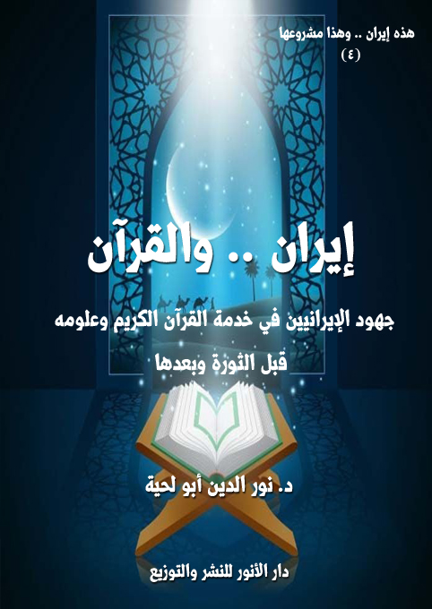

الكتاب: إيران والقرآن
الوصف: جهود الإيرانيين في خدمة القرآن الكريم وعلومه قبل الثورة وبعدها
السلسلة: هذه إيران وهذا مشروعها
المؤلف: د. نور الدين أبو لحية
الناشر: دار الأنوار للنشر والتوزيع
الطبعة: الأولى، 1442 هـ
عدد الصفحات: 370
الكتاب موافق للمطبوع
ISBN: 978-620-3-85920-1
لمطالعة الكتاب من تطبيق مؤلفاتي المجاني وهو أحسن وأيسر: هنا

يهدف هذا الجزء من سلسلة [هذه إيران.. وهذا مشروعها] إلى أمرين، كليهما مما يدعو إليه العلم والشرع والأخلاق:
أولهما: الرد على تلك الهجمات الشرسة التي ترمي الجمهورية الإسلامية الإيرانية بأنها صاحبة مشروع فارسي أو مجوسي أو صفوي، وأنها بذلك لا علاقة لها بالإسلام، ولا بمصادره.
وهي تهمة خطيرة يستدعي التكليف الشرعي وجوب تفنيدها وردها من أبواب كثيرة أولها نصرة المسلم لأخيه المسلم، وعدم غمط الناس حقوقهم، والشهادة بالحق، وعدم كتمان العلم.. والمعاني الكثيرة التي غابت للأسف عند مثيري أمثال هذه الشبهات، بدليل جهلهم المطبق بكل التراث العلمي الإيراني، القديم منه والحديث.
وثانيهما: التعريف بما أنتجته إيران طيلة تاريخها في خدمة القرآن الكريم، حتى يكون ذلك حلقة وصل بينها وبين غيرها من البلاد الإسلامية، والتي يسعى الأعداء للتفريق بينها وبينهم.
ولذلك لم نقتصر في هذا الكتاب على العرض الموجز للتراث الإيراني المرتبط بالقرآن الكريم وعلومه، وإنما عرفنا بكل عمل من الأعمال، وبينا منهجه ومزاياه، ليكون ذلك فرصة لتحقيق التواصل بين الباحثين، كما كان ذلك واقعا قبل الهجمة الإعلامية والدينية الشرسة التي حاولت فصل إيران عن دورها المرجعي والمركزي في العالم الإسلامي..
إيران والقرآن (11)
يهدف هذا الجزء من سلسلة [هذه إيران.. وهذا مشروعها] إلى أمرين، كليهما مما يدعو إليه العلم والشرع والأخلاق:
أولهما: الرد على تلك الهجمات الشرسة التي ترمي الجمهورية الإسلامية الإيرانية بأنها صاحبة مشروع فارسي أو مجوسي أو صفوي، وأنها بذلك لا علاقة لها بالإسلام، ولا بمصادره.
وهي تهمة خطيرة يستدعي التكليف الشرعي وجوب تفنيدها وردها من أبواب كثيرة أولها نصرة المسلم لأخيه المسلم، وعدم غمط الناس حقوقهم، والشهادة بالحق، وعدم كتمان العلم.. والمعاني الكثيرة التي غابت للأسف عند مثيري أمثال هذه الشبهات، بدليل جهلهم المطبق بكل التراث العلمي الإيراني، القديم منه والحديث.
وثانيهما: التعريف بما أنتجته إيران طيلة تاريخها في خدمة القرآن الكريم، حتى يكون ذلك حلقة وصل بينها وبين غيرها من البلاد الإسلامية، والتي يسعى الأعداء للتفريق بينها وبينهم.
ولذلك لم نقتصر في هذا الكتاب على العرض الموجز للتراث الإيراني المرتبط بالقرآن الكريم وعلومه، وإنما عرفنا بكل عمل من الأعمال، وبينا منهجه ومزاياه، ليكون ذلك فرصة لتحقيق التواصل بين الباحثين، كما كان ذلك واقعا قبل الهجمة الإعلامية والدينية الشرسة التي حاولت فصل إيران عن دورها المرجعي والمركزي في العالم الإسلامي.
وقد حاولنا أن نفعل ذلك، إما بالرجوع المباشر لذلك التراث، وهو متوفر بحمد الله في المواقع والمكتبات المختلفة، أو بالرجوع لمن عرفوا بذلك التراث، سواء من الإيرانيين أو غيرهم، وخاصة ما كتبه العلامة المعرفة، باعتباره من أكبر المختصين بعلوم القرآن وتفسيره
إيران والقرآن (12)
في هذا العصر.
وبناء على هذا قسمت الكتاب إلى ثلاثة فصول:
الأول ـ جهود الإيرانيين في خدمة القرآن الكريم قبل الثورة الإسلامية: والتي تبدأ من العصر الأول إلى ما قبل انتصار الثورة الإسلامية، وقد حاولت أن أجمع فيه أكبر قدر ممكن من الكتب التي كان لها تأثيرها الكبير في إيران، وفي جميع بلاد العالم الإسلامي، سواء كانت من إنتاج أعلام المدرسة السنية، أو إنتاج إخوانهم من المدرسة الشيعية.
الثاني ـ جهود الإيرانيين في خدمة القرآن الكريم بعد الثورة الإسلامية: والتي تبدأ من انتصار الثورة الإسلامية إلى الآن، وبما أنها كثيرة جدا؛ فقد اقتصرت على أهمها وأشهرها.
الثالث ـ مجالات جهود الإيرانيين في خدمة القرآن الكريم وخصائصها: وقد حاولت من خلاله أن أبين أن هذه الجهود ليست كمية فقط، بل هي نوعية أيضا، لأنها تخدم الحقائق القرآنية وأهدافها.. وقد دعاني إلى تخصيص هذا بفصل خاص هو تلك الأحكام المسبقة التي يطلقها البعض على الجهود الإيرانية من غير تعرف على محتوياتها.
ومن باب (من لا يشكر الناس لا يشكر الله) (1)، لا أنسى أن أتقدم بالشكر الجزيل لأستاذنا الكبير السيد جلال ميرأقائي الذي استفدت منه الكثير من المعلومات المهمة التي لولاها لما استطعت البحث في التراث الإيراني المتعلق بالقرآن، وخاصة الحديث منه؛ فلم أكن لأتعرف عليها، لولا توجيهه وإفاداته، وكيف لا يكون كذلك، وهو الذي تشرف بمصاحبة كبار علماء إيران كالعلامة التسخيري والعلامة واعظ زادة الخراساني، والعلامة محمد هادي معرفة، وغيرهم، والذين عرفني بهم وبغيرهم من خلال أحاديثه عنهم.
__________
(1) رواه أحمد (7755)، وأبو داود (4198)
إيران والقرآن (13)
كما لا أنسى أن أشكره على أنه أتاح لي الفرصة للتعرف عن كثب على جهود المعاصرين في خدمة القرآن الكريم، وذلك بتيسير تواصلي معهم، وتوفير كل ما أحتاجه من مراجع، ولذلك أعتبره شريكا لي في هذا العمل، بل له الحظ الأكبر منه ابتداء من التوجيه لكتابته، وانتهاء بتوفير المراجع والشرح لما يعرض لي من غموض.
وأنبه إلى أن هذا العمل لا يهدف إلى الإحصاء والاستقصاء؛ فذلك مستحيل، ويحتاج إلى الأسفار الكثيرة، ولذلك اهتم بأهم ما كتب في القديم والحديث، مع ذكر النماذج والأمثلة التي تدل على غيرها.
وأسأل الله في ختام هذه المقدمة أن يؤدي هذا الكتاب غرضه في خدمة الوحدة الإسلامية، وتحقيق التواصل العلمي والروحي بين المسلمين وخصوصا الباحثين منهم، لتفويت الفرص على الأعداء في التفريق بينهم.
إيران والقرآن (14)
جهود الإيرانيين في خدمة القرآن الكريم قبل الثورة الإسلامية
وهي الجهود التي لا يجادل فيها إلا المغرضون الحاقدون؛ فإيران طيلة التاريخ الإسلامي كانت منارة علمية، ومركزا حضاريا أسس لكل العلوم الإسلامية، ابتداء بما يرتبط بالقرآن الكريم، ولذلك يمكن القول بأن كل العلوم القرآنية، وأنواع التفاسير أسست في المدن الإيرانية، كما سنرى ذلك بوضوح في هذا الفصل، والذي قسمناه إلى خمسة مباحث، هي:
أولا ـ الجهود المرتبطة بلغة القرآن الكريم وبلاغته.
ثانيا ـ الجهود المرتبطة بالتفسير بالمأثور.
ثالثا ـ الجهود المرتبطة بالتفسير الكلامي.
رابعا ـ الجهود المرتبطة بالتفسير الفقهي.
خامسا ـ الجهود المرتبطة بالتفسير العرفاني.
أولا ـ الجهود المرتبطة بلغة القرآن الكريم وبلاغته:
وقد رأينا من خلال الاطلاع على مؤلفات الإيرانيين حولها أنهم رواد التأليف في هذا الجانب، بالإضافة إلى أن من ألفوا في أكثر العلوم اللغوية التي استخدمت في تفسير القرآن الكريم منهم.
وسنذكر هنا أبرز مؤلفاتهم في هذا الجانب والتي كان لها تأثيرها على ما كتب فيه:
دلائل الإعجاز وأسرار البلاغة والرسالة الشافية:
وهي ثلاثة مؤلفات لأبي بكر عبد القاهر بن عبد الرحمن الجرجاني (400 ـ 471 هـ)
إيران والقرآن (15)
المنتسب لمدينة (جرجان) (1) الإيرانية، وهو أحد اللذًين قيل عنهما: (لم يفهم القرآن إلا أعرجان أحدهما في زمخشر، والآخر في جرجان) (2)
ويعتبر ـ بشهادة كل المؤرخين ـ مؤسس علم البلاغة، وتعد كتبه: (دلائل الإعجاز) و(أسرار البلاغة) و(الرسالة الشافية في إعجاز القرآن)، من أهم ما ألف في هذا المجال، وقد كان هدفه منها إثبات إعجاز القرآن الكريم وفضله على النصوص الأخرى من شعر ونثر.
وقد أجمع كل المعرفين بهذه الكتب على فضلها وسبقها، ومنهم محمود محمد شاكر في مقدمة تعليقه على كتاب [دلائل الإعجاز]: (منذ دهر بعيد، حين شققتُ طريقي إلى تذوُّق الكلام المكتوب، منظومه ومنثوره، كان من أوائل الكتب التي عكفتُ على تذوُّقها كتاب [دلائل الإعجاز]، للشيخ الإمام أبى بكر عبد القاهر بن عبد الرحمن الجرجاني، الأديبِ النحوي، والفقيهِ الشافعي، والمُتكلِّمِ الأشعري.. ويومئذٍ تنبَّهتُ إلى أنه بدَا لي أنه كان يريدُ أن يؤسس بكتابه هذا علما جديداً استدرَكَهُ على من سبقه من الأئمة الذين كتبُوا في البلاغة وفى إعجاز القرآن، ولكن كان غريباً عندي أشدَّ الغرابة، أنه لم يَسِرْ في بناءِ كتابه سيرةَ من يؤسس علماً جديداً، كالذي فعله سيبويه في كتابه العظيم، أو ما فعله أبو الفتح ابن جِنى في كتابه الخصائص، أو كالذي فعله عبد القاهر نفسُه في كتابه أسرار البلاغة، بل كانَ عملُه وهو يؤسس هذا العلمَ الجديد، مَشُوباً بحميَّة جارفةٍ لا تعرف الأناةَ في التبويب والتقسيم والتصنيف، وكأنه كانَ في عَجَلةٍ من أمره، وكأنّ منازعا كان يُنازعُهُ عند كُلّ فكرةٍ يريدُ أن
__________
(1) أو كركان (بالفارسية: گرگان)، وكانت تسمّى قديماً أستراباذ أو أستراباد، وهي إحدى المدن الشهيرة في إيران. وتقع في شمالي إيران حالياً، وكانت جرجان مركز منطقة استرآباد.. وإليها ينتسب الشريف الجرجاني والميرداماد الحسيني الفيلسوف والمير فندرسكي واللغوي النحوي علي الفصيحي وكذلك الأمين الأسترابادي.
(2) وفيات الأعيان 1: 298 وطبقات السبكي 3: 238.
إيران والقرآن (16)
يُجَلّيَها ببراعته وذكائه وسُرعة لَمْحه، وبقوّةِ حُجَّته ومضاءِ رأيه) (1)
وقال عنه المحقق ياسين الأيوبي في مقدمة تحقيقه له: (الناظر في موضوعات [دلائل الإعجاز] التي ضمَّها فهرستُه المنشور في الصفحات الأولى منه، ينتابه شعور بأنَّ صاحب الكتاب، تفجرتْ عنده ينابيع المعرفة، فسلكتْ به شتى الدرس البلاغي الذي راح يلقيه على قرَّاء زمانه، من طلبة وعلماء تفاوتتْ مداركُهم وقدراتهم بين المتقبل المتذوق، والدّعيِّ الغبيِّ، فأفرغَ جُلَّ ما توصل إليه من حقائق ومعلومات صاغها بمنطق المحاضر الموسوعي، لا يسعه الانضواء في موضوع واحد، بل يلتفت إلى هذا الجانب وذاك، وإلى هذا الباب، وهذا الميدان، من أبواب الفكر البلاغي وميادينه المترامية الأطراف) (2)
وقال ـ مبينا قيمة المباحث الواردة فيه، والتي قد يتوهم أنها مجرد استطراد ـ: (على الرغم من كون الكتاب قد وضع لتأسيس علم المعاني، وما يقتضيه من مسائل محددة توافق عليها العلماء والدارسون، فإننا إمام سلسلة أو خليط من الموضوعات التي تداخلت وتفرعتْ، أو اتَّسقتْ وافترقت ـ ولا نقول: ائتلفتْ واختلفت ـ لأنها في تَضامِّها، تؤلِّف الأفق البلاغي الواسع لما سمَّاه: علم المعاني، مفتوحاً على علمي البيان والبديع اللذين لم يستقلاَّ عن العلم الأول، إلاَّ في نطاق الاصطلاح والتحديد المتأخرين مع السكاكيِّ أو القزويني، ومَنْ تبعهما وعاصرهما من علماء البلاغة) (3)
وبعد أن استعرض الموضوعات المطروحة في الكتاب، قال: (كانت هذه أبرز موضوعات الكتاب، صغتُها بكثير من الجمع والتلخيص، إن دلَّت على شيء، فعلى المنحى الدوراني المتشعب حول نقطة مركزية هي إعجاز النظم وما يتعلق به أو يؤدي إليه من
__________
(1) دلائل الإعجاز تحقيق: شاكر (مقدمة/ 3)
(2) دلائل الإعجاز تحقيق: الأيوبي (ص: 8)
(3) المرجع السابق، (ص: 9)
إيران والقرآن (17)
دروب وقنواتٍ، كل واحدة منها تمثل مشروع دائرة شبه مستقلة، وما ذاك إلاّ لغنى العناصر التي يتكون منها الإعجاز البلاغي الذي يحيط بالنظم القرآني وكلِّ نظم آخر يقتدي به أو يقتبس منه، ويسعى لبلوغ ما بلغه من مراتب السمو في الإبداع الفني.. ولا يسعني ههنا إلاَّ تأكيد ما قلْتُه من قبل بموسوعية الطرح والمعالجة، وبالنظرة شبه الشمولية التي يتطلبها الدرس البلاغي، ويُفْضي إليها؛ وبخاصة علم المعاني الذي يفترض الإلمام بإحكام، بمختلف علوم اللغة وقواعدها. ذاك أنه الأصل والقاعدة وما سمِّي بمقتضى الحال) (1)
ثم بين طريقته في الطرح، ومنهجه في الكتاب، فقال: (تندرج كتابة عبد القاهر الجرجاني البلاغية بعامة، وكتاب دلائل الإعجاز بخاصة، تحت عارضة العقل والمنطق، لأن كل شيء عنده قائم على إبداء الرأي وبسطة والتمثيل له، أو العكس، معتمداً القياس والاستنتاج، محكِّماً عقله وتفكيره، معتمداً المبادئ المعرفية التي يحكم بها البلغاء الحقيقيون، وما يحصله من عيون الشواهد الأدبية، يسبقها أو يواكبها الشاهد القرآني المعجز؛ فكان أحياناً مستقرئاً، يبحث في التفاصيل والجزئيات وصولا إلى خلاصة الرأي وزبدة النظرية، وأحياناً مستنتجاً، يطرح الرأي، وينصب ميزان الحكم ثم يعرض مفاهيمه وشروحه في بوتقة العقلي المستمد من ثقافته الفكرية التأملية ومقاربته الأشياء، فضلاً عن المنطق اليوناني الأرسطي الذي تشرَّبتْ به طائفة كبيرة من علماء عصره؛ ولكنه خفَّف من جفاء المنطق ورصانة العقل بما اكتسبه من لطافة الذوق ورهافة الإحساس) (2)
وبعد أن ذكر النماذج والأمثلة الدالة على قوة وعقلانية ما طرحه الجرجاني من أطروحات، قال: (لا أغالي إذا قلت إِنَّ كل رأي صدر عن الجرجاني، وكل نظرية طرحها أو توصَّل إليها، إنما سلكَ في سبيلهما هذا المسلكَ القياسي الاستدلالي الاستقرائي، في إطار
__________
(1) المرجع السابق، (ص: 10)
(2) المرجع السابق، (ص: 10)
إيران والقرآن (18)
من التحليل المنطقي والتفكير العقلاني، بغض النظر عما يَؤُول إليه أو يستنتجه أو يؤسِّس عليه.. وقد أثبت الجرجاني، أنه، في معظم ما شرح وأوضح، وبرهن ودلَّل وعلَّل كان في وضع الباحث المنهجي، والمحاضر الممتاز يقدِّم معارفَه لطلبته بكل صبر ورويَّة، متوخياً على الدوام الإِقناعَ والإفادة) (1)
وهو كتاب من تأليف الراغب الأصفهاني (المتوفى 502 هـ)، وقد اتفق كل الباحثين في علوم القرآن على فضله وكونه من الكتب الرائدة في هذا المجال، مع العلم أنه في جميع كتبه يدقق في الألفاظ والمصطلحات، ويحاول أن يبحث عن معانيها القرآنية، والأمثلة على ذلك كثيرة في (تفصيل النشأتين وتحقيق السعادتين)، و(رسالة في الاعتقاد)، و(الذريعة إلى مكارم الشريعة)، بالإضافة إلى تفسيره الذي سنتحدث عنه لاحقا.. و(بذلك تكون هذه الكتب مكملة لكتاب المفردات) (2)
يقول الباحث أحمد حسن فرحات في كتابه [معاجم مفردات القرآن: موازنات ومقترحات] تحت عنوان [مفردات الراغب معلم بارز في معاجم المفردات القرآنية]: (يكاد يجمع علماء الأمة وأعلامها على أن كتاب [مفردات ألفاظ القرآن] للراغب الأصفهاني يأتي في المرتبة الأولى من الكتب الكثيرة المؤلفة في هذا الموضوع، فليس هناك مؤلف في علوم القرآن، أو دارس أو مفسر أو كاتب ـ بعد الراغب الأصفهاني ـ إلا ويشعر بالأجلال والإعجاب لهذا العمل العظيم الذي يعتبر بحق نقلة كبيرة في ميدانه، ومنعطفاً هاماً في تاريخ معاجم المفردات القرآنية) (3)
__________
(1) المرجع السابق، (ص: 10)
(2) معاجم مفردات القرآن (موازنات ومقترحات) (ص: 18)
(3) معاجم مفردات القرآن (موازنات ومقترحات) (ص: 9)
إيران والقرآن (19)
ثم استعرض بتفصيل ميزات الكتاب مقارنا لها بغيره من الكتب، وسنلخص ما ذكره من غير تلك المقارنات (1):
كشف جذر الكلمة: أي أنه يتبع جذر المعنى الذي تلتقي عنده جميع معانيها، ففي مادة (برّ) يقول الراغب: البَر: خلاف البحر، وتصُوِّر منه التوسع. فاشتق منه (البر) أي: التوسع في فعل الخير. ثم يقول: و(البُرُّ) معروف، وتسميته بذلك لكونه أوسع ما يحتاج إليه في الغذاء.. وهكذا يكون التوسع هو الجذر الذي يجمع بين المعاني.
ولا يقف الراغب عند هذا، وإنما يحاول درك هذا في نسبة الكلمة وإضافاتها، فيرى أن (البر) ينسب إلى الله تعالى تارة نحو {إِنَّهُ هُوَ الْبَرُّ الرَّحِيمُ} وإلى العبد تارة، فيقال: (بر العبد ربه) أي: توسع في طاعته، فمن الله تعالى الثواب. ومن العبد الطاعة، وهو يريد بذلك أن التوسع في الثواب من الله مقابل التوسع في الطاعة من العبد.. وهكذا يربط كل ما ارتبط بالبر بالسعة، فيقول: بر الوالدين: التوسع في الإحسان إليهما.. وهكذا نرى تتبعه لتصريفات الكلمة وإضافاتها وهو يلمح فيها دائماً فكرة التوسع الذي هو أصل المعنى وجذره وبذلك يعطى القارئ، ما هو بحاجة إليه في فقه اللغة وأسرار الاشتقاق، ويتدرج به صعداً في فهم العربية، والوقوف على تصاريفها، مما يؤهله للتعامل مع سر الكلمة في الكتاب المعجز وتذوق حلاوتها وإدراك دلالاتها وإيحاءاتها (2).
تتبع المعاني المستعارة: يبدأ الراغب عادة كلامه على المعنى الأصلّي، ثم يتتبع المعاني المستعارة منه، وهو بذلك يتتبع تسلسل المعاني وانتقال بعضها عن بعض، فهو ـ مثلا ـ عند شرحه لكلمة (ريش) يقول: ريش الطائر معروف، وقد يُخَصُّ بالجناح من بين سائره،
__________
(1) انظر: معاجم مفردات القرآن (موازنات ومقترحات) (ص: 10)، فما بعدها.
(2) معاجم مفردات القرآن (موازنات ومقترحات) (ص: 11)
إيران والقرآن (20)
ولكون الريش للطائر كالثياب للإنسان استعير للثياب (1). قال تعالى {وَرِيشاً وَلِبَاسُ التَّقْوَى}
تحرّي المعاني الصحيحة: وذلك عندما يشتبه المعنى الصحيح للفظ بغيره من المعاني، ومن الأمثلة على ذلك تأويله لما يصدر عن الأنبياء من الأقوال التي يمكن تفسيرها على غير وجهها بما لا يتفق مع عصمة النبي، وفي مثل هذه الحال، يحرص على تحري معنى صحيح يليق بعصمة النبي، فهو مثلا عند شرحه كلمة [سقم]: يقول: السَّقْمُ والسُّقْمُ: المرض المختص بالبدن، والمرض قد يكون في البدن وفي النفس، نحو {فِي قُلُوبِهِمْ مَرَضٌ} وقوله تعالى: {إِنِّي سَقِيمٌ}، فمن التعريض أو الإشارة إلى ماض، وإما إلى مستقبل، وإما إلى قليل مما هو موجود في الحال، إذ كان الإنسان لا ينفك من خلل يعتريه وإن كان لا يحس به.. وهكذا يتبين لنا وجوه من المعاني الصحيحة يمكن حمل الآية على أحدها بما لا يتعارض مع عصمة النبي (2).
الكلمات الجامعة لمعنيين: وذلك على خلاف ما يقوم به غيره عندما يطلقون على بعض الكلمات أنها من الأضداد، كما هو الحال في كلمة [القُرء] حيث تطلق على كل من الطهر والحيض، لكن الراغب يقدم تعليلاً لذلك فيقول: (والقُرءُ ـ في الحقيقة: اسم للدخول في الحيض عن طهر ولما كان اسماً جامعاً للأمرين: الطهر والحيض المتعقب له، أطلِق على كل واحد منهما، لأن كل اسمٍ موضوع لمعنيين معاً يطلق على كل واحد منهما إذا انفرد، كالمائدة: للخوان وللطعام، ثم قد يسمى كل واحد منهما بانفراده به، وليس القرء اسماً للطهر مجرداً، ولا للحيض مجرداً بدلالة أن الطاهر التي لم تر أثر الدم لا يقال لها ذات
__________
(1) المفردات في غريب القرآن (ص: 372)
(2) المفردات في غريب القرآن (ص: 415)
إيران والقرآن (21)
قرء، وكذا الحائض التي استمر بها الدم لا يقال لها ذلك) (1)
نفي معان موهومة: حيث يحرص الراغب على نفي المعاني الموهومة، ويبين المعنى اللائق باللفظ، ومن الأمثلة على ذلك ما ذكره في مادة [خوف] حيث ذكر أن (الخوف من الله: لا يراد به ما يخطر بالبال من الرعب، كاستشعار الخوف من الأسد، بل إنما يراد به الكف عن المعاصي وتحري الطاعات.. والتخويف من الله تعالى: الحث على التحرز وقال: {وَإِنِّي خِفْتُ الْمَوَالِيَ مِنْ وَرَائي} [مريم 5]. فخوفه منهم ألا يراعوا الشريعة، ولا يحفظوا نظام الدين لا أن يرثوا ماله ـ كما ظنه بعض الجهلة ـ فالقِنْيات الدنيوية أخسّ عند الأنبياء ـ عليهم السلام ـ من أن يشفقوا عليها) (2)
قواعد كلية: حيث نرى الراغب ـ أثناء شرحه لبعض الكلمات ـ يحاول استخراج قواعد كلية يستخلصها من تتبع الاستعمال القرآني للكلمة، ومن الأمثلة على ذلك اعتباره أن (كل موضع ذكر فيه لفظ [تبارك] تنبيه على اختصاصه تعالى بالخيرات (3).. وكل موضع أثبت الله السمع للمؤمنين، أو نفى عن الكافرين، أو حث على تحريه، فالقصد به إلى تصور المعنى والتفكر فيه (4).. وكل موضع مدح الله تعالى بفعل الصلاة أو حث عليه، ذُكِر بلفظ الإقامة (5).
قواعد أكثرية: حيث ينص الراغب على بعض القواعد بأنها الأكثر في الاستعمال لينفي عنها صفة الكلية، ومن الأمثلة على ذلك اعتباره أن أكثر ما يستعمل [السعي] في
__________
(1) المفردات في غريب القرآن (ص: 668)
(2) المفردات في غريب القرآن (ص: 303)
(3) المفردات: 120.
(4) المفردات: 426.
(5) المفردات: 491.
إيران والقرآن (22)
الأحوال المحمودة.. وأكثر ما جاء الإمداد في المحبوب والمد في المكروه.. وأكثر ما تستعمل الشفاعة في القرآن في انضمام من هو أعلى مرتبة إلى من هو أدنى.. وأكثر ما ورد [الخوض] في القرآن فيما يُذَمُّ الشروع فيه (1).
وهو ـ كسائر كتب الراغب ـ تهتم باللغة وفلسفتها والتعمق في المعاني المرتبطة بالألفاظ، وقد قام بجمعه مجموعة من الباحثين (2)، وقال أحدهم في التعريف به: (من خلال النظر في كتب التفسير نجد أن كل كتاب اختص بشيء، ميزه عن غيره، وأبدع فيه، فهذا اهتم بسرد ما ورد في الآية من الأحاديث والآثار، وأقوال السلف، وذاك اهتم بإعرابه، وثالث اهتم بأحكام الفقهية الواردة فيه، وآخر كتبه لينصر فيه مذهبه الذي يتبعه، ويدعو إليه.. ومن جملة التفاسير المشهورة: (تفسير الراغب الأصفهاني)، وعند النظر إليه نجده اختص بكل ما ذكر أعلاه فكان بحق تفسيراً موسوعياً نال إعجاب من اطلع عليه.. ولك أن تعجب إذا قلت لك: إن هذا التفسير على أنه من التفاسير المشهورة، إلا أنه من التفاسير المغمورة.. ولا تناقض في هذه العبارة، فهو تفسير مشهور عند العلماء قديماً، ولكنه مغمور عند كثير من طلاب العلم في عصرنا، وعدم الاهتمام بطبعه ونشره، ناتج عن قلة درايتهم
__________
(1) معاجم مفردات القرآن (موازنات ومقترحات) (ص: 16)
(2) المقدمة وتفسير الفاتحة والبقرة: تحقيق ودراسة: د. محمد عبد العزيز بسيوني، كلية الآداب - جامعة طنطا، الطبعة الأولى: 1420 هـ - 1999 م.
جزء 2، 3: من أول سورة آل عمران - وحتى الآية 113 من سورة النساء، تحقيق ودراسة: د. عادل بن علي الشِّدِي، دار النشر: دار الوطن – الرياض، الطبعة الأولى: 1424 هـ - 2003 م.
جزء 4، 5: (من الآية 114 من سورة النساء - وحتى آخر سورة المائدة)، تحقيق ودراسة: د. هند بنت محمد بن زاهد سردار، كلية الدعوة وأصول الدين - جامعة أم القرى، الطبعة الأولى: 1422 هـ - 2001 م..
إيران والقرآن (23)
بهذا التفسير، وما فيه، مما يميزه.. أضف إلى ذلك أنه لم يكمل، بل وجد ناقصاً) (1)
ثم ذكر خصائص هذا التفسير، وهي:
1. إكثاره من النقل عن أئمة اللغة.. ولهذا النقل أهميته، إذا علمنا أن المصنف متبحر في علوم البلاغة، والنحو، والاشتقاق، والمعاني، خاصة وأنه هو صاحب (المفردات)
2. إكثاره من النقل عن المفسرين الذين تعتبر كتبهم في حكم المفقود، مما يجعل هذا التفسير مصدراً هاماً، بل ووحيداً لبعض الآراء.
3. احتواء هذا التفسير على جملة من الفوائد، والنكت، واللطائف التفسيرية التي لا تكاد توجد عند غيره.
بصائر ذوي التمييز في لطائف الكتاب العزيز:
وهو من التفاسير اللغوية المهمة، وقد ألفه العلامة اللغوي الكبير مجد الدين أبو طاهر محمد بن يعقوب الفيروزآبادي (2) (المتوفى: 817 هـ) صاحب اللامع المعلم العجاب، والجامع بين المحكم والعباب، والقاموس المحيط، والقاموس الوسيط، وغيرها من مراجع اللغة العربية الكبرى.
بالإضافة إلى كتبه في التفسير، وهي (تنوير المقياس في تفسير ابن عباس)، و(تيسير فاتحة الإياب في تفسير فاتحة الكتاب)، و(الدر النظيم المرشد إلى مقاصد القرآن العظيم)
وقد اتفق كل المترجمين له على أنه من أئمة اللغة العربية الكبار، فقد قال عنه ابن حجر في تقريب التهذيب: (كان حافظًا للغة، واسع المعرفة بها) (3) وقال عنه التَّقِيُّ الكِرْمانيُّ: (كان
__________
(1) قراءة في (تفسير الراغب الأصفهاني)، بتحقيق د. عادل بن علي الشدي، عبد الله الشمراني.
(2) ولد بكازرون وهي بلدة بفارس سنة 729 هـ.
(3) ابن حجر: تقريب التهذيب 1/ 13.
إيران والقرآن (24)
عديم النظير في زمانه، نظمًا ونثرًا بالفارسي والعربي) (1)، وقال المقري: (هو آخر من مات من الرؤساء الذين انفرد كل منهم بفنٍّ فاق فيه أقرانه على رأس القرن الثامن.. وكان كثير العلم والاطلاع على المعارف العجيبة، وبالجملة كان آية في الحفظ والاطلاع والتصنيف) (2) وقال عنه الزركلي: (كان مرجع عصره في اللغة والحديث والتفسير) (3)
ويحتوى تفسيره على مقدمة فيها فضل القرآن، وبعض المباحث العامة المتعلقة به، كالنسخ، ووجوه مخاطباته، ثم يأْخذ في ذكر مباحث تتعلق بالقرآن سورة سورة، على ترتيبها المعروف في المصحف.. فيذكر في كل سورة مباحث تسعة 1 ـ موضع النزول 2 ـ عدد الآيات والحروف والكلمات 3 ـ اختلاف القراءِ في عدد الآيات 4 ـ مجموع فواصل السورة 5 ـ اسم السورة أَو أَسماؤها 6 ـ مقصود السورة، وما هي متضمِّنة له 7 ـ الناسخ والمنسوخ من السورة 8 ـ المتشابه منها 9 ـ فضل السورة.
ثم يعقد بحثاً إِجمالياً في عدد آيات القرآن، وعدد كلماته وحروفه، وما يجرى هذا المجرى؛ كعدد كل حرف من الحروف الهجائية فيه، فيذكر مثلاً أَن عدد اللامات فيه كذا.. ثم يعرض لتفسير مفردات القرآن على نحو عمل الراغب في مفرداته، ويصنِّفها باعتبار الحرف الأَول من الكلمة، فالمبدوءُ بحرف الأَلف في حرف الأَلف، وهكذا. ويصدّر مباحث كل حرف بالكلام على وصف الحرف ومعناه لغة، والنسبة إِليه ونحو ذلك. ونراه قد يراعى الحرف الزائد في الكلمة، فنرى الإِنزال في حرف الأَلف. ويأْتى هذا القسم في تسعة وعشرين بابا على عدد حروف الهجاءِ.. ثم يأْتى الباب الثلاثون، فيذكر فيه الأنبياء
__________
(1) السخاوي: الضوء اللامع 5/ 31.
(2) أزهار الرياض في أخبار القاضي عياض 1/ 250.
(3) الزركلي: الأعلام 7/ 146..
إيران والقرآن (25)
المذكورين في القرآن، وأَعداءَهم وقصصهم، وما يدخل في هذا الباب (1).
ثانيا ـ الجهود المرتبطة بالتفسير بالمأثور:
وهو التفسير الذي يعتمد (على ما ورد في القرآن الكريم نفسه من البيان والتفصيل لبعض آياته، بالإضافة إلى ما نُقل عن الرسول صلى الله عليه وآله وسلم، أو عن الصحابة والتابعين) (2)
وعند مطالعة ما ألف في التفسير بالمأثور نجد أكثرها وأهمها وأسبقها من تأليف علماء إيرانيين، وهذه نماذج عنها:
من أهم التفاسير التي ألفها علماء إيرانيون من المدرسة السنية:
وهو المسمى [جامع البيان في تأويل القرآن]، ومؤلفه أبو جعفر محمد بن جرير بن يزيد بن كثير بن غالب الطبري، نسبة إلى طبرستان، وهو من أهل آمل، من بلاد مازندران بإيران، ولد بها سنة (224 هـ)، ورحل في طلب العلم وهو شاب، وطوّف الأقاليم، فسمع بمصر والشام والعراق، ثم ألقى رحله واستقرّ ببغداد، إلى أن توفّي بها سنة (310 هـ)
ويعتبر تفسيره أهم كتاب في هذا النوع من التفسير، بل أهم مرجع ترجع إليه جميع التفاسير ـ باتفاق جميع المؤرخين ـ فهو الجامع لأكبر قدر من الروايات التفسيرية، وقد قال الذهبي مبينا أهمية تفسيره، وتأثيره فيما بعده من التفاسير: (يعتبر تفسير ابن جرير من أقوم التفاسير وأشهرها، كما يعتبر المرجع الأول عند المفسِّرين الذين عنوا بالتفسير النقلي، وإن كان في الوقت نفسه يُعتبر مرجعاً غير قليل الأهمية من مراجع التفسير العقلي، نظراً لما فيه من الاستنباط، وتوجيه الأقوال، وترجيح بعضها على بعض، ترجيحاً يعتمد على النظر
__________
(1) من مقدمة المحقق محمد علي النجار، بصائر ذوي التمييز في لطائف الكتاب العزيز (1/ 29)
(2) التفسير والمفسرون، د. محمد السيد حسين الذهبي (المتوفى: 1398 هـ)، مكتبة وهبة، القاهرة، (1/ 112)
إيران والقرآن (26)
العقلي، والبحث الحر الدقيق.. ولو أننا تتبعنا ما قاله العلماء في تفسير ابن جرير، لوجدنا أن الباحثين في الشرق والغرب قد أجمعوا الحكم على عظيم قيمته، واتفقوا على أنه مرجع لا غِنَى عنه لطالب التفسير) (1)
وذكر أسبقيته لجميع كتب التفسير، فقال: (ونستطيع أن نقول: إن تفسير ابن جرير هو التفسير الذى له الأوَّلية بين كتب التفسير، أوَّلية زمنية، وأوَّلية من ناحية الفن والصناعة.. أما أوَّليته الزمنية، فلأنه أقدم كتاب في التفسير وصل إلينا، وما سبقه من المحاولات التفسيرية ذهبت بمرور الزمن، ولم يصل إلينا شيء منها، اللهم إلا ما وصل إلينا منها في ثنايا ذلك الكتاب الخالد الذى نحن بصدده.. وأما أوَّليته من ناحية الفن والصناعة، فذلك أمر يرجع إلى ما يمتاز به الكتاب من الطريقة البديعة التي سلكها فيه مؤلفه، حتى أخرجه للناس كتاباً له قيمته ومكانته.) (2)
ونقل عن السيوطي قوله: (وكتابه ـ يعنى تفسير محمد بن جرير ـ أجَّل التفاسير وأعظمها، فإنه يتعرض لتوجيه الأقوال، وترجيح بعضها على بعض، والإعراب، والاستنباط، فهو يفوق بذلك على تفاسير الأقدمين)
وقال النووي: (أجمعت الأمة على أنه لم يُصنَّف مثل تفسير الطبري)، وقال أبو حامد الإسفراييني: (لو سافر رجل إلى الصين حتى يحصل على كتاب تفسير محمد بن جرير لم يكن ذلك كثيراً)
وقال العلامة المعرفة عنه، وعن تفسيره: (كان الرجل خبيرا بالتاريخ وبأقوال السلف، عالما فاضلا وناقدا بصيرا، وله بعض الاجتهاد في تفسيره، وترجيح بعض الأقوال على بعض، وقد اعتبر الطبري أبا للتفسير كما اعتبر أبا للتاريخ؛ وذلك باعتبار جامعيّة
__________
(1) المرجع السابق، (1/ 149)
(2) المرجع السابق، (1/ 150)
إيران والقرآن (27)
تفسيره وسعته وشموله، ويذكر أقوال السلف بالأسانيد مما يستدعي الثقة به في نقله. لكنه قد أكثر في النقل عن الضعفاء والمجاهيل، ولفيف من المعروفين بالكذب والاختلاق، ولا سيّما جانب إكثاره من نقل الإسرائيليات، بما أفسد وشوّه وجه التفسير، الأمر الذي أخذ على تفسير ابن جرير؛ حيث يذكر الروايات من غير تمييز بين صحيحها وسقيمها، ولا تعرّض لبيان ضعيفها عن قويّها، ولعله حسب أنّ ذكر السند ـ ولو لم ينصّ على درجة الرواية قوّة وضعفا ـ يرفع المؤاخذة والتبعات عن المؤلّف في حين أنّ تفسيره هذا مشحون بالروايات الواهية والمنكرة، والموضوعات والإسرائيليات، ولا سيّما عندما يتعرّض لذكر الملاحم والفتن، وقصص الأنبياء بالذات) (1)
ثم عقب على ذلك بقوله: (ومن ثم فإنّ تفسير ابن جرير بحاجة إلى نقد فاحص وتمحيص شامل، كاحتياج كثير من كتب التفسير المشتملة على الموضوع والقصص الإسرائيلي، وليس ذكر السند بعاذر له، ولا يجري هنا قولهم: من أسند لك فقد حمّلك البحث عن رجال السند، كما زعمه الأستاذ الذهبي، لأنّ تجويز نشر مثل هذا الخضمّ من الموضوعات والإسرائيليات، لعله ذنب لا يغفر، كما نوّه عنه الإمام عبده) (2)
لكنه مع ذلك يعود فيثني على فضله في جمع آراء السلف وأقوالهم؛ فيقول: (وعلى أي تقدير، فإنّ مثل تفسير ابن جرير يعدّ اليوم من خير كتب التفسير الجامعة لآراء السلف وأقوالهم، ولولاه لربّما ضاعت أكثر هذه الآراء، فهو من أمّهات التفاسير المعتمدة في النقل والتفسير بالمأثور، ونحن نعتمد صحة نقله، وإن كان في المنقول على يديه كثير من الغثّ والفاسد، مما ألزم علينا النقد والتمحيص)
وذكر منهجه في التفسير، فقال: (إنه يذكر الآية أوّلا، ثم يعقبها بتفسير غريب اللّغة
__________
(1) التفسير والمفسرون في ثوبه القشيب، ج 2، ص: 313.
(2) المرجع السابق، ج 2، ص: 314.
إيران والقرآن (28)
فيها، أو إعراب مشكلها، إذا دعت الحاجة إلى ذلك، وربما يستشهد بأشعار العرب وأمثالهم. وبعد ذلك يأتي إلى تأويل الآية، أي تفسيرها على الوجه الراجح، فيأتي بحديث أو قول مأثور إن كان هناك رأي واحد. أما إذا ازدحمت الأقوال والآراء، فعند ذلك يذكر كل تأويل على حدّه، وربّما رجّح لدى تضارب الآراء أحدها وأتى بمرجّحاته إن لغة أو اعتبارا، وربما فصّل الكلام في اللغة والإعراب، واستشهاده بالشعر والأدب) (1)
وذكر موقفه تجاه أهل الرأي في التفسير، فقال: (إنه يقف في وجه أهل الرأي في التفسير موقفا عنيفا، ويرى من أعمال الرأي في تفسير كلام الله مخالفة بيّنة لظاهر دلائل الشرع، ويشدّد في ضرورة الرجوع إلى العلم المأثور عن الصحابة والتابعين، وأنّ ذلك وحده هو علامة التفسير الصحيح) (2)
ومؤلفه هو أبو محمد عبد الرحمن بن محمد بن أبي حاتم الحنظلي (3) الرازي (4) (240 ـ 327 هـ)، وهو من كبار حفاظ الحديث، وقد رحل في طلب الحديث إلى البلاد مع أبيه وبعده، وأدرك الأسانيد العالية، كان إماما في معرفة الرجال.
وتفسيره من أقدم التفاسير بالمأثور، وعليه وعلى تفسير الطبري يعتمد هذا النوع من التفسير، وقد ذكر منهجه في مقدمة تفسيره، فقال: (تحريت إخراج التفسير بأصح الأخبار إسنادا وأشبهها متنا، فإذا وجدت التفسير عن رسول الله صلى الله عليه وآله وسلم لم أذكر معه أحدا من الصحابة
__________
(1) المرجع السابق، ج 2، ص: 315.
(2) المرجع السابق، ج 2، ص: 319.
(3) الحنظلي نسبة إلى درب حنظلة بالري.
(4) انظر في ترجمته: تذكرة الحفاظ، شمس الدين أبو عبد الله محمد بن أحمد بن عثمان بن قَايْماز الذهبي، 5 مجلدات، دار الكتب العلمية، بيروت، 3/ 46؛ والأعلام لخير الدين الزركلي، دار العلم للملايين بيروت. ـ لبنان سنة 1980، 4/ 99.
إيران والقرآن (29)
ممن أتى بمثل ذلك، وإذا وجدته عن الصحابة فإن كانوا متفقين ذكرت أعلاهم درجة بأصح الأسانيد، وسميت موافقيهم بحذف الإسناد، وإن كانوا مختلفين ذكرت اختلافهم وذكرت لكل واحد منهم إسنادا، وسميت موافقيهم بحذف الإسناد، فإن لم أجد عن الصحابة ووجدته عن التابعين عملت فيما أجد عنهم ما ذكرته من المثال في الصحابة) (1)
قال محققه في التعريف بميزاته: (امتاز هذا التفسير بأنه جمع بين دفتيه تفسير الكتاب بالسنة وآثار الصحابة والتابعين بالإسناد.. واختار أصح الأسانيد.. وبه روايات كثيرة لا توجد لدى غيره وبأسانيده، وانفرد بها، ويدل على هذا أنه من خلال جمع مروياته مثلا من كتاب الدر المنثور للسيوطي نجد أن السيوطي يذكر الرواية ولم ينسبها إلى غير ابن أبى حاتم، وكذلك ابن كثير.. وحفظ لنا تفسير ابن أبى حاتم كثيرا من التفاسير المفقودة مثل تفسير سعيد بن جبير ومقاتل بن حيان وغيرهما.. ومعظم التفاسير تنقل عنه كثيرا من الآثار والروايات التي أوردها، فهو مصدر أصيل معتمد لدى جمهور علماء التفسير في كل العصور بعده) (2)
وذكر تأثيره فيما بعده من التفاسير وكتب الحديث: (أخذ عنه الحسين بن مسعود البغوي في كتابه معالم التنزيل، وابن تيمية في مجموع الفتاوى، والحافظ ابن كثير نقل عنه في كتابه تفسير القرآن العظيم الشيء الكثير، وابن حجر العسقلاني في كتابه فتح الباري، وأما السيوطي فقال: فقد لخصت تفسير ابن أبى حاتم في كتابي، وهو الدر المنثور، والإمام الشوكاني في فتح القدير استفاد منه كثيرا، وغير ذلك من الكتب) (3)
__________
(1) تفسير ابن أبي حاتم (1/ 10)
(2) مقدمة المحقق أسعد محمد الطيب لتفسير ابن أبي حاتم (1/ 10)
(3) تفسير ابن أبي حاتم (1/ 11)
إيران والقرآن (30)
والمعروف بتفسير الثعلبي، وهو لأبي إسحاق أحمد بن إبراهيم الثعلبي النيسابوري، توفّي سنة (427)، قال عنه ابن خلّكان: (كان أوحد زمانه في علم التفسير، وصنّف التفسير الكبير الذي فاق غيره من التفاسير) (1)، وقال عنه ياقوت: (صاحب التصانيف الجليلة، من التفسير الحاوي أنواع الفرائد، من المعاني والإشارات، وكلمات أرباب الحقائق، ووجوه الإعراب والقراءات) (2)
وقد ذكر مؤلفه في مقدمة كتابه منهجه فيه، فقال: (إني مذ فارقت المهد إلى أن بلغت الأشدّ اختلفت إلى ثقات الناس، واجتهدت في الاقتباس من هذا العلم الذي من الدين أساس والعلوم الشرعية الرأس.. الظلام بالضياء والصباح.. حتّى رزقني الله تعالى، وله الحمد، من ذلك ما عرفت به الحقّ من الباطل، والمفضول من الفاضل، والصحيح من السقيم، والحديث من القديم، والبدعة من السنة، والحجّة من الشبهة. فألفيت المصنّفين في هذا الباب فرقا على طرق: فرقة منهم أهل البدع والأهواء وفرقة المسالك والآراء مثل البلخي والجبائي والأصفهاني والرماني، وقد أمرنا بمجانبتهم وترك مخالطتهم، ونهينا عن الاقتداء بأقوالهم وأفعالهم فاختاروا ممّن تأخذون دينكم، وفرقة ألّفوا وقد أحسنوا غير أنّهم خلطوا أباطيل المبتدعين بأقاويل السلف الصالحين مثل أبي بكر القفال وأبي حامد المقري، وهما من الفقهاء الكبار، والعلماء الخيار، ولكن لم يكن التفسير حرفتهم، ولا علم التأويل صنعتهم ولكل عمل رجال، ولكل مقام مقال.. وفرقة اقتصروا على الرواة والنقل دون الدراية والنقد مثل الشيخين أبي يعقوب إسحاق بن إبراهيم الحنظلي، وأبي إسحاق إبراهيم بن إسحاق الأنماطي.. وفرقة حرّموا الأسناد الذي هو الركن والعماد، وتملّكوا الصحف والدفاتر وجهدوا على ما هو بين الخواطر، وذكروا الغثّ والسمين، والركيك والمتين،
__________
(1) وفيات الأعيان، ج 1، ص 37.
(2) معجم الأدباء، ج 5، ص 37.
إيران والقرآن (31)
وليسوا في عداد العلماء فصنت الكتاب عن فكرهم، والقراءة والعلم سنة يأخذها الأصاغر عن الأكابر. ولولا الاسناد لقال من شاء ما شاء.. وفرقة حازوا قصب السبق في عمدة التصنيف والحذق، غير أنّهم طوّلوا كتبهم بالمعادات، وكثرة الطرق والروايات، وحشوها بما منه بدّ، فقطعوا عنها طمع المسترشد مثل الإمام أبي جعفر محمد بن جرير الطبري، وشيخنا أبي محمد عبد الله بن حامد الأصفهاني. وازدحام العلوم مضلّة للفهوم.. وفرقة جرّدوا التفسير دون الأحكام، وبيان الحلال من الحرام، والحل عن الغوامض والمشكلات، والرد على أهل الزيغ والشبهات كمشايخ السلف الصالحين، والعلماء القدماء من التابعين وأتباعهم مثل مجاهد ومقاتل، والكلبي والسدّي، ولكل من أهل الحقّ فيه غرض محمود وسعي مشكور) (1)
وبعد أن سرد المناهج السابقة للمفسرين، ذكر منهجه فيه، فقال: (فلما لم أعثر في هذا الشأن على كتاب جامع مهذّب يعتمد في علم القرآن عليه، ورأيت رغبة الناس عن هذا العلم ظاهرة، وهممهم عن البحث فيه قاصرة، وطباعهم عن النظر في البسائط نافرة، وانضاف إلى ذلك سؤال قوم من المبرزين، والعلماء المحصّلين، أردت إسعافهم.. فاستخرت الله تعالى في تصنيف كتاب شامل كامل، مهذب ملخّص، مفهوم منظوم، مستخرج من نيف ومائة كتاب مجرّبات مسموعات، سوى ما التقطته من التطبيقات، والأجزاء المتفرّقات وتلقّفنه عن أقوام من المشايخ، وهم قريب من ثلاثمائة مستمع فسقته بأبلغ ما صرت عليه من الترتيب، وسعة الإثبات بغاية التنسيق والترتيب وسيبقى لكلّ مؤلّف كتابا في فن قد سيق إليه أن لا يعدم كتابة بعض الخلال التي أنا ذاكرها إمّا استنباط شيء إن كان مقفلا أو جمعه إن كان متفرّقا، أو شرحه إن كان غامضا، أو حسن نظم تأليفه،
__________
(1) الكشف والبيان عن تفسير القرآن (1/ 73)
إيران والقرآن (32)
أو إسقاط شيء وتطويل.. وأرجو أن لا يخلو هذا الكتاب عن هذه الخصال التي ذكرتها والله الموفّق لما نويت وقصدت) (1)
ثم ذكر النواحي التي يهتم بها في تفسيره، فقال: (خرّجت الكلام فيه على أربعة وعشرين نحوا: البسائط، والمقدّمات، والعدد، والترتيلات، والقصص، والروايات، والوجوه والقراءات، والعلل، والاحتجاجات، والعربية، واللغات، والإعراب، والموازنات، والتفسير، والتأويلات والمعاني، والجهات، والغوامض، والمشكلات، والأحكام، والفقهيات، والإشارات، والفضائل، والكرامات، والأخبار والمتعلقات أدرجتها في أثناء الكتاب، بحذف الأبواب) (2)
وقال محقق الكتاب مبينا ميزاته: (الحق أنّ هذا التفسير من التفاسير المعتبرة، حيث فسّره بما جاء عن السلف مع اختصاره للأسانيد، اكتفاء بذكرها في مقدمة الكتاب، وأنّه يعرض للمسائل النحوية ويخوض فيها بتوسّع ظاهر.. كما أنّه يعرض لشرح الكلمات اللغوية وأصولها وتصاريفها، ويستشهد على ما يقول بالشعر العربي.. ويتوسع في الكلام عن الأحكام الفقهية عندما يتناول آية من آيات الأحكام، فتراه يذكر الأقوال والخلافات والأدلة ويتعرض للمسألة من جميع نواحيها.. ويتوسع على الخصوص في بيان مذهب الشافعي ويسرد أدلته.. ويذكر فضائل أهل البيت عند ذكر الآيات النازلة في حقّهم، وبالخصوص الآيات النازلة في حق علي بن أبي طالب عن السلف الصالح.. وهكذا يتطرق الكتاب إلى نواح علمية متعددة لا يكاد يجدها القارئ في كتاب تفسيري آخر.. وكان هذا التفسير ولا زال مصدرا من المصادر الإسلامية التي يرجع إليها حتى عند كثير من
__________
(1) المرجع السابق، (1/ 75)
(2) المرجع السابق، (1/ 75)
إيران والقرآن (33)
المفسرين، وأهل التاريخ والحديث وغيرهم) (1)
ومن عيوب هذا التفسير التي اتفق الجميع على ذكرها ولعه بالإسرائيليات، وسكوته عنها أثناء روايته لها، يقول الذهبي: (إن هناك ناحية أخرى يمتاز بها هذا التفسير، هي التوسع إلى حد كبير في ذكر الإسرائيليات بدون أن يتعقب شيئاً من ذلك أو يُنبِّه على ما فيه رغم استبعاده وغرابته، وقد قرأتُ فيه قصصاً إسرائيلياً نهاية في الغرابة.. ويظهر لنا أن الثعلبي كان مولعاً بالأخبار والقصص إلى درجة كبيرة، بدليل أنه ألَّف كتاباً يشتمل على قصص الأنبياء، ولو أنك رجعت إليه عند تفسيره لقوله تعالى في الآية [10] من سورة الكهف: {إِذْ أَوَى الفتية إِلَى الكهف}، لوجدته يروى عن السدى ووهب وغيرهما كلاماً طويلاً في أسماء أصحاب الكهف وعددهم، وسبب خروجهم إليه، ولوجدته يروى عن كعب الأحبار، ما جرى لهم مع الكلب حين تبعهم إلى الغار، ولعجبتَ حين تراه يروى أن النبي صلى الله عليه وآله وسلم طلب من ربه رؤية أصحاب الكهف فأجابه الله بأنه لن يراهم في دار الدنيا، وأمره بأن يبعث لهم أربعة من خيار أصحابه ليبلغوهم رسالته.. إلى آخر القصة التي لا يكاد العقل يصدقها) (2)
من أهم التفاسير التي ألفها علماء إيرانيون من المدرسة الشيعية:
تفسير الصافي والأصفى والمصفّى:
وهي ثلاثة تفاسير للملا محمد بن مرتضى بن محمود الكاشاني، (1007 ــــ 1091 هـ) المعروف بالملا محسن، والملقب بالفيض الكاشاني (3)، وهو من (كاشان) المدينة
__________
(1) المرجع السابق، (1/ 10)
(2) التفسير والمفسرون (1/ 166)
(3) رياض العلماء وحياض الفضلاء، ج 5، ص 39.
إيران والقرآن (34)
الإيرانية المعروفة (1)، وهو حكيم ومحدث ومفسر للقرآن وفقيه شيعي، وقد تتلمذ عند أكابر العلماء في عصره من أمثال الملا صدرا، والشيخ البهائي، والمير فندرسكي، والمير داماد، وله مؤلّفات كثيرة في الفقه والحديث والتفسير والفلسفة والأخلاق والعرفان الإسلامي.
وهذه التفاسير الثلاثة تتدرج بين تفسير كبير ومتوسط وموجز، وسمّيت على الترتيب بـ (الصافي والأصفى والمصفّى)
وتفسيره الصافي من التفاسير التي تجمع بين الرواية والدراية، وهو مختصر وشامل، وقد كان ولا زال موضع اهتمام المفسرين الذين جاؤوا بعده، فقد كان السيد محمد الحسين الطباطبائي يستشهد كثيرا بأقوال مؤلفه في تفسيره الميزان.
وقد قدّم لتفسيره مقدّمة تشتمل على اثني عشر فصلا، بحث فيها عن مختلف شئون القرآن وفضله وتلاوته وتفسيره وتأويله، وهي ـ كما يذكر المعرفة ـ (من أحسن المقدّمات التفسيرية، التي أوضح فيها المؤلّف مواضع أهل التفسير في النقل والاعتماد على الرأي، وما يجب توفّره لدى المفسّر عند تفسيره للقرآن، من مؤهلات ضروريّة.. وقد سمّاهن مقدمات: كانت المقدمة الأولى ـ بعد الديباجة ـ في نقل ما جاء في فضل القرآن، والوصية بالتمسك به. والثانية في أن علم القرآن كله عند أهل البيت، هم يعلمون ظاهر القرآن وباطنه، علما شاملا لجميع آي القرآن الكريم. والثالثة في أن جلّ القرآن وارد بشأن أولياء الله ومعاداة أعداء الله.. والرابعة في بيان وجوه معاني الآيات من التفسير والتأويل، والظهر والبطن، والمحكم والمتشابه، والناسخ والمنسوخ، وغير ذلك.. والخامسة في المنع من التفسير بالرأي وبيان المراد منه.. والسادسة في صيانة القرآن من التحريف.. والسابعة في أن القرآن تبيان لكل
__________
(1) وهي رابع أهم مدينة إيرانية من حيث وجود الآثار التاريخية فيها بعد أصفهان وشيراز ويزد، فهي عريقة في التاريخ في الفن المعماري الإيراني. كما أن كاشان تُعرف عالمياً بسجّادها الذي تصنعه أنامل نسائها في أغلب بيوتها، فضلاً عن مصانع السجّاد الحديثة الموجودة في هذه المدينة..
إيران والقرآن (35)
شيء، فيه أصول معارف الدين، وقواعد الشرع المبين.. والثامنة في القراءات واعتبارها.. والتاسعة في نزول القرآن الدفعي والتدريجي.. والعاشرة في شفاعة القرآن وثواب تلاوته وحفظه.. والحادية عشرة في التلاوة وآدابها.. والثانية عشرة في بيان مصطلحات تفسيريّة اعتمدها المؤلّف في الكتاب.. وهذا التفسير ـ على جملته ـ من نفائس التفاسير الجامعة لجلّ المرويات عن أئمة أهل البيت إن تفسيرا أو تأويلا. وإن كان فيه بعض الخلط بين الغثّ والسمين) (1)
قال عنه محمد علي أيازي: (هذا التفسير ـ بالنسبة إلى التفاسير الأخرى ـ تفسير مختصر للقرآن الكريم، وكان في السابق موضع اهتمام أهل العلم والبحث في الحوزات العلمية حتى تم تدريسه للطلبة في الحوزة)
أما منهجه في التفسير فهو ـ كما يذكر العلامة المعرفة ـ (يعتمد اللغة أولا، ثم الإعراب أحيانا، وبعد ذلك يتعرض للمأثور من روايات أهل البيت عليهم السّلام، معتمدا على تفسير القمي والعياشي، وغيرها من كتب الحديث المعروفة، لكنه لا يتحرّى الصحة في النقل، ويتخلّى بنفسه لمجرد ذكر مصدر الحديث، الأمر الذي يؤخذ عليه؛ حيث في بعض الأحيان نراه يذكر الحديث، وكان ظاهره الاعتماد عليه، مما يوجب إغراء الجاهل، فيظنّه تفسيرا قطعيا للآية الكريمة، وفيه من الإسرائيليات والروايات الضعاف الشيء الكثير.. وله في بعض الأحيان بيانات عرفانية قد تشبه تأويلات غير متلائمة مع ظاهر النص، بل ومع دليل العقل والفطرة.. ولقد كان الأجدر به ـ وهو الفقيه النابه المحقق ـ أن ينبذ تلكم الروايات الإسرائيلية المشوهة، حتى ولو كانت بصورة الرواية عن أهل البيت افتراء عليهم، كان الأجدر به أن يتركها دون ارتكاب التأويل) (2)
__________
(1) التفسير والمفسرون في ثوبه القشيب، ج 2، ص: 337.
(2) التفسير والمفسرون في ثوبه القشيب، ج 2، ص: 520.
إيران والقرآن (36)
وهو نتيجة تأثره بالصوفية يميل إلى التفسير الإشاري، ومن الأمثلة على ذلك ما ذكره في القصلة الإسرائيلية المعروفة [قصة هاروت وماروت]، والتي راح يؤولها بدل أن يكذبها من أساسها، حيث قال: (لعل المراد بالملكين: الروح والقلب، فإنهما من العالم الروحاني، أهبطا إلى العالم الجسماني، لإقامة الحق، فافتتنا بزهرة الحياة الدنيا، ووقعا في شبكة الشهوة، فشربا خمر الغفلة، وعبدا صنم الهوى، وقتلا عقلهما الناصح لهما، بمنع تغذيته بالعلم والتقوى، ومحو أثر نصحه عن أنفسهما، وتهيآ للزنى ببغي الدنيا الدنية التي تلي تربية النشاط والطرب فيها الكوكب المسمى بزهرة، فهربت الدنيا منهما وفاتتهما، لما كان من عاداتها أن تهرب من طالبيها؛ لأنها متاع الغرور، وبقي إشراق حسنها في موضع مرتفع؛ بحيث لا تنالها أيدي طلّابها، ما دامت الزهرة باقية في السماء. وحملهما حبها في قلبهما إلى أن وضعا طرائق من السحر، وهو ما لطف مأخذه ودقّ، فخيّرا للتخلّص منهما، فاختارا بعد التنبّه وعود العقل إليهما أهون العذابين، ثم رفعا إلى البرزخ معذّبين، ورأسهما بعد إلى أسفل، إلى يوم القيامة) (1)
أما تفسيره الأصفى؛ فهو أوسط التفاسير الثلاثة، وقد انتخبه من تفسيره (الصافي) وأوجزه، وأنهاه إلى أحد وعشرين ألف بيت. اقتصر فيه على المأثور من تفاسير أهل البيت.. وهو تفسير موجز لطيف يحتوي على أمّهات المسائل التفسيرية، على مشرب أهل الحديث، مقتصرا عليه. ففيه لباب الكلام وعباب المرام، يكفي المراجع في تبيين معاني القرآن وشرح مبانيه (2).
__________
(1) تفسير الصافي، ج 1، ص 130.
(2) التفسير والمفسرون في ثوبه القشيب، ج 2، ص: 338
إيران والقرآن (37)
وهو منسوب للمحدث الكبير أبي الحسن علي بن إبراهيم بن هاشم القمي المتوفّى سنة (329)، والنسبة غير صحيحة كما يذكر كبار المحدثين والمؤرخين، والذين يذكرون في نفس الوقت أن لهذا القمي تفسيرا لكنه غير التفسير المنسوب إليه.
وربما يكون صاحب التفسير الأصلي قد استفاد من تفسير القمي، وأضاف إليه أشياء من عنده كانت سببا في تشويهه، ذلك أن الكثير مما ورد في التفسير مما لا حرج فيه، يقول العلامة المعرفة: (يبدأ هذا التفسير بذكر مقدّمة يبيّن فيها صنوف أنواع الآيات الكريمة، من ناسخ ومنسوخ، ومحكم ومتشابه، وخاص وعام، ومقدّم ومؤخّر، وما هو لفظه جمع ومعناه مفرد، أو مفرد معناه الجمع، أو ماض معناه مستقبل، أو مستقبل معناه ماض، وما إلى ذلك من أنواع الآيات وليست بحاصرة.. وبعد ذلك يبدأ بالتفسير مرتّبا حسب ترتيب السور والآيات آية فآية، فيذكر الآية ويعقبها بما رواه علي بن إبراهيم، ويستمرّ على هذا النمط حتى نهاية سورة البقرة. ومن بدايات سورة آل عمران نراه يمزجه بما رواه عن أبي الجارود، وكذا عن غيره من سائر الرواة، ويستمر حتى نهاية القرآن) (1)
ثم يذكر رأيه فيه، فيقول: (وهذا التفسير في ذات نفسه تفسير لا بأس به، يعتمد ظواهر القرآن ويجري على ما يبدو من ظاهر اللفظ، في إيجاز واختصار بديع، ويتعرّض لبعض اللغة والشواهد التاريخية لدى المناسبة، أو اقتضاء الضرورة، لكنّه مع ذلك لا يغفل الأحاديث المأثورة عن أئمّة أهل البيت، مهما بلغ الإسناد من ضعف ووهن، أو اضطراب في المتن؛ وبذلك قد يخرج عن أسلوبه الذاتي فنراه يذكر بعض المناكير مما ترفضه العقول، ويتحاشاه أئمة أهل البيت الأطهار. لكنه قليل بالنسبة إلى سائر موارد تفسيره. فالتفسير في مجموعه تفسير نفيس لولا وجود هذه القلّة من المناكير. وقد أشرنا إلى طرف من ذلك، عند
__________
(1) المرجع السابق، ج 2، ص: 327.
إيران والقرآن (38)
الكلام عن التفاسير المعزوّة إلى أئمة أهل البيت) (1)
ومن الأمثلة على تلك المناكير التي ذكرها، والتي تتناقض مع ما ورد عن أئمة الهدى من عصمة الأنبياء ما نسبه إلى الإمام الصادق من قصة داوود وكيف افتتن بامرأة أوريا حين نظر إليها وهي تغتسل، وكيف قدّم أوريا بين يدي التابوت ليقتله، فقتل وتزوّج بامرأته وولدت له سليمان (2)، والتي رد بعضهم عليها، لا بنفي نسبتها إلى الإمام الصادق، وإنما بحملها على التقية؛ إذ التقية لا تصل إلى حدّ يُلصَق بنبي ذنوباً، فقد روي في (عيون أخبار الرضا) بإسناده إلى أبي الصلت عن الإمام الرضا عند سؤاله عن هذه القصّة، ضرب على جبهته وقال: (إنا لله وإنا إليه راجعون، لقد نسبتم نبياً من أنبياء الله إلى التهاون بصلاته حين خرج في أثر الطير، ثم بالفاحشة، ثم بالقتل!!)
ومثل ذلك تلك القصة المكذوبة عن الإمام الصادق، وقوله: (جعل الله عزو جل ملك سليمان في خاتمه؛ فكان إذا لبسه حضرته الجن والإنس والشياطين وجميع الطير والوحش وأطاعوه، فيقعد على كرسيه، وبعث الله عزوجل رياحاً تحمل الكرسي بجميع ما عليه من الشياطين والطير والإنس والدواب والخيل، فتمرّ بها في الهواء إلى موضع يريده سليمان، وكان يصلّي الغداة بالشام ويصلّي الظهر بفارس، وكان يأمر الشياطين أن تحمل الحجارة من فارس يبيعونها بالشام..) (3) إلى آخر القصة العجيبة، والتي اعتبرها السيد الطباطبائي وأمثالها في ميزانه (مما لعبت بها أيدي الوضع) (4)
ومثل ذلك ما رواه في تفسير الهم، حيث أورد هذه الرواية الإسرائيلية: (فقالت امرأة
__________
(1) المرجع السابق، ج 2، ص: 327.
(2) تفسير القمي 2: 229.
(3) المرجع السابق: 236 ـ 237.
(4) الطباطبائي، الميزان 17: 207.
إيران والقرآن (39)
العزيز وغلقت الأبواب، فلما همّا رأى يوسف صورة يعقوب في ناحية البيت عاضّاً على إصبعيه، يقول: يا يوسف! أنت في السماء مكتوب في النبيين، وتريد أن تكتب في الأرض من الزناة؟ فعلم أنه قد أخطأ وتعدّى..) (1)
ومثل ذلك ما ورد في التفسير مما يتعارض مع الحقائق العلمية، ومن أمثلتها مع حدث به عن علي بن الحسين أنه قال: (إن من الأوقات التي قدّرها الله للناس مما يحتاجون إليه البحر الذي خلق الله بين السماء والأرض، وإن الله قدّر فيه مجاري الشمس والقمر والنجوم والكواكب، ثم قدّر ذلك كلّه على الفلك، ثم وكلّ بالفلك ملكاً معه سبعون ألف ملك، يديرون الفلك، فإذا دارت الشمس والقمر والنجوم والكواكب معه نزلت في منازلها التي قدّرها الله فيها ليومها وليلتها، وإذا كثرت ذنوب العباد وأراد الله أن يستعتبهم بآيةٍ من آياته، أمر الملك الموكّل بالفلك أن يزيل الفلك الذي عليه مجاري الشمس والقمر والنجوم والكواكب، فيأمر الملك أولئك السبعين ألف ملك أن يزيلوا الفلك عن مجاريه..) (2)
إلى آخر الرواية التي تذكر أن سبب الكسوف والخسوف هو طمس الشمس أو القمر في البحر الموجود بين السماء والأرض.. (وقد حاول المحشّي على هذه الرواية أن يوجّهها بأنه من المحتمل أن يكون ما ذكر في الرواية بمثابة جزء العلة والجزء الآخر هو ما كشفته الحقيقة العلمية من أن الكسوف عبارة عن حيلولة القمر بين الشمس والأرض، والخسوف هو حيلولة الأرض بين الشمس والقمر.. إلا أن هذا الكلام لا يتمّ؛ للقطع الحاصل عند العلماء من أن سبب الكسوف والخسوف هو ما ذكر لا غير، والدليل أننا نستطيع أن نهيّء كسوفاً اصطناعياً من هذا القبيل في مختبراتنا الأرضية من دون حاجة إلى أي علّة أخرى) (3)
__________
(1) تفسير القمي 1: 342.
(2) تفسير القمي 2: 14 ـ 15.
(3) انظر مقالا علميا مهما بعنوان: تفسير القمّي – دراسة علمية على ضوء علم الرجال والحديث، الشيخ محمود هيدوس، مجلة نصوص معاصرة.
إيران والقرآن (40)
ومثله ما رواه عن الإمام علي أن: (الأرض مسيرة خمسمائة عام، الخراب منها مسيرة أربعمائة عام، والعمران منها مسيرة مائة عام، والشمس ستون فرسخاً في ستين فرسخاً، والقمر أربعون فرسخاً في أربعين فرسخاً، بطونهما يضيئان لأهل السماء، وظهورهما يضيئان لأهل الأرض، والكواكب كأعظم جبل على الأرض..) (1).
وغيرها من الأمثلة الكثيرة التي تؤكد كون الكتاب منسوبا إلى القمي وليس من تأليفه، يقول الشيخ محمود هيدوس في مقال يثبت فيه عدم صحة نسبة الكتاب: (إن إمثال هذه الروايات إمّا قد دسّت في التفسير وهذا بعيد؛ إذ ليس هناك مبرّرات موضوعية للدسّ ما دامت هي مسألة علميّة لا علاقة لها بعقيدة أو خصوصيات مذهب وغير ذلك، وإما أن نقول بكذب بعض رواتها، وهنا كيف يمكن الأخذ بإطلاق هذه التوثيقات العامّة لكلّ الرواة الموجودين في الكتاب، فلا بد من دراسة الروايات المماثلة لهذا النموذج دلالةً وسنداً، دلالةً للتأكد من مخالفتها لحقيقة علمية، وسنداً لتشخيص الكاذب في حال تمّت الدلالة على أن المضمون مخالفٌ لما هو قطعي.. ونستنتج من مجموع هذه النماذج المتنوّعة أن القرينة تامّة في عدم الأخذ بهذا التوثيق، إلا إذا بنينا على أحد الاحتمالات، وهو احتمال الدسّ في الكتاب، فمع تشخّص هذا الدسّ كما ذكرنا، يبقى التوثيق على حاله عند المدّعي، لكنّ هذا الاحتمال وإن كنّا استقربناه في بعض النماذج، إلا أنّنا استبعدناه في نماذج أخرى) (2)
وقد استنتج هذا الباحث بعد عرضه للأدلة الكثيرة على عدم صحة نسبة الكتاب للقمي، هذه النتائج (3):
__________
(1) المرجع السابق: 17.
(2) المرجع السابق.
(3) المرجع السابق.
إيران والقرآن (41)
النتيجة الأولى: إن كتاب تفسير القمي خليطٌ من تفسيرين، بالإضافة إلى بعض الروايات الأخرى، لكن يمكن تمييز تفسير القمي من بين المجموع، كما يمكن تمييز الروايات التي تفوح منها رائحة الوضع من خلال عرضها على ما عليه المذهب من عصمة الملائكة والأنبياء.
النتيجة الثانية: إن مقدّمة تفسير القمي ـ كالكتاب نفسه ـ خليطٌ من كلامين بحسب الظاهر، الأول من حين الشروع بها إلى عبارة: (قال أبو الحسن على بن إبراهيم..)، والآخر لعلي بن إبراهيم وهو الذي ما بعد العبارة المذكورة.
النتيجة الثالثة: إنّ التوثيق العامّ لجميع رواة علي بن إبراهيم لا يمكن قبوله.
ويبدو أن الذي دس أو نسب هذا التفسير للقمي استغل كونه ثقة ليدس من خلاله كل تلك التشويهات، فقد قال النجاشي عنه: (علي بن إبراهيم بن هاشم القمّي، أبو الحسن القمي، ثقّة في الحديث، ثبت، معتمد، صحيح المذهب، سمع فأكثر، وصنف كتباً وأضرّ في وسط عمره، وله كتاب التفسير، كتاب الناسخ والمنسوخ، كتاب قرب الإسناد) (1)
وهو من تأليف عبد علي بن جمعة العروسي الحويزي (ت 1112 هـ)، من محدّثي القرن الحادي عشر، كان محدّثا فقيها، وشاعرا أديبا سكن شيراز وحدّث بها، وتتلمذ على يديه جماعة، منهم السيد نعمة الله الجزائري، وغيره.
قال عنه العلامة المعرفة: (كان على مشرب الإخبارية.. جمع ما عثر عليه من روايات معزوّة إلى أئمة أهل البيت عليهم السّلام مما يرتبط نحو ارتباط بآي الذكر الحكيم، تفسيرا أو تأويلا، أو استشهادا أو تأييدا.. وفي الأغلب لا مساس ذاتيا للحديث مع الآية في صلب
__________
(1) رجال النجاشي: 183.
إيران والقرآن (42)
مفهومها أو دلالتها، وإنما تعرّض لها بالعرض لغرض الاستشهاد، ونحو ذلك، هذا فضلا عن ضعف الأسانيد أو إرسالها إلّا القليل المنقول من المجامع الحديثية المعتبرة.. وهو لا يستوعب جمع آي القرآن، كما أنه لا يذكر النص القرآني، سوى سرده للروايات تباعا، حسب ترتيب الآيات والسور. ولا يتعرّض لنقد الروايات ولا علاج معارضاتها) (1)
وقد قال في مقدمة تفسير يعفي نفسه من الروايات الغريبة التي أوردها فيه: (وأما ما نقلت مما ظاهره يخالف لإجماع الطائفة فلم أقصد به بيان اعتقاد ولا عمل، وإنما أوردته ليعلم الناظر المطّلع كيف نقل وعمّن نقل، ليطلب له من التوجيه ما يخرجه من ذلك، مع أني لم أخل موضعا من تلك المواضع عن نقل ما يضاده، ويكون عليه المعوّل في الكشف والإبداء) (2)
وقد عقب عليه العلامة المعرفة بقوله: (وبذلك يتخلّص بنفسه عن مأزق تبعات ما أورده في كتابه من مناقضات ومخالفات صريحة، مع أسس قواعد المذهب الحنيف، ويوكل النظر والتحقيق في ذلك إلى عاتق القارئ.. ونحن نرى أنه قصّر في ذلك؛ إذ كان من وظيفته الإعلام والبيان لمواضع الإبهام والإجمال، كما فعله المجلسي في بحار أنواره؛ إذ ربّ رواية أوهنت من شأن الدين فلا ينبغي السكوت عليها والمرور عليها مرور الكرام، مما فيه إغراء الجاهلين أحيانا، أو ضعضعة عقيدة بالنسبة إلى مقام أئمة أهل البيت عليهم السّلام فلم يكن ينبغي نقل الرواية وتركها على عواهنها، الأمر الّذي أوجب مشاكل في عقائد المسلمين) (3)
ومن الأمثلة على الروايات الغريبة التي ذكرها ما أورده في تفسير قوله تعالى: {إِنَّ
__________
(1) التفسير والمفسرون في ثوبه القشيب، ج 2، ص: 328.
(2) نور الثقلين، ج 1، ص 2. (مقدمة الكتاب)
(3) التفسير والمفسرون في ثوبه القشيب، ج 2، ص: 329.
إيران والقرآن (43)
اللَّهَ لَا يَسْتَحْيِي أَنْ يَضْرِبَ مَثَلًا مَا بَعُوضَةً فَمَا فَوْقَهَا} [البقرة: 26] منسوبا للإمام الصادق: (البعوضة: أمير المؤمنين، وما فوقها: رسول الله) (1)
وهكذا نراه ينقل الإسرائيليات والموضوعات مثلما فعل في قصّة هاروت وماروت، وأن الزهرة كانت امرأة فمسخت، وغيرها من الأساطير الإسرائيلية التي ملأ بها كتابه.
ولهذا؛ فإنه مثل أكثر الإخباريين يهتم بسرد الروايات من غير اهتمام بما ورد فيها من معان سليمة أو معيبة.. وقد أورد العلامة المعرفة الكثير منها، ومنها:
1. ما أورده في سورة النساء يبدأ بذكر ثواب قراءتها، فيذكر رواية مرسلة عن النبي صلى الله عليه وآله وسلم أنّ من قرأها فكأنما تصدق على كل من ورث ميراثا.
2. أنّ حوّاء إنما سمّيت حوّاء؛ لأنها خلقت من حيّ، والمرأة سمّيت بذلك؛ لأنها مخلوقة من المرء، أي الرجل.. ثم يناقض ذلك بذكر رواية تنفي أن تكون خلقت من ضلع آدم، بل إنها خلقت من فاضل طينته.. ويتعرّض لكيفية تزاوج ولد آدم، وينفي أن يكون قد تزوّج الذكر من كل بطن مع الأنثى من بطن آخر؛ لأن ذلك مستنكر حتى عند البهائم. وبلغه أنّ بهيمة تنكّرت له أخته فنزا عليها، فلما كشف عنها أنها أختها جب نفسه بأسنانه وخرّ ميّتا.
ثم عقب عليها بقوله: (وهكذا يذكر الروايات تباعا من غير نظر في الإسناد والمتون، ولا مقارنتها مع أصول المذهب أو دلالة العقول.. ونحن نجلّ مقام الأئمة المعصومين عن الإفادة بمثل هذه التافهات الصبيانية، الّتي تحطّ من مقامهم الرفيع، فضلا عن منافاتها مع رفعة شأن القرآن الكريم.. نعم قد يوجد خلال هذه التافهات بعض الكلام المتين؛ إذ قد يوجد في الأسقاط ما لا يوجد في الأسفاط، لكنه من خلط السليم بالسقيم، الّذي يتحاشاه
__________
(1) نور الثقلين، ج 1، ص 91.
إيران والقرآن (44)
أئمة أهل البيت عليهم السّلام) (1)
وهو لصالح بن آغا محمد تقي الْبَرَغاني القزويني الحائري (ت. 1263 هـ)، من علماء العهد القاجاري، وكان معاصراً لنشوء الفرقة البابية في إيران، وهي الفرقة التي تولدت منها الديانة البهائية، وقد تُوفي مقتولاً بسبب نهوضه ضد الحركة البابية آنذاك، ولذلك يُطلق عليه مريدوه لقب الشهيد الثالث.
كما أنه عاصر فترة بروز أحمد بن زين الدين الأحسائي التي نُسبت إليه الفرقة الشيخية، وهو أول من كفَّره في حوادث معروفة ومسجلة في سيرة الأحسائي.
قال عنه محمد علي اللكنوي الكشميري: (من أعاظم مجتهدي قزوين وأكابر العلماء المتفقين والشهداء السعداء الأسعدين) (2)
وقال حسن الصدر: (الحاج محمد تقي بن محمد البرغاني القزويني المعروف بالشهيد الثالث، من أعاظم علماء عصره، والمبرّزين في المرجعية في التدريس والفتوى)، ثمّ قال: (وكان واسع الباع في الفقه، كثير الاطلاع، تامّ الاستحضار للفتاوى وكلمات الفقهاء، حسن المحافظة، جيّد الوعظ)
وقال الطهراني: (هو الشهير بالشهيد الثالث من جهابذة علماء الإمامية ومشاهير فقهائهم المجاهدين في هذا القرن)
وقال محمد حرز الدين: (كان عالماً أديباً فذّاً، مجاهداً، آمراً بالمعروف ناهياً عن المنكر، لا يخشى سلطان عصره فتح علي شاه القاجاري).
وقال محمد علي المدرّس التبريزي: (من أكابر علماء الشيعة)، ثمّ قال: (وكان كثير
__________
(1) التفسير والمفسرون في ثوبه القشيب، ج 2، ص: 330.
(2) انظر هذا القول وما بعده في: أعيان الشيعة ج 9 ص 197، وتكملة أمل الآمل.
إيران والقرآن (45)
العبادة والزهد والتقوى وإحياء الليل، يصرف أوقاته في ترويج أحكام الدين وتخريب أساس المبتدعين)
وقال عبد الحسين الأميني: (هو مثال الفقه والتقى، وعلم العلم والهدى، وأحد جهابذة الإسلام النابهين، وعلمائه المحققين، والأوحدي من المجاهدين، الذين شكرهم العلم والدين)
وقال محسن الأمين: (قتله البابية في مسجده وهو ساجد، ضربوه ثماني ضربات فبقي يومين ومات، وهو المعروف بالشهيد الثالث)، ثم حكى قصة مقتله بتفصيل في ترجمته له في شهداء الفضيلة، حيث قال: (خرج في منتصف ليلة الواقعة على عادته الجارية إلى المسجد آخذاً فيه بأطراف العبادة والتضرع والبكاء ولما أزف الفجر دخل عليه لمة من طغمة البابية، وهو آنئذ يبتهل إلى المولى سبحانه بقراءة المناجاة الخمسة عشر، وهو يقول: (لم تقتلوني)، فأتته طعنة ثالثة على فمه الشريف، وأثخنوه بجراحات ثمان، فبادر مع ذلك إلى الخروج عن المسجد حذار تلويثه بدمه الزاكي، وإذا بلغ باب المسجد سقط على الأرض مغشياً عليه ثم حمل إلى داره، وقضى بعد يومين لم يتسنَّ له فيهما الكلام لمكان الجرح في فمه ولسانه) (1)
وله ثلاثة تفاسير: كبير في سبعة عشر مجلّدا، ووسيط في تسعة مجلّدات، وصغير في مجلّد واحد، وقد استقصى في الكبير (الأحاديث المرويّة عن الأئمة الأطهار في التفسير، ورتّبها حسب ترتيب الآيات والسور، ولكنّه إنما ذكر الروايات التي زعمها صالحة، وترك ما زعمه باطلا، صادرا من جراب النورة حسب تعبيره.. فنراه عند سرد روايات بدء النسل، يقتصر على رواية التزاوج بالحوريّة والجنّية، زاعما صحتها، ويترك رواية تزاوج الذكر من حمل والأنثى من حمل آخر، لزعم بطلانه، فهو تفسير بالمأثور مع أعمال النظر في
__________
(1) شهداء الفضيلة. ص 330.
إيران والقرآن (46)
الأخذ والترك فحسب) (1)
وهو للمولى فتح الله بن شكر الله الكاشاني (ت. 988 هـ)، وهو محدث ومفسر شيعي إيراني من العهد الصفوي، وبالتحديد في عهد الشاه طهماسب الصفوي.
والذي كان له اهتمام بالتفسير، فمن تفاسيره [منهج الصادقين في تفسير القرآن المبين وإلزام المخالفين]، وهو بالفارسية، ومنها [خلاصة المنهج]، وهو مختصر لكتابه منهج الصادقين، و[زبدة التفاسير]، وهو باللغة العربية، بالإضافة إلى ترجمته القرآن الكريم للفارسية (2).
وقد قال العلامة المعرفة فيه وفي تفاسيره: (هو فقيه متكلّم صاحب نظر واختيار في التفسير، من علماء العهد الصفوي. له تفسير باللغة العربيّة باسم (زبدة التفاسير) وهذا التفسير وضعه باللغة الفارسيّة خدمة لأبناء بلاده، وهو أوّل تفسير فارسي اشتهر وطبع عدّة مرّات في عشر مجلّدات، ثم ظهر تفسير أبي الفتوح الرازي في عهد متأخر والذي سبقه بقرون، وقد اعتمد المفسّر على أشهر التفاسير المعتمدة، منها تفسير أبي الفتوح ومجمع البيان والبيضاوي والكشّاف، وقد اعتنى بالروايات اعتناء البالغ. وهو تفسير جيّد لطيف) (3)
ثالثا ـ الجهود المرتبطة بالتفسير الكلامي:
ونقصد بها التفاسير التي تهتم بطرح القضايا العقدية، وتناقشها، وعند مطالعة ما ألف في هذا النوع من التفسير بالمأثور نجد أكثرها وأهمها وأسبقها من تأليف علماء إيرانيين، وهذه نماذج عنها:
__________
(1) التفسير والمفسرون في ثوبه القشيب، ج 2، ص: 335.
(2) أعيان الشيعة، 8/ 393.
(3) التفسير والمفسرون في ثوبه القشيب، ج 2، ص: 347.
إيران والقرآن (47)
من أهم التفاسير التي ألفها علماء إيرانيون من المدرسة السنية:
مفاتيح الغيب أو التفسير الكبير:
وهو لأبي عبد الله، محمد بن عمر بن الطبرستانى الرازى، الملقَّب بفخر الدين، والمعروف بابن خطيب الري (544 ـ 606 هـ)، قال عنه الذهبي: (فريد عصره، ومتكلم زمانه، جمع كثيراً من العلوم ونبغ فيها، فكان إماماً في التفسير والكلام، والعلوم العقلية، وعلوم اللغة، ولقد أكسبه نبوغه العلمي شهرة عظيمة، فكان العلماء يقصدونه من البلاد، ويشدون إليه الرحال من مختلف الأقطار، وقد أخذ العلم عن والده ضياء الدين المعروف بخطيب الري، وعن الكمال السمعانى، والمجد الجيلى، وكثير من العلماء الذين عاصرهم ولقيهم، وله فوق شهرته العلمية شهرة كبيرة في الوعظ، حتى قيل إنه كان يعظ باللسان العربي واللسان العجمي، وكان يلحقه الوجد في حال الوعظ ويكثر البكاء، ولقد خلَّف للناس مجموعة كبيرة من تصانيفه في الفنون المختلفة، وقد انتشرت هذه التصانيف في البلاد، ورزق فيها الحظوة الواسعة، والسعادة العظيمة، إذ أن الناس اشتغلوا بها، وأعرضوا عن كتب المتقدمين) (1)
أما تفسيره (التفسير الكبير) والذي سماه (مفاتيح الغيب)، فهو من أكثر كتب التفسير تحقيقا وبحثا في المعاني القرآنية، وما يرتبط بها من العلوم المختلفة، وقد قال محمد السيد حسين الذهبي عنه: (إن تفسير الفخر الرازي ليحظى بشهرة واسعة بين العلماء، وذلك لأنه يمتاز عن غيره من كتب التفسير، بالأبحاث الفيَّاضة الواسعة، في نواح شتَّى من العلم، ولهذا يصفه ابن خلكان فيقول: (إن الفخر الرازي جمع فيه كل غريب وغريبة) (2)
__________
(1) التفسير والمفسرون (1/ 206)
(2) المرجع السابق، (1/ 208)
إيران والقرآن (48)
وقال عنه العلامة المعرفة: (تفسيره هذا من جلائل كتب التفسير، وقد استوفى الكلام فيه، بما وسعه من الاضطلاع بأنحاء المعارف وفنون العلوم، ولم يدع براعته متجوّلة في مختلف مسائل الأصول والفلسفة والكلام، وسائر المسائل الاجتهادية النظرية والعقلية، وأسهب الكلام فيها، بما ربما أخرجه عن حدّ الاعتدال، وكثيرا ما يترك وراءه لمّة من تشكيكات وإبهامات بما يعرقل سبيل الباحثين في التفسير، ولكنّه مع ذلك فإنه فتّاح لكثير من مغالق المسائل في أبحاث إسلامية عريقة) (1)
وذكر منهجه في التفسير، فقال: (إنه يذكر الآية أوّلا، ويعقّبها بموجز الكلام عنها بصورة إجمالية، ويذكر أن فيها مسائل، يبحث في كل مسألة عن طرف من شئون الآية: قراءة، وأدبا، وفقها، وكلاما، وما أشبه من المباحث المتعلقة بتفسير الآية، ويستوفي الكلام في ذلك في نهاية المطاف. وهو من أحسن الأساليب التفسيرية، تتجزّأ المسائل وتتركّز الأبحاث، مفصلة كلّا في محلّها، من غير أن يختلط البحث أو تتشابك المطالب، ومن ثمّ لا يترك القارئ حائرا في أمره من البحث الّذي ورد فيه.. ومن طريف الأمر أنه لم يجعل لتفسيره مقدمة ليشرح فيها موضعه من التفسير، والغاية التي أقدم لأجلها على كتابة مثل هذا التفسير الضخم، والسفر الجلل العظيم، وكان لا بدّ أن يشرح ذلك. كما لم يذكر منابعه في التفسير، ولا الكتب التي اعتمدها في مثل هذا التصنيف، في حين أنّا نعلم أنه اعتمد خير المؤلفات لذاك العهد، وأحسن المصنفات في ذلك الزمان، في مثل تفسير أبي مسلم الأصفهاني والجبّائي والطبري وأبي الفتوح الرازي، وأمثالهم من مشايخ عظام وعلماء أجلّة معروفين حينذاك) (2)
لكن مع كل هذه الاهتمامات التي بدا عليها الرازي في تفسيره إلا أن الغالب عليه
__________
(1) التفسير والمفسرون في ثوبه القشيب، ج 2، ص: 407.
(2) المرجع السابق، ج 2، ص: 407.
إيران والقرآن (49)
(اللّون الكلامي الفلسفي، لاضطلاعه بهذين العلمين، ومن ثم نجده يكثر الكلام في ذلك كلما أتاحت له الفرصة، فيغتنمها، ويسهب الكلام في مسائل فلسفية بعيدة الأغوار، بما ربما أخرجه عن حدّ تفسير القرآن، إلى مباحث جدلية كلامية، وربما كانت فارغة) (1)
ومن الأمور التي تميزه كما تميز الكثير من العلماء الإيرانيين عنايته الخاصة بآل بيت الرسول صلى الله عليه وآله وسلم فهو يذكرهم بإجلال وإكبار، ويفخّم من شأنهم؛ (مما ينبئك عن ولاء متين بالنسبة إلى العترة الطاهرة، الذين هم عدل القرآن العظيم) (2)
ومن الأمثلة على ذلك قوله عند الكلام عن الجهر ببسم الله الرحمن الرحيم: (وأما أنّ علي بن أبي طالب عليه السّلام كان يجهر بالتسمية، فقد ثبت بالتواتر، ومن اقتدى في دينه بعليّ بن أبي طالب فقد اهتدى، والدليل عليه قوله عليه السّلام: (اللهم أدر الحقّ مع علي حيث دار) (3)
ثم يقول عند ترجيحه للقول بوجوب الجهر: (إنّ راوي قولنا عليّ بن أبي طالب عليه السّلام، وأخيرا يقول: وعمل علي بن أبي طالب عليه السّلام معنا، ومن اتّخذ عليّا إماما لدينه فقد استمسك بالعروة الوثقى في دينه ونفسه) (4)
وهكذا نراه يعقب أسماء أئمة أهل البيت بـ (السلام عليهم) كتعقيبه لاسم النبي صلى الله عليه وآله وسلم، وهو عندما يروي عن الإمام جعفر الصادق، يصفه أولا بلقبه الفخيم (الصادق) ثم يعقبه ب (السلام عليه)، قال في تفسير النعيم: (قال جعفر بن محمد الصادق عليه السّلام: النعيم:
__________
(1) التفسير والمفسرون في ثوبه القشيب، ج 2، ص: 407.
(2) المرجع السابق، ج 2، ص: 411.
(3) تفسير سورة الفاتحة، ج 1، ص 204 ـ 207 من التفسير الكبير.
(4) تفسير سورة الفاتحة، ج 1، ص 204 ـ 207 من التفسير الكبير.
إيران والقرآن (50)
المعرفة والمشاهدة، والجحيم: ظلمات الشهوات) (1)
يقول العلامة المعرفة عن مدى اهتمامه بتعظيم أئمة أهل البيت: (وهكذا نجده يذكر أئمة أهل البيت بإكبار وإجلال، هو عندما يتعرض لوفرة ذرية الرسول صلى الله عليه وآله وسلم في تفسير سورة الكوثر، يقول: انظر كم كان فيهم من الأكابر من العلماء، كالباقر والصادق والكاظم والرضا عليهم السّلام، والنفس الزكية وأمثالهم والذي يجلب النظر أنه عقّب أسماء الأئمة الأربعة فقط ب (السلام عليهم)، الأمر الذي يدل بوضوح على مبلغ تشيّعه لآل البيت عليهم السّلام) (2)
وهو بالإضافة إلى ذلك ـ كما يذكر العلامة المعرفة ـ يطلق على الإمام علي لقب (أمير المؤمنين) حتى عند ذكره أيّام عمر، (ويعتقد في شخصيته الكريمة حراسة لدين الله وحفظا لحدوده، الأمر الّذي جرى عليه أهل الولاء لهذا البيت الرفيع، وهكذا تعتقد الشيعة الإمامية في أئمتها الأطهار) (3)
وبناء على هذا كله ذهب العلامة المعرفة إلى أن ما يوجد فيه خلاف ذلك ليس منه وإنما من عمل النساخ، بالإضافة إلى أن تفسيره قد أضيفت له نصوص كثيرة لم يكتبها (4)، يقول في ذلك: (أما ما نجده أحيانا من تحامله على الشيعة وربما لعنهم بعنوان (الروافض)
__________
(1) التفسير الكبير، ج 31، ص 85.
(2) التفسير والمفسرون في ثوبه القشيب، ج 2، ص: 412.
(3) التفسير الكبير، ج 18، ص 212.
(4) وقد اتفق على هذا كل من ترجم له، يقول ابن خلكان: له التصانيف المفيدة في فنون عديدة، منها تفسير القرآن الكريم، جمع فيه كل غريب وغريبة، وهو كبير جدا، لكنه لم يكمله (وفيات الاعيان، ج 4، ص 249)، وقال ابن حجر: الّذي أكمل تفسير فخر الدين الرازي، هو أحمد بن محمد بن أبي حزم نجم الدين المخزومي القمولي، المتوفّى سنة (727)، وهو مصري (الدرر الكامنة في أعيان المائة الثامنة، ج 1، ص 304)، وقال حاجي خليفة: صنف الشيخ نجم الدين أحمد بن محمد القمولي تكملة له، وقاضي القضاة شهاب الدين أحمد بن خليل الخوئي الدمشقي كمّل ما نقص منه أيضا. توفّي سنة (639) (كشف الظنون، ج 2، ص 1756)
إيران والقرآن (51)
فلعلّه من عمل النسّاخ؛ إذ لا يليق بقلم كاتب أديب، وعلامة أريب أن يهدر في سفه الهذر، من يعن بالحمد لا ينطق بما سفه، ولم يحد عن سبيل الحلم والأدب) (1)
وهذه الملاحظة التي ذكرها العلامة المعرفة، والتي ذكر الكثير من الأدلة المثبتة لها، سبقه لها الشيخ محمد بهاء الدين العاملي، حيث قال في حوادث شهر شوال، يوم عيد الفطر: (و فيه سنة ست وستمائة، توفي فخر الدين الرازي، الملقّب بالإمام، وأصله من مازندران، وولد بالرّيّ، وكان يميل إلى التّشيّع، كما لا يخفى على من تصفّح تفسيره الكبير. وقبره بمدينة هرات) (2)
بل سبقه إليها من ترجم له من علماء المدرسة السنية، فقد نقل ابن حجر العسقلاني عن ابن خليل السكوني في كتابه (الرّد على الكشّاف) أنه أسند عن ابن الطباخ: (أنّ الفخر كان شيعيّا، يقدّم محبة أهل البيت، كمحبّة الشيعة، حتى قال في بعض تصانيفه: (وكان علي عليه السّلام شجاعا بخلاف غيره) (3)
وقال الطوفي: (إنه يورد شبه المخالفين في المذهب، على غاية ما يكون من القوّة والتحقيق، ثم يورد مذهب أهل السنة والحق على غاية من الوهاء.. وبعض الناس يتّهمه في هذا، وينسب ذلك إلى أنه كان ينصر بهذا الطريق، ما يعتقده، ولا يجسر على التصريح به) (4)
وهو للقاضي ناصر الدين أبو الخير، عبد الله بن عمر بن محمد بن علي، البيضاوي الشافعي (ت 691 هـ)، ولد في مدينة البيضاء بفارس قرب شيراز، وولي قضاء شيراز مدة،
__________
(1) التفسير والمفسرون في ثوبه القشيب، ج 2، ص: 413.
(2) توضيح المقاصد، ص 25، المطبوعة ضمن رسائل باسم (المجموعة النفيسة)، ص 583.
(3) لسان الميزان، ج 4، ص 429.
(4) الإكسير في علم التفسير للطوفي، ص 26. واللسان، ج 4، ص 428.
إيران والقرآن (52)
وصرف عن القضاء، فرحل إلى تبريز فتوفي فيها (1).
وتفسيره (أنوار التنزيل وأسرار التأويل) من أشهر التفاسير التي اعتمدها المتأخرون لسهولتها، ولذلك لقي العناية الكبيرة إلى الآن، وهو يعتبر نموذجا للكتب الدراسية المقررة التي تعتمد التلخيص والتبسيط.
وقد ذكر في مقدمة كتابه أهدافه من تفسيره، ومنهجه الذي اتبعه فيه، فقال: (إن أعظم العلوم مقدارا وأرفعها شرفا ومنارا، علم التفسير الذي هو رئيس العلوم الدينية ورأسها، ومبنى قواعد الشرع وأساسها، لا يليق لتعاطيه والتصدي للتكلم فيه إلا من برع في العلوم الدينية كلها أصولها وفروعها، وفاق في الصناعات العربية والفنون الأدبية بأنواعها.. ولطالما أحدث نفسي بأن أصنف في هذا الفن كتابا يحتوي على صفوة مما بلغني من عظماء الصحابة، وعلماء التابعين، ومن دونهم من السلف الصالحين، وينطوي على نكت بارعة، ولطائف رائعة، استنبطتها أنا ومن قبلي من أفاضل المتأخرين، وأماثل المحققين، ويعرب عن وجوه القراءات المشهورة المعزوّة إلى الأئمة الثمانية المشهورين، والشواذ المروية عن القراء المعتبرين.. إلا أن قصور بضاعتي يثبطني عن الإقدام، ويمنعني عن الانتصاب في هذا المقام حتى سنح لي بعد الاستخارة ما صمم به عزمي على الشروع فيما أردته، والإتيان بما قصدته، ناويا أن أسميه بعد أن أتممه بأنوار التنزيل وأسرار التأويل، فها أنا الآن أشرع وبحسن توفيقه، أقول وهو الموفق لكل خير ومعطي كل مسؤول) (2)
وقال في خاتمته: (و قد اتفق إتمام تعليق سواد هذا الكتاب المنطوي على فرائد فوائد ذوي الألباب، المشتمل على خلاصة أقوال أكابر الأئمة، وصفوة آراء أعلام الأمة، في تفسير القرآن وتحقيق معانيه، والكشف عن عويصات ألفاظه ومعجزات مبانيه، مع الإيجاز الخالي
__________
(1) الأعلام للزركلي (4/ 110)
(2) تفسير البيضاوي (1/ 23)
إيران والقرآن (53)
عن الإخلال، والتلخيص العاري عن الإضلال) (1)
وما ذكره في مقدمة الكتاب وخاتمته هو ما اتفق عليه كل من ترجم له وعرف به، حيث يقول عنه السيوطي ـ في حاشيته على التفسير المسماة بـ (نواهد الأبكار وشوارد الأفكار) ـ: (إن القاضي ناصر الدين البيضاوي لخّص هذا الكتاب فأجاد، وأتى بكل مستجاد، وماز فيه أماكن الاعتزال، وطرح موضع الدسائس وأزال، وحرر مهمات، واستدرك تتمات، فظهر كأنه سبيكة نضار، واشتهر اشتهار الشمس في رائعة النهار، وعكف عليه العاكفون، ولهج بذكر محاسنه الواصفون، وذاق طعم دقائقه العارفون، فأكبّ عليه العلماء تدريسا ومطالعة، وبادروا إلى تلقيه بالقبول رغبة فيه ومسارعة) (2)
وقال حاجي خليفة (ت 1067 هـ) في كشف الظنون: (وتفسيره هذا كتاب عظيم الشأن، غني عن البيان، لخص فيه من (الكشاف) ما يتعلق بالإعراب، والمعاني، والبيان.. ومن (التفسير الكبير) ما يتعلق بالحكمة، والكلام.. ومن (تفسير الراغب) ما يتعلق بالاشتقاق، وغوامض الحقائق، ولطائف الإشارات.. وضم إليه: ما ورى زناد فكره من الوجوه المعقولة، والتصرفات المقبولة، فجلا رين الشك عن السريرة، وزاد في العلم بسطة وبصيرة.. ولكونه متبحرا في ميدان فرسان الكلام، فأظهر مهارته في العلوم، حسبما يليق بالمقام، كشف القناع تارة، عن وجوه محاسن الإشارة، وملح الاستعارة، وهتك الأستار أخرى، عن أسرار المعقولات، بيد الحكمة ولسانها، وترجمان الناطقة وبنانها، فحل ما أشكل على الأنام، وذلل لهم صعب المرام.. وأورد في المباحث الدقيقة: ما يؤمن به عن الشبه المضلة، وأوضح له مناهج الأدلة) (3)
__________
(1) تفسير البيضاوي (5/ 350)
(2) المدخل المنير، ص 41.
(3) كشف الظنون عن أسامي الكتب والفنون (1/ 186)
إيران والقرآن (54)
ثم رد على الذين اعترضوا على تأويلاته التي أراد منها التنزيه بقوله: (أما الوجه الذي تفرد فيه: وظن بعضهم أنه مما لا ينبغي أن يكون من الوجوه التفسيرية السنية، كقوله: وحمل الملائكة العرش وحفيفهم حوله، مجاز عن حفظهم، وتدبيرهم له، ونحوه، فهو ظن من لعله يقصر فهمه عن تصور مبانيه، ولا يبلغ علمه إلى الإحاطة بما فيه؛ فمن اعترض بمثله على كلامه، كأنه ينصب الحبالة للعنقاء، ويروم أن يقنص نسر الشماء، لأنه مالك زمام العلوم الدينية، والفنون اليقينية، على مذهب أهل السنة والجماعة، وقد اعترفوا له قاطبة بالفضل المطلق، وسلموا إليه قصب السبق، فكان تفسيره يحتوي فنونا من العلم، وعرة المسالك، وأنواعا من القواعد، مختلفة الطرائق، وقلّ من برز في فن إلا وصده عن سواه، وشغله، والمرء عدو ما جهله، فلا يصل إلى مرامه، إلا من نظر إليه بعين فكره، وأعمى عين هواه، واستعبد نفسه في طاعة مولاه، حتى يسلم من الغلط والزلل، ويقتدر على رد السفسطة والجدل) (1)
وقال عنه العلامة المعرفة: (هو تفسير جيّد لطيف، جمع فيه بين حسن العبارة وقوّة البيان، ومن ثم اعتمده كثير من المفسرين، كالمولى الفيض الكاشاني في تفسيره الصافي، وله نظرات وآراء دقيقة في حلّ معضلات الآيات) (2)
ويضرب مثالا على ذلك بما فسر به قوله تعالى: {اهْدِنَا الصِّرَاطَ الْمُسْتَقِيمَ} [الفاتحة: 6] حيث نوّع الهداية إلى مراحل أربعة، مترتّبة بعضها إثر بعض، فإنما يسأل العباد النيل إلى مراتب أعلى من هداية الله للعباد، وعلق عليه بقوله: (وهذا تفسير طريف يوجّه سؤال الهداية في أمثال هذه الآية، ربما لم يسبقه إليه أحد من المفسرين)
وقد رد على ما رمي به من كونه نزه الكشاف من الاعتزال، فقال: (يقال: إنه أشعري
__________
(1) المرجع السابق، (1/ 186)
(2) التفسير والمفسرون في ثوبه القشيب، ج 2، ص: 431.
إيران والقرآن (55)
المسلك، ومن ثم إنه أخذ من تفسير الكشاف كثيرا، لكنه ترك ما فيه من اعتزال، وهذا غير صحيح؛ لأنه يذهب في تفسيره مذهب أهل العدل والتنزيه، ومن ثم نراه يؤوّل كثيرا من ظواهر آيات تنافي دليل العقل) (1)
ويضرب مثالا على ذلك بتفسيره لقوله تعالى: {الَّذِينَ يَأْكُلُونَ الرِّبَا لَا يَقُومُونَ إِلَّا كَمَا يَقُومُ الَّذِي يَتَخَبَّطُهُ الشَّيْطَانُ مِنَ الْمَسِّ} [البقرة: 275]، حيث يقول: (إلّا قياما كقيام المصروع، وهو وارد على ما يزعمون أنّ الشيطان يخبط الإنسان فيصرع، ثم يفسّر (المس) بالجنون، ويقول: وهذا أيضا من زعماتهم أنّ الجنّي يمسّ الرجل فيختلط عقله) (2)
و هذا موافق مع مذهب الاعتزال الذي يرى أنّ الجن لا تسلّط لها على الإنسان، فيما عدا الوسوسة والإغواء؛ كما قال تعالى حكاية عن إبليس في مشهد القيامة: {وَمَا كَانَ لِيَ عَلَيْكُمْ مِنْ سُلْطَانٍ إِلَّا أَنْ دَعَوْتُكُمْ فَاسْتَجَبْتُمْ لِي} [إبراهيم: 22]
ومن التفاسير التي اعتمد عليها بالإضافة إلى (الكشاف) للزمخشري، (التفسير الكبير) للرازي، و(تفسير الراغب الأصفهاني)، و(ضم إلى ذلك بعض الآثار الواردة عن الصحابة والتابعين، لكنه أعمل فيه عقله، فضمّنه نكتا بارعة، ولطائف رائعة، واستنباطات دقيقة، كل هذا في أسلوب رائع موجز، وعبارة تدق أحيانا وتخفى إلّا على ذي بصيرة ثاقبة، وفطنة نيّرة.. وهو يهتمّ أحيانا بذكر القراءات، وربما ذكر الشواذ أيضا، كما أنه يعرض للصناعة النحوية، ولكن بدون توسع واستفاضة، كما أنه يتعرّض عند آيات الأحكام لبعض المسائل الفقهية بدون توسّع منه في ذلك.. ومما يمتاز به أنه مقلّ جدا من ذكر الروايات الإسرائيلية، وهو يصدر الرواية بقوله: روي أو قيل، إشعارا منه بضعفها.. ثم إنه إذا عرض للآيات الكونية، فإنه لا يتركها بدون أن يخوض في مباحث الكون الطبيعية،
__________
(1) المرجع السابق، ج 2، ص: 431.
(2) تفسير البيضاوي، ج 1، ص 267.
إيران والقرآن (56)
ولعل هذه الظاهرة سرت إليه عن طريق (التفسير الكبير) للإمام الرازي) (1)
ولكل هذه الأسباب أصبح هذا التفسير من المقررات الدراسية في العالم الإسلامي، ولفترة طويلة، وحظي بالكثير من الاهتمام شرحا وتعليقا واختصارا، يقول حاجي خليفة: (ثم إن هذا الكتاب، رزق من عند الله سبحانه وتعالى بحسن القبول، عند جمهور الأفاضل والفحول؛ فعكفوا عليه بالدرس والتحشية؛ فمنهم: من علق تعليقة على سورة منه؛ ومنهم: من حشَّى تحشية تامة؛ ومنهم: من كتب على بعض مواضع منه) (2)
ثم ذكر نحو خمسين حاشية، منها ما يقع في مجلدات، ومنها دون ذلك، ومن الحواشي التي ذكرها، والتي ألفها بعض العلماء الإيرانيين:
1. حاشية شمس الدين محمد بن يوسف الكرماني (ت 786 هـ)، شارح البخاري، وكان عالما في الحديث، والتفسير، والأصلين، والفقه، والمعاني، والعربية.
2. حاشية الشيخ محمود بن الحسين الأفضلي الحاذقي الشهير بالصادقي الكيلاني المتوفى في حدود سنة سبعين وتسعمائة (ت 970 هـ)، وهي من سورة الأعراف إلى آخر القرآن سماها (هداية الرواة إلى الفاروق المداوي للعجز عن تفسير البيضاوي)
3. حاشية العلامة السيد الشريف علي بن محمد الجرجاني المتوفى سنة عشرة وثمانمائة (ت 816 هـ)
وهو لزين الدين محمد بن أبي بكر الرازي المتوفّى سنة (666 هـ)، وهو من مواليد الريّ، ومن ثم نسب إليه، وصفه مترجموه بأنه على غاية من الذكاء وسعة الاطّلاع، وله تآليف جيّدة، مثل (الذهب الإبريز في تفسير الكتاب العزيز)، و(روضة الفصاحة) في
__________
(1) التفسير والمفسرون في ثوبه القشيب، ج 2، ص: 432.
(2) كشف الظنون عن أسامي الكتب والفنون (1/ 186)
إيران والقرآن (57)
البديع والبيان، و(مختار الصحاح)، و(شرح مقامات الحريري) و(تحفة الملوك) في العبادات، وغيرها.
قال العلامة المعرفة عن تفسيره: (تفسيره هذا يشتمل على ألف ومائتي سؤال وجواب حول متشابهات القرآن، أوردها بصورة موجزة وموفية بالمقصود، وكانت معروفة بمسائل الرازي.. وقد وضع كتابه على ترتيب السور، يتعرّض للشبهة بصورة سؤال، ثم يجيب عليها إجابة وافية، حسبما أوتي من علم وبصيرة، وهو تأليف لطيف في بابه، حسن الأسلوب، بديع في مثله) (1)
وهو للقاضي عماد الدين أبي الحسن عبد الجبّار بن أحمد الهمداني المعتزلي (2) المتوفّى سنة (415 هـ)، ولد في ضواحي مدينة همدان، في قرية أسدآباد، وخرج إلى البصرة في طلب العلم، واختلف إلى مجالس العلماء، حتى برع في الفقه والحديث والأدب والتفسير، وتكلّم على مذهب المعتزلة، وتولّى القضاء في الر يّ، على عهد الصاحب بن عباد في دولة بني بويه؛ حيث كان الصاحب لا يرى تولية القضاء في دولته إلّا لمن كان معروفا من أهل القول بالعدل (3).
ومن مؤلفاته المرتبطة بالقرآن الكريم (تنزيه القرآن عن المطاعن)، وكتابه في (متشابهات القرآن)، والذي (يستعرض فيه سور القرآن حسب ترتيبها في المصحف، ويقف في كل منها عند نوعين من الآيات: الآيات المتشابهة التي يزعم الخصم أن فيها دلالة على
__________
(1) التفسير والمفسرون في ثوبه القشيب، ج 2، ص: 514.
(2) أوردناه مع المدرسة السنية بناء على أن الكثير من المعتزلة كان يتبنى المذهب الحنفي بالإضافة إلى أن مواقفهم من التاريخ تشبه كثيرا مواقف الأشاعرة وغيرهم.
(3) الرسالة المستطرفة 120 والسبكي 3: 219.
إيران والقرآن (58)
مذهبه الباطل، والآيات المحكمة الدالة على مذهب الحق، وذلك ما ألزم به نفسه في مقدمة الكتاب، واستمر عليه حتى نهاية الكتاب. ولقد أجاد فيما أفاد، واستوعب الكلام فيما أراد) (1)
من أهم التفاسير التي ألفها علماء إيرانيون من المدرسة الشيعية:
وهو لأبي جعفر محمد بن الحسن بن علي بن الحسن الطوسي (385 - 460 هـ) المعروف بشيخ الطائفة، وهو ينتسب إلى (طوس من بلاد خراسان، الآهلة بالعلم والثقافة والعمران، ولا تزال معهدا للدراسات الإسلامية؛ حيث مثوى الإمام علي بن موسى الرضا عليه السّلام، وتعدّ اليوم من أكبر مدن إيران الإسلامية المزدهرة) (2)
و (يعدّ علما من أعلام الطائفة وشيخها المقدّم وإمامها الأسبق، سبّاق العلوم والمعارف الإسلامية، والقدوة العليا لمن كتب وألّف في شتى شئون العلوم الإسلامية، من فقه وتفسير وكلام، فضلا عن الأصول والرجال والحديث.. ولقّب بشيخ الطائفة؛ لأنه زعيمها وقائدها وسائقها ومعلّمها الأول في مختلف العلوم) (3)
أما تفسيره؛ فهو (تفسير حافل جامع، وشامل لمختلف أبعاد الكلام حول القرآن، لغة وأدبا، قراءة ونحوا، تفسيرا وتأويلا، فقها وكلاما، بحيث لم يترك جانبا من جوانب هذا الكلام الإلهي الخالد، إلّا وبحث عنه بحثا وافيا، في وجازة وإيفاء بيان، ويبدو من إحالات الشيخ في تفسيره إلى كتبه الفقهية والأصولية والكلامية، أنه كتب التفسير متأخرا عن سائر
__________
(1) التفسير والمفسرون في ثوبه القشيب، ج 2، ص: 514.
(2) المرجع السابق، ج 2، ص: 374.
(3) التفسير والمفسرون في ثوبه القشيب، ج 2، ص: 375.
إيران والقرآن (59)
كتبه في سائر العلوم، ومن ثم فإن هذا الكتاب يحظى بقوّة ومتانة وقدرة علمية فائقة، شأن أي كتاب جاء تأليفه في سنين عالية من حياة المؤلّف.. وبحق فإن هذا التفسير حاز قصب السبق من بين سائر التفاسير التي كانت دارجة لحد ذاك الوقت، والّتي كانت أكثرها مختصرات، تعالج جانبا من التفسير دون جميع جوانبه، مما أوجب أن يكون هذا التفسير جامعا لكلّ ما ذكره المفسرون من قبل، وحاويا لجميع ما بحثه السابقون عليه) (1)
وقد ذكر الطوسي في مقدمة تفسيره دوافعه ومنهجه فيه، فقال: (إن الّذي حملني على الشروع في عمل هذا الكتاب، أني لم أجد أحدا من أصحابنا قديما وحديثا من عمل كتابا يحتوي على تفسير جميع القرآن، ويشتمل على فنون معانيه، وإنما سلك جماعة منهم في جمع ما رواه ونقله وانتهى إليه في الكتب المروية في الحديث، ولم يتعرّض أحد منهم لاستيفاء ذلك وتفسير ما يحتاج إليه، فوجدت من شرع في تفسير القرآن من علماء الأمة، بين مطيل في جميع معانيه، واستيعاب ما قيل فيه من فنونه ـ كالطبري وغيره ـ وبين مقصّر اقتصر على ذكر غريبه، ومعاني ألفاظه، وسلك الباقون المتوسطون في ذلك مسلك ما قويت فيه منّتهم، وتركوا ما لا معرفة لهم به.. وأنا إن شاء الله تعالى أشرع في ذلك على وجه الإيجاز والاختصار لكل فن من فنونه، ولا أطيل فيملّه الناظر فيه، ولا اختصر اختصارا يقصر فهمه عن معانيه) (2)
أما المنهج الّذي سلكه في تفسيره؛ فهو أنه (يبدأ بذكر مقدمات تمهيدية، تقع نافعة في معرفة أساليب القرآن، ومناهج بيانه وسائر شئونه، مما يرتبط بالتفسير والتأويل، والمحكم والمتشابه، والناسخ والمنسوخ، ومعرفة وجوه إعجاز القرآن، وأحكام تلاوته وقراءته، وأنه نزل بحرف واحد، والكلام عن الحديث المعروف: نزل القرآن على سبعة أحرف،
__________
(1) المرجع السابق، ج 2، ص: 376.
(2) التبيان في تفسير القرآن (1/ 3)
إيران والقرآن (60)
والتعرّض لأسامي القرآن وأسامي سوره وآياته، وما إلى ذلك.. أمّا صلب التفسير، فيبدأ بذكر الآية، ويتعرّض لغريب لغتها، واختلاف القراءة فيها، ثم التعرّض لمختلف الأقوال والآراء وينتهى إلى تفسير الآية تفسيرا معنويا في غاية الوجازة والإيفاء.. وهكذا يذكر أسباب النزول، والمسائل الكلامية المستفادة من ظاهر الآية، حسب إمكان اللغة والأدب الرفيع، كما يتعرّض للمسائل الخلافية في الفقه والأحكام، ومسائل الاعتقاد ونحوها، كل ذلك مع عفّ اللسان وحسن الأدب في التعبير) (1)
ويذكر العلامة المعرفة أن اهتمام المفسر الأكبر كان بالقضايا العقدية الكلامية، يقول: (ومما يجدر التنبّه له، أنّ هذا التفسير يتعرّض لمسائل علم الكلام، في صبغة أدبية رفيعة، ولا يترك موضعا من الآيات الكريمة الّتي جاءت فيها الإشارة إلى جانب من مسائل العقيدة، إلّا وتعرض لها، وأكثر في تفصيل وبسط كلام) (2)
وقد أشار الطوسي إلى هذا في مقدمة تفسيره، واعتبره من أهدافه الكبرى، فقال: (سمعت جماعة من أصحابنا قديما وحديثا يرغبون في كتاب مقتصد، يجتمع على جميع فنون علم القرآن: من القراءة، والمعاني، والإعراب، والكلام على المتشابه، والجواب عن مطاعن الملحدين فيه، وأنواع المبطلين، كالمجبرة والمشبّهة والمجسّمة وغيرهم، وذكر ما يختص أصحابنا به من الاستدلال بمواضع كثيرة منه، على صحّة مذهبهم في أصول الديانات وفروعها. وأنا إن شاء الله تعالى أشرع في ذلك على وجه الإيجاز والاختصار لكل فن من فنونه، ولا أطيل، فيملّه الناظر فيه، ولا اختصر اختصارا يقصر فهمه عن معانيه) (3)
__________
(1) التفسير والمفسرون في ثوبه القشيب، ج 2، ص: 377.
(2) المرجع السابق، ج 2، ص: 377.
(3) التبيان في تفسير القرآن (1/ 4)
إيران والقرآن (61)
وهو لأمين الإسلام، أبي علي، الفضل بن الحسن الطبرسي الطوسي، أصله من طبرستان، وقيل من تفرش (طبرس) من نواحي مدينة قم بإيران، ولد سنة 468 هـ وعاش في المشهد الرضوي حتى سنة 523 هـ، ثمّ انتقل إلى سبزوار حيث عاش فيها حتى وفاته سنة 552 هـ، وقد ذكر المترجمون له أنّه تتلمذ على يد الشيخ أبي علي ابن شيخ الطائفة الطوسي، وكذلك الشيخ أبي الوفاء عبد الجبّار بن علي المقري الرازي، والشيخ الحسن بن الحسين بن الحسن بن بابويه القمي الرازي (1)..
وميزة تفسيره أنه من التفاسير التي تجد رواجا وقبولا عند كل من الشيعة والسنة، بل اعتبره الفريقان من أقدم المصادر التفسيرية، وقد اعتمد فيه منهجية علمية مميزة، حيث يعتمد على اللغة، ثم الإعراب، ثم الحجة، ثم القراءة، ثم المعنى، ولا يقتصر على آراء مذهب دون آخر، بل يذكر آراء جميع المذاهب الإسلامية، ولذلك صار هذا التفسير مميزاً عن سائر التفاسير، ومعترفاً به من قبل الأمة الإسلامية قاطبة.
وقد نقل الذهبي في (التفسير والمفسرون) عن بعضهم قولهم عنه: (إن عمدة المفسِّرين، أمين الدين، ثقة الإسلام، أبو علىّ الفاضل بن الحسن بن الفضل الطبرسى، كان من نحارير علماء التفسير، وتفسيره الكبير الموسوم بمجمع البيان، بيان كاف ودليل واف لجامعيته لفنون الفضل والكمال، ثم لما وصل إليه بعد هذا التأليف كتاب الكشاف واستحسن طريقته، ألَّف تفسيراً آخر مختصراً، شاملاً لفوائد تفسيره الأول ولطائف الكشاف، وسماه الجوامع، وله تفسير ثالث أيضاً أخصر من الأولين، وتصانيف أخرى في الفقه والكلام) (2)
وقد أشاد بهذا التفسير جميع رواد التقريب بن المذاهب الإسلامية، ومن بينهم الشيخ
__________
(1) راجع ترجمته في مقدّمة المحقق الشيخ آغا بزرگ الطهراني للتبيان، ج 1 ص أ ش.
(2) التفسير والمفسرون (2/ 74)
إيران والقرآن (62)
محمود شلتوت شيخ جامع الأزهر الذي قال في مقدمته لإحدى طبعاته: (إنّ تفسير مجمع البيان بما فيه من مزايا يفضل على جميع تفاسير القرآن المؤلفة من قبل علماء الإسلام على اختلاف مسالكهم ومذاهبهم طوال مئات السنين) (1)
وقال عنه الشيخ عبد المجيد سليم، شيخ الجامع الأزهر آنذاك ووكيل جماعة التقريب: (هو كتاب جليل الشأن غزير العلم كثير الفوائد وحسن الترتيب، لا أحسبني مبالغاً إذا قلت إنه في مقدمة كتب التفسير التي تعد مراجع لعلومه وبحوثه، وجدت صاحبه عميق التفكر عظيم التدبر، متمكنا من علمه، قويا في أسلوبه وتعبيره، شديد الحرص على أن يجلى للنّاس كثيرا من المسائل التي يفيدهم علمها)
وقال العلامة المعرفة ـ عند ذكره للتفاسير الجامعة ـ: (هناك من جمع بين هذه الأبعاد المتنوّعة، فجاء تفسيره جامعا لمختلف الجوانب التي تعرّض لها المفسّرون المتخصّصون، وقد شاع هذا النمط الجامع من التفسير في العصور المتأخّرة، فكانت تفاسير جامعة بين العقل والنقل، مضافا إليه جانب أدب القرآن، أمثال تفسير أبي علي الفضل بن الحسن الطبرسي من أكبر علماء القرن السادس، وبحق أسمى تفسيره بـ (مجمع البيان)؛ حيث كان من أحسن التفاسير وأجمعهن لمختلف جوانب القرآن الكريم) (2)
وقد أشار الطبرسي إلى كل ما ذكروه في مقدمة كتابه عند ذكر دوافعه لتأليفه، فقد قال: (وقد خاض العلماء، قديما وحديثا، في علم تفسير القرآن، واجتهدوا في إبراز مكنونه، وإظهار مصونه، وألّفوا فيه كتبا جمّة، غاصوا في كثير منها في أعماق لججه، وشقّقوا الشعر في إيضاح حججه، وحقّقوا في تفتيح أبوابه، وتغلغل شعابه. إلّا أنّ أصحابنا، لم يدوّنوا في ذلك غير مختصرات، نقلوا فيها ما وصل إليهم من الأخبار، ولم يعنوا ببسط المعاني وكشف
__________
(1) الطبرسي، مجمع البيان لعلوم القرآن، المقدمة.
(2) التفسير والمفسرون في ثوبه القشيب، ج 2، ص: 19.
إيران والقرآن (63)
الأسرار، إلّا ما جمعه الشيخ الأجل السعيد، أبو جعفر محمّد بن الحسن الطوسي، من كتاب (التبيان)، فإنّه الكتاب الذي يقتبس منه ضياء الحق، ويلوح عليه رواء الصدق، قد تضمّن من المعاني الأسرار البديعة، واحتضن من الألفاظ اللّغة الوسيعة، ولم يقنع بتدوينها دون تبيينها، ولا بتنميقها دون تحقيقها، وهو القدوة أستضي ء بأنواره، وأطأ مواقع آثاره) (1)
ثم ذكر منهجه الذي اعتمده فيه، فقال: (واستخرت الله تعالى ثمّ قصرت وهمي وهمّي على اقتناء هذه الذخيرة الخطيرة واكتساب هذه الفضيلة النبيلة، وشمّرت عن ساق الجد، وبذلت غاية الجهد والكد، وأسهرت الناظر، وأتعبت الخاطر، وأطلت التفكير، وأحضرت التفاسير، واستمددت من الله سبحانه التوفيق والتيسير، وابتدأت بتأليف كتاب هو في غاية التلخيص والتهذيب، وحسن النظم والترتيب، يجمع أنواع هذا العلم وفنونه، ويحوي نصوصه وعيونه، من علم قراءته وإعرابه، ولغاته وغوامضه ومشكلاته، ومعانيه وجهاته، ونزوله وأخباره، وقصصه وآثاره، وحدوده وأحكامه، وحلاله وحرامه، والكلام على مطاعن المبطلين فيه، وذكر ما يتفرّد به أصحابنا من الاستدلالات بمواضع كثيرة منه على صحّة ما يعتقدونه من الأصول والفروع، والمعقول والمسموع، على وجه الاعتدال والاختصار، فوق الإيجاز ودون الإكثار، فإنّ الخواطر في هذا الزمان، لا تحتمل أعباء العلوم الكثيرة، وتضعف عن الأجراء في الحلبات الخطيرة، إذ لم يبق من العلماء إلّا الأسماء، ومن العلوم إلّا الذماء.. وقدّمت في مطلع كل سورة ذكر مكّيّها ومدنيّها، ثمّ ذكر الاختلاف في عدد آياتها، ثمّ ذكر فضل تلاوتها، ثمّ اقدّم في كلّ آية الاختلاف في القراءات، ثمّ ذكر العلل والاحتجاجات، ثمّ ذكر العربيّة واللّغات، ثمّ ذكر الإعراب والمشكلات، ثمّ ذكر الأسباب والنزولات، ثمّ ذكر المعاني والأحكام والتأويلات، والقصص والجهات، ثمّ ذكر انتظام
__________
(1) التبيان، 1/ 33.
إيران والقرآن (64)
الآيات على أنّي قد جمعت في عربيّته كلّ غرّة لائحة، وفي إعرابه كلّ حجّة واضحة، وفي معانيه كلّ قول متين، وفي مشكلاته كلّ برهان مبين، وهو بحمد الله للأديب عمدة، وللنحويّ عدّة، وللمقرئ بصيرة، وللناسك ذخيرة، وللمتكلّم حجّة، وللمحدّث محجّة، وللفقيه دلالة، وللواعظ آلة) (1)
بناء على هذا، فإن الطبرسي بدأ تفسيره بمقدّمات مختصرة عن مسائل أساسية في علوم القرآن، كتعداد آي القرآن وذكر أسماء القرّاء المشهورين والرأي في القراءات المختلفة، ثمّ بحث التفسير والتأويل والمعنى واعراب القرآن، وذكر أسماء القرآن ومعانيها، ومن ثمّ التأكيد على سلامة القرآن وصيانته عن التحريف، مع ذكر بعض ما جاء من الأخبار في فضل القرآن وأهله واستحباب قراءته وتحسين الصوت فيه.
أما في متن التفسير، فهو يشرع عادة بذكر نزول السورة وآياتها المكيّة والمدنيّة، ثمّ أسمائها وفضلها، ومن ثمّ يبدأ في مباحث تفسير الآيات، فيقدّم لها بمباحث القراءة والحجّة فيها، ثمّ مباحث اللّغة في شرح الكلمات وبيان معانيها واستعمالها وإعراب الآيات بما له دخل في وضوح معانيها وتفسيرها ممّا هو معلوم في مسائل إعراب القرآن.
بعد ذلك يدخل إلى بيان معنى الآيات، فينظر في السياق القرآني ليربط الآيات بما سبقها، إن وجد ارتباط، وما في الآية من إشارات عامّة، ثمّ يدخل في بيان الآيات استنادا إلى الأقوال المذكورة في الآية، ناسبا إيّاها إلى مصادرها رواية أو خبرا أو رأيا لأحد المفسّرين، فإذا كانت الأقوال يتكامل بعضها مع بعض أو أنّها تعطي وجوها مختلفة ومحتملة في آن واحد، فقد يتركها دون ترجيح، وإذا كان بين الآراء تناف أو كانت لديه الحجّة وقوي الدليل لأحدها أو بعضها دون البعض الآخر، عرض رأيه ورجّح ما رجح لديه مع بيان
__________
(1) مجمع البيان/ مقدّمة المفسّر/ ص 35.
إيران والقرآن (65)
الدليل بأجلى صورة وأقوى بيان.
وقد يستفيد من السياق القرآني والمعنى اللّغوي الظاهر لديه رأيا دون سائر الآراء التي يرجّحها لتعارضها مع السياق أو عدم نهوض الدليل عليها، فيعرض رأيه مناقشا بقيّة الآراء بأسلوب علمي هادئ وأدب رفيع، وهو ما ميّز تفسيره عن الكثير من غيره من التفاسير التي لا تخلو من نقد وتجريح.
ومع الاستقصاء الواسع والعرض الشامل للروايات والأخبار وآراء المفسّرين السابقين، تقدّم (مجمع البيان) على سائر التفاسير من قبله ومن بعده، في الجانب المأثور من التفسير، رغم كثرة البحوث العقليّة التي انتشرت في مساحاته المختلفة، إلّا أنّه وبالنظر إلى حجم المادّة المأثورة والطريقة العلمية والموضوعية في التعامل معها، كان له السّبق في هذا الميدان.
وهو مميز في تعامله المأثور من التفسير، ذلك أنه لم يهمل رأيا ولم يحاكم رواية أو خبرا على أساس مذهبي أو رؤية مسبقة، بل تراه يستقصي سائر المنقولات ليعرضها بأمانة علمية وأخلاقيّة أدبيّة رفيعة، ثمّ يناقش أو يرجّح ـ حيث كان هناك موجب لذلك ـ الرأي لا القائل، لذا كانت له جولة واسعة مع الآراء وصحب فيها من سبقه صحبة عالم لعلماء يحترم رأيهم ولا يقلّد أحدا منهم، وربّما كان ممّا يساعد على ذلك أنّ غالب الروايات في التفسير، لا يمكن الترجيح بينها على أساس الاسناد لإرساله وضعفه غالبا وهو ما يوفّر فرصة لمناقشة المتون على أساس السياق واللّغة والشواهد القرآنية والقرائن الحالية وغير ذلك من الأدلّة والبيانات (1).
ومع كل هذه الموضوعية والانفتاح التي تحلى بها الطبرسي نجد الذهبي مصرا على
__________
(1) د. احسان الأمين، التفسير بالمأثور وتطويره عند الشيعة، ص 421.
إيران والقرآن (66)
عقدته المذهبية في التعامل مع كل ما يخالف مذهبه وطائفته، ولذا فهو ينتقد استدلاله بالقرآن بما يدعم عقائده وآراءه فيقول: (وإذا كان لنا بعض المآخذ عليه فهو تشيّعه لمذهبه وانتصاره له، وحمله لكتاب الله على ما يتّفق وعقيدته، وتنزيله لآيات الأحكام على ما يتناسب مع الاجتهادات التي خالف فيها هو ومن على شاكلته، وروايته لكثير من الأحاديث الموضوعة، غير أنّه- والحق يقال- ليس مغاليا في تشيّعه، ولا متطرّفا في عقيدته، كما هو شأن كثير غيره من علماء الإماميّة الاثني عشرية) (1)
ومن الآراء التي يعتقدها الذهبي وينتقد التفاسير على أساسها، ويعتبرها من ذوات الرأي المذموم [مسألة رؤية الله تعالى]، لا كما يذكر المنزهة من الرؤية القلبية، وإنما كما يذكر المجسمة من الرؤية الحسية، فإذا كان المفسّر ممّن ينكر رؤية الله من قبل الناس يوم القيامة؛ فإنّه قد خرج عن (أهل السنة والجماعة)، وفسّر القرآن برأيه ووفقا لمذهبه؛ فأخرج بذلك جملة من المفسّرين شيعة وسنّة (2).
وأضاف مسائل أخرى عدّها من أساسيّات عقائد (أهل السنة والجماعة) كالقول بأنّ كرسي العرش الإلهي هو من جنس السرير، لا العلم والقدرة التي تأوّلها المعتزلة والشيعة (3)، وأنّ النبيّ صلى الله عليه وآله وسلم قد وقع عليه السحر لا كما أنكره هؤلاء (4).
ومع ذلك لم يملك إلا أن يشيد به، خاصة وقد أشاد به كبار علماء الأزهر بما فيهم شيخه، فلهذا يقول عنه: (والحقّ أنّ تفسير الطبرسي ـ بصرف النظر عمّا فيه من نزعات
__________
(1) - التفسير والمفسّرون ج 2، ص 123.
(2) التفسير والمفسّرون، ج 1: ص 367، 369، 375، 378، 404، 445، 455 و467، وج 2: ص 141، 197، 212 و248.
(3) المرجع السابق، ج 1 ص 378 و450.
(4) د. احسان الأمين، التفسير بالمأثور وتطويره عند الشيعة، ص 424.
إيران والقرآن (67)
تشيعية وآراء اعتزالية ـ كتاب عظيم في بابه، يدل على تبحّر صاحبه في فنون مختلفة من العلم والمعرفة. والكتاب يجري على الطريقة التي أوضحها لنا صاحبه، في تناسق تام وترتيب جميل، وهو يجيد في كل ناحية من النواحي التي يتكلّم عنها، فإذا تكلّم عن القراءات ووجوهها أجاد، وإذا تكلّم عن المعاني اللّغوية للمفردات أجاد، وإذا تكلّم عن وجوه الإعراب أجاد، وإذا شرح المعنى الإجمالي أوضح المراد، وإذا تكلّم عن أسباب النزول وشرح القصص استوفى الأقوال وأفاض، وإذا تكلّم عن الأحكام تعرض لمذاهب الفقهاء، وجهر بمذهبه ونصره إن كانت هناك مخالفة منه للفقهاء، وإذا ربط بين الآيات آخى بين الجمل، وأوضح لنا عن حسن السبك وجمال النظم، وإذا عرض لمشكلات القرآن أذهب الإشكال وأراح البال. وهو ينقل أقوال من تقدّمه من المفسّرين معزوة لأصحابها، ويرجح ويوجه ما يختار منها) (1)
رَوض (رَوح) الجِنان ورُوح الجَنان:
وهو لجمال الدين الحسين بن علي الخزاعي المعروف بأبي الفتوح الرازي (حوالي 480 ـ بعد 552 هـ)، من محدثي ومفسري الشيعة في القرن السادس للهجرة.
وهذا التفسير الكبير، المعروف بروح الجنان وروح الجنان من أشهر أعماله، وقد ذكر في مقدمته سبب تأليفه، حيث ذكر أنّ (جماعة من أعاظم أهل العلم في بلده التمسوا منه أن يضع لهم تفسيرا يقرب من أفهامهم، ويسهل التناول منه لدى عامة أهل زمانه؛ حيث اعوزازهم تفسيرا جامعا وشاملا وسهلا على الناس، فأجاب لملتمسهم وأزاح الإشكال من نفوسهم. فوضع تفسيرا جامعا وشاملا، وفي نفس الوقت متوسطا بين الإيجاز المخلّ والإطناب المملّ.. فقدّم على تفسيره مقدمات، ذكر فيها: أقسام معاني القرآن، وأنواع آيه،
__________
(1) المرجع السابق، ص 113.
إيران والقرآن (68)
وأسماءه، ومعنى السورة والآية، ثم ثواب تلاوته، والترغيب في معرفة غريبه، ومعنى التفسير والتأويل) (1)
قال عنه العلامة المعرفة: (وضعه باللغة الفارسية (2)، التي كانت دارجة ذلك العهد، في بلاد إيران؛ وذلك أن أحسّ بحاجة الأمة إلى تفسير يقرب من متناول أهل تلك البلاد، فكان في نثر أدبيّ بليغ وسبك سهل بديع.. وهو تفسير جيّد متين، قد فصّل في الكلام عن معضلات الآيات، وشرحها شرحا وافيا في أوجز كلام وأخصر بيان. متعرضا لجوانب مختلفة من الكلام حول الآية، إن كلاميّة أو أدبيّة أو فقهية ونحو ذلك، وإنما يتكلم عن علم ومعرفة واسعة، ويؤدّي المسألة حقها بإيجاز وإيفاء.. ولهذا التفسير مكانة رفيعة في كتب التفاسير، فكثير من كتب التفسير رست مبانيها على قواعده الركينة وبنت مسائلها على مباحثها الحكيمة) (3)
وقال القاضي نور الله التستري المرعشي: (إنّ هذا التفسير من خير التفاسير، وقد سمحت به قريحة شيخنا الرازي الوقّادة، ومما لا نظير له في كتب التفسير، في عذوبة ألفاظه وسلاسة عباراته، وظرافة أسلوبه ودقّة اختياره، وقد بنى عليه الفخر الرازي في تفسيره الكبير، فأخذ منه اللّباب، وزاد عليه بعض تشكيكاته، مما زاد في الحجم، ولكن الأصل
__________
(1) نقلا عن: التفسير والمفسرون في ثوبه القشيب، ج 2، ص: 392.
(2) من التفاسير التي كتبت بالفارسية غير هذا التفسير:
جلاء الأذهان وجلاء الأحزان: وهو لأبي المحاسن حسين بن الحسن الجرجاني (القرن الثامن) باللغة الفارسيّة، وهو مأخوذ من تفسير أبي الفتوح الرازي الشيعي إلى حدّ ما.
تفسير كلامي قرآن مجيد: وهو لمحمّد حسين الروحاني، تعرّض فيه إلى المباحث الاعتقادية للشيعة والدفاع عنها، وإن كان تفسيره جامعاً ذا اتجاه اجتماعي.
(3) التفسير والمفسرون في ثوبه القشيب، ج 2، ص: 392.
إيران والقرآن (69)
اللباب، هو ما ذكره مفسرنا الرازي أبو الفتوح الكبير) (1)
وقد عقب عليه العلامة المعرفة مقرا له، فقال: (وقد تتبعت مواضع من التفسيرين، فوجدت الأمر كما ذكره القاضي، كان الأصل ما ذكره أبو الفتوح الرازي، وجاء تحقيق الفخر فرعا عليه ومقتبسا منه، ولو مع زيادات) (2)
ثم ذكر الأدلة الكثيرة على ذلك، ومنها ما ذهب إليه أبو الفتوح في تفسير قوله تعالى: {فَسَجَدُوا إِلَّا إِبْلِيسَ أَبَى وَاسْتَكْبَرَ وَكَانَ مِنَ الْكَافِرِينَ} [البقرة: 34]، حيث ذكر أنّ إبليس لم يزل كان كافرا، وأن المؤمن سوف لا يكفر؛ لأن الإيمان يوجب استحقاق الثواب الدائم، وكذا الكفر يوجب استحقاق العقاب الدائم، والجمع بين الاستحقاقين محال (3).
ونفس الأمر ورد في (التفسير الكبير)، حيث قال الرازي: (الوجه الثاني في تقرير أنه كان كافرا أبدا، قول أصحاب الموافاة؛ وذلك لأن الإيمان يوجب استحقاق الثواب الدائم، والكفر يوجب استحقاق العقاب الدائم، والجمع بين الثواب الدائم والعقاب الدائم محال، فإذا صدر الإيمان من المكلّف في وقت ثم صدر عنه ـ والعياذ بالله ـ بعد ذلك كفر، فإما أن يبقى الاستحقاقان معا وهو محال ـ على ما بينّاه ـ أو يكون الطارئ مزيلا للسابق، وهو أيضا محال؛ لأنّ القول بالإحباط باطل) (4)
ثم يبحث الرازي عن قوله: {وَكَانَ مِنَ الْكَافِرِينَ} [البقرة: 34]، وهل كان هناك كفّار غير إبليس حتى يكون واحدا منهم؟ فيجيب عن ذلك بجوابات، كلها واردة في كلام
__________
(1) مجالس المؤمنين للقاضي التستري، ج 1، ص 490.
(2) التفسير والمفسرون في ثوبه القشيب، ج 2، ص: 393.
(3) تفسير أبي الفتوح، ج 1، ص 138.
(4) التفسير الكبير، ج 2، ص 237.
إيران والقرآن (70)
أبي الفتوح الرازي (1).
وهو في منهجه في التفسير يبدأ بذكر السورة وأسمائها وفضلها وثواب قراءتها، ثم يذكر جملة من الآيات، مع ترجمتها بالفارسية، ويفسرها جملة جملة، فيبدأ باللغة والنحو والصرف، ثم القراءة أحيانا ثم ذكر أسباب النزول، والتفسير أخيرا، كل ذلك باللغة الفارسية القديمة، ولكن في أسلوب سهل بديع (2).
وهو للميرزا محمد بن محمد رضا بن إسماعيل بن جمال الدين القمي الأصل، المشتهر بالمشهدي؛ حيث نشأ وتربّى بمشهد الإمام الرضا، قال عنه مترجموه: إنه كان فاضلا أديبا جامعا، ومحدّثا فقيها، وهو علم من أعلام القرن الثاني عشر، توفي سنة (1125 هـ)
قال العلامة المعرفة عن تفسيره: (يظهر من تفسيره هذا أنه كان متبحّرا في شتّى العلوم الإسلامية التي كانت دارجة ذلك العهد، من الفلسفة والكلام، والأدب واللغة، والفقه والحديث.. وقد اضطلع بعلم التفسير والتأويل.. وتفسيره هذا من خير تفاسير ذلك العهد، وهو حصيلة ما سبقه من أمهات تفاسير أصحابنا الإمامية: النقلية والاجتهادية، قد جمع فيه من لباب البيان وعباب التعبير، أينما وجده طي الكتب والتفاسير السابقة عليه، والتي كانت راقية لديه. فقد اختار حسن تعبير البيضاوي، اقتداء بشيخه الفيض الكاشاني في تفسيره الصافي، كما انتخب من أسلوب الطبرسي في (مجمع البيان) تبويبه وترتيبه، مضيفا إليه ما استحسنه من (كشّاف) الزمخشري وحواشي العلّامة الشيخ البهائي، وكثيرا من تأويلات جاءت في تفاسير أهل الرّمز والإشارات.. وقد قرّظ تفسيره علمان من أعلام الأمة: المجلسي العظيم، والخوانساري الكبير، مما يدلّك على جلالة قدر هذا التفسير
__________
(1) انظر: تفسير أبي الفتوح، ج 1، ص 139، والتفسير الكبير، ج 2، ص 237 ـ 238.
(2) التفسير والمفسرون في ثوبه القشيب، ج 2، ص: 394.
إيران والقرآن (71)
الفخيم) (1)
ثم يذكر اهتمامه بالجمع بين المنقول والمعقول، أو التفسير الأثري والاجتهادي، فيقول: (بحق إنه تفسير جامع كامل، مع إيجازه وإيفائه، شمل جوانب مختلفة من الكلام حول تفسير كلام الله، فلم يترك شاردة ولا واردة من الأحاديث الواردة عن أئمة أهل البيت عليهم السّلام إلّا أوردها وتعرّض لها بتفصيل، ثم الأدب واللغة بشكل مستوعب، ثم مسائل الكلام والفلسفة والفقه في مجالاته المناسبة، وأخيرا يتعرّض لتأويل الآية وتفسير بطونها حسب تعبيره، ومن ثم فإنه يعدّ من التفاسير الجامعة الشاملة لكل جوانب التفسير المعهود ذلك الحين) (2)
ويشيد بموقفه من الإسرائيليات، فيقول: (أما موقفه من الإسرائيليات والموضوعات فهو موضع الردّ والاجتناب عنها، دون ذكر التفصيل، مثلا يذكر في قصة هاروت وماروت ما يفنّدها؛ حيث يقول: وما روي أنهما مثلا بشرين وركب فيهما الشهوة؛ فمحكيّ عن اليهود) (3)
ثم يلخص كل هذه الميزات بقوله: (كان لهذا التفسير مكانته في الجمع بين الرواية والدراية، وإعطاء صورة واضحة للتفسير عند الإمامية، ويشتمل على ما في كتب التفسير من اللغة والإعراب والبيان، بشكل موجز رائع.. فهو تفسير جامع شامل لجوانب عدّة من الكلام، حول تفسير آي القرآن، الأمر الذي جعله فذّا في بابه، وفردا في أسلوبه، وممتازا على تفاسير جاءت إلى عرصة الوجود، ذلك العهد) (4)
__________
(1) التفسير والمفسرون في ثوبه القشيب، ج 2، ص: 402.
(2) المرجع السابق، ج 2، ص: 402.
(3) المرجع السابق، ج 2، ص: 402.
(4) المرجع السابق، ج 2، ص: 402.
إيران والقرآن (72)
وهو لأبي جعفر محمّد بن عليّ بن شهرآشوب بن أبي نصر بن أبي الجيش المازندرانيّ (488 ـ 588 هـ) المعروف بابن شهر آشوب والملقب بـ (رشيد الدين) و(عزّ الدين)، وهو من فقهاء الشيعة ومحدثيهم في أواخر القرن الخامس وأوائل القرن السادس الهجريين، ويُستشَفّ من نسبة السَّرَويّ إليه، وإلى أبيه وجدّه أنّهم كانوا من مدينة ساري مركز محافظة مازندران.
قال عنه المحقق القمي: (فخر الشيعة ومروّج الشريعة، محيي آثار المناقب والفضائل، والبحر المتلاطم الزخّار الذي لا يساجل، شيخ مشايخ الإمامية) (1)
وقال الصفدي: (حفظ أكثر القرآن ولم يبلغ الثامنة من عمره، كان يرحل إليه من البلاد، له تقدم في علم القرآن والغريب والنحو.. وكان واسع العلم، كثير الخشوع والعبادة والتهجّد، لم يكن إلّا على وضوء. عاش عيشته الحميدة مائة عام) (2)
أما كتابه الذي تعرض فيه لمتشابهات القرآن، فقد وصفه العلامة المعرفة بقوله: (هذا الكتاب هو من خير ما كتب في متشابهات القرآن، وأجمعها وأشملها، وأتقنها إحكاما وبيانا وتفصيلا، وضعه على أسلوب طريف، يبدأ بمسائل التوحيد وصفات الذات والفعل، وعالم الذر والقلب والروح والعقل، والقضاء والقدر، والسعادة والشقاء، والنبوّة والعصمة، وتاريخ الأنبياء، والكلام على إعجاز القرآن، والمحكم والمتشابه، والوحي والخلافة والتكليف، والجن والملك والشياطين، ومسائل الإمامة والولاية، ثم بأصول الفقه والأحكام والشرائع، والنسخ، والاستثناء والشرط، والحقيقة والمجاز، والكناية والاستعارة والتشبيه، وسائر المسائل الأدبية واللغوية، وما إلى ذلك، ترتيبا طبيعيا منسجما،
__________
(1) الكنى والألقاب للقمي، ج 1، ص 332..
(2) الكنى والألقاب للقمي، ج 1، ص 332..
إيران والقرآن (73)
سهل التناول قريب المنال، في عبارات سهلة جزلة، فللّه درّه وعليه أجره) (1)
وهو للعلامة السيد محمد حسين الطباطبائي، ولد سنة (1321 هـ) في مدينة تبريز إحدى المدن الايرانية، حيث بدأ تعليمه في مسقط رأسه، ثم رحل الى النجف الأشرف، وعمره آنذاك 22 سنة وبقي فيها عشر سنوات منكبا على تحصيل مختلف العلوم الإسلامية، حتى نال درجة الاجتهاد، ثم رجع الى مسقط راسه تبريز وبعدها هاجر الى قم المقدسة، واستقر فيها منشغلا بالتدريس.
وهو ـ كما يذكر مترجموه ـ: فقيه، أصولي، عارف من كبار علماء الشيعة في القرن الرابع عشر الهجري، ومن الشخصيات الكبيرة التي تركت بصمات واضحة على الساحة العلمية والفكرية في إيران وفي العالم الإسلامي، حيث تخرج من حلقة دروسه الكثير من الأعلام كالشهيد مطهري والشيخ جوادي الآملي والشيخ مصباح اليزدي والشهيد البهشتي والسبحاني ومكارم الشيرازي وغيرهم من التلاميذ الذين كان لهم الأثر الكبير في الساحة الفكرية والعلمية في العصر الراهن، وقد لعبت مناظراته مع الفيلسوف الفرنسي والمتخصص بالشأن الشيعي هنري كاربن دوراً مهما في إيصال الفكر الشيعي وصورة التشيع إلى المجتمع الأوربي.
وقد كان لكتاباته المرتبطة بالقرآن الكريم أثرها على تلاميذه، ومن بعدهم، إلى الآن، وأهمها كتابه [الميزان في تفسير القرآن] في عشرين مجلدا، والذي يعتبر من أجود التفاسير وأهمها، وقد تمّت ترجمته إلى الفارسية في فترة حياة العلامة الطباطبائي وتحت إشرافه شخصياً من قبل شخصيات كبيرة منهم الشيخ مكارم الشيرازي، والشيخ مصباح اليزدي،
__________
(1) التفسير والمفسرون في ثوبه القشيب، ج 2، ص: 515.
إيران والقرآن (74)
ومحمد جواد حجتي كرماني، والسيد محمد الخامنئي، ومحمد رضا الصالحي الكرماني وغيرهم، كما ترجم وطبع كتاب الميزان ترجمة أخرى من قبل السيد محمد باقر الموسوي الهمداني، والذي كان من تلاميذه، وتحت إشراف الأستاذ نفسه، كما ترجمت أجزاء من الكتاب إلى اللغات الإنجليزية والأوردية وطبعت بهذه اللغات.
وله بالإضافة له تفسير آخر لم يتمه سماه [تفسير البيان في الموافقة بين الحديث والقرآن]، وهو تفسير بالمأثور، وقد صدر الكتاب بعد رحيله مشتملاً على السورة القرآنية الأولى إلى الآية الأخيرة من سورة يونس.
وسنذكر هنا باختصار أهم ميزات هذا التفسير الذي يعتبر بحق فتحا في عالم التفسير، لما امتاز به من ميزات كثيرة، أهمها (1):
1 ـ جمعه بين نمطي التفسير الموضوعي والترتيبي، فقد فسّر القرآن آية فآية وسورة فسورة، لكنه إلى جنب ذلك، نراه يجمع الآيات المتناسبة بعضها مع البعض، ليبحث عن الموضوع الجامع بينها، كلما مرّ بآية ذات هدف موضوعي، وكانت لها نظائر منبثّة في سائر القرآن.
2 ـ عنايته التامّة بالوحدة الموضوعية السائدة في القرآن، فكل سورة ذات هدف أو أهداف معيّنة، تشكّل بنيان السورة بالذات، فلا تتم السورة إلّا عند اكتمال الهدف الموضوعي الذي رامته السورة، وبذلك نجد السور تتفاوت في عدد آيها، كما عبر عن ذلك بقوله: (إن لكل طائفة من هذه الطوائف من كلامه تعالى التي فصّلها قطعا قطعا وسمّى كل قطعة سورة نوعا من وحدة التأليف والالتئام، لا يوجد بين أبعاض من سورة، ولا بين سورة وسورة، ومن هنا نعلم أن الأغراض والمقاصد المحصّلة من السور مختلفة، وأنّ كل
__________
(1) انظر: التفسير والمفسرون في ثوبه القشيب، ج 2، ص: 471، ودروس في القرآن وعلومه ومناهج المفسرين، ص 114 ـ 118.
إيران والقرآن (75)
واحدة منها مسوقة لبيان معنى خاص ولغرض محصّل، لا تتمّ السورة إلّا بتمامه) (1)
3 ـ نظريّة (الوحدة الكليّة) الحاكمة على القرآن كلّه، باشتماله على روح كلية سارية في جميع آياته وسوره، وتلك الروح هي التي تشكّل حقيقة القرآن الأصلّية السائدة على أبعاضه وأجزائه، حيث أنه يرى أنّ وراء هذا الظاهر من ألفاظ وكلمات وحروف روحا كليّة، كانت هي جوهر القرآن الأصيل، وكانت بمثابة الروح في الجسد من الإنسان، كما عبر عن ذلك بقوله: (فالمحصل من الآيات الشريفة أنّ وراء ما نقرؤه ونعقله من القرآن، أمرا هو من القرآن بمنزلة الروح من الجسد، والمتمثل من المثال، وهو الذي يسمّيه تعالى بالكتاب الحكيم، وهو الذي تعتمد عليه معارف القرآن، وليس من سنخ الألفاظ ولا المعاني) (2)، وبذلك وبالذي قبله، تتشكّل وحدة السياق في القرآن.
4 ـ الاستعانة بمنهج (تفسير القرآن بالقرآن)، فهو يعتمد في تفسيره على القرآن ذاته، فيرى أنّ غير القرآن غير صالح لتفسير القرآن، يقول في ذلك: (أن نفسر القرآن بالقرآن ونستوضح معنى الآية من نظيرتها بالتدبر المندوب إليه في نفس القرآن، ونشخص المصاديق ونتعرفها بالخواص التي تعطيها الآيات، كما قال تعالى: {وَنَزَّلْنَا عَلَيْكَ الْكِتَابَ تِبْيَانًا لِكُلِّ شَيْءٍ} [النحل: 89] وحاشا أن يكون القرآن تبيانا لكل شيء ولا يكون تبيانا لنفسه، وقال تعالى: {هُدًى لِلنَّاسِ وَبَيِّنَاتٍ مِنَ الْهُدَى وَالْفُرْقَانِ} [البقرة: 185]) (3)
5 ـ في الوقت الذي سلك فيه المؤلف طريقة القدامى في التفسير تناول أموراً عصرية أثارتها النهضة الحديثة راداً على الشبهات، موضحا المفاهيم الإسلامية بطريقة علمية، اجتماعية واعية من خلال الآيات القرآنية الكريمة.
__________
(1) الميزان، ج 1، ص 14.
(2) الميزان، ج 3، ص 55.
(3) تفسير الميزان، ج 1، ص 14..
إيران والقرآن (76)
6 ـ التزم الأمانة والموضوعية والأخلاق العالية في نقله، ونقده لآراء الآخرين، بلا تعصب، ولا استهانة بالغير، وإنما يعزز أبحاثه بالأدلة العلمية، ويعرض المناسب من تلك الآراء بل يرفض تارة، ويضعف أخرى مرويات ينقلها أئمة المذهب كالمجلسي وغيره.
7 ـ اعتمد على مختلف الكتب والمصادر للاستعانة بها على توضيح وبيان معاني الآيات، أو لتأييد فكرة ما، أو للنقد والتحليل، ومن تلك الكتب في التفسير: جامع البيان للطبري، والكشاف للزمخشري، ومجمع البيان للطبرسي، ومفاتيح الغيب للرازي، وروح المعاني للآلوسي، وغيرها من التفاسير، ومن كتب اللغة التي اعتمدها: مفردات الراغب الاصفهاني، الذي أكثر النقل عنه، وصحاح الجوهري، ولسان العرب، والقاموس المحيط، واعتمد في نقل المأثور على تفسير الطبري، والدر المنثور للسيوطي، وتفسير العياشي، والقمي، والبرهان للسيد هاشم البحراني، وغيرها.
8 ـ منهجه في التفسير هو أنه يشير في بداية أي سورة يذكرها الى مكي الآيات ومدنيها، ثم يبين الغرض الأساس الذي تعالجه السورة، والأغراض التي تتعرض اليها آياتها، ثم يوزع آيات السورة على شكل مقاطع قرآنية، وقد يكون المقطع آية واحدة، أو بضع آيات.. وبعدها يشرح معاني مفردات الآية بالشكل الذي يعين على كشف المقصود، ويذكر الإعراب، والصور البلاغية أحياناً، لبيان نكتة أو فائدة، ويتعرض لأقوال المفسرين.. وهو يتعرض أثناء ذلك لأصول العقائد، وقصص القرآن، مبتعداً عن الروايات المتناقضة والمنافية للعقل، ولهذا نراه يعتمد على القواعد الشرعية واللغوية، والبراهين العلمية؛ وذلك من خلال مناقشته لأقوال المفسرين في الجانب الكلامي والفلسفي بنزعة علمية، بالإضافة إلى تحذيره من الإسرائيليات والموضوعات التي ركن اليها بعض المفسرين من خلال المأثور من دون تحقيق وتدقيق.
إيران والقرآن (77)
وهو للسيد مصطفى بن السيد روح الله الخميني، وكان من العلماء الناشطين في الثورة الإسلامية في إيران وهو ابن زعيمها، درس في حوزة قم وحوزة النجف، ومن أبرز أساتذته السيد البروجردي والسيد الخوئي، والسيد محسن الحكيم، كما له عدّة مؤلفات منها ما فُقد، ومنها ما طُبع (1).
وقد عُرف بجهاده السياسي ومساندته إلى أبيه الإمام الخميني قائد الثورة، وكان له الدور البارز فيها، مما تسبب في اعتقاله من قبل حكومة الشاه، ثم نفيه إلى تركيا مع أبيه، وتوفي في النجف الأشرف شهيدا سنة 1356 ش، وله من العمر 47 عاماً، ودُفن في الصحن العلوي الشريف.
وقد أدرجنا هذا التفسير ضمن مرحلة ما قبل الثورة، لأنه كتبه قبلها، وقد قال محققه في التعريف به: (من التفاسير النادرة الحاوية على الفوائد العظيمة، والعلوم الكثيرة، والنكات العلمية المتنوعة، والمواعظ الدينية النافعة، والأخلاق الإسلامية الرفيعة، مما يحيي القلوب ويزيد المؤمن إيمانا واطمئنانا ويشرح الصدور ويملؤها هداية ونورا.. ولا عجب حيث إن مؤلفه جامع للمعقول والمنقول، عارف بالعلوم العربية من لغة وصرف ونحو وبلاغة وغيرها، ملم بالكلام والحكمة والعرفان، وهو بعد ذلك فقيه أصولي بارع، وقد أخذ على نفسه مع توسعه في تفسيره أن يتجنب البحوث التي لا طائل تحتها ولا تمت إلى أهداف القرآن بصلة، ولا يجتني منها القارئ هداية ولا يكتسب منها نورا، وأن يهذب كتابه هذا عن الآراء السقيمة والوجوه الباردة الخالية عن النفع والفائدة، وقد اهتدى صاحب
__________
(1) تم طبع هذا التفسير بجهد تلميذه السيد محمد السجادي، وفي الذكرى السنوية العشرون لاستشهاد العلامة المصنف، سعت مؤسسة تنظيم ونشر آثار الإمام الخميني باهتمام بالغ إلى تصحيحه وتحقيقه وطبعه مع ثلاثة وعشرين مجلدا آخر من تراثه الغزير في الفقه والأصول والفلسفة.
إيران والقرآن (78)
هذا التفسير بالسنة المطهرة والأحاديث الشريفة في تفسيره هذا، كما عزز آراءه بالدليل والبرهان، حيث إن السنة المطهرة قرينة القرآن الكريم، والعقل الرشيد مؤيد لهما وهاد إليهما، فهي جميعا متطابقة. وبهذا استطاع هذا المفسر العلامة أن يغور في فهم القرآن الكريم بدقة وعمق، ويكشف عن أسرار الآيات الشريفة) (1)
ثم ذكر بعض مزايا هذا التفسير، فقال: (وقد تميز هذا التفسير فوق ذلك بتدقيقه في كلمات القرآن كلمة كلمة، مناقشا للغويين في آرائهم، كاشفا عن مواطن خطئها، مبديا لرأيه في قبالهم عن علم واجتهاد وتحقيق، وقد استفاد من ذلك كثيرا في تفسيره من خلال تأمله في دقائق الألفاظ وتراكيب الكلام) (2)
وذكر الظروف التي كتب فيها تفسيره، وسبب عدم إكماله، فقال: (هذا، وقد كتب الشهيد العلامة تفسيره هذا الفريد في أسلوبه وطريقته الوحيد في شموليته واستيعابه في النجف الأشرف حين أقصي عن وطنه مع والده الحكيم العارف العلامة المحقق البارع المجاهد الكبير الإمام الخميني العظيم قدس سره الشريف، وذلك أثناء تدريسه تفسير القرآن الكريم.. ولم تتسع مهلة الحياة للعلامة الشهيد لإتمام تفسيره هذا، ومع أنه سيخرج للملأ العلمي - بإذن الله - في خمسة مجلدات، إلا أنه لم يتجاوز الآية السادسة والأربعين من سورة البقرة ابتداء من سورة الفاتحة) (3)
أنوار من القرآن (برتوي از قرآن):
وهو للسيد محمد بن أبي الحسن الطالقاني (1329 هـ ـ 1399 هـ)، وهو من قرية من قرى طالقان (قريب طهران)، وكان من العلماء المناضلين والمجاهدين ضد النظام
__________
(1) تفسير مصطفى الخميني: مقدمة التحقيق، ص 9.
(2) تفسير مصطفى الخميني: مقدمة التحقيق، ص 9.
(3) المرجع السابق، ص 9.
إيران والقرآن (79)
الشاهنشاهي الإيراني، كما أن له اهتمامه الكبير برسالة العودة الى القرآن كسائر الثائرين على ذلك النظام.
وقد تعرض للكثير من الأذى بسبب مواقفه، حيث دخل السجن لأول مرة دفاعاً عن الحريات في عهد الشاه رضا وظل مسجوناً ستة أشهر، ثم أفرج عنه، ثم اتهم في عهد الشاه محمد رضا، وسجن ثم أفرج عنه بعد شهور، ثم سجن للمرة الثالثة وحكم عليه بالسجن عشر سنوات، وفي سنة 1390 هـ بعد أن قضى في السجن ثماني سنوات أفرج عنه.
ولمّا أقيمت الاحتفالات الملكية، كان من الناقمين عليها، فنفي الى مدينة زابل ثم أعيد الى طهران، وظل ثائراً ناقماً لا يهدأ، فأدخل السجن من جديد وسجنوا معه بعض أقربائه واهل بيته، وظل مسجوناً حتى نجاح الثورة الإسلامية، فأفرج عنه، ولكن لم يلبث إلا قليلاً حتى توفي، ودفن في مقبرة (جنة الزهراء) في طهران (1).
ولذلك يمكن تصنيفه ضمن التفاسير الحركية التي تهدف إلى الثورة ضد الظلم والاستبداد والتحريف، والدعوة إلى العودة إلى الإسلام المحمدي الأصيل، وقد قال العلامة الطالقاني في مقدمة تفسيره: (كلما اتّسعت بحوث القراءة واللغة والاعراب والمواضيع الكلامية والفلسفية فيما يخصّ آيات القرآن، تقيّدت أذهان المسلمين من كسب الهداية الواسعة والعامة من القرآن، وهي بذلك تُشبه الى حدّ بفوانيس ضعيفة ترتجف في خضّم ظلمات رهيبة، فهي وان كانت تُنير ما حولها على نطاق ضيّق، إلا أنها تنحسر دون لمعان النجوم الساطعة المتألقة.. فإن استطاع المسلمون أن يتخلصوا من تراكم غيوم العقاد والأفكار، وأن يفتحوا أبواب وآفاق ذلك الفضاء الرحب الخالي من الدنس الفكري والفطري، بالتركيز والادراك الصحيحين لاستنباطات المحققين الدالة والمعقولة إذن
__________
(1) أمين سيد محسن، أعيان الشيعة، ج 1، من المستدرك /219..
إيران والقرآن (80)
لغمرت أنوار الهداية نفوسهم، ولاستفزّت دونها العقول الحذرة والضافة لاستيعاب ودرك حقائق الوجود، والوصول الى سُبُل تشخيص الخير والشر.. وليس المقصود بالعودة الى المجال الفطري البدائي، أن نرجع الى عادات وتقاليد المعيشة للمسلمين الأوائل ومحاكاتهم في المأكل والملبس، بل هو التخلّص من هيمنة آراء وأفكار وظواهر المدنية المتهرّئة في عصرنا الحاضر.. إن الآيات التي كانت تُتلى على لسان الرسول والمسلمين المؤمنين الأوائل.. لو أنها شُكلت ومزجت مع البحوث الأدبية والكلامية، وبالجدل كذلك في تلك الفترة.. فيقيناً أنها لم تكن لتحصل على تأثير ذاك، فبالقدر الذي توسّعت فيه الأمصار الإسلامية، وتغيرت طرز معيشة المسلمين، وبالقدر الذي راجت فيه العلوم الجدلية، وخرج على مسرح الوجود اختصاصيون فنيون، تقيدت معها الأذهان، وتشتت آيات القرآن عبر عدسات المعلومات البيئية، وغدت بلون تلك البلورات، وحيل بينها وبين أن تكون عاكساً لتمام النور الجامع، وأغنى الهداية بوساطة القرآن الكريم) (1)
وهو يدعو كل حين إلى تحكيم القرآن الكريم في جميع شؤون الحياة، يقول: (لقد حُكم على هذا الكتاب الهادي بالتخلّي عن الحياة العامة وعدم التدخل في أي شأن، بعدما كان يتحكم في جميع الشؤون النفسية والأخلاقية، وفي الحكومة والقضاء أيضاً، كما كان حاله في منتصف القرن الأول للإسلام، ذلك العالم الإسلامي الذي كان قائداً ورائداً بقيادة هذا الكتاب، غدى في عصرنا الحاضر تابعاً غير متبوع، وتحوّل الى أثر قديم، بعد أن كان وثيقة ديننا، وحاكماً على جميع أمورنا، وإتخذ كتاب التلاوة صفة التقديس والتبرك وحسب، وأخرج عن صميم الوجود والحياة العامة وأدخل عالم الأموات والتشريفات الجنائزية) (2)
__________
(1) أنوار من القرآن، 1/ 20.
(2) أنوار من القرآن، ج 1/ 48 و105 و207.
إيران والقرآن (81)
وهذه أبرز خصائص تفسيره (1):
1. هو تفسير عصري غير تام، يشتمل على سورة الحمد الى سورة النساء آية 28، وجزء الثلاثين من القرآن في ستة مجلدات، وقد كتبه في سجن الشاه عندما كان مسجوناً فيه، وقد سلك فيه المنهج البياني والتربوي والرسالي، واحتل لذلك مكانة بارزة عند الإيرانيين من حيث منهجه الحركي، وتلبيته لحاجات الناس.
2. اهتم ببيان التناسب الموضوعي في موضوعات السور والبيان التحليلي، ولم يتعرض فيه للفرق الكلامية والخوض فيها، بل كانت مهمته هداية المسلمين في واقعيته الجديدة من حياتهم، للتخلص من هيمنة وأفكار المدنية الغربية المزيفة.
3. اعتمد في تفسيره على من سبقه من التفاسير مشيراً الى أسمائها، أو أسماء مؤلفيها، كتفسير (مجمع البيان) للطبرسي، و(المنار) للسيد رشيد رضا، و(الجواهر) للطنطاوي الجوهري، والسيد أحمد خان الهندي صاحب تفسير (القرآن وهو الهدى والفرقان) وغيرهم، مع توجيه أو ترجيح أو نقد لبعض الأقوال.
4. منهجه في متن التفسير: ذكر اسم السورة ومحل نزولها وعدد آياتها، ثم ذكر قطعة من الآيات وترجمتها باللغة الفارسية، ثم الشروع في التفسير ببيان الجو العام الذي نزلت فيه السورة، والملابسات التاريخية لنزولها، والحقائق والأهداف التي تحتوي عليها. ثم ذكر الوجوه والاحتمالات في معنى الآية، وأقوال المفسرين فيها.
5. في بداية جمع من الآيات وبعد ترجمته لعدد منها يبيّن جملة من اللغات المستعملة في الآية، ثم يذكر مناسبتها لما قبلها، ثم يبين معنى الآية، ثم يشير الى الدروس المستفادة من الآية بأسلوب تربوي اجتماعي، لكي يستفيد القارئ منها، وقد ينقل من كتب التأريخ، وما
__________
(1) السيد محمد علي ايازي، المفسرون حياتهم ومنهجهم، ج 1، ص 285 - 290..
إيران والقرآن (82)
يرتبط بحياة الانسان وتطوره.
6. الاعتناء بالتفسير العلمي وتحليل الآيات الكونية، وبيان ما تنطوي عليه من حكم وإشارات وحقائق تزيد المهتدين هدى، كما في تفسير قوله تعالى: {سَنُرِيهِمْ آيَاتِنَا في الْآفَاقِ وَفِي أَنْفُسِهِمْ حَتَّى يَتَبَيَّنَ لَهُمْ أَنَّهُ الْحَقُّ} [فصلت: 53]. وقد ينقل في تفسيره العلمي من الجواهر للطنطاوي الجوهري، ومن كتب العلوم الحديثة ما يرتبط بالآيات.
7. ينقل كثيراً ما جاء في الكتاب المقدس من العهد القديم والجديد في متن الكتاب وهوامشه، انطباقاً بما جاء في القرآن، ورداً عما حُرّف فيهما.
8. منهجه في بيان مواقفه الكلامية، أنه لم يتعرض للفرق الكلامية والخوض فيها، بل يكتفي بتفسير الآية وما يراه مناسباً لعقيدته الشيعية الامامية، دون تعصب أو تعريض للمذاهب الأخرى أو تفصيل في ذلك.
9. يذكر الأحكام الفقهية في مناسبات الآية من دون توسع فيها، بل يبيّن الآية ويذكر آراء الامامية وينتصر لها، إلا أنه مختصر ومُقل في بيانه.
رابعا ـ الجهود المرتبطة بالتفسير الفقهي:
و هي التفاسير الّتي تتعرض للآيات التي تتعلّق بالأحكام التكليفية والوضعية المرتبطة بأعمال المكلّفين، ولذلك يمكن اعتباره نوعا من أنواع التفسير الموضوعي الذي له تعرّض لجانب من الآيات القرآنية.
وقد كان لعلماء إيران السبق والريادة في هذا الجانب، ولهم فيه الكثير من التفاسير التي تعتبر مصادر لغيرها، وسنذكر هنا أهمها.
من أهم التفاسير التي ألفها علماء إيرانيون من المدرسة السنية:
إيران والقرآن (83)
وهو لأبي بكر أحمد بن علي الرازي الجصاص الحنفي (305 ـ 370 هـ)، وكان إمام الحنفيّة في وقته، ويعد كتابه من أفضل وأسبق ما كتب في أحكام القرآن، ويقع في ثلاثة مجلدات.
ومن مزايا الكتاب:
1 ـ استيعابه لآيات الأحكام، حيث تعرض في كتابه لهذه الآيات، فبين خلاف السلف فيها.
2 ـ يبين خلاف العلماء في أحكام الآيات، ويذكر أدلة كل فريق.
3 ـ يذكر الأحاديث والآثار غالباً بالأسانيد، ويتكلم على بعضها.
4 ـ جمع أدلة الأحناف وحاول استيعابها، وناقش أدلة المخالفين وفندها، وهذا في كل مسألة غالباً.
ويعتبر رائدا لكل من جاء من بعده، حيث اعتمدوا كتابه أو نقلوا منه فممن اعتمدوا عليه ونقلوا عنه: 1 ـ الكيا الهراس في أحكام القرآن. 2 ـ الفخر الرازي في التفسير الكبير. 3 ـ ابن العربي المالكي، في كتابه (أحكام القرآن) 4 ـ القرطبي في الجامع لأحكام القرآن. 5 ـ وابن حجر العسقلاني في فتح الباري. 6 ـ والسيوطي في (الإكليل في استنباط التنزيل). 7 ـ والشوكاني في نيل الأوطار.
وقد فند العلامة المعرفة ما رماه به النقاد وخصوصا الذهبي من التعصب المذهبي، فقال: (أحكام القرآن، كتبه على مباني مذهب أبي حنيفة، ويعدّ من أهم الكتب المدوّنة في الموضوع، ولعله أبسط الكتب في ذلك، وقد تعرّض فيه لجوانب كثيرة من معاني آيات الأحكام في صورة مسهبة، ومستوعبة كل جوانب الكلام، بعيدا عن التعصّب المذهبي في
إيران والقرآن (84)
غالب ما يكتبه، وإن كان الأستاذ الذهبي قد رماه بالتعصّب لمذهب أبي حنيفة، وتحامله على سائر الأئمة. لكنّا لم نر تحاملا منه ولا تعصّبا أعمى وإنما هو بيان الحق، حسبما يراه) (1)
كما رد على رميهم له بالاعتزال، بسبب كونه لم يقل بما يقول به المجسمة، يقول المعرفة: (وهكذا أخذ عليه الذهبي ميله إلى مذهب الاعتزال، لأنه نفى إمكان رؤيته تعالى، وحمله أخبار الرؤية على العلم لو صحت.. وهذا من كمال فضله؛ حيث حكّم العقل على النقل، وهو دأب المحصّلين) (2)
كما رد عليهم بسبب موقفه من معاوية (3)، والذي اعتبره الذهبي من مثالبه، يقول في ذلك: (وأما تحامله على معاوية فمن ثبات عقيدته وصلابته في دينه. إنّ معاوية بغى على إمام زمانه وخرج عليه بالسيف، فعلى كل مسلم منابذته والتحامل عليه بالسيف، فضلا عن اللسان. وسكوت بعض السلف في ذلك مراوغة خبيثة) (4)
الذي جمعه الحافظ الكبير أبو بكر أحمد بن الحسين بن علي البيهقي النيسابوري الشافعي، صاحب السنن الكبرى، المتوفّى سنة (458)، وقد نسبه إلى الشافعي المتوفّى سنة 204)
__________
(1) التفسير والمفسرون في ثوبه القشيب، ج 2، ص: 357.
(2) التفسير والمفسرون في ثوبه القشيب، ج 2، ص: 361.
(3) من الأمثلة على ذلك قول الجصّاص في تفسير قوله تعالى: {الَّذِينَ إِنْ مَكَّنَّاهُمْ فِي الْأَرْضِ أَقَامُوا الصَّلَاةَ وَآتَوُا الزَّكَاةَ وَأَمَرُوا بِالْمَعْرُوفِ وَنَهَوْا عَنِ الْمُنْكَرِ وَلِلَّهِ عَاقِبَةُ الْأُمُورِ} [الحج: 41]: (و هذه صفة الخلفاء الراشدين الذين مكّنهم اللّه في الأرض.. وفيه الدلالة الواضحة على صحة إمامتهم؛ لإخبار اللّه تعالى بأنهم إذا مكّنوا في الأرض أقاموا بفروض اللّه عليهم، وقد مكّنوا في الأرض، فوجب أن يكونوا أئمة قائمين بأوامر اللّه، منتهين عن زواجره ونواهيه.. ولا يدخل معاوية في هؤلاء؛ لأن اللّه إنما وصف بذلك المهاجرين الذين أخرجوا من ديارهم، وليس معاوية من المهاجرين، بل هو من الطلقاء) [أحكام القرآن للجصّاص، ج 3، ص 246]
(4) التفسير والمفسرون في ثوبه القشيب، ج 2، ص: 361.
إيران والقرآن (85)
وهو يشتمل على ما جاء في كلام الشافعي إمام المدرسة الشافعية، حول استشهاده بالقرآن الكريم في عامة أبواب الفقه، وقد قال مؤلفه في مقدمته تعريفا به وبمنهجه: (قد صنف غير واحد من المتقدمين والمتأخرين في تفسير القرآن ومعانيه، وإعرابه ومبانيه، وذكر كل واحد منهم في أحكامه ما بلغه علمه، وربما يوافق قوله قولنا وربما يخالفه، فرأيت من دلت الدلالة على صحة قوله- أبا عبد الله محمد بن إدريس الشافعي المطلبي ابن عم محمد رسول الله صلى الله عليه وآله وسلم - قد أتى على بيان ما يجب علينا معرفته من أحكام القرآن، وكان ذلك مفرقا في كتبه المصنفة في الأصول والأحكام، فميزته وجمعته في هذه الأجزاء على ترتيب المختصر، ليكون طلب ذلك منه على من أراد أيسر واقتصرت في حكاية كلامه على ما يتبين منه المراد دون الإطناب، ونقلت من كلامه في أصول الفقه واستشهاده بالآيات التي احتاج إليها من الكتاب، على غاية الاختصار- ما يليق بهذا الكتاب) (1)
أحكام القرآن لكيا الهرّاسي الشافعي:
ومؤلفه هو عماد الدين أبو الحسن علي بن محمد بن علي الطبري المعروف بالكيا الهراسي (2)، وهو من فقهاء الشافعية الكبار، أصله من خراسان ثم رحل إلى نيسابور، وتفقه على إمام الحرمين الجويني مدّة حتى برع، ثم خرج إلى بيهق ثم إلى العراق، وتولّى التدريس بالمدرسة النظامية ببغداد، إلى أن توفي سنة (504)
وكتابه من أهمّ المؤلّفات في أحكام القرآن عند الشافعيّة، وهو مرجع لهم في آيات الأحكام؛ وقد قال في مقدمته يبين منهجه فيه: (إني لما تأملت مذاهب القدماء المعتبرين، والعلماء المتقدمين والمتأخرين واختبرت مذاهبهم وآراءهم، ولحظت مطالبهم وأبحاثهم، رأيت مذهب الشافعي رضي الله عنه وأرضاه أسدها وأقومها، وأرشدها وأحكمها، حتى
__________
(1) أحكام القرآن للشافعي - جمع البيهقي (1/ 18)
(2) كيا: كلمة فارسية، معناها: الكبير القدر، المقدّم بين الناس.
إيران والقرآن (86)
كان نظره في كبر آرائه، ومعظم أبحاثه، يترقى عن حد الظن والتخمين، إلى درجة الحق واليقين، ولم أجد لذلك سببا أقوى، وأوضح وأوفى، من تطبيقه مذهبه على كتاب الله تعالى، الذي: (لا يَأْتِيهِ الْباطِلُ مِنْ بَيْنِ يَدَيْهِ وَلا مِنْ خَلْفِهِ تَنْزِيلٌ مِنْ حَكِيمٍ حَمِيدٍ)، وأنه أتيح له درك غوامض معانيه، والغوص على تيار بحره لاستخراج ما فيه، وأن الله فتح عليه من أبوابه، ويسر عليه من أسبابه، ورفع له من حجابه، ما لم يسهل لمن سواه، ولم يتأت لمن عداه، فكان على ما أخبر الله تعالى عن ذي القرنين في قوله: (وَآتَيْناهُ مِنْ كُلِّ شَيْءٍ سَبَباً، فَأَتْبَعَ سَبَباً)، ولما رأيت الأمر كذلك، أردت أن أصنف في أحكام القرآن كتابا أشرح فيه ما انتزعه الشافعي رضي الله عنه، من أخذ الدلائل في غوامض المسائل، وضممت إليه ما نسجته على منواله، واحتذيت فيه على مثاله، على قدر طاقتي وجهدي، ومبلغ وسعي وجدي، ورأيت بعض من عجز عن إدراك مستلكاته فهمه، ولم يصل إلى أغراض معانيه سهمه، جعل عجزه عن فهم معانيه، سببا للقدح في معاليه. ولم يعلم أن الدر در برغم من جهله، وأن آفته من قصور فهمه، وقلة علمه، وما يضر الشمس قصور الأعمى عن إدراكها، والحقائق عجز البليد عن لحاقها.. ولن يعرف قدر هذا الكتاب، وما فيه من العجب العجاب، إلا من وفر حظه من علوم المعقول والمنقول، وتبحر في الفروع والأصول، ثم أكب على مطالعة هذه الفصول بمسكة صحيحة، وقريحة نقية غير قريحة) (1)
ومن خلال هذه المقدمة يتبين لنا مدى تعصبه للمذهب الشافعي، والذي كان سائدا في ذلك العصر؛ وقد عبر عن ذلك بقوله: (ان مذهب الشافعي رضي الله عنه أسدّ المذاهب وأقومها. وأرشدها وأحكمها، وان نظر الشافعي في أكثر آرائه ومعظم أبحاثه، يترقى عن حدّ الظن والتخمين إلى درجة الحق واليقين) (2)
__________
(1) أحكام القرآن للكيا الهراسي (1/ 2)
(2) المرجع السابق، (1/ 2)
إيران والقرآن (87)
وقد قال الذهبي معلقا على هذا: (إنّ تقديم الكتاب بمثل هذا الكلام ناطق بأن الرجل متعصّب لمذهبه، وشاهد عليه بأنه سوف يسلك في كتابه مسلك الدفاع عن قواعد الشافعي وفروع مذهبه، وإن أدّاه ذلك إلى التعسّف والتأويل.. ودونك الكتاب، لتقف على مبلغ تعصّب صاحبه وتعسّفه) (1)
لكنه مع ذلك يثني على أدبه مع المخالفين ـ خلافا للجصاص ـ يقول: (غير أن الهراسى - والحق يقال - كان عَفّ اللسان والقلم مع أئمة المذاهب الأخرى، ومع كل مَن يتعرض للرد عليه من المخالفين، فلم يخض فيهم كما خاض الجصَّاص في الشافعي وغيره، وكل ما لاحظناه عليه من ذلك هو أنه وقف من الجصَّاص موقفاً كان فيه شديد المراس، قوى الجدال، قاسى العبارة، إذ أنه عرض لأهم مواضع الخلاف التي ذكرها الجصَّاص في تفسيره وعاب فيها مذهب الشافعى، ففنَّد كل شُبهة أوردها، ودفع كل ما وجهه إلى مذهب الشافعى، بحجج قوية يسلم له الكثير منها، كما أنه اقتص للشافعى من الجصَّاص، فرماه بالعبارات الساخرة، والألفاظ المقذعة والجزاء من جنس العمل) (2)
من أهم التفاسير التي ألفها علماء إيرانيون من المدرسة الشيعية:
وهو لقطب الدين أبي الحسين سعيد بن عبد الله الراوندي (متوفى 573 هـ) المعروف بالقطب الرواندي من محدثي ومفسري ومتكلمي وفقهاء وفلاسفة ومؤرخي الشيعة في القرن السادس الهجري.
قال عنه الشيخ الأميني: (إمام من أئمة المذهب، وعين من عيون الطائفة، وأوحدي
__________
(1) التفسير والمفسرون (2/ 328)
(2) المرجع السابق، (2/ 328)
إيران والقرآن (88)
من أساتذة الفقه والحديث، وعبقري من رجالات العلم والأدب، لا يلحق شأوه في مآثره الجمة، ولا يشق له غبار في فضائله ومساعيه المشكورة، وخدماته الدينية، وأعماله البارة، وكتبه القيمة. صاحب روضات الجنات: فقيه، وعين من أعيان الطائفة، وثقة كما وله تصانيف عديدة) (1)
وقال عنه العلامة المعرفة: (هو الفقيه المحدّث المفسّر الأديب.. كان فاضلا وعالما جامعا لأنواع العلوم، له مصنّفات في مختلف العلوم الإسلاميّة، فيما يقرب من ستين مؤلّفا، من أجملها: منهاج البراعة في شرح نهج البلاغة، وعليه اعتمد ابن أبي الحديد في شرح النهج) (2)
وهو من المهتمين بتفسير القرآن الكريم؛ فمن تفاسيره: تفسير القرآن في مجلدين، وخلاصة التفسير في 10 مجلدات، شرح الآيات المشكلة في التنزيه، واللباب في فضل آية الكرسي، والناسخ والمنسوخ من القرآن (3).
ومن تفاسيره هذا التفسير المرتبط بآيات الأحكام، وقد قال عنه العلامة المعرفة: (هذا الكتاب هو من خير كتب أحكام القرآن وأقدمها وأجلّها. وهو مرتّب حسب ترتيب أبواب الفقه، حاويا في كل باب على آيات متناسبة مع فروع المسائل في ذلك الباب. ومن ثمّ فهو أشبه بالتفسير الموضوعي للآيات المرتبطة بالأحكام. وهو غاية في الإيجاز والاختصار بما أوجب إبهاما، في أكثر الأحيان) (4)
__________
(1) أعيان الشيعة، ج 7، ص 239.
(2) التفسير والمفسرون في ثوبه القشيب، ج 2، ص: 370.
(3) المرجع السابق، ج 2، ص 419.
(4) أعيان الشيعة، ج 7، ص 239.
إيران والقرآن (89)
وهو لأحمد بن محمد الأردبيلي (1) (توفي 993 هـ) المعروف بالمحققّ أو المقدّس الأردبيلي، وهو علمٌ من أعلام فقهاء القرن العاشر الهجري، قال عنه الشيخ أسد الله التستري: (الشيخ الأجلّ، الأكمل، الأفضل، الأعلم، الأوحد، الأورع، الأتقى، الأزهد، الأسعد، الفقيه، المفسّر، المتكلّم، المتبحّر، العظيم الشأن، الساطع البرهان، الفاتح لأبواب غوامض الأفكار، ودقائق الأنظار، التي لم يحوها قبله نطاق البيان، والمخصوص بمناقب ومزايا نفسية وبدنية، علمية، وعملية، يحار فيها الأذهان، وتقصر عنها أساطين العلماء الأعيان، المؤيّد بعواطف لطف الله الخفي والجلي، المولى أحمد بن محمد الأردبيلي) (2)
وقال عنه المجلسي: (والمحقّق الأردبيلي في الورع والتقوى والزهد والفضل بلغ الغاية القصوى، ولم أسمع بمثله في المتقدّمين والمتأخرّين) (3)
وقال عنه الشيخ علي العاملي وغيره: (أزهد الناس، أورع أهل زمانه، أعبدهم، أتقاهم، جليل القدر، عظيم الشأن، أشهر من أن يُذكر، يضرب به الأمثال، له كرامات ومقامات، من زهّاد الفقهاء والإماميّة) (4)
وقد وصف السيد حسن الصدر الأردبيليَّ بمحيي حوزة النجف، والمعيد إليها مركزيّتها بعد أفولها العلمي (5).
وله في التفسير مجموعة كتب منها: حاشية على الكشاف أو تعليقة على ما قاله الزمخشري، وحاشية على أنوار التنزيل أو تعليقة على ما قاله البيضاوي، وشرح كلمة: لا إله
__________
(1) أردبيل: مدينة إيرانية تقع شمال غرب البلاد عاصمة محافظة أردبيل قرب الحدود مع أذربيجان.
(2) الشيخ أسد الله التستري، مقابس الأنوار: 15..
(3) بحار الأنوار 1: 42..
(4) الدر المنثور 2/ 199.
(5) السيد حسن الصدر، تكملة الآمال: 143..
إيران والقرآن (90)
إلاّ الله أو شرح كلمة التوحيد.
ومنها تفسيره الخاص بآيات الأحكام المسمى [زبدة البيان في براهين أحكام القرآن]، أو [تفسير آيات الأحكام]
قال عنه صاحب كشف الأستار: (وهذا الكتاب كان مسمّى بزبدة البيان في شرح آيات أحكام القرآن، لكن لمّا سمّاه بهذا الاسم هذا الشيخ الجليل، وهكذا في السنة أصحاب العلم الذين لا يكون لهم عديل ولا بديل، أوردناه في هذا الباب تبعاً للكاملين في الأصحاب) (1)
وهو لمحمد بن علي بن إبراهيم الأسترابادي (2) ثم المكي العالم الرجالي، قال عنه الشيخ الحر في تذكرة المتبحرين: (ميرزا محمد بن علي بن إبراهيم الاسترآبادي: كان فاضلا، عالما، محققا، مدققا، عابدا، ورعا، ثقة، عارفا بالحديث والرجال، له كتاب الرجال الكبير والمتوسط والصغير، ما صنف في الرجال أحسن من تصنيفه ولا أجمع، إلا أنه لم يذكر المتأخرين) (3)
وقال معاصره السيد مصطفى التفريشي في حقه: (فقيه، متكلم، ثقة من ثقات هذه الطائفة، وعبّادها وزهّادها، حقّق الرجال والرواية والتفسير تحقيقاً لا مزيد عليه) (4)
وقال عنه العلامة السبحاني: (هو محمد بن علي بن إبراهيم الأَسترابادي ثم المكي
__________
(1) كشف الأستار 1/ 68.
(2) أستراباد ـ إحدى المدن الشهيرة في إيران. وتقع في شمالي إيران حالياً وكانت جرجان مركز منطقة استرآباد. وإليها ينتسب الشريف الجرجاني.
(3) انظر: معجم رجال الحديث ج 17/رقم الترجمة 11283.
(4) موسوعة طبقات الفقهاء، ج 11، ص: 282.
إيران والقرآن (91)
العالم الرجالي، أحد كبار الامامية تلمّذ على الفقيه ظهير الدين إبراهيم بن علي بن عبد العالي الميسي الساكن ببلاد إيران، وروى عنه، وعن أبي محمد محسن بن علي بن غياث الدين منصور الدشتكي وانتقل إلى النجف الاشرف، فسكنها وقرأ بها على المحقق أحمد بن محمد الاردبيلي ومهر في العلوم كافة لا سيما علمي الحديث والرجال، وحاز على درجة الاجتهاد) (1)
وقال: (العالم العلّامة، صاحب كتب الرجال الثلاثة المشهورة.. وصيته بالفضل التام شائع ذائع وارتحل المترجم بعد وفاة أُستاذه الاردبيلي (سنة 993 هـ) إلى مكّة المكرّمة، وجاور بها وقد قرأ عليه المحدّث محمد التوني المعروف بنصرا كتب الحديث الأَربعة، وقرأ عليه السيد محمد علي بن ولي الأَصفهاني عدداً من كتب الحديث والرجال، وله منه إجازة تاريخها سنة (1015 هـ) وأخذ عنه جماعة من العلماء، منهم: محمد أمين الأَسترابادي الاخباري، وصاهره على ابنته، وشرف الدين علي بن حجة اللّه الشولستاني، وكمال الدين حسين العاملي، ومحمد بن الحسن بن الشهيد الثاني، وصاحب علي بن علي الأَسترابادي) (2)
وقد ألف ثلاثة كتب في الرجال، هي: الكبير والمتوسط والصغير، وقد سمّى الكبير منها: منهج المقال في تحقيق أحوال الرجال.
وله تفسير فقهي سماه [شرح آيات الاَحكام]، حاشية على (تهذيب الاَحكام) في الحديث للطوسي، كتاب زيد بن علي بن الحسين، ورسائل أخرى.
لأبي الحسن عباد بن العباس بن عباد الديلمي القزويني الطالقاني، والد الصاحب بن عباد، (المتوفى سنة 334)، قال عنه السمعاني في الأنساب: (أبو الحسن عباد بن العباس
__________
(1) المرجع السابق، ج 11، ص: 281.
(2) المرجع السابق، ج 11، ص: 282.
إيران والقرآن (92)
بن عباد الطالقاني، سمع أبا خليفة الفضل بن الحباب البصري بها، وأبا بكر محمد بن يحيى المروزي ثم البغدادي، وجعفر بن الحسن الفرياني، ومحمد بن حبان المازني وجماعة من البغداديين... وتوفي سنة أربع أو خمس وثلاثين وثلاثمائة.. سمعت أبا العلاء أحمد بن الفضل الحافظ من لفظه بأصبهان: سمعت أبا الفضل محمد بن طاهر المقدسي الحافظ، يقول: رأيت لأبي الحسن عباد بن العباس الطالقاني والد الصاحب إسماعيل في دار كتب ابنه أبي القاسم إسماعيل ابن عباد بالري كتابا في أحكام القرآن) (1)
في تفسير آيات الأحكام، ويعرف بـ (تفسير اللباب) لكمال الدين حسن بن المولى شمس الدين محمد بن حسن، الأسترآبادي المولد والنجفي المسكن، شارح (الفصول النصيرية) المتوفى في أواخر القرن التاسع.
وقد قيل في وصفه: (هو كتاب ضخم في مجلدين كبيرين، ورأيت المجلدين في أصفهان عند الفاضل الهندي، ورأيت المجلد منه أيضا في بلده هراة، وقد حذا بهذا الكتاب حذو الشيخ المقداد في (كنز العرفان) ولكن هو أبسط وأفيد من (كنز العرفان) بما لا مزيد عليه، وهو كتاب جليل كثير النفع في الفقه والتفسير، وقد ينقل عن هذا الكتاب سبط الشيخ علي الكركي في رسالة (اللمعة في تحقيق أمر صلاة الجمعة)، والنسخة التي رأيتها كان تاريخ كتابتها سنة إحدى وخمسين وتسعمائة، وكان تاريخ الفراغ من تأليف المجلد الأول من كتابه المذكور سنة إحدى وتسعين وثمانمائة ـ إلى أن قال: ـ وبالجملة قد كان والده أيضا من العلماء وقد ينقل عنه، والظاهر أنه من تلامذة أبيه، وهو على ترتيب الكتب
__________
(1) الأنساب ـ للسمعاني ـ 8 / 178، وانظر: فقه القرآن في التراث الشيعي، الشيخ محمد علي الحائري الخرم آبادي، العد: 15، ص157..
إيران والقرآن (93)
الفقهية، وفي المقلمة مباحث أصولية، في جزءين) (1)
ومن مؤلفاته أيضا كتاب (عيون التفاسير) الذي استخرج منه هذا الكتاب، وقد قال في مقدمته: (الحمد لله الذي أدار رحى نظام العالم بهبوب رياح حكم الشريعة المصطفوية.. أما بعد، فقد أشار علي من طاعته حتم، وإسعافه غنم، أن أستخرج من عيون التفاسير الذي حضني إليه بتصنيفه.. تفسير الآيات التي هي أصول الأحكام الشرعية.. ورتبته على مقدمة وكتب وخاتمة) (2)
للمتكلم الفقيه، السيد الأمير أبو الفتح ابن الميرزا مخدوم الحسيني العربشاهي الجرجاني، المتوفى سنة 976 هـ، من أحفاد السيد الشريف الجرجاني، كان فقيها أصوليا متكلما محدثا مفسرا.
مما ورد في ترجمته: (كان معظما عند السلطان شاه طهماسب الصفوي... وله من الكتب كتاب شرح آيات الأحكام بالفارسية سماه: التفسير الشاهي، وقد ألفه بأمر السلطان المذكور، وهو كتاب معروف) (3)
وقال عنه الشيخ محمد علي الحائري الخرم آبادي: (هذا التفسير أحسن وأكمل وأنفع وأتم ما ألف في هذا الموضوع باللغة الفارسية، وهو على ترتيب الكتب الفقهية) (4)
بالإضافة إلى ما ذكرنا سابقا نشير هنا باختصار إلى تفاسير أخرى منها:
__________
(1) أعيان الشيعة 5 / 243، مرآة الكتب 2 / 5، الذريعة 1 / 42 و21 / 181.
(2) نقلا عن فقه القرآن في التراث الشيعي، الشيخ محمد علي الحائري الخرم آبادي، العدد: 15، ص 158.
(3) رياض العلماء 5 / 486.
(4) فقه القرآن في التراث الشيعي، الشيخ محمد علي الحائري الخرم آبادي، العدد: 16، ص76.
إيران والقرآن (94)
آيات الأحكام: للسيد الأمير أبو الفتح الشرقه (ت 976 هـ)، ومما ورد في ترجمته: (كان من أجلة علماء عصر السلطان شاه طهماسب الحسيني الصفوي، وهو صاحب تفسير آيات الأحكام بالفارسية، معروف، وقد كان معظما جليلا عنده)
وقال حسن بيك روملو في (أحسن التواريخ): (أنه في سنة 976 توفي المولى الأعظم الأفهم جامع الفنون والعلوم والحكم الأمير أبو الفتح الذي كان من سادات شرقه، وكانت وفاته بأردبيل، وكان من تلامذة المولى عصام الدين ـ يعني الأسفرائيني ـ الذي كان من تلامذة المولى الجامي) (1)
آيات الأحكام: للمولى محمد بن الحسن الطبسي، ذكره الشيخ الطهراني في الذريعة فقال: (آيات الأحكام: للمولى محمد ابن الحسن الطبسي، نسبة إليه المولى المقدس الأردبيلي، المتوفى سنة 993، في زبدة البيان، يوجد في الخزانة الرضوية كما في فهرسها) (2)
تفسير القطب شاهي: أو [آيات الأحكام] لمحمد اليزدي، المعروف بشاه قاضي اليزدي، وهو من أكابر علماء الإمامية في أوائل القرن الحادي عشر الهجري، وقد ألف هذا الكتاب باسم السلطان محمد قطب شاه ابن السلطان محمد قلي، الذي ملك بعد أبيه (1020 ـ 1035 هـ)
وهو في تفسير آيات الأحكام الخمسمائة، بترتيب الكتب الفقهية، ويشتمل على أربعة أبواب: الباب الأول: في أصول الدين وفي خمسة فصول.. الباب الثاني: في العبادات.. الباب الثالث: في المعاملات.. الباب الرابع: في الأحكام (3).
مفاتيح الأحكام في شرح آيات الأحكام: للسيد محمد سعيد بن سراج الدين قاسم
__________
(1) رياض العلماء 5 / 492..
(2) الذريعة 1 / 43 رقم 218، أعيان الشيعة 9 / 159.
(3) أعيان الشيعة 7 / 330، الذريعة 1 / 41 برقم 197.
إيران والقرآن (95)
بن الأمير محمد الطباطبائي القهبائي، المتوفى سنة 1092 هـ، قال عنه الأردبيلي: (جليل القدر رفيع المنزلة، عالم فاضل كامل، ورع صالح دين، له تأليفات منها: مفاتيح الأحكام في شرح آيات الأحكام، للفاضل الكامل العادل الرضي الزكي مولانا أحمد الأردبيلي، ورسالة في إحياء الموات، وحاشية على حاشية الفاضل الزكي مولانا عبد الله على التهذيب في المنطق، ولد في سنة اثنتي عشرة، بعد الألف، وتوفي في سنة اثنتين وتسعين بعد الألف رضي الله عنه) (1)
التعليقة على زبدة البيان في أحكام القرآن: وهو لمحمد بن مرتضى الفيض الكاشاني المتوفى سنة 1092 هـ، من أكابر علماء الإمامية في القرن الحادي عشر، ذكر له هذه التعليقة على كتاب (زبدة البيان في أحكام القرآن) للمولى الأردبيلي، المتوفى سنة 993 هـ (2).
التعليقة على زبدة البيان في أحكام القرآن: لمحمد بن عبد الفتاح التنكابني، المشهور بسراب، المتوفى سنة 1124 هـ، مما ورد في ترجمته: (كان من أفاضل تلامذة سمينا الفاضل الخراساني، ماهرا في الفقه والأصوليين وعلم المناظرة وغيرها، وله من المصنفات المشهورة كتابه الموسوم ب (سفينة النجاة) في أصول الدين وخصوما الإمامة، وكتابه الآخر الموسوم ب (ضياء القلوب) بالفارسية، في خصوص الإمامة وإثبات مذهب الحق في فرق هذه الأمة.. ومنها: تعليقاته الرفيعة على كتاب (تفسير آيات الأحكام) للمقدس الأردبيلي، وحواشيه المشهورة على (أصول المعالم) للشيخ حسن بن شيخنا الشهيد الثاني، وحواشيه على كتاب مدارك الفقه، وحواشيه على (ذخيرة المعاد) لأستاذه المحقق السبزواري، وعلى كتاب (شرح اللمعة) وغير ذلك (3).
__________
(1) فقه القرآن في التراث الشيعي، الشيخ محمد علي الحائري الخرم آبادي، العدد: 16، ص 86..
(2) الذريعة في 12 / 21.
(3) فقه القرآن في التراث الشيعي، الشيخ محمد علي الحائري الخرم آبادي، العدد: 16، ص 112.
إيران والقرآن (96)
التعليقة على مسالك الأفهام في آيات الأحكام: لميرزا عبد الله بن عيسى التبريزي الأصفهاني، المشهور بالأفندي، المتوفى حدود سنة 1130 هـ، قال عنه السيد عبد الله الجزائري: (كان فاضلا، علامة، محققا، متبحرا، كثير الحفظ والتتبع، مستحضرا لأحكام المسائل العقلية والنقلية، يروي عن المولى المجلسي) (1)
وقال الخوانساري: (كان رحمه الله من علماء زمان مولانا المجلسي الثاني، بل من جملة فضلاء حضرته المقدسة، بل بمنزلة خازن كتبه، الغير المفارق مجلسه ومدرسه، وقد أشير في تضاعيف كتابنا هذا إلى كثير من أحواله، في ضمن تراجم أساتذته الأجلة... وله بصيرة عجيبة بحقيقة أحوال علماء الإسلام، ومعرفة تامة بتصانيف مصنفيهم الأعلام) (2)
له مؤلفات كثيرة في الفقه والحديث والتفسير والعلوم العقلية والرجال والتراجم، كرياض العلماء وحياض الفضلاء، وغيرها، ومنها تعليقته على كتاب (مسالك الأفهام في آيات الأحكام) (3)
تحصيل الاطمئنان في شرح زبدة البيان في أحكام القرآن: للأمير محمد إبراهيم ابن الأمير معصوم ابن الأمير فصيح ابن الأمير أولياء الحسيني التبريزي القزويني، المتوفى سنة 1149 هـ (9).
أثنى عليه العلامة الأمين نقلا عن ولده في كتاب [اللآلئ الثمينة]، فقال: (كان علامة دهره، وفهامة عصره في فنون كثيرة، عمدة الأماثل وقدوة الأفاضل، ثقة وأي ثقة، معرضا عن الدنيا، زاهدا في مالها وجاهها، مختارا للعزلة والقناعة، مقبلا على أخراه.. وفضائله لا تحصى، ومن مؤلفاته (شرح آيات الأحكام، للأردبيلي) لم يتم، عرض مجلدا منه
__________
(1) الإجازة الكبيرة: 146.
(2) روضات الجنات 4 / 255.
(3) فقه القرآن في التراث الشيعي، الشيخ محمد علي الحائري الخرم آبادي، العدد: 16، ص 114.
إيران والقرآن (97)
على أستاذه جمال المحققين، فاستحسنه وكتب بخطه على ظهره: قد أوقفني رائد النظر على مواقف هذه الحواشي الشريفة والتعليقات المنيفة، فوجدتها لما فيها من تبيان الدقائق وتكثير الفوائد على تفسير زبدة البيان، كحواشي الأهداب على الأجفان، وقد أحسن جامعها ـ جمع الله شمله ـ في تأليفاته، وأجاد ـ وحق له الاحسان ـ فيما حقق وأفاد، أدام الله تعالى تأييده، وأجزل أجره وتوفيقه، وكتب ذلك الفقير إلى الله الباري جمال الدين محمد بن الحسين الخوانساري أوتيا كتابهما يمينا، وحوسبا حسابا يسيرا، في شهر جمادى الثانية سنة 1117 هـ) (1)
وقال الشيخ عبد النبي القزويني في (تتمة أمل الآمل): (بحر متلاطم مواج، ما من علمي إلا وقد نظر فيه وحصل منه، كان في خزانة كتبه زهاء ألف وخمسمائة كتاب في أنواع العلوم) (2)
التعليقة على زبدة البيان في أحكام القرآن: للأمير بهاء الدين محمد بن الأمير محمد باقر المختاري الحسيني النائيني السبزواري، المتوفى أواسط القرن الثاني عشر الهجري.
قال عنه صاحب الروضات: (كان من العلماء الأعيان، الفقهاء الأركان، أديبا ماهرا، وجليلا كابرا، حكيما متكلما، جيد العبارة، طيب الإشارة... وله الرواية بالإجازة عن صاحب البداية المتقدم ذكره بالإطالة والوجادة، ويستفاد من بعض مؤلفاته الشريفة أنه كان باقيا في حدود المائة والثلاثين، وقيل توفي فيما بينه وبين الأربعين، ودفن في دار السلطنة بأصفهان) (3)
التعليقة على مشرق الشمسين: لإسماعيل بن محمد حسين بن محمد رضا بن علاء
__________
(1) انظر: أعيان الشيعة 2 / 227.
(2) تتميم أمل الآمل: 53.
(3) روضات الجنات 7 / 121.
إيران والقرآن (98)
الدين محمد المازندراني، المشهور بالخواجوئي، المتوفى سنة 1174، أو 1177 هـ.
قال عنه الخوانساري: (كان عالما بارعا، وحكيما جامعا، وناقدا بصيرا، ومحققا نحريرا، من المتكلمين الأجلاء، والمتتبعين الأدلاء، والفقهاء الأذكياء، والنبلاء الأصفياء، طريف الفكرة، شريف الفطرة، سليم الجنبة، عظيم الهيبة، قوي النفس، نقي القلب، زكي الروح، في العقل، كثير الزهد، حميد الخلق، حسن السياق، مستجاب الدعاء، مسلوب الادعاء، معظما في أعين الملوك والأعيان، مفخما عند أولي الجلالة والسلطان، حتى أن نادر شاه ـ مع سطوته المعروفة، وصولته الموصوفة ـ كان لا يعتني من بين علماء زمانه إلا به، ولا يقوم إلا بإذنه، ولا يمتثل إلا أمره، ولا يحقق إلا رجاه، ولا يسمع إلا دعاه، وذلك لاستغنائه الجميل عما في أيدي الناس، واكتفائه بالقليل من الأكل والشرب واللباس، وقطعه النظر عما سوى الله، وقصده القربة فيما تولاه) (1)
وقال: (وقد تلمذ عنده جملة من مشايخ أشياخنا الأعيان المتقدمين، كالمولى مهدي النراقي الكاشاني، والآقا محمد البيدآبادي الجيلاني، الميرزا أبي القاسم المدرس الأصفهاني ـ أستاد جدنا الأمير أبي القاسم الخوانساري والمولى محراب الحكيم العارف المشهور) (2)
وقد كتب في الفقه والحديث والتفسير والفلسفة والعقائد، ومن كتبه المتعلقة بالتفسير: تعليقاته على كتاب (مشرق الشمسين وإكسير السعادتين)، والذي جمع فيه الشيخ بهاء الدين العاملي آيات الاحكام وشرحها والأَحاديث الصحاح وشرحها.
تقريب الأفهام في تفسير آيات الأحكام: للمفتي السيد محمد قلي بن محمد حسين بن حامد حسين بن زين العابدين الموسوي النيشابوري الكنتوري، المتوفى سنة 1260 هـ.
قال عنه العلامة الأمين: (كان متكلما بارعا في المعقول، حسن المناظرة، جيد التحرير،
__________
(1) روضات الجنات 1 / 114.
(2) روضات الجنات 1 / 119.
إيران والقرآن (99)
واسع التتبع، من تلاميذ السيد دلدار علي بن محمد معين النصير آبادي، اشتغل في الرد على المخالفين فقام به أحسن قيام، له مؤلفات: السيف الناصري، في الرد على الباب الأول من (التحفة الاثني عشرية)، والأجوبة الفاخر في رد ما كتبه الفاضل رشيد الدين الدهلوي جوابا على (السيف الناصري)، وتقليب المكائد، في رد الباب الثاني من التحفة، وبرهان السعادة في رد الباب التاسع منها في الإمامة، وتشييد المطاعن لكشف الضغائن، في الرد على الباب العاشر منها، ومصارع الأفهام لقطع الأوهام، في رد الباب الحادي عشر منها، والفتوحات الحيدرية، في الرد على (الصراط المستقيم) لبعض العامة، وتقريب الأفهام في تفسير آيات الأحكام، وغيرها) (1)
دلائل المرام في تفسير آيات الأحكام: لمحمد جعفر بن سيف الدين الأسترآبادي الطهراني، الشهير بشريعتمدار المتوفى سنة 1263 هـ.
قال عنه الشيخ الطهراني: (هو الشيخ المولى محمد جعفر أحد كبار علماء الإمامية ومصنفيهم المتفننين في هذا القرن ولد في (نوكنده) من قرى بلوك انزان من أعمال استرآباد في 1198، وكان والده من الأتقياء الأخيار وجه ولده لطلب العلم فاشتغل في بلاده مدة.. ثم تشرف إلى العتبات المشرفة في العراق فحضر على السيد علي ـ صاحب (الرياض) ـ وألف (ملاذ الأوتاد في تقرير الأستاد) في الأصول. فطلب منه ـ أي فتح علي شاه القاجاري ـ المجيء إلى طهران، فأجابه واشتغل بالتدريس والإفادة والتصنيف والتأليف، وتخرج عليه خلال تلك السنين العلامة الفهامة السيد نصر الله الأسترآبادي، نزيل طهران، والعلامة الثقة الميرزا محمد الاندرماني الطهراني، والمولى جعفر بن محمد طاهر النوري وغيرهم.. وخلف أولاده الأجلاء، وتصانيفه القيمة في سائر العلوم الإسلامية من الفقه والأصول
__________
(1) انظر: كشف الحجب والأستار 127 و136، مرآة الكتب 2 / 155.
إيران والقرآن (100)
والكلام والرجال والحديث والتفسير والرياضيات والهيئة والنجوم والفلك وعلوم الأدب والأخلاق والخطابة والوعظ والأدعية والزيارات وغير ذلك) (1)
ومن تآليفه المرتبطة بالتفسير (دلائل المرام في تفسير آيات الأحكام) إلا أنه غير تام.
نثر الدرر الأيتام في تفصيل تفسير آيات الأحكام: للشيخ علي بن محمد جعفر الأسترآبادي، الشهير بشريعتمدار المتوفى سنة 1315 هـ.
قال عنه الشيخ الطهراني: (حضر على الشيخ محمد حسن ـ صاحب (الجواهر) ـ والشيخ المرتضى الأنصاري، ووالده المولى محمد جعفر، وغيرهم، وهو على سر أبيه فقد كان من أجلاء الفحول، متبحرا في المعقول والمنقول، بل في جميع الفنون الإسلامية والعلوم الغريبة وأكثر الصنائع العجيبة، لم ير في عصره مثله في جودة النظر، وحدة الفكر، وحسن السليقة، وشدة الحفظ والذكاء، وسلامة النفس، والجامعية لأنواع العلوم والفنون.. خلف كوالده ثروة علمية كبيرة، فمؤلفاته رغم كثرتها مليئة بالتحقيقات ومشحونة بالنظريات العالية) (2)
ومن تآليفه المرتبطة بالتفسير كتابه (نثر الدر الأيتام في تفصيل تفسير آيات الأحكام)، ومنها (درر الأيتام في أنموذج تفسير آيات الأحكام)، وهو ملخص من كتابه (نثر الدر الأيتام) فسر فيه آيات الأحكام بترتيب الكتب الفقهية.
آيات الأحكام: للشيخ محمد باقر بن محمد حسن بن أسد الله بن علي محمد الشريف البيرجندي الكازاري القائيني، المتوفى سنة 1352 هـ، قال عنه الشيخ الطهراني: (كان من أفاضل تلاميذ السيد المجدد الشيرازي في سامراء مدة مع المولى محمد علي الآتي ذكره، وله الإجازة عن الفاضل الإيرواني وشيخنا العلامة النوري، والمولى لطف الله المازندراني،
__________
(1) الذريعة 1 / 41 و8 / 252.
(2) الذريعة 1 / 42 و24 / 52، ريحانة الأدب 3 / 210.
إيران والقرآن (101)
والشيخ علي أصغر القائيني، والشيخ محمد حسن المامقاني النجفي، والشيخ جعفر التستري، والشيخ محمد الأسترآبادي، وكان فقيها محدثا متبحرا، دائم الاشتغال حسن السيرة، بلغ رتبة الاجتهاد وله من العمر اثنان وعشرون سنة.. له تصانيف طبع منها (إكفاء المكايد) و(فاكهة الذاكرين) و(كبريت أحمر)... و(آيات الأحكام) (1)
وقد رتب كتابه في آيات الأحكام بترتيب الكتب الفقهية، من الطهارة إلى الديات.
لب اللباب في تفسير أحكام الكتاب: لأبي تراب بن أبي القاسم بن مهدي الموسوي الخوانساري، المتوفى سنة 1346 هـ، قال عنه المدرس الخياباني: (هو من أكابر علماء الإمامية في هذا العصر، عالم عامل، ومحقق مدقق، وفقيه أصولي، ومحدث رجالي، ومعقولي منقولي، وعابد زاهد، وكريم النفس، كان من تلامذة السيد حسين الكوه كمري وآخرين، له تأليفات متنوعة.. منها (لب اللباب في تفسير أحكام الكتاب) (2)
آيات الأحكام: للشيخ إسماعيل بن علي نقي الأرومي التبريزي (ق 14 هـ)، قال عنه الشيخ الطهراني: (ولد في 1295، وهاجر إلى العتبات المقدسة فجاورها عشر سنين إلى 1328 هـ، وأخذ عن علمائها ولا سيما شيخنا الفقيه الشيخ محمد طه نجف، وله الرواية عنه، وعن شيخ الشريعة، والمولى محمد علي الخوانساري، وبعد عودته إلى تبريز تتلمذ على السيد فتاح السرابي، والميرزا حسن المجتهد ابن الميرزا أحمد، وله تصانيف كثيرة منها (التكملة في شرح التبصرة) طبع منها مجلدين من البيع إلى الديات.. ومنها (آيات الأحكام) (3)
الجمان الحسان في أحكام القرآن: لمحمود الموسوي الدهسرخي الأصفهاني، جمع فيه
__________
(1) الذريعة 1 / 43.
(2) الذريعة 1 / 42 و18 / 283، ريحانة الأدب 2 / 188.
(3) الذريعة 1 / 42، نقباء البشر 1 / 162.
إيران والقرآن (102)
آيات الأحكام بعنوان المتن بترتيب الكتب الفقهية، وجعل في حواشيها بعض الشروح المقتبسة من كتاب (قلائد الدرر في بيان آيات الأحكام بالأثر) للشيخ أحمد الجزائري، و(زبدة البيان في أحكام القرآن) للمقدس الأردبيلي، وغيرهما.
خامسا ـ الجهود المرتبطة بالتفسير العرفاني:
ونقصد بها كل تفاسير الصوفية، سواء ما كان منها من النوع الإشاري، والذي قبله أكثر العلماء، أو ما كان موغلا في التأويل إلى الحد الذي رفضه فيه أكثر العلماء، بسبب ابتعاده عن ظواهر النصوص.
وعند بحثنا في التراث الإيراني في هذا الجانب، نجد أن أكثره من النوع الأول، بل هم المؤسسون له، سواء في المدرسة السنية أو الشيعية، وسنذكر نماذج عن أهم تفاسيرهم هنا.
تفسير سهل بن عبد الله التستري:
وهو من أوائل التفاسير العرفانية، ويمكن اعتباره المؤسس لها، ومؤلفه أبو محمد سهل بن عبد الله التستري (273 ـ 345 هـ)، من (تستر) إحدى مدن محافظة خوزستان الإيرانية.
وكان سهل التستري أحد أكبر أئمة الصوفية وعلمائهم المتكلمين في علومهم، وقد قال عنه أبو نعيم الأصفهاني: (عامة كلام سهل في تصفية الأعمال، وتنقية الأحوال عن المعايب والأعلال) (1)
وكتابه في التفسير يعتبر أول وأكبر مرجع في هذا النوع من التفسير، وهو مطبوع في حجم صغير، لم يتعرّض فيه المؤلف لتفسير جميع القرآن، بل تكلم عن آيات محدودة ومتفرقة
__________
(1) حلية الأولياء وطبقات الأصفياء، (10/ 1)، و(5/ 310)
إيران والقرآن (103)
من كل سورة. ويبدو أنّ التفسير مجموعة من أقوال سهل في التفسير، جمعها البلدي المذكور في أول الكتاب (1).
و للكتاب مقدمة جاء فيها توضيح معنى الظاهر والباطن ومعنى الحدّ والمطلع، فيقول: (ما من آية في القرآن إلّا ولها ظاهر وباطن وحد ومطلع. فالظاهر: التلاوة، والباطن: الفهم. والحد: حلالها وحرامها، والمطلع: إشراق القلب على المراد بها، فقها من الله عزّ وجل فالعلم الظاهر علم عام، والفهم لباطنه، والمراد به خاص) (2)
ويقول في موضع آخر ينقل عنه قوله: (إن الله تعالى ما استولى وليّا من أمة محمّد صلى الله عليه وآله وسلم إلّا علّمه القرآن، إما ظاهرا وإما باطنا. قيل له: إن الظاهر نعرفه، فالباطن ما هو؟ قال: فهمه، وإن فهمه هو المراد) (3)
وهو لا يقتصر على التفسير الإشاري، بل يذكر أحيانا المعاني الظاهرة ثم يعقّبها بالمعاني الإشارية.. وحينما يعرض للمعاني الإشارية يفعل ما يفعله أكثر الصوفية من المعاني المستغربة التي لا دليل عليها، مثل قوله في تفسير البسملة: (الباء: بهاء الله. والسين: سناء الله. والميم: مجد الله. والله: هو الاسم الأعظم الذي حوى الأسماء كلها، وبين الألف واللّام منه حرف مكنّى، غيب من غيب إلى غيب، وسرّ من سرّ إلى سر، وحقيقة من حقيقة إلى حقيقة، لا ينال فهمه إلّا الطّاهر من الأدناس، الآخذ من الحلال قواما ضرورة الإيمان. والرحمن: اسم فيه خاصية من الحرف المكنّى بين الألف واللام. والرحيم: هو العاطف على عباده بالرزق في الفرع، والابتداء في الأصل، رحمة لسابق علمه القديم) (4)
__________
(1) التفسير والمفسرون في ثوبه القشيب، ج 2، ص: 541.
(2) تفسير التستري، ص 3.
(3) المرجع السابق، ص 3.
(4) المرجع السابق، ص 9.
إيران والقرآن (104)
ومن الأمثلة على إشاراته الصوفية قوله في تفسير قوله تعالى: {وَالْجَارِ ذِي الْقُرْبَى وَالْجَارِ الْجُنُبِ وَالصَّاحِبِ بِالْجَنْبِ وَابْنِ السَّبِيلِ} [النساء: 36] بعد ذكره للتفسير الظاهر: (وأما باطنها، فالجار ذي القربى هو القلب، والجار الجنب هو الطبيعة، والصاحب بالجنب هو العقل المقتدى بالشريعة، وابن السبيل هو الجوارح المطيعة للّه) (1)
وقال في تفسير قوله تعالى: {ظَهَرَ الْفَسَادُ في الْبَرِّ وَالْبَحْرِ بِمَا كَسَبَتْ أَيْدِي النَّاسِ} [الروم: 41]: (مثّل الله الجوارح بالبرّ، ومثّل القلب بالبحر، وهم أعمّ نفعا وأكثر خطرا. هذا هو باطن الآية، أ لا ترى أنّ القلب إنما سمّي قلبا لتقلّبه، وبعد غوره) (2)
وعلى العموم؛ فأكثر إشاراته مما لا حرج فيه، بخلاف باطنية الصوفية الذين أبعدوا النجعة في التأويل والابتعاد عن ظواهر النصوص.
وهو ثاني التفاسير الإشارية الصوفية التي ظهرت بعد تفسير التستري، وصاحبه هو أبو عبد الرحمن محمد بن الحسين بن موسى الأزدي السّلمي، المولود سنة (330) والمتوفّى سنة (412)، وكان شيخ الصوفية ورائدهم بخراسان.
وتفسيره من أهم تفاسير الصوفية، وهو مرجع لكل من تأخر عنه، من أمثال القشيري والشيرازي وغيرهما، وقد قال في مقدمته مشيرا إلى منهجه: (لما رأيت المتوسّمين بعلوم الظاهر قد سبقوا في أنواع فرائد القرآن، من قراءات وتفاسير ومشكلات وأحكام، وإعراب ولغة، ومجمل ومفصّل، وناسخ ومنسوخ، ولم يشتغل أحد منهم بفهم الخطاب على لسان الحقيقة إلّا آيات متفرّقة، أحببت أن أجمع حروفا استحسنها من ذلك، وأضمّ أقوال
__________
(1) المرجع السابق، ص 45.
(2) المرجع السابق، ص 45.
إيران والقرآن (105)
مشايخ أهل الحقيقة إلى ذلك، وأرتّبه على السور، حسب وسعي وطاقتي) (1)
وقد كان كتابه ـ خصوصا ـ محل انتقاد من جهات متعددة، وخاصة من أهل الحديث سواء من المعاصرين له أو من غيرهم، ومن الأمثلة على ذلك قول أبي الحسن الواحدي المفسّر: (صنّف أبو عبد الرحمن السّلمي (حقائق التفسير) فإن كان قد اعتقد أن ذلك تفسير، فقد كفر) (2)
وقد عقب عليه ابن الصلاح بقوله: (الظن بمن يوثق به منهم أنه إذا قال شيئا من أمثال ذلك أنه لم يذكره تفسيرا، ولا ذهب به مذهب الشرح للكلمة المذكورة من القرآن العظيم، فإنه لو كان كذلك، كانوا قد سلكوا مسلك الباطنيّة، وإنما ذلك ذكر منهم لنظير ما ورد به القرآن، فإن النظير يذكر بالنظير، ومن ذلك قتال النفس في الآية الكريمة {يَاأَيُّهَا الَّذِينَ آمَنُوا قَاتِلُوا الَّذِينَ يَلُونَكُمْ مِنَ الْكُفَّارِ} [التوبة: 123] فكأنه قال: أمرنا بقتال النفس ومن يلينا من الكفار، ومع ذلك فيا ليتهم لم يتساهلوا في مثل ذلك، لما فيه من الإبهام والإلباس) (3)
ومن الأمثلة على إشاراته التفسيرية، ما ورد في قوله تعالى: {وَلَوْ أَنَّا كَتَبْنَا عَلَيْهِمْ أَنِ اقْتُلُوا أَنْفُسَكُمْ أَوِ اخْرُجُوا مِنْ دِيَارِكُمْ مَا فَعَلُوهُ إِلَّا قَلِيلٌ مِنْهُمْ} [النساء: 66]: (اقتلوا أنفسكم بمخالفة هواها، أو أخرجوا من دياركم، أي أخرجوا حب الدنيا من قلوبكم، ما فعلوه إلّا قليل منهم في العدد، كثير في المعاني، وهم أهل التوفيق والولايات الصادقة) (4)
وقال في قوله تعالى: {وَهُوَ الَّذِي مَدَّ الْأَرْضَ وَجَعَلَ فِيهَا رَوَاسِيَ} [الرعد: 3]: (هو
__________
(1) حقائق التفسير للسّلمي، ص 1 ـ 2.
(2) فتاوي ابن الصلاح، ص 29.
(3) فتاوي ابن الصلاح، ص 29.
(4) تفسير السّلمي (حقائق التفسير)، ص 49.
إيران والقرآن (106)
الذي بسط الأرض وجعل فيها أوتادا من أوليائه وسادة من عبيده، فإليهم الملجأ وبهم النجاة، فمن ضرب في الأرض يقصدهم فاز ونجا، ومن كان بغيته لغيرهم خاب وخسر) (1)
وقال في قوله تعالى: {أَلَمْ تَرَ أَنَّ اللَّهَ أَنْزَلَ مِنَ السَّمَاءِ مَاءً فَتُصْبِحُ الْأَرْضُ مُخْضَرَّةً} [الحج: 63]: (أنزل مياه الرحمة من سحائب القربة، وفتح إلى قلوب عباده عيونا من ماء الرحمة، فأنبتت فاخضرّت بزينة المعرفة، وأثمرت الإيمان، وأينعت التوحيد، أضاءت بالمحبة فهامت إلى سيّدها، واشتاقت إلى ربّها فطارت بهمّتها، وأناخت بين يديه، وعكفت فأقبلت عليه، وانقطعت عن الأكوان أجمع. ذاك آواها الحق إليه، وفتح لها خزائن أنواره، وأطلق لها الخيرة في بساتين الأنس، ورياض الشوق والقدس) (2)
وغيرها من الأمثلة الكثيرة، والتي يمكن قبولها من دون أي حرج ما دام صاحبها لا ينكر التفسير الظاهر، وهذا هو الظن به، وبسائر العلماء إلا من صرح بإنكاره للمعاني الظاهرة.
وهو للقاسم عبد الكريم بن هوازن القشيري النيسابوري، ولد في قرية من ضواحي نيسابور سنة (376 هـ)، وهو من كبار مشايخ الأشاعرة والصوفية في عصره، وفي كل العصور.
وكتابه هذا من أشهر الكتب في التفسير العرفاني الإشاري، وقد لقي القبول الكبير، ولا يزال يعتبر أهم ما كتب في هذا المجال.
ومن أهم أسباب شهرته ـ كما يذكر محققه في التعريف به ـ: (أنه من الناحية الموضوعية
__________
(1) المرجع السابق، ص 138.
(2) المرجع السابق، ص 212.
إيران والقرآن (107)
يعالج قضية هامة وهى تفسير القرآن الكريم على طريقة أرباب المجاهدات والأحوال، وهذا منهج في التفسير نادر في المكتبة العربية، فأنت تستطيع أن تجد عددا غير قليل من التفاسير التي تتناول النص القرآني في ضوء اللغة العربية أو الإعراب أو البلاغة أو الفقه أو أسباب النزول أو التشريع أو القصص والأخبار أو نحو ذلك مما هو مألوف ومعروف منذ نزل القرآن ومنذ ظهرت الاتجاهات المختلفة في دراسته، ويمكن أن تجد عدة مصنفات لعدة شخصيات في كل لون من هذه الألوان بحيث يغنيك واحد أو اثنان منها عمّا سواهما.. وحتى القرن الخامس الهجري لا نجد ـ كما يقول صاحب (تاريخ أدبيات در ايران) ـ: أهمّ من حقائق السلمى ولطائف الإشارات للقشيري وتفسير سورة الإخلاص للغزالي) (1).. وفيما عدا ذلك يمكن القول إن أبرز التفاسير الصوفية التي نعرفها كتابان أولهما (عرائس البيان في حقائق القرآن) لأبى محمد روزبهان بن أبى النصر البقلى الشيرازي المتوفى سنة 606 هـ، وثانيهما (التأويلات النجمية) لنجم الدين داية المتوفى سنة 654 هـ) (2)
وكل هذه الكتب التي ذكرها ألفها إيرانيون، وهو دليل على مدى اهتمامهم بهذا النوع من أنواع التفسير، كاهتمامهم بغيرها من أنواعه.
ومن الأسباب الأخرى التي ذكرها المحقق، والتي دل عليها الواقع، والتي جعلت هذا التفسير يحظى بما لا يحظى به غيره من التفاسير الإشارية هو مزج مؤلفه بين الظاهر والباطن، باعتباره كان متكلما وصوفيا في نفس الوقت.
يقول محقق الكتاب: (لطائف الإشارات: سفر نفيس كتبه صاحبه محاولا أن يوفّق بين علوم الحقيقة وعلوم الشريعة، وقاصدا إلى هدف بعيد أنه لا تعارض بين هذه وتلك،
__________
(1) تاريخ أدبيات در ايران للدكتور ذبيح الله صفا (مكتوب بالفارسية) فصل التفسير صفحة 256.
(2) لطائف الإشارات (1/ 4)
إيران والقرآن (108)
وأن أي كلام يناقض ذلك خروج على أي منهما وعلى كليهما) (1)
ثم ساق العبارة المشهورة الواردة في الرسالة القشيرية: (كل شريعة غير مؤيدة بالحقيقة فغير مقبول، وكل حقيقة غير مقيدة بالشريعة فغير محصول، الشريعة أن تعبده والحقيقة أن تشهده) (2)
ثم علق عليها بقوله: (وهذا ما حدث فعلا.. فأنت خلال قراءة (اللطائف) تشعر أن كل صغيرة وكبيرة في علوم الصوفية لها أصل من القرآن، ويتجلّى ذلك بصفة خاصة حيثما ورد المصطلح الصوفي صريحا في النص القرآني كالذكر والتوكل والرضا، والولي والولاية والحق والظاهر والباطن، والقبض والبسط) (3)
ومن الأمثلة على إشاراته الصوفية قوله في تفسير قوله تعالى: {صِرَاطَ الَّذِينَ أَنْعَمْتَ عَلَيْهِمْ غَيْرِ الْمَغْضُوبِ عَلَيْهِمْ وَلَا الضَّالِّينَ} [الفاتحة: 7]: (يعنى طريق من أنعمت عليهم بالهداية إلى الصراط المستقيم، وهم الأولياء والأصفياء.. ويقال طريق من أفنيتهم عنهم، وأقمتهم بك لك، حتى لم يقفوا في الطريق، ولم تصدهم عنك خفايا المكر.. ويقال صراط من أنعمت عليهم بالقيام بحقوقك دون التعريج على استجلاب حظوظهم.. ويقال صراط من طهرتهم عن آثارهم حتى وصلوا إليك بك.. ويقال صراط من أنعمت عليهم حتى تحرروا من مكائد الشيطان، ومغاليط النفوس ومخاييل الظنون، وحسبانات الوصول قبل خمود آثار البشرية.. ويقال صراط من أنعمت عليهم بالنظر والاستعانة بك، والتبري من الحول والقوة، وشهود ما سبق لهم من السعادة في سابق الاختيار، والعلم بتوحيدك فيما تمضيه من المسار والمضار.. ويقال صراط الذين أنعمت عليهم بحفظ الأدب في أوقات
__________
(1) المرجع السابق، (1/ 4)
(2) الرسالة القشيرية ص 46.
(3) لطائف الإشارات (1/ 4)
إيران والقرآن (109)
الخدمة، واستشعار نعت الهيبة.. ويقال صراط الذين أنعمت عليهم بأن حفظت عليهم آداب الشريعة وأحكامها عند غلبات بواده الحقائق حتى لم يخرجوا عن حد العلم، ولم يخلّوا بشى ء من أحكام الشريعة.. ويقال صراط الذين أنعمت عليهم حتى لم تطفئ شموس معارفهم أنوار ورعهم ولم يضيّعوا شيئا من أحكام الشرع.. ويقال صراط الذين أنعمت عليهم بالعبودية عند ظهور سلطان الحقيقة) (1)
وكل هذه المعاني التي ذكرها لمن عرف لغة الصوفية ومصطلحاتهم، لا حرج فيها ذلك أنها تتوافق جميعا مع ما ورد في النصوص من صفات المتقين الصالحين.
ولهذا؛ فقد شهد له العلامة المعرفة بذلك على الرغم من موقفه المتشدد من هذا النوع من التفسير، فقد قال عنه: (إنه من أوفق التفاسير الصوفية في الجمع بين الشريعة والطريقة، وأسلمها عن الخوض في التأويلات البعيدة التي يأباها اللفظ وينفرها، كما في سائر تفاسيرهم) (2)
لكنه مع ذلك اعتبر التفسير الإشاري لقوله تعالى: {وَعَهِدْنَا إِلَى إِبْرَاهِيمَ وَإِسْمَاعِيلَ أَنْ طَهِّرَا بَيْتِيَ لِلطَّائِفِينَ وَالْعَاكِفِينَ وَالرُّكَّعِ السُّجُودِ} [البقرة: 125] من (الشطحات والتأويلات البعيدة، مما يعدّ تفسيرا بالرأي الممنوع منه شرعا) (3)، ونحن ـ مع احترامنا له ـ لا نوافقه على ذلك؛ فما ذكره لا يتنافى مع ما ورد في الشريعة من الأمر بالتزكية وتطهير القلب، كما أنه لم يلغ بقوله التفسير الظاهر للآية الكريمة، ولو طبقنا ما حكم به عليه لألغينا كل ما ورد في هذا النوع من التفسير.
وسأسوق نص كلام القشيري هنا بنصه، ليحكم القارئ من خلال ذلك، يقول
__________
(1) المرجع السابق، ج 1، ص: 51.
(2) التفسير والمفسرون في ثوبه القشيب، ج 2، ص: 551.
(3) المرجع السابق، ج 2، ص: 551.
إيران والقرآن (110)
القشيري: (الأمر في الظاهر بتطهير البيت، والإشارة من الآية إلى تطهير القلب.. وتطهير البيت بصونه عن الأدناس والأوضار، وتطهير القلب بحفظه عن ملاحظة الأجناس والأغيار.. وطواف الحجاج حول البيت معلوم بلسان الشرع، وطواف المعاني معلوم لأهل الحق؛ فقلوب العارفين المعاني فيها طائفة، وقلوب الموحّدين الحقائق فيها عاكفة، فهؤلاء أصحاب التلوين وهؤلاء أرباب التمكين.. وقلوب القاصدين بملازمة الخضوع على باب الجود أبدا واقفة، وقلوب الموحّدين على بساط الوصل أبدا راكعة.. وقلوب الواجدين على بساط القرب أبدا ساجدة، ويقال صواعد نوازع الطالبين بباب الكرم أبدا واقفة، وسوامي قصود المريدين بمشهد الجود أبدا طائفة، ووفود همم العارفين بحضرة العزّ أبدا عاكفة) (1)
وهو للمتكلم المفسر الفقيه الصوفي أبي محمد روزبهان بن أبي نصر البقلي الشيرازي المتوفّى سنة (666 هـ)، أصله من (شيراز) زار مصر، فقضى في القاهرة والإسكندرية زمنا، حتى عرف باسم (روزبهان المصري) ثم عاد إلى شيراز، واستمر بالوعظ والتذكير خمسين سنة في الجامع العتيق بمدينة شيراز، واشتهر في هذه السنوات الخمسين الأخيرة بلقب شطاح فارس، وهو يعد (من أعظم صوفية الإسلام، واعتبره الفرس من مفاخر إقليم فارس، ومن مقدسات شيراز) (2)
قال العلامة المعرفة عن تفسيره: (هو تفسير إشاري رمزي على الطريقة الصوفية العرفانية، جمع فيه من آراء من تقدّمه من أقطاب الصوفية وأهل العرفان، فكان تفسيرا عرفانيا موجزا، وفي نفس الوقت جامعا وكاملا في حدّ ذاته.. وهو يجري في تفسيره مع
__________
(1) لطائف الإشارات، ج 1، ص: 124.
(2) مقدمة المحقق لتفسير عرائس البيان في حقائق القرآن، ج 1، ص: 5.
إيران والقرآن (111)
الذوق العرفاني المجرد، حتى نهاية القرآن، وطبع في جزءين يضمّهما مجلد واحد كبير) (1)
وقد قال مؤلف الكتاب بعد إيراده لبعض أقوال الصوفية وغيرهم في ظاهر القرآن وباطنه: (تعرّضت أن أغرف من هذه البحور الأزلية غرفات من حكم الأزليات، والإشارات الأبديات التي تقصر عنها أفهام العلماء، وعقول الحكماء، اقتداء بالأولياء، وأسوة بالخلفاء، وسنة للأصفياء، وصنّفت في حقائق القرآن كتابا موجزا مخففا لا إطالة فيه ولا إملال، وذكرت ما سنح لي من حقيقة القرآن، ولطائف البيان، وإشارة الرحمن في القرآن بألفاظ لطيفة، وعبارة شريفة، وربّما ذكرت تفسير آية لم يفسرها المشايخ، ثم أردفت بعد قولي أقوال مشايخي مما عبارتها ألطف، وإشارتها أظرف ببركاتهم، وتركت كثيرا منها؛ ليكون كتابي أخفّ محملا، وأحسن تفصيلا، واستخرت اللّه تعالى في ذلك، واستعنت به؛ ليكون موافقا لمراده، ومواظبا لسنة رسوله صلى اللّه عليه وسلّم وأصحابه وأولياء أمته، وهو حسبي وحسب كل ضعيف، وسمّيتها: ب (عرائس البيان في حقائق القرآن)، وما أصبت ذلك؛ فهو بتأييد اللّه ونصرته، وما أخطأت فيه؛ فهو لازم لي، وأنا أستغفر اللّه تعالى من ذلك، إنه غفور حليم، جوّاد كريم، رؤوف رحيم) (2)
ومن الأمثلة على تفسيره قوله في تفسير {الْحَمْدُ لِلَّهِ رَبِّ الْعَالَمِينَ} [الفاتحة: 2]: (شكر نفسه للعباد؛ لأنه علم عجزهم عن شكره، وأيضا: أدّب الخلق بتقدم حمده امتنانه عليهم على حمدهم نفسه.. ولسان الحمد ثلاثة: لسان الإنسانيّ، ولسان الروحانيّ، ولسان الربانيّ، أما (اللسان الإنسانيّ): فهو للعوام، وشكره بالتحدث بإنعام اللّه وإكرامه، مع تصديق القلب بأداء الشكر. وأما (اللسان الروحانيّ): فهو للخواص، وهو ذكر القلب لطائف اصطناع الحق في تربية الأحوال، وتزكية الأفعال.. وأما (اللسان الربانيّ): فهو
__________
(1) التفسير والمفسرون في ثوبه القشيب، ج 2، ص: 587.
(2) تفسير عرائس البيان في حقائق القرآن، ج 1، ص: 13.
إيران والقرآن (112)
للعارفين، وهو حركة السرّ، يصدق شكر الحق جلّ جلاله بعد إدراك لطائف المعارف، وغرائب الكواشف بنعت المشاهدة والغيبة في قربه، واجتناء ثمرة الأنس، وخوض الروح في بحر القدس، وذوق الأسرار مع مباينة الأنوار.. والحامدون في حمدهم للّه، بتفاوت لسانهم في مقاماتهم ومقاصدهم، وأهل الإرادة حمدوه بما نالوا من صفاء المعاملات، مقرونا بنور القرب، وأهل المحبة حمدوه بما نالوا من أنوار المكاشفات، مقرونة بنور صرف الصفات، وأهل المعرفة حمدوه بما نالوا من جمال المشاهدات، ممزوجا بعلم الربوبية، وأهل التوحيد حمدوه بما نالوا من سناء خصائص الصفات، وجلال قدم الذات، مشوبا بنعت البقاء، وأهل شهود الأزل بنعت الأنس حمدوه بما لاح في قلوبهم من نور القدس، وقدس القدس، وبما أودع اللّه أرواحهم من أسرار علوم القدم، وما أفرد مواطن أسرارهم من غصن الأبصار في تعرض الحدثان عند حقائقها، وما خصها بكشف الكشاف، فحمدهم بالبسط والرجاء والانبساط شطح، وحمده في الاصطلام والمحو خرس) (1)
وهو لنجم الدين أبي بكر عبد الله الرازي المعروف بداية، توفّي سنة (654 هـ)، وكان من كبار الصوفية، وكان يقيم أوّل أمره بخوارزم، ثم خرج منها أيّام هجوم چنگيزخان، إلى بلاد الروم، وقتل بها، وبما أنه مات قبل أن يتمه؛ فقد أتمه من بعده علاء الدولة أحمد بن محمد السمناني، (659 - 736 هـ)، وهو من سمنان (بين الريّ ودامغان)
قال عنه العلامة المعرفة: (وتفسيره في خمس مجلّدات كبار، وضع على أسلوب التفسير الإشاري، ولكن في ظرافة بالغة وفي عبارات شائقة) (2)
__________
(1) تفسير عرائس البيان في حقائق القرآن، ج 1، ص: 18.
(2) التفسير والمفسرون في ثوبه القشيب، ج 2، ص: 588.
إيران والقرآن (113)
وهو للفيلسوف الكبير صدر الدين بن إبراهيم القوامي، المشتهر بصدر الدين الشيرازي، والملا صدرا، وصدر المتألهين، والذي ولد في مدينة شيراز في ايران سنة 979 هـ، وتوفي سنة 1050 هـ.
وتفسيره يشتمل على تفسير بعض القرآن، لا جميع القرآن، وقد طبع في سبعة مجلدات، وهو ذو طابع عرفاني فلسفي، ويمكن تقسيم أسلوبه في التفسير إلى قسمين (1):
ففي القسم الأول: يفعل مثل ما يفعل سائر المفسرين، حيث يذكر الآية أولاً، وما يرتبط بها من القراءات، واللغة، والنحو، والبلاغة، ثم يذكر تفسيراً ظاهرياً طبقاً للقواعد الموجودة في الأصول والتفسير، وغالباً ينقل كلمات غيره في هذه المرحلة.
وفي القسم الثاني: يظهر صدر المتألهين بسمة فيلسوف عميق وعارف كبير، فيفسر القرآن العظيم على المنهج العرفاني، مع التأييد بالبرهان من العقل والقرآن الكريم، وقد قال يذكر ذلك: (وذكرت فيها لب التفاسير المذكورة في معانيها، ولخصت كلام المفسرين الناظرين في مبانيها، ثم أتبعتها لطيفة الحال والمقام، وأردفتها بفوائد شريفة يفضيها المفضل المنعام) (2)
وقد أشاد به وبمنهجه في التفكير الكثير من الفلاسفة والمفكرين، ومنهم الاستاذ محمد رضا المظفر الذي قال في مقدمة الأسفار: (يلذ لي الحديث كثيراً عن المولى صدر الدين محمد بن ابراهيم الشيرازي.. وأنا أحد المعجبين بعقله، وسمو نفسه، وقوة عارضته، وحرية تفكيره، وحسن بيانه، ونضج أفكاره، وصراحته في الإعلان عن آرائه، مع ما لاقى من عنت وتفكير، وكل ذلك استشعرته من كتبه ورسائله، قبل أن أفهمه من حديث الناس المترجمين له.. والحق: أن صاحبنا من عظماء الفلاسفة الإلهيين، الذين لا يجود بهم الزمن إلا في فترات
__________
(1) انظر: المناهج التفسيرية عند الشيعة والسنة، ص 435.
(2) تفسير القرآن الكريم 6/ 141، مقدمة تفسير سورة الحديد.
إيران والقرآن (114)
متباعدة من القرون، وهو بعد المدرس الأول لمدرسة الفلسفة الإلهية في هذه القرون الثلاثة الأخيرة في البلاد الإسلامية الإمامية، والوارث الأخير للفلسفة اليونانية والإسلامية، والشارع لهما، والكاشف عن أسرارهما.. وكل من جاء بعده من الفلاسفة في هذه البلاد فإن فخر المجلي منهم أن يقال عنه: إنه يفهم اسرار كلامه أو إنه تلميذه ولو بواسطة، ومن الطريف حقاً أن نجد أساتذة فن المعقول ـ كما يسمونه ـ يفتخرون باتصالهم به في سلسلة التلميذة، حتى أن بعضهم يبالغ في حفظ اسماء أشخاص هذه السلسلة، كالعناية بسلسلة رواة الحديث، وأكثر من ذلك أن شيخنا وأستاذنا العظيم المحقق الحجة الشيخ محمد حسين الأصفهاني، سمعت عنه أنه كان يقول: لو أعلم أحداً يفهم كتاب الأسفار، لشددت إليه الرحال للتلمذة عليه، وإن كان في أقصى الديار، وكأن أستاذنا قدس الله نفسه الزكية يريد أن يفتخر بأنه وحده بلغ درجة فهم أسراره، أو أنه بلغ درجة من المعرفة أدرك فيها عجزه عن اكتناه مقاصد العالية، وأزيدك أني من المؤمنين بأن صاحبنا صدر المتألهين أحد الأقطاب في الدورة الإسلامية، هو والمعلم الثاني أبو نصر الفارابي المتوفى حدود 340 هـ والشيخ الرئيس ابن سينا 373 - 427 هـ، والمحقق نصير الدين الطوسي 597 - 672 هـ، هؤلاء هم الرعيل الأول وهم الأصول للفلسفة، وصاحبنا خاتمتهم، والشارح لآرائهم، والمروج لطريقتهم، والاستاذ الأكبر لفنهم، ولولا خوف المغالاة لقلت: هو الأول في الرتبة العلمية، لا سيما في المكاشفة والعرفان) (1)
ثم ذكر منهجه في فلسفته، والذي اعتمده في تفسيره؛ فقال: (وهذه المدرسة أخرى له في المعرفة، وهي: التوفيق بين الشرع الإسلامي وبين الفلسفة اليقينية، على هذا لم يفتأ يستشهد على كل مسألة حكمية عويصة بالآيات القرآنية والآثار الإسلامية، وهو بارع حقاً
__________
(1) الأسفار الأربعة 1: 5 - 13، المقدمة.
إيران والقرآن (115)
في تطبيق ما يستشهد به على فلسفته، والحق: أنه في هذه المدرسة مؤسس مجدد أيضاً، لم نعرف له نظيراً فيها، وحاشا أن تكون استشهاداته بالأدلة السمعية كما يسميها رياءً لغرض دفع عادية المتهمين له بالخروج على الشرع، بل هو دائماً يتبجح بأنه لا يرى أحداً يفهم أسرار القرآن الكريم والسنة المطهرة كما يفهمها هو، ويبالغ في التوفيق بين فلسفته والدين، مبالغة تجعله أبعد ما يكون عن الرياء والدجل، حتى يكاد أن يجعل كتبه الفلسفية تفسيراً للدين، وكتبه الدينية كتفسير القرآن وشرح الكافي تفسيراً للفلسفة، ولذا نقول: إن كتبه في التفسير وشرح الحديث هي امتداد لفلسفته) (1)
وهو يذكر أن كل كتبه ترتبط بهذا الجانب؛ فهي إما تأييد للعقل للشرع، حيث (وضع فيها كتبه الفلسفية، ويستهدف بها تأييد ما جاء في الشرع الإسلامي بالفلسفة).. أو تأييد الشرع للعقل، حيث (وضع فيها كتبه الدينية، ويستهدف بها تأييد ما جاء في فلسفته بالشرع)، ولذلك يمكن اعتبار كتبه الفلسفية كتباً دينية أي: كلامية، واعتبار كتبه الدينية كتباً فلسفية.. فـ (كتبه الدينية كانت امتداداً لفلسفته حتى كتبه في التفسير) (2)
بناء على هذا؛ فقد اعتمد في تفسيره على المنهج التالي (3):
1. ذكر الإلهامات التفسيرية، وهو الهدف الأساسي من تفسيره مثل سائر التفاسير العرفانية.
2. العناية بالتفسير الظاهري، وفي ذلك يقول: (وأنت خبير بأن خروج الألفاظ القرآنية عن معانيها المتعارفة المشهورة يوجب تحير الناظرين فيها، والقرآن نازل لهداية العباد وتعليمهم وتسهيل الأمر عليهم مهما أمكن، لا للتعقيد والإشكال، فيجب أن تكون
__________
(1) الأسفار الأربعة 1: 5 - 13، المقدمة.
(2) الأسفار الأربعة 1: 51..
(3) انظر: المناهج التفسيرية عند الشيعة والسنة، ص 435 - 451..
إيران والقرآن (116)
اللغات محمولة على معانيها الوضعية المشهورة بين الناس؛ لئلا يوجب عليهم الالتباس) (1)
ويقول: (كن أحد رجلين: إما المؤمن بظواهر ما ورد في الكتاب والحديث من غير تصرف وتأويل، أو العارف الراسخ في تحقيق والمعاني، مع مراعاة جانب الظواهر وصور المباني) (2)
3. العناية بالتفسير الإشاري وعدم الاكتفاء بالظواهر، مثلما هو الحال في سائر كتبه، ولهذا نراه يهجم على المكتفين بالظواهر، فيقول: (من لم يطلع من القرآن إلا على تفسير الألفاظ، وتبيين اللغات، دقائق العربية والفنون الأدبية، وعلم الفصاحة والبيان، وعلم بدائع اللسان، وهو عند نفسه أنه من علم التفسير في شيء، وأن القرآن إنما أنزل لتحصيل هذه المعارف الجزئية، فهو أحرى بهذا التمثيل، أي: {كَمَثَلِ الْحِمَارِ يَحْمِلُ أَسْفَارًا} [الجمعة: 5])
وهو يرى أنه لا يمكن البلوغ إلى هذه المرتبة من التفسير إلا بلزوم طهارة الروح؛ فلا تصدر الكلمات الروحانية إلا من الأرواح الطاهرة، يقول في ذلك: (واعلم أنك لو أردت أن تكون عالماً ربانياً مفسراً للكلام الإلهي، من دون أن تتعب نفسك وتداوم على الأمور المقربة للقدس، من الرياضة والخضوع والخشوع والصبر والصلاة، وتجريد الذهن عن الخواطر، وسد أبواب المشاعر، ودوام النظر في الإلهيات، فقد حدثت نفسك بممتنع أو شبيه بالممتنع) (3)
ومن الأمثلة على تفسيراته الإشارية قوله ـ تحت عنوان (مكاشفة قرآنية) ـ: (وتمثيل القرآن بماء المطر شائع في كتاب الله، كما في قوله: {وَالله أَنْزَلَ مِنَ السَّمَاءِ مَاءً فَأَحْيَا بِهِ الْأَرْضَ
__________
(1) عند تفسير الآية 10 من سورة السجدة.
(2) عند تفسير الآية 168 من سورة البقرة.
(3) تفسير القرآن الكريم، 3: 298.
إيران والقرآن (117)
بَعْدَ مَوْتِهَا إِنَّ في ذَلِكَ لَآيَةً لِقَوْمٍ يَسْمَعُونَ} [النحل: 65] يعني: أو لم يروا أنا نسوق ماء العلم القرآني، من سماء الملكوت العقلي، وجو العالم الأعلى، الى أرض النفوس الساذجة، المنقطعة عن شواغل الدنيا وعوائق الهوى، فنخرج به زرع العلوم الكشفية الإلهية، والآداب والأحكام العملية يتغذى ويتقوى بالأولى روح الإنسان وباطنه؛ تكميلاً للقوة العقلية، ويتروض ويتهذب بالثانية نفس الإنسان وظاهره؛ تكميلاً للقوة العملية؛ فإن النفس بمنزلة المركب للروح العقلي، كما أن البدن بمنزلة المركب للنفس الحيوانية، لهذا استعير لفظ الرياضة الموضوعة لمن يروض الحيوان، أي: يمنعه عن العلف لتقبل التأديب والتعليم، لأجل النفس الحيوانية عند تسخير الروح العقلي إياها وضبطه لها عن اللذات، لتشايع قواها الروح، في سلوكه طريق الحق وسيره الى الله) (1)
4. العناية بجمع الفلسفة والعرفان والنقل والمسلمات الناتجة من علم الكلام، كما هو منهج في فلسفته المسماة [الحكمة المتعالية]، ولذلك فإن فلسفته (ليست فلسفة اليونانيين المشائين، وليست فلسفة العرفاء والاشراقيين، وليست مخالفة للكتاب والسنة، أو مضادة للاعتقادات الكلامية الصادقة، بل فلسفته كمفترق ختم به الكل، فهو يعتقد عدم مخالفة العلوم الصحيحة العقلية أو الكشفية لما يوجد في كتاب والسنة) (2)
ولهذا يكرر دائما أمثال هذه العبارة: (حاشا الشريعة الحقة البيضاء، أن تكون أحكامها مصادمة للمعارف اليقينية الضرورية، وتباً لفلسفة تكون قوانينها غير مطابقة للكتاب والسنة) (3)، ويقول: (ونحن قد جعلنا مكاشفاتهم الذوقية مطابقة للقوانين
__________
(1) تفسير القرآن الكريم 6: 131، ذيل الآية 27 من سورة السجدة.
(2) المناهج التفسيرية عند الشيعة والسنة، ص 445.
(3) الأسفار الأربعة، 8: 303..
إيران والقرآن (118)
البرهانية) (1)
ولهذا نراه ينتقد بشدة الصوفية والباطنية، ويدعو إلى اجتنابهما، ذلك أنه فرق بين منهج العرفاء الكاملين الصادقين، وبين منهج المتصوفين والباطنيين والمؤولين لما هو واضح وجلي، يقول: (وبهذا الطريق توسلت الباطنية الى هدم جميع الشريعة، بتأويل ظواهرها وتنزيلها على رأيهم، فيجب الاحتراز عن الاغترار بتلبيساتهم؛ فإن شرهم أعظم على الدين من شر الشياطين؛ إذ الشياطين بوساطتهم تتذرع الى انتزاع الدين من قلوب المسلمين) (2)
5. اجتناب التأويلات المخالفة للظواهر: فمع أن تفسيره يعد تفسيراً إشارياً، لكنا نراه ينتقد بعض العرفاء الكبار، مع كونه من المعجبين بهم، ولهذا نراه يخالف ابن عربي القائل بعدم العذاب في الآخرة، وبعد ذكر أدلة من ينكر العذاب، يقول: (وأما على أصولنا الحكمية الإيمانية، فالجواب عنها بما مر من أن العقوبة إنما تحلق الكفار، لا من جهة انتقام منتقم خارجي يفعل الإيلام والتعذيب على سبيل المثال القصد وتحصيل الغرض، حتى يرد السؤال عن الفائدة وعدم الفائدة، أو الفائدة عائدة إليه تعالى أو الى العبد، بل العقوبة إنما تحلقهم من باب اللوازم والتبعات والنتائج والثمرات) (3)
6. اعتباره أن للقرآن درجات في الفهم كما للإنسان درجات، يقول في ذلك: (وبالجملة: إن للقرآن درجات ومنازل، كما إن للإنسان مراتب ومقامات، وأدنى مراتب القرآن كأدنى مراتب الإنسان، وهو ما في الجلد والغلاف، كما أن أدنى الدرجات للإنسان هو ما في الإهاب والبشرة، ولكل درجة منه حملة يحفظونه ويكتبونه ولا يسمونه إلا بعد طهارتهم عن حدثهم أو حدوثهم، وتقدسهم عن علايق مكانهم أو إمكانهم، والقشر من
__________
(1) المرجع السابق، 6: 268..
(2) كسر أصنام الجاهلية، ص 30.
(3) تفسير القرآن الكريم 1: 365.
إيران والقرآن (119)
الإنسان لا ينال إلا سواد القرآن وصورته المحسوسة، ولكن الإنسان القشري من الظاهرية لا يدرك إلا المعاني القشرية، وأما روح القرآن ولبه وسره، فلا يدركه إلا أولو الألباب، ولا ينالونه بالعلوم المكتسبة من التعلم والتفكر، بل بالعلوم اللدنية) (1)
__________
(1) مفاهيم الغيب: 41.
إيران والقرآن (120)
جهود الإيرانيين في خدمة القرآن الكريم بعد الثورة الإسلامية
بعد أن عرفنا دور الإيرانيين في التأسيس لكل العلوم المرتبطة بالقرآن الكريم؛ وأن أكثر المفسرين كانوا من المدن الإيرانية التي كانت في ذلك الحين مراكز حضارية كبرى نتساءل عن استمرار تلك الجهود بعد انتصار الثورة الإسلامية، وعن نوع تلك الجهود، ومدى تميزها عن غيرها.
ذلك أن الكثير ممن يقرون بدور إيران في الحضارة الإسلامية، يتوهمون ويشيعون أن ذلك الدور قد توقف، وأن الإيرانيين قد انقلبوا على أعقابهم بعد انتصارهم في ثورتهم.
ولذلك؛ فإن الإجابة على هذا السؤال ليست ترفا من البحث، بل هي تفيدنا في نواح متعددة:
أولها: التعرف على مدى مصداقية تلك الدعاوى العريضة التي ينشرها أعداء إيران وثورتها الإسلامية ـ وخاصة من أبناء التيارات السلفية والحركية ـ والذين يوهمون أنها ثورة لاستعادة أمجاد فارس، وتاريخها ما قبل الإسلام، لا استعادة أمجادها أثناء التاريخ الإسلامي.
ثانيها: أن الإمام الخميني وكل قادة الثورة الإسلامية يذكرون ـ كل حين ـ أنهم يستمدون مبادئ ثورتهم والدولة التي قامت على أساسها من خلال إيمانهم بالمركزية القرآنية، وهذا يستدعي البحث عن الأسس التي يقوم عليها ذلك الإيمان، وهل هي مجرد شعارات لا معنى لها، أو أن لها مستندا واقعيا، يغذيها، ويؤصل لها.
ثالثها: أن كل قادة الثورة الإسلامية ـ وخصوصا الإمام الخامنئي ـ يذكرون الإسلام
إيران والقرآن (121)
المحمدي الأصيل في مقابل الإسلام الأمريكي والسعودي وغيرهما من أنواع الإسلام.. وهذا يستدعي بداهة العودة للقرآن الكريم لاستنباط الحقائق المرتبطة بهذا الإسلام، وهو ما يتطلب جهودا كبيرة في البحث والاستنباط، فهل تحقق هذا، وكيف تحقق؟
رابعها: أن الكثير من الباحثين والمثقفين يعرفون إيران وثورتها الإسلامية من خلال جانبها السياسي أو العسكري، ويتوهم أن الثورة قاصرة عليهما، وأنه ليس لها علاقة بالجوانب العلمية والثقافية، وهذا يستدعي البحث عن مدى مصداقية هذا، وتصحيحه.
وهذه الأسئلة جميعا تتطلب منا البحث في النشاطات والجهود التي خدم الإيرانيون بها القرآن الكريم بعد الثورة الإسلامية، ومدى تلبيتها للحاجات المختلفة لهذا النوع من البحوث، وهل يمكن الاستفادة منها في خدمة علوم القرآن، في سائر البلاد الإسلامية.
وللإجابة على هذا السؤال ـ وبصورة مختصرة ـ قسمنا هذا الفصل إلى أربعة مباحث، هي:
أولا ـ الجهود المرتبطة بعلوم القرآن: ونقصد بها ما يخدم العلوم اللغوية وغيرها من العلوم المرتبطة بالقرآن الكريم.
ثانيا ـ الجهود المرتبطة بالتفسير الترتيبي: وهي التفاسير المتنوعة التي فسرت القرآن الكريم بحسب ترتيب المصاحف.
ثالثا ـ الجهود المرتبطة بالتفسير الموضوعي: وهي التفاسير المتنوعة التي فسرت القرآن الكريم بحسب المواضيع التي تناولتها آياته.
رابعا ـ الجهود المرتبطة بالتفسير الشامل: وهي التفاسير التي تجمع بين الترتيبي والموضوعي مع إضافات أخرى.
ونحن نعتذر بشدة عن عدم قدرتنا على الوفاء بكل ما يتطلبه هذا البحث من
إيران والقرآن (122)
شروط، وخاصة تلك المرتبطة باللغة، لأن الكثير من المنجزات العظيمة للإيرانيين في هذا الجانب مكتوبة باللغة الفارسية، ولذلك ركزنا على ما كتب منها باللغة العربية (1)، لأن هدفنا الأكبر هو تعريف الناطقين بالعربية على تلك المجهودات؛ فقد رأينا أن الكليات الإسلامية ـ وخاصة التي لها علاقة بالقرآن الكريم ـ محرومة تماما من تلك الجهود الجبارة، مع كونها متوفرة باللغة العربية، وبسهولة.
أولا ـ الجهود المرتبطة بعلوم القرآن:
وهي مهمة جدا، لأنها تؤصل لكيفية التعامل مع القرآن الكريم، بالإضافة إلى اهتمامها بتاريخه ورد الشبهات المرتبطة به، وقد رأينا ـ من خلال اطلاعنا على كتابات الإيرانيين العربية حول الموضوع ـ جهودا موسوعية كبيرة لم تعط العناية الكافية لدى الباحثين العرب، وخاصة من المدرسة السنية.
وسنحاول هنا باختصار أن نذكر نماذج عن تلك الجهود، لنرى مدى أهميتها، وكونها رائدة في الحقول التي ألفت فيها:
1 ـ لغة القرآن الكريم وبلاغته:
بما أن فهم القرآن الكريم وإعجازه مرتبط باللغة؛ فإن البحث اللغوي أساسي لفهمه وإدراك الأعماق التي تحملها ألفاظه.. ولهذا نرى اهتماما كبيرا من الإيرانيين حول هذا الجانب من علوم القرآن، وجهودهم فيه كثيرة جدا، وسنذكر هنا نموذجين لذلك:
موسوعة المعجم في فقه لغة القرآن وسرّ بلاغته:
وهي موسوعة لا يوجد لها نظير في تاريخ الكتابة في اللغة والبلاغة القرآنية، وقد أشرف على تأليفها العلامة الموسوعي الكبير [آية الله واعظ زادة الخراساني]، والذي شارك
__________
(1) وهذا لا يعني أننا لم نذكر غيرها، بل ذكرنا نماذج منه فقط.
إيران والقرآن (123)
فيه الكثير من الباحثين في مجمع البحوث الإسلامية التابع للعتبة الرضوية، وقد فاق عدد أجزائه 60 جزء.
وقد أشار مدير قسم الدراسات القرآنية في مجمع البحوث الإسلامية التابع للعتبة الرضوية ـ سابقا ـ الشيخ محمد حسن مؤمن زادة إلى أن هذا الكتاب هو أهم آثار المجمع في مجال علوم القرآن والدراسات القرآنية، وذكر العناء الشديد الذي تولاه المشاركون في تأليف الكتاب، فقال ـ عند ذكره لخصائصه ـ: (في مجال الألفاظ ومعاني المفردات وجذورها تمّ الرجوع إلى أمهات كتب اللغة العربية وأكثرها أصالة وتوثيقا، كما يضم الكتاب الكثير من آراء المفسرين مهما اختلفت، وهذا يعتبر ميزة فريدة يختص بها الكتاب، لأنه لا يوجد أي كتاب آخر اهتم بهذا المقدار بنقل مختلف أراء المفسرين ونظرياتهم سواء كانوا من المتقدمين أو المتأخرين، وهذا الأمر عائد إلى عمل دؤوب ومضن قام به الباحثون المشاركون في إعداد الكتاب الذين راجعوا بشكل دقيق جميع المصادر التفسيرية قديمها وحديثها) (1)
وأشار إلى أبرز مزايا البحث اللغوي في الكتاب، فقال: (كان هناك عمل بحثي علمي ودقيق حول جذور جميع المفردات، وحول المفردات الدخيلة على اللغة العربية والتي وردت في القرآن الكريم، وفي مسألة استخدام المفردات كان هناك إشارات قيمة ومفيدة إلى القضايا البلاغية والتفسيرية، وهذا الأمر يفتح أبوابا جديدة للباحثين وأصحاب الدراسات في مجال علوم القرآن والتفسير) (2)
وللأسف فإن هذا العمل الضخم الذي لا نجد نظيرا له في الدول العربية والإسلامية، لم يلق العناية الكافية به مع كونه من أهم المصادر المعينة للباحثين في مجال
__________
(1) انظر مقالا بعنوان: كتاب المعجم في فقه لغة القرآن وسرّ بلاغته، موقع حديث نت، حديث الشيعة، رقم الخبر: 65342.
(2) المرجع السابق.
إيران والقرآن (124)
الدراسات القرآنية واللغوية وما ارتبط بها.
لكن المنصفين من الباحثين الذين وجدوا فيه ضالتهم أشادوا به كثيرا، وأقروا بفضله، وأنه ليس له نظير في كل ما كتب في هذا الباب، ومنهم قائد الثورة الإسلامية الإمام الخامنئي الذي أشاد في كلمه له في الحرم الرضوي الشريف في العام 2004، واقترح تسمية هذا الكتب باسم [الموسوعة القرآنية الكبرى]
التحقيق في كلمات القرآن الكريم:
ومؤلفه العلامة حسن المصطفوي (1334 هـ ـ 1426 هـ)، من علماء إيران المعاصرين للثورة الإسلامية، وقد أعانه على عمله إجادته للغات العربية والفارسية والعبرية والتركية والفرنسية، وهي التي مكنته من التحقيق في جذور الكلمات في كتابه (التحقيق في كلمات القرآن).
وهو أيضا ـ كالكثير من العلماء الإيرانيين ـ له تفسير للقرآن الكريم باسم [التفسير المنير] وهو ترجمة لتفسيره بالفارسية (تفسير روشن) في 16 مجلدا، سنتحدث عنه لاحقا.
والكتاب يقع في 14 مجلدا، الهدف منه تأصيل كلمات القرآن الكريم، حيث يبدأ بذكر معاني الكلمة في أشهر المعاجم العربية واشتقاقاتها واستعمالاتها المتعددة، ثم يقوم بالتحقيق في كل كلمة معتمدا على إرجاع كل الكلمات ذات الجذر الواحد لمعنى واحد هو الأصل الذي تعود إليه، ثم يعمد على تطبيق المعنى الأصلّي على مختلف موارد الاستعمال في القرآن الكريم، كما يذكر أوجه الاختلاف الدقيقة بين الكلمات الأخرى التي لها نفس المعنى.
وقد قال مؤلفه في مقدمة الكتاب معرفا به وبأهدافه: (لمّا كانت الاستفادة من الحقائق والمعارف والأحكام والآداب من القرآن المجيد، متوقّفةً على فهم مفردات كلماته على وجه
إيران والقرآن (125)
التدقيق والتحقيق؛ فيلزم علينا أن نجهد في إدراك حقائق تلك الكلمات واللغات، والتمييز بين مفاهيمها الحقيقيّة والمجازيّة.. وقد كانت الكتب المؤلّفة في لغات العرب مختلفة، وأكثرها ما ألّفت والغرض فيها جمع الأقوال والاشارة الى مطلق موارد الاستعمال بأيّ وجه كان، فهذه الكتب لا تغني من الحقّ شيئاً، ولا تزيد إلّا ضلالًا وتحيّرا في كلمات الله تعالى.. ومن فضل الله المتعال وتأييده: أن وفّقنى لتأليف هذا الكتاب الشريف بهذا المنظور) (1)
ثم ذكر خصائصه؛ وهي (2):
1. اعتمد في نقل اللّغات على كتب الّفت على مبنى الدقّة وتمييز الحقيقة والنُّكْتَة والتحقيق وإيراد الصحيح، كالصحاح والمقاييس والاشتقاق والمصباح التهذيب والجمهرة والعين وأمثالها.
2. نقل عمّا يقرب منها في الدقّة والتحقيق، تأييدا وتوضيحا، كالأساس والفائق والمفردات واللسان.
3. كان النقل عن الكتب بمقدار الحاجة من دون تغيير وزيادة، مع إسقاط ما لم تمسّ الحاجة اليه.
4. احترز في التعليق والبيان عن التطويل، وعن نقل ما هو خارج عن موضوع البحث، وعن المكرّرات.
5. إضافة بعض التحقيقات والكشف عن المعاني الحقيقيّة للكلمات، من رؤية عرفانية.
6. إذا ظهر الأصل الواحد في مادّة: أرجع سائر المعاني المجازيّة والمستعملة اليه، وبيّن وجه المناسبة بينها.
__________
(1) التحقيق في كلمات القرآن الكريم المؤلف، المصطفوي، حسن، 1/ 6.
(2) المرجع السابق، 1/ 6 - 9.
إيران والقرآن (126)
2 ـ ضوابط التعامل مع النص القرآني:
أو ما يمكن أن يطلق عليه أصول الاستنباط من القرآن الكريم، وهي تشمل ما كتب حول ناسخ القرآن الكريم ومنسوخه، ومحكمه ومتشابهه، وتنزيله وتأويله، وعامّه وخاصّه، وإطلاقه وتقييده، وترتيله وتجويده.. وغيرها من العلوم التي يطلق عليها اصطلاحا [علوم القرآن]، والتي كتب فيها أسلاف الإيرانيين الكثير من الكتب.
لكن ما كتب بعد الثورة الإسلامية أكبر بكثير، بل لا يمكن مقارنته بكل ما كتب في هذا المجال، وفي جميع الدول الإسلامية.
وسنكتفي هنا بذكر نموذج لعالم من العلماء الذين تخصصوا في هذا الجانب، وكتبوا فيه الكتب الموسوعية الرائدة، التي لا يوجد نظير لها في كل ما كتب في التاريخ القديم والمعاصر حول علوم القرآن الكريم، وهو العلامة الشيخ محمد هادي معرفة (1)، وهو من أنصار الثورة الإسلامية، وألف فيها كتاب [ولاية الفقيه أبعادها وحدودها]، و[ولاية الفقيه]، وغيرها من الكتب الدالة على براعته في الفقه والأصول بجانب براعته في التفسير وعلوم القرآن.
فمن كتبه في هذا الجانب كتاب [التمهيد في علوم القرآن]، وهو في عشرة أجزاء، ويبدو أنه كتبه في فترات متفاوتة (2)، وهو موسوعة ضخمة في علوم القرآن، لا تكتفي بالجمع والعرض، وإنما تضيف إليها الكثير من التحقيقات المميزة التي لا نجد أمثالها في
__________
(1) سنذكر ترجمته عند الحديث عن تفسيره.
(2) الناشر: مطبعة مهر. ثلاثة مجلدات. الطبعة الأولى، قم المقدّسة، 1396 هـ؛ الطبعة الثانية، انتشارات إسلامي التابعة لجماعة المدرِّسين بقم (ستّة أجزاء) (الجزء الأول في 491 صفحة، والجزء الثاني في 414 صفحة، والجزء الثالث في 465 صفحة، والجزء الرابع في 322 صفحة، والجزء الخامس في 730 صفحة، والجزء السادس في 413 صفحة)، 1411 هـ؛ الطبعة الرابعة، مطبعة مهر، 1368 هـ..
إيران والقرآن (127)
غيره.
ومن الأمثلة على ذلك أنه في الفصل الذي خصصه للوحي لم يقتصر في حديثه على ما يورده عادة العلماء في هذا الجانب من الحديث عن تعريف الوحي في اللغة والاصطلاح، وأنواع الوحي ونحو ذلك من المباحث المعروفة، وإنما أضاف إليها مباحث مهمة لها علاقة بعلم الكلام والفلسفة، وذلك للردود على الشبهات المرتبطة به، فقد قال تحت عنوان [وقفة عند مسألة الوحي]: (إنّ الوحي الرسالي في واقعه: اتصال روحي بما وراء المادة، يحصل للأنبياء بداعي الرسالة، فيحملون رسالة الله الى الناس في وعي وأمانة وإخلاص.. أمّا كيف يحصل هذا الاتصال الروحي، وما هي مقوماته وما هي عناصره الأوّليّة، فهذا أمر خفي علينا، نحن العائشين على الأرض، ولا نملك سوى أحاسيس مادية ومعايير ماديّة، لا تمكننا فهم حقائق هي فوق المادة وما وراء المادّة، وهذا الخفاء من جهة قصورنا الذاتي، دعا ببعض المتشاكسين إنكار النبوّات من رأس، متذرّعين بحجة تباعد ما بين العالمين، العالم العلوي والعالم السفلي، ذاك ناصع بيضاء لطيف، وهذا منكدر ظلماء كثيف، وإذ لا رابط بين نور وظلمة، ولا صلة بين لطيف وكثيف، فلا علقة تربط أحد العالمين بالآخر. لكن إذا ما عرفنا من هذا الإنسان وجودا برزخيا ذا جانبين، هو من أحدهما جسمانيّ كثيف، وفيه خصائص المادّة السفلى. ومن جانبه الآخر روحانيّ لطيف، وهو ملكوتيّ رفيع، لم يكن موقع لهذه الشبهة رأسا) (1)
ثم راح يفصل في ذكر منشأ هذه الطروحات، ومنهج الرد عليها، فقال: (نعم جاءت فكرة إنكار الوحي، نتيجة للنظرة الماديّة البحتة الى هذا الإنسان، وهي نظرة قاصرة بشأن الإنسان، سادت أوروبا في عصر نشوء الفكرة الماديّة عن الحياة، والتي جعلت تتقدّم
__________
(1) التمهيد، ج 1، ص: 32.
إيران والقرآن (128)
وتتوسّع كلّما تقدّمت العلوم الصناعيّة في القرنين الثامن عشر والتاسع عشر، وأخذت المقاييس المعنويّة في الحياة تتدهور تراجعا الى الوراء. وكادت الموجة تطبق العالم أجمع، لولا أن انتهضت الفكرة الروحية في أمريكا ومنها سرت إلى اروبا كلّها فجعلت مسألة الوحي تحيى من جديد) (1)
وهكذا لم ينته من مباحث الوحي حتى أحاطها من كل جوانبها، سواء ما تعلق منها باللغة أو الاصطلاح، أو بالفلسفة والكلام، وغيرها من المباحث التي لا نجدها في كتب علوم القرآن العادية، وهي دالة على الموسوعية التي يتسم بها علماء إيران، نتيجة مزاوجتهم بين الدراسة الحوزوية والدراسة الحديثة.
وعلى العموم؛ فالكتاب نادر في بابه، ولم يؤلف مثله، لا من حيث الجمع والتفصيل، ولا من حيث التحقيق والتنقيح، وهو ـ مع هذه الأهمية ـ لا وجود له في المكتبات والكليات الموجودة في البلاد السنية؛ حيث حرم الباحثون من هذا السفر الثمين بسبب الطائفية المقيتة، مع أن الشيخ لا يفرق في عرضه أو نقده بين سني وشيعي، بل إنه أحيانا كثيرة يشيد ببعض الباحثين من المدرسة السنية في نفس الوقت الذي ينتقد فيه الباحثين من المدرسة الشيعية التي ينتمي إليها.
3. أنواع التفسير والتأويل وضوابطها:
وهي من المجالات الضرورية التي تساهم في التعريف بالمعاني القرآنية وتاريخ البحث في دلالاتها، وأنواع تلك الدلالات، والضوابط التي تحكمها، ومدى انسجامها مع ما ورد في القرآن الكريم.
وهي بذلك تكمل ما ذكرناه في الجهود السابقة؛ فهي تحمي القرآن الكريم من
__________
(1) التمهيد، ج 1، ص: 52.
إيران والقرآن (129)
التحريف المعنوي، كما يحميه ما كتب في تاريخ القرآن الكريم من الشبهات المثارة حول التحريف اللفظي.
ومن أهم الكتب العربية التي ألفت في هذا المجال كتاب [التفسير والمفسِّرون في ثوبه القشيب] للشيخ محمد هادي معرفة، والذي انتهج فيه أسلوب العرض المفصل مع التحقيق والتنقيح والنقد.
وقد قسمه إلى ثلاثة أقسام: أولها: التعريف بمفردة التفسير ومعانيها، واختلاف التفسير عن التأويل والترجمة، والعلوم التي يحتاج إليها المفسِّر، وتوهُّم حصر تأويل القرآن بالله تعالى، وتوقيفية تفسير القرآن، والمراد من التفسير بالرأي، وحجّية ظواهر القرآن، ومنهج القرآن في الانتقال وبيان المطالب، وبحث ترجمة القرآن وجوازها وإمكانها، ومناهج وآراء الفريقين بشأن الترجمة، ونقد وتقييم الترجمات.
الثاني: ويبحث في المراحل الخمسة من التفسير، والمسائل الأصلّية لكلّ مرحلةٍ من هذه المراحل، وخصائص كلّ واحدة من هذه المراحل، وتعريف وتقييم كبار المفسِّرين في جميع هذه المراحل، وقيمة التفاسير في كلّ مرحلةٍ من هذه المراحل الخمسة.
الثالث: ويتناول منهجي (التفسير المأثور) و(التفسير الاجتهادي). وقد أشار إلى الآفات التي تعترض كلا التفسيرين.. مثل: ضعف السند، والوضع، والإسرائيليّات في التفسير بالمأثور، ومثل التأويلات الخاطئة، والتي سنشير إليها لاحقا في التفسير الاجتهادي.
والكاتب ـ كعادته ـ يفصل في كل ما يطرحه من قضايا، بحيث يحيط بها من كل جوانبها، فهو ـ مثلا ـ عند حديثه عن الإسرائيليات، وآثارها السلبية في تفسير القرآن الكريم يعرف بالأشخاص البارزين في بثّ الإسرائيليات، وتسلُّل هذه الآفة إلى التفسير والحديث،
إيران والقرآن (130)
ونماذج وجذور ذلك.
وهو في انتقاده لما كتب حول التفسير يتسم بروح علمية وموضوعية عالية، فهو ينظر إلى محتويات التفاسير ومدى انسجامها مع القرآن الكريم، بغض النظر عن صاحب التأليف والطائفة التي ينتمي إليها.
فهو ـ مثلا ـ عند حديثه عن تفسير محمد بن مسعود بن عياش السلمي السمرقندي (توفي 320 هـ) المعروف بتفسير العياشي، يذكر أنه (يسترسل في ذكر الآيات، في ضمن أحاديث مأثورة، عن أهل البيت عليهم السّلام تفسيرا وتأويلا للآيات الكريمة، ولا يتعرّض لنقدها جرحا أو تعديلا، تاركا ذلك إلى عهدة الإسناد الّتي حذفت مع الأسف. ويتعرّض لبعض القراءات الشاذّة المنسوبة إلى أئمة أهل البيت، مما جاءت في سائر الكتب بأسانيد ضعاف، أو مرسلة لا حجيّة فيها، والقرآن لا يثبت بغير التواتر باتّفاق الأمة) (1)
ويقول عن [تفسير القمي] المنسوب لعلي بن إبراهيم بن هاشم القمي (توفي 329): (هذا التفسير في ذات نفسه تفسير لا بأس به، يعتمد ظواهر القرآن ويجري على ما يبدو من ظاهر اللفظ، في إيجاز واختصار بديع، ويتعرّض لبعض اللغة والشواهد التاريخية لدى المناسبة، أو اقتضاء الضرورة. لكنّه مع ذلك لا يغفل الأحاديث المأثورة عن أئمّة أهل البيت، مهما بلغ الإسناد من ضعف ووهن، أو اضطراب في المتن؛ وبذلك قد يخرج عن أسلوبه الذاتي فنراه يذكر بعض المناكير مما ترفضه العقول، ويتحاشاه أئمة أهل البيت الأطهار. لكنه قليل بالنسبة إلى سائر موارد تفسيره. فالتفسير في مجموعه تفسير نفيس لولا وجود هذه القلّة من المناكير) (2)
ويقول عن [الدرّ المنثور في التفسير بالمأثور] لجلال الدين السيوطي الشافعي (توفي
__________
(1) التفسير والمفسرون في ثوبه القشيب، ج 2، ص: 324.
(2) المرجع السابق، ص 327.
إيران والقرآن (131)
911): (هذا التفسير فريد في باب، من حيث الاقتصار على نقل الآثار، وتوسّعه في ذلك. ومع ذلك فإنه لم يتحرّ الصحّة، وإنما جمع بين الغث والسمين، وأورد فيه الكثير من الإسرائيليات والأحاديث الموضوعة، عن لسان الأئمة السلف. ومن ثمّ فإن الأخذ منه يحتاج إلى إمعان نظر ودقّة وتمييز) (1)
وهكذا نراه يتحدث بلغة علمية وموضوعية عالية في عرضه للتفاسير ومناقشته لها، بحيث لا يشعر القارئ بأي ميول له نحو أي جهة من الجهات إلا بما دل عليه البحث العلمي.
ونحب أن ننبه إلى أن للكاتب كتبا أخرى في هذا المجال لعل أهمها كتابه [التأويل في مختلف المذاهب والآراء]، وقد ورد في التعريف به في مقدمة الكتاب: (يعد هذا الكتاب دراسة موسّعة في هذا الجانب من جوانب علوم القرآن، تقدّم تحقيقا شيّقا حول جزئيات متعلّقة بالتأويل كمذهب صميمي تمسّكت به طائفة عريضة من المسلمين، وبيان الفرق بينه كعلم يعنى بفحوى الآي العام وبين التخرّصات التي أقحمت على أنّها تأويل، بأسلوب رشيق وشفّاف، بعيدا عن الفهم التقليدي الخاطئ، والتزمّت الموروث في استيعاب القضايا المتعلّقة في هذا النطاق.. وتكتسب هذه الدراسة أهميّتها من أهميّة موضوعه الذي يدخل في التشريع والتاريخ والتراث الإسلامي الأصيل؛ لأنّه يتّصل بصميم القرآن نصّا ومفهوما، ويتعلّق بجانبه الإيحائي والتفسيري المأثور) (2)
4. الجهود المرتبطة بترجمة القرآن الكريم:
وهي من المجالات التي اهتمت بها الجمهورية الإسلامية الإيرانية، لا على مستوى ترجمة القرآن الكريم إلى اللغة الفارسية فقط، بل ترجمته إلى غيرها من اللغات العالمية،
__________
(1) المرجع السابق، ص 327.
(2) التأويل في مختلف المذاهب والآراء، ص: 6.
إيران والقرآن (132)
لتفادي التلاعب الذي يحصل عادة في الترجمات لتشويه الحقائق الواردة في القرآن الكريم.
ومن الأمثلة على ذلك هذا الخبر الذي أوردته وكالة الأنباء الإيرانية (مهر) بتاريخ 12/ 3/2011 وهو (أن الدارس الشيعي الاسباني جعفر جونزالز هو الذي كشف عن ترجمة إسبانية للقرآن الكريم، حيث تم ترجمته من اللغة العربية مباشرة، وجاء في 778 صفحة اتسمت بالترجمة السلسة والدقيقة.. وتعد النسخة الاسبانية للقرآن الكريم ثاني الترجمات التي انجزها الدارس جونزالز، الذي اعتنق الإسلام في ثمانينيات القرن الماضي وعاش في إيران لعدة أعوام ودرس الفارسية والعربية وبدأ العمل في ترجمة القرآن الكريم الى الاسبانية.. ومن المتوقع ان تقوم إيران بطباعة نسخ اضافية من النسخة الاسبانية للقرآن الكريم في العام القادم لعرضها بمختلف المعارض الدولية للكتاب في (فنزويلا، والأرجنتين، وكولومبيا) بالاضافة الى خطط أخرى لتوزيعها على السفارات والمراكز الثقافية بدول أميركا اللاتينية) (1)
ومنها ما أوردته [المجموعة اللبنانية للإعلام التابعة لقناة المنار] بتاريخ: 22 ماي 2015، من أن مدير عام مؤسسة [ترجمان الوحي] الثقافية في إيران أعلن عن اصدار ترجمة القرآن الكريم إلى 12 لغة عالمية. وأنه قال في حوار خاص مع وكالة الأنباء القرآنية العالمية (ايكنا): (تتم ترجمة القرآن الكريم إلى 12 لغة عالمية منها اللغة الروسية، والبشتوية، واليابانية، والرواندية، واللوغاندية والجرجية، والبلتية، والأردية، والإيطالية والسويدية، والبنغالية.. ومن بين هذه التراجم فقد تم إنتهاء الترجمة الأردية، والبنغالية، واليابانية، والجرجية التي تمضي مرحلة التنقيح وتكون على وشك الطباعة.. وفي اطار تقديم التراجم الصحيحة والسلسة للقرآن الكريم فقد تمكنت مؤسسة [ترجمان الوحي] الثقافية من تقديم
__________
(1) إيران تكشف عن ترجمة إسبانية للقرآن الكريم، جريدة الأنباء، الكويت، 12/ 3/2011..
إيران والقرآن (133)
ست تراجم هي الإنجليزية، والفرنسية، والتركية الإسطنبولية، والتركية الآذرية، والإسبانية، والصينية) (1)
وقد أشار الشيخ محمد هادي معرفة إلى ضوابط الترجمة المعتبرة، وهي الضوابط التي تعمل عليها الجهات المختصة بترجمة القرآن الكريم لأي لغة؛ فقال: (إن الترجمة الدقيقة ـ التي تعبِّر عن جميع مزايا القرآن الكريم، وهي الترجمة الحرفية ـ غير ممكنة، بل هي بحكم مسخ القرآن، ويجب اجتنابها. وأما الترجمة المعنوية ـ التي تبيِّن معاني القرآن ـ فلا بأس بها. بَيْدَ أن هذا الأمر يحتاج إلى دقّة عالية، ولا يسعني إلاّ أن أذكر شرطاً واحداً لذلك، وهو أن تكون اللجنة الناظمة لهذا المشروع مؤلَّفة من مجموعة من ذوي الاختصاص في مختلف الحقول. من ذلك: أن يكون هناك متخصِّص في أساليب اللغة ودقائق البيان العربي، ولا يكفي مجرّد أن يكون المترجم عالماً باللغة العربية، بل عليه بالإضافة إلى اللغة العربية أن يكون ضليعاً في الأدب العربي والنحو والصرف والمعاني والبيان والبديع وما إلى ذلك، على نحوٍ دقيق وكامل، وأن يكون كذلك مهيمناً على النصّ واللغة. كما عليه أن يكون مطلعاً على مظانّ العثور على معاني الكلمات.. إذن لا بُدَّ من إنجاز هذا المشروع من قبل لجنةٍ من عدّة أشخاص في مختلف الاختصاصات، لا أن يتمّ الاقتصار على مترجمٍ واحد. كما يجب على المترجم أن يكون متمكناً من اللغة المترجَم إليها بشكلٍ كامل.. ويجب ـ كذلك ـ أن يتمكَّن من الحصول على المعاني التي أرادها القرآن الكريم، بمعنى أن تكون لديه القدرة على استنباط المفاهيم القرآنية، وذلك بأن يكون فقيهاً، وأديباً، متقناً للفلسفة والكلام وعلم الاستدلال (المنطق)، وأن تكون لديه ـ مضافاً إلى ذلك ـ معلومات عامة في ما يتعلَّق بالعلوم
__________
(1) إصدار ترجمة القرآن الكريم إلى 12 لغة عالمية في ايران، المجموعة اللبنانية للإعلام التابعة لقناة المنار، بتاريخ: 22 ماي 2015..
http://archive.almanar.com.lb/article.php?id=240579
إيران والقرآن (134)
الطبيعية والرياضية، وأن يتمكَّن من ترجمة الآيات من هذه اللغة إلى تلك اللغة) (1)
ثانيا ـ الجهود المرتبطة بالتفسير الترتيبي:
وهو المنهج السائد في معظم التفاسير، وخاصة القديمة منها، حيث نرى الباحثين يتناولون تفسير القرآن على ترتيب سوره في المصحف (2)، يقفون منها عند بعض الآية، أو الآية، أو جملة من الآيات، فيبيّنون ما فيها على ضوء اللون الذي يؤثره المتناول، وتتعلق شخصيته في تفسيره.
ويمكن تقسيمه إلى قسمين:
الأول: التفسير بالمأثور، وهو الذي يعتمد ما ورد في القرآن الكريم أو الروايات والأحاديث مما يوضح المعاني القرآنية، وقد ألفت فيه المؤلفات الكثيرة، والتي حشيت للأسف بالموضوعات والإسرائيليات، وكل ما يشوه الحقائق والقيم القرآنية.
الثاني: التفسير التدبري، وهو ما يطلق عليه التفسير بالرأي، أو التفسير الاجتهادي، وقد اخترنا هذه التسمية باعتبار أن المفسر في هذا النوع يستعمل وسيلة التدبر في استنباط الفوائد المختلفة من القرآن الكريم، كما قال تعالى: {أَفَلَا يَتَدَبَّرُونَ الْقرآن وَلَوْ كَانَ مِنْ عِنْدِ غَيْرِ الله لَوَجَدُوا فِيهِ اخْتِلَافًا كَثِيرًا} [النساء: 82]
وهو في الحقيقة يشمل جميع أنواع التفسير من التحليلي والترتيبي والموضوعي، والدراسات القرآنية وغيرها، لأنها جميعا تستعمل التدبر وسيلة لاستنباط المعارف من
__________
(1) انظر: حوارٌ في المسائل القرآنية، حوارٌ مع: الشيخ محمد هادي معرفت، ترجمة: حسن علي مطر، مجلة نصوص معاصرة، موقع المجلة على النت، وأصل الحوار في: العدد الثاني عشر من مجلة (كيهان فرهنگي) (السنة العاشرة)
(2) يوجد تفسير آخر يعتمد على ترتيب النزول، فيفسر القرآن زمنياً، بحسب مراحل النزول، وهذا يعني الابتداء بسورة العلق الى آخر ما نزل من القرآن على اختلاف الروايات. ويعبّر عن هذه الطريقة بالترتيب النزولي، أو المنهج التاريخي، انظر: المفسرون حياتهم ومنهجهم، ج 1، ص 34.
إيران والقرآن (135)
القرآن الكريم؛ لكنا نقصد هنا التفاسير التحليلية، أو التي تفسر القرآن الكريمة آية آية.
ولعلماء إيران بعد الثورة الإسلامية الكثير من الجهود المعتبرة في هذا المجال، سنذكر بعضها ـ باختصار ـ هنا:
تفسير القرآن المجيد المستخرج من تراث الامام الخميني:
وهو تفسير مستخرج عن مجموعة من آثار وكتابات وكلمات الامام الخميني (1320 - 1410 هـ)، والتي جمعت من بين عشرات الكتب والرسائل والكلمات وتقارير الدروس، مما كان قد جاد به بمناسبة الكلام عن آية أو عند تفسيره لآية معينة أو أنه كان قد بحث موضوعاً معيناً واستند فيه الى آيات معينة أو استشهد بها؛ فجمعت كلها في كتاب يتألف من خمسة مجلدات، وأطلقت عليه تسمية: تفسير القرآن المجيد المستخرج من تراث الامام الخميني (1).
مع الإشارة الى أنه في بداية الثورة الإسلام طُلب من الامام الخميني تفسير سورة الحمد، ليقدم على شكل دروس على التلفزيون؛ ففعل ذلك، لكنه بسبب اعتراض بعض
__________
(1) من الدراسات التي ألفت حول هذا التفسير:
1. دراسات حول التفسير (شناخت نامه تفسير)، المجلد الأول من تفسير القرآن المجيد، وهو من تأليف السيد محمد علي ايازي، مؤلف هذا الكتاب، 24 سم، 700 ص، 1427 هـ.
2. منهج الامام الخميني في التفسير. عبد السلام زين العابدين، كتاب قضايا إسلامية معاصرة، قم، 1418 هـ /1998 م.
3. الامام الخميني، النهضة والمنهج، فهم القرآن دراسة على ضوء المدرسة السلوكية. جواد علي كسار، طهران، مؤسسة عروج للطباعة والنشر، 1424 هـ /1382 هـ. ش.
4. بررسي سيماي قرآن در انديشه حضرت امام خميني (استقراء معالم القرآن في فكر الامام الخميني)، معصومة ريعان، باللغة الفارسية. طهران، دار نشر بيام آزدي، 1379 هـ. شز
5. أفردت مجلة كلستان قرآن (روض القرآن) عدداً خاصاً للفكر القرآني للامام الخميني. وبحثت في هذا العدد موضوعات مختلفة في مجال التفسير والمعارف والفكر عند الامام الخميني. (مجلة كلستان قرآن، الدورة الثالثة، العدد 150، السنة السادسة، العدد المتواصل 193، خرداد 1382 هـ. ش)
إيران والقرآن (136)
العلماء على المنهج العرفاني في التفسير توقف عن إلقائها، ولا تزال الدروس التي قدمها إلى الآن تبث على بعض القنوات، وهي في المجمل لا يمكن أن يفهمها بتفاصيلها إلا من درسوا هذا الفن، أو لهم به علاقة، وقد طُبع تفسير سورة الحمد بناء على تلك الدروس التي لم يكملها.
كما طبعت مؤسسة تنظيم ونشر تراث الامام الخميني كتاب تفسير وشواهد قرآني بمجلّد واحد في عام 1425 هـ.
ويتميز هذ التفسير بالمنهج التالي (1):
1. أنه رتّبه وفقاً لترتيب المصحف ابتداءً من سورة الحمد وانتهاء بسورة الناس، وهو يهدف إلى بيان مقصد الآيات كالذي سار عليه في سورة الحمد، والإخلاص، والقدر، ثم يذكر فضيلة وأهمية تلك السورة، سواء في بداية تلك السورة، أو في خاتمتها، ثم يتدرج في تفسيرها قسماً بعد قسم، ساعياً لاقتفاء خُطى المفسرين في شرح معاني المفردات، ثم بيان معنى الآية ومقصودها برؤية تفسيرية وتأويلية، ويختار في هذا القسم عناوين مثل: بحث عرفاني، تنبيه وملاحظة، فائدة عرفانية، إيقاظ ايماني، تنبيه إشراقي، وما شابه ذلك، ثم يدرج البحث الذي يتناسب مع ذلك العنوان.
2. للكشف عن اللفظ وإظهار مضمونه، اتبع الأساليب الشائعة في التفسير وهي تفسير القرآن بالقرآن، أو التفسير بالسنة والعقل.
3. اتبع التفسير المقاصدي؛ أي أنه يجعل للتفسير هدفاً، فهو يرى بأن التفسير الخالي من شرح مقاصد القرآن والمجرد من التوجيه نحو نور الطريق الموصل للإنسانية والإرشاد نحو السعادة، ليس بتفسير. فكتاب الله كتاب معرفة وأخلاق ودعوة الى الكمال، فإذن ينبغي
__________
(1) السيد محمد علي ايازي، المفسرون حياتهم ومنهجهم، ج 1، ص 482 - 489..
إيران والقرآن (137)
أن يكون كتاب التفسير أيضاً كتاباً عرفانياً وأخلاقياً ومبيناً للعرفان والأخلاق والدعوة الى السعادة.
4. اعتباره بأن للقرآن مراتب من النزول، وأن الانسان محجوب عن بعض هذه المراتب، وينبغي السعي لإزالة هذه الحجب من أجل الكشف عن معاني القرآن (1).
5. اهتمامه بطرح القضايا وفق الاتجاه العقلاني حتى أنه كان يقول التفكر والعقلانية مفتاح أبواب المعارف ومقاليد خزائن العلوم.
ونحب أن نذكر هنا أن كلمات الإمام الخميني المرتبطة بالتفسير ـ مع محدوديتها ـ إلا أنه كان لها تأثيرها الكبير في كل النتاج القرآني بعد الثورة الإسلامية.
فخطاباته الداعية للتدبر والبحث في القرآن، كانت تدعو كل الباحثين في المجالات المختلفة للاستفادة من القرآن وخدمة علومه؛ فهو يصرح كل حين بأن القرآن الكريم كتاب يمكن فهمه لجميع المسلمين كل بحسبه، ومن ذلك قوله: (إن هذا الكتاب وهذه المائدة الممتدة في الشرق والغرب، منذ زمان الوحي حتى القيامة، يستفيد منها الناس جميعا العامي والعالم والفيلسوف والعارف والفقيه.. وإن الإنسان يستفيد منه على قدر استعداده، فثم مسائل يستفيد منها الفلاسفة وحكماء الإسلام، وهناك مسائل يستفيد منها عرفاء الإسلام، ومسائل يستفيد منها الفقهاء، فهذه المائدة عامة للجميع، وكما أن هذه الطوائف تستفيد من القرآن، فإن فيه ـ أيضا ـ المسائل السياسية والاجتماعية والثقافية) (2)
وهو يرد على الذين تصوروا الصراع بين الظاهر والباطن، فيقول: (.. وبناء على هذه النظرة، فمن تمسك بالظاهر ووقف على بابه قصر وعطل، وترده الآيات والروايات المتكاثرة الدالة على تحسين التدبر في آيات الله، والتفكر في كتبه وكلماته، ومن سلك طريق
__________
(1) شرح الأربعين حديثاً، ص 191.
(2) القرآن في كلام الإمام الخميني، (ص: 26)
إيران والقرآن (138)
الباطن بلا نظر إلى الظاهر ضل وأضل عن الطريق المستقيم، ومن أخذ الظاهر وتمسك به للوصول إلى الحقائق، ونظر إلى المرآة لرؤية جمال المحبوب فقد هدي إلى الصراط المستقيم، وتلا الكتاب حق تلاوته) (1)
وهكذا يسترسل في ذكر المقاصد القرآنية، ويجمع فيها بين الرؤية العرفانية الذوقية، والمنهج العقلي الكلامي، والاستنباطات الفقهية.. لا يرى أن أي أحد منها يزاحم الآخر أو يرفضه.
وبناء على ذلك قسم التعامل مع القرآن الكريم إلى ثلاث مناطق، اثنتين منهما مقبولة، وهي (منطقة التفسير)، التي يتحرى فيها المفسر الكشف عن مقاصد القرآن وبيانها وشرحها، فهذه هي مهمة التفسير التي يضطلع بها المفسرون.. و(منطقة التفكير والتدبر) واستفادة المعاني والعظات الأخلاقية والتربوية والإيمانية، وكذلك المفاهيم والدروس السياسية والاجتماعية، ووعي السنن، وما شابه ذلك، وهذه منطقة واسعة تشمل لوازم الكلام ومصاديق المفاهيم، ومراتب الحقائق والمعاني، وما قام عليه البرهان العقلي أو العرفاني..
أما المنطقة الثالثة المرفوضة فهي (منطقة التفسير بالرأي الممنوع)، بناء على ما ورد في الروايات من أن (من فسر القرآن برأيه إن أصاب لم يؤجر، وإن أخطأ خر (هوى) أبعد من السماء)
وهو للعلامة المفكر الفيلسوف الشهيد مرتضى المطهري (1338 هـ ـ 1399 هـ) المولود في قرية فريمان من قرى محافظة خراسان، كان من تلاميذ الامام الخميني الكبار
__________
(1) انظر مقالا بعنوان: شروط فهم القرآن، الإمام الخميني، موقع هدى القرآن.
إيران والقرآن (139)
خاصة في الفلسفة والعرفان بالإضافة إلى تلمذته على السيد البورجردي والسيد محمد حسين الطباطبائي صاحب كتاب الميزان في تفسير القرآن، ثم هاجر في عام 1373 هـ. من قم الى طهران وعقد حوزة تدريس في مدرسة المروي، واشتغل بتدريس الكتب الفلسفية المختلفة في جامعة طهران، وأخذ يؤلف ويحقق في المباحث المختلفة الثقافية، والفقهية، والفلسفية، والاجتماعية وخصوصاً القرآنية، وبعد انتصار الثورة الإسلامية في ايران بمدة شهرين تقريباً استشهد على يد جماعة تُطلق على نفسها اسم جماعة (الفرقان) في أحد شوارع طهران (1).
وللعلامة المطهري ـ بالإضافة إلى هذا التفسير ـ كتابات قرآنية أخرى كتبها حول فلسفة التاريخ من منظار القرآن، والعقل والتعقّل في القرآن، والمجتمع والتاريخ، والانسان والقرآن، ومعرفة القرآن (الانسان والفطرة) وعشرات القضايا الإسلامية الأخرى التي كتبها في ضوء الرؤية القرآنية، بشكل موضوعي (2).
وتفسيره هذا، والذي كتب باللغة الفارسية تحت عنوان [آشناني با قرآن] عبارة عن سلسلة من المحاضرات التي كان يلقيها في جلسات كانت تعقد أسبوعياً في طهران على مدى خمس وعشرين سنةـ وكانت تُسجل في حينها على أشرطة تسجيل، ثم أفرغت لاحقاً على الورق وأعيد تنظيمها وطبعت، وكان يُلقى شفوياً على شرائح اجتماعية من أطياف شتى، وهو يبدأ من سورة مريم ويستمر الى آخر القرآن، ثم استؤنف مرة أخرى من بداية القرآن، الى الآية 23 من هذه السورة، ثم جرى ثانية تفسير آيات من سورتي الأنفال والتوبة (3).
__________
(1) المطهري العبقري الرسالي، ص 11 – 15.
(2) جماعة من الباحثين تحت اشراف الدكتور عبد الكريم سروش، يادنامه أستاذ شهيد مطهري، ص 510.
(3) آشناني با قرآن (التعرف على القرآن)، ج 2، ص 7.
إيران والقرآن (140)
وقد صدر حتى الآن من تفسير التعرّف على القرآن عشر مجلّدات تضم سور: الحمد، والبقرة، وآيات من سور: الأنفال، والتوبة، والنور، والزخرف، والدخان، والجاثية، والفتح، والقمر، والصف، والجمعة، والمنافقون، والتغابن، والرحمن، والواقعة، والحديد، والحشر، والممتحنة، والمدّثر، والمزمل، والقيامة (منذ عام 1402 وحتى عام 1425 هـ)، وقد أعلنت اللجنة المشرفة على نشر تراث المطهري أن بقية المجلّدات قيد النشر.
وقد كُتبت حول هذا التفسير بحوث ورسائل جامعية اهتمت بوصف وتحليل المنهج الذي اتبعه الأستاذ في تفسيره هذا، كما تُرجمت أجزاء من هذا التفسير الى اللغة العربية تحت عنوان التعرف على القرآن الكريم وطُبع في بيروت وفي طهران، ونشر أيضاً تحت عناوين أخرى مثل: تفسير القرآن الكريم، محاضرات عامة وخاصة، التفكّر في القرآن، الجهاد وحالات، القرآن ومسألة من الحياة (1).
ومن الميزات التي تميز هذه المجموعة التفسيرية (2):
1. أن المفسر يعرض في بداية كل محاضرة الآيات التي يروم تفسيرها، فيبدأ بشرح معاني الكلمات العويصة، ويوضح اختلافها عن الكلمات الأخرى.
2. يتطرق المفسر الى تحليل وبيان الآية، وهنا قد يعرض موضوعات تاريخية ترسم صورة لمعالم عصر نزول الآية، وما ينعكس فيها من ثقافة ذلك العصر، وما يرافق ذلك من ادراك لمشاكل وظروف عصر البعثة، ويستفيد في هذا المقطع من الآيات القرآنية الأخرى المشابهة والنظيرة. وهذا ما جعل تفسيره يتسم بالبُعد التحليلي والتاريخي من جهة، والاجتماعي من جهة أخرى.
3. اهتمام المفسر بالقضايا التي يحتاجها المخاطبون، والرد على شبهات المخالفين.
__________
(1) عامر الحلو، معجم الدراسات القرآنية، ص 70، السيد حسن الأمين، مستدرك أعيان الشيعة، ج 1، ص 221.
(2) انظر: السيد محمد علي ايازي، المفسرون حياتهم ومنهجهم، ج 1، ص 278 - 383.
إيران والقرآن (141)
4. يحتل منهج تفسير القرآن بالقرآن، والمنهج العقلي والاستدلالي حيّزاً واسعاً جداً في هذا التفسير، وقد جعل فيه الموضوعات المتشابهة والمشتركة الى جانب بعضها، وأجرى عليها ما ينبغي من التحليل والمقارنة.
التسنيم في تفسير القرآن الكريم:
وهو للشيخ عبد الله جوادي الآملي من كبار العلماء والفلاسفة المعاصرين، ولد في عام 1353 هـ في مدينة آمل بولاية طبرستان مازندران، ودرس على كبار العلماء والفلاسفة من أمثال العلامة الطباطبائي والمحقق الداماد، والميرزا هاشم الآملي (م 1989 م)، والامام الخميني (1989 م)
وقد كان من أنصار الثورة الإسلامية الكبار، وتولى عدة مسؤوليات بعد انتصارها، فقد كان عضو المجلس الأعلى للقضاء، ومجلس خبراء تدوين الدستور، ورابطة مدرسي الحوزة العلمية بقم، ومجلس خبراء القيادة.. وفي عقدي السبعينات والثمانينات للقرن الـ 14 من الهجري الشمسي كان إمام جمعة قم، كما أوصل رسالة الإمام الخميني إلى غورباتشوف في رحلة له إلى الاتحاد السوفيتي السابق سنة 1367 هـ. ش.
وأهم نشاطاته التي قام بها في الحوزة الدينية هي تدريس العلوم العقلية والعرفان والتفسير، ولا زال منذ سنوات طويلة (أي منذ عام 1395 هـ) والى الآن يلقي دروسه في التفسير على أسماع جمّ غفير من طلبة العلوم الدينية في قم، كما أن هذه الدروس تُبث لعموم الناس من خلال أجهزة التلفاز والمذياع (1).
وهو متأثر في دروسه في التفسير بتفسير الميزان لأستاذه العلامة محمد حسين الطباطبائي، والذي يعتمد فيه منهج تفسير القرآن بالقرآن.
__________
(1) انظر: السيرة الذاتية لسماحة آية الله جوادي الآملي من لسانه، الموقع الإعلامي للحوزة العلمية، 18 تير 1385 ش، آخر مراجعة في 25 ارديبهشت 1397..
إيران والقرآن (142)
وله بالإضافة إلى هذا التفسير الكثير من الكتب التي حاول أن يربط فيها بين العقل والنقل، باعتباره فيلسوفا وعالم دين في نفس الوقت.. ومن كتبه في هذا المجال: رسالة الهداية، والوحي والنبوة، والمعاد في القرآن، والحياة الحقيقية للإنسان في القرآن، وغيرها من الكتب.
ومن أهم ميزات هذا التفسير (1):
1. يعتبر تفسيره [التسنيم] من أكبر التفاسير الجامعة (2)، وقد اعتمد فيه بالدرجة الأولى على تفسير القرآن بالقرآن، ثم تفسير القرآن بالسنة، ثم تفسير القرآن بالعقل والاجتهاد، ويعتبر ـ بهذا ـ امتداداً لمنهج صاحب تفسير الميزان، ولهذا نراه يقوم بتوضيح مباحث الميزان وتبسيطه والإضافة عليه، وهذا سبب ضخامة حجمه؛ فعندما يذكر العلامة الطباطبايي لموضوع ما بعض النماذج من الآيات القرآنية، يضيف إليها شواهد قرآنية أخرى كثيرة، وهكذا في كل قضية تطرح في تفسير الميزان.
2. هو يجمع بين التفسير التحليلي والموضوعي، حيث يعرض الموضوعات القرآنية الكثيرة، ويربطها بالحقوق المعرفية المختلفة، سواء كانت دينية أو فلسفية أو اجتماعية أو فقهية أو غيرها.
3. ألقي هذا التفسير في بداية الأمر على شكل محاضرات على حشد من طلبة العلوم الدينية، ثم جرى تبديل أسلوبه الخطابي فيما بعد الى الأسلوب الكتابي.
4. يركز هذا التفسير على الجانب الموضوعي للقرآن، وعلى النحو الترتيبي حيث
__________
(1) السيد محمد علي ايازي، المفسرون حياتهم ومنهجهم، ج 1، ص 367 - 371.
(2) صدرت الترجمة العربية لبعض الأجزاء الأولى من الكتاب في الجمهورية الإسلامية الإيرانية، وفي عام 2006 منحت المنظمة الإسلامية للتربية والعلوم والثقافة الإيسيسكو جائزة الإيسيسكو في فرع الدراسات الإسلامية للشيخ عبد الله جوادي آملي عن هذا التفسير.
إيران والقرآن (143)
يبدأ فيه من سورة الحمد، ويفرد المجلّد الأول منه لتفسير سورة الحمد، ويستعرض في مستهل الكتاب مباحث حول معرفة القرآن ومنهج التفسير، وأهم المباحث التي تناولها في هذا القسم ما اختص بالمباحث الجديدة من علم القرآن ومعارفه والرد على الشبهات وخاصة ما يتعلق منها بفهم النصوص الدينية.
5. أسلوب الكتاب مدرسي بصياغة صناعية وهو موجّه خصوصا إلى طلبة الحوزة الدينية، ولهذا السبب فهو لا يخلو من صعوبة، هذا فضلاً عن أنه نادراً ما يميل الى نقل الأقوال المسندة أو الخوض في النقد التحليلي للأقوال.
6. يقدّم عند ذكر الآية تفسيراً مقتضباً لها بدلاً من ترجمتها، لكي يتسنّى فهم معناها بإيجاز.
7. كما يعتمد هذا التفسير على منهج تفسير القرآن بالقرآن إلا أنه ذو طابع اجتماعي ومشرب عرفاني وفلسفي، وقد عبر عن ذلك بقوله: (إن منهج تفسير كتاب الله التدويني مشابه لمنهج كتابه التكويني؛ فكتاب التكوين الذي هو النظام العيني والعالم الواقعي خارج الذهن يمكن إدراكه تارة بشكل مباشر بالشهود العرفاني والعقل البرهاني، ويمكن إدراكه تارة أخرى بشكل غير مباشر من قبل أوليائه عن طريق البرهان أو العرفان الواعي، حيث يخبرون الآخرين بما توصلوا اليه من إدراكات، وهكذا الحال بالنسبة الى معرفة كتاب التدوين، والطريق غير المباشر اليه يكون من خلال النقل، ويكون تفسير القرآن التدويني تفسيراً بالواسطة للقرآن التكويني) (1)
8. يبدي هذا التفسير مزيداً من الاهتمام لأمور من قبيل السياق، وشأن النزول، والأجواء التي نزلت فيها السورة والآية.
__________
(1) دانشنامه قرآن وقرآن بزوهي، (دائرة معارف القرآن)، ج 1/ 856.
إيران والقرآن (144)
9. قدم المفسر لتفسيره بكتاب يمثل مقدّمة له وعنوانه قرآن در قرآن (القرآن في القرآن) وهو يتناول موضوعات مثل حقيقة القرآن، اعجاز القرآن، رسالة القرآن، خلود القرآن، صيانة القرآن من التحريف، وفهم القرآن.
10. اسم هذا التفسير مستقى من الآية الشريفة: {وَمِزَاجُهُ مِنْ تَسْنِيمٍ (27) عَيْنًا يَشْرَبُ بِهَا الْمُقَرَّبُونَ} [المطففين: 27، 28]، أي أن شراب المقربين من عين نقية رقراقة.
الأمثل في تفسير كتاب الله المنزل:
وهو للعلامة الشيخ ناصر المكارم الشيرازي، ولد سنة 1347 هـ ببلدة شيراز، وتدرج في سلم الدراسة الأكاديمية حتى الثانوية فيها، ثم اتجه الى العلوم الدينية في مدارس شيراز، ثم رحل الى مدينة قم، وأقام فيها واستفاد من الأساتذة الكبار، من أمثال العلامة البروجردي، والعلامة الطباطبائي صاحب تفسير (الميزان) وغيرهما حتى نال درجة الاجتهاد، وفي أثناء التحصيل، اشتغل بالتدريس والتأليف، وكان من أنصار الثورة الإسلامية في إيران، وله جهوده الكبيرة فيها، وبسببها تعرض للنفي إلى عدد من المدن النائية.
وتفسيره من أجمل التفاسير وأبسطها وأيسرها وأكثرها تنظيما، بالإضافة إلى تحقيقاته الكثيرة، وقد نشر هذا التفسير باللغة العربية في 20 جزءا، وقد قال الشيخ محمد هادي معرفة معرفا به: (هو أول تفسير نموذجي ظهر إلى الوجود، وكان قد تعاون عليه جمع من فضلاء الحوزة العلمية بقم المقدسة؛ وذلك خلال مدة (14) سنة (1396 ـ 1410 هـ) ولهذا كان التفسير عملا جماعيّا، قد بذلت في تدوينه جهود، ولكن تحت إشراف العلّامة الشيخ ناصر مكارم الشيرازي، أحد أعلام العصر، ومن المجاهدين في سبيل الدعوة الإسلامية، صاحب تآليف إسلامية عريقة، وصاحب نظر ورأي واجتهاد.. وهذا التفسير
إيران والقرآن (145)
إنما دوّن وكتب ليكون غذاء نافعا للجيل المعاصر؛ ولذلك جاء بالأهم من المواضيع الإسلامية، التربوية والأخلاقية، ومتناسبا مع المستوى العام، فكانت خدمة جليلة أسداها الشيخ مكارم وأعوانه، وقدّموها للجيل المتعطّش إلى فهم معاني القرآن بشكل واسع، والاستقاء من مناهله العذبة) (1)
ومما جاء في مقدمة التفسير: (لكل عصر خصائصه وضروراته ومتطلباته، وهي تنطلق من الأوضاع الاجتماعية والفكرية السائدة في ذلك العصر، ولكل عصر مشاكله وملابساته الناتجة عن تغيير المجتمعات والثقافات، وهو تغيير لا ينفك عن مسيرة المجتمع التاريخية، والمفكر الفاعل في الحياة الاجتماعية، هو ذلك الذي فهم الضرورات والمتطلبات، وأدرك المشاكل والملابسات. وقد واجهنا دوما أسئلة وردت إلينا من مختلف الفئات، وخاصّة الشباب المتعطّش إلى نبع القرآن عن التفسير الأفضل، كانت هذه الأسئلة تنطوي ضمنيا على بحث عن تفسير يبيّن عظمة القرآن عن تحقيق لا عن تقليد، ويجيب على ما في الساحة من احتياجات وتطلّعات وآلام وآمال. تفسير يجدي كل الفئات، ويخلو عن المصطلحات العلمية المعقّدة، ونحن نفتقر إلى تفسير مثل هذا. فالسلف والمعاصرون كتبوا في ذلك كثيرا، ولكنها بأساليب خاصة بالعلماء والأدباء، وعلى مستويات رفيعة) (2)
ثم ذكر أنه وفريقه لم يجدوا بدّا من الإقدام على مثل هذا التفسير بهذا الشكل الصالح للفهم العام، وقد ذكر في مقدمة الكتاب خصائصه، وهي (3):
1 ـ لمّا كان القرآن (كتاب حياة) فإنّا لم نركّز ـ في التّفسير ـ على المسائل الأدبية والعرفانيّة، بل بدلا من ذلك عالجنا المسائل الحيوية ـ الماديّة والمعنويّة ـ وخاصّة المسائل
__________
(1) التفسير والمفسرون في ثوبه القشيب، ج 2، ص: 476.
(2) تفسير الأمثل (1/ 11)
(3) المرجع السابق، (1/ 11)
إيران والقرآن (146)
الإِجتماعيّة، وسعينا إلى إشباعها بحثاً وتحليلا، وخاصّة ما يرتبط من قريب بحياة الفرد والمجتمع.
2 ـ في ذيل كلّ آية تناولنا تحت عنوان (بحوث) المسائل المطروحة في الآية بشكل مستقل، كالربا، والرّق، وحقوق المرأة، وفلسفة الحج، وأسرار تحريم القمار، والخمر، ولحم الخنزير، ومسائل الجهاد الإسلامي، وأمثالها من الموضوعات، كي يستغني القارئ عن مراجعة الكتب الأخرى في هذه المجالات.
3 ـ عزفنا عن تناول البحوث ذات الفائدة القليلة، وأعطينا الأهميّة لمعاني الكلمات وأسباب النّزول ممّا له تأثير في الفهم الدقيق لمعنى الآية.
4 ـ عرضنا التساؤلات والشبهات والاعتراضات المطروحة حول أصول الإسلام وفروعه بمناسبة كلّ آية، وذكرنا الجواب عليها باختصار، مثل شبهة الآكل والمأكول، والمعراج، وتعدّد الزوجات، وسبب الاختلاف بين إرث المرأة والرجل، ودية المرأة والرجل، والحروف المقطّعة في القرآن، ونسخ الأحكام، والغزوات الإسلاميّة، والاختبارات الإِلهيّة، وعشرات المسائل الأخرى، كي لا تبقى أيّة علامة استفهام عند مطالعة تفسير الآيات.
5 ـ أعرضنا عن استعمال المصطلحات العلمية المعقّدة التي تجعل الكتاب خاصّاً بفئة خاصّة من القرّاء، ولدى الضرورة تناولنا ذلك في هامش الكتاب من أجل استفادة المتخصّصين.
بالإضافة إلى هذا، فقد كانت طريقتهم في التفسير تتمثل فيما يلي (1):
1. ذكر اسم السورة وخصائصها، والجو العام لها وسياقها، وما يرتبط بها من
__________
(1) السيد محمد علي ايازي، المفسرون حياتهم ومنهجهم، ج 1، ص 217 - 224.
إيران والقرآن (147)
الأهداف العامة وتناسبها، وبيان أهميتها وما تحويها من الموضوعات والبحوث المهمة، والتعليل لبيان اسم السورة، والخصوصيات الواردة في شأن السورة في التفاسير.
2. ذكر الجو العام الذي نزلت فيه السورة والآية، والإشارة الى مضمون الآية بياناً وتحليلاً، مع سلاسة البيان وجزالة العبارة، ثم يشيرون الى المسائل الحيوية المادية والمعنوية، وخاصة المسائل الاجتماعية المرتبطة بالآية، بدلاً من المباحث الأدبية والبلاغية والعرفانية.
3. في ذيل كل آية يتعرض للمباحث الموضوعية تحت عنوان: (بحث) المتناسب للمسائل المطرحة في الآية، كالربا والرق، وحقوق المرأة، وغيرها.
4. المقصود المهم في نظر المؤلف والمشاركين معه، بيان المعاني للكلمات واعطاء فهم صحيح للقرآن، ولو بنقل الحديث، أو أسباب النزول الذي له تأثير في الفهم الدقيق لمعنى الآية، مع الاجتناب عن تناول البحوث ذات الفائدة القليلة.
5. عرض الأحكام بشكل مختصر ودون توسع في الفروع والأقوال، وان كانوا يعتنون لأسرار الحكم وفلسفته.
6. الاهتمام بالتفسير العلمي، ومن الأمثلة على ذلك ما ورد في تفسير قوله تعالى: {هُوَ الَّذِي جَعَلَ الشَّمْسَ ضِيَاءً} [يونس: 5]، فبعدما فسر الآية على اثبات كروية الأرض والشمس تم العالم بنورها، قال: (ان هذه الآية في الحقيقة تشير الى إحدى المسائل العلمية المرتبطة بالأجرام السماوية، حيث أن البشر في ذلك الزمان كانوا محجوبين عن العلم ولم يدركوا أن للقمر حركة، أما الشمس فلا حركة لها) (1)
7. الاهتمام بذكر الأحاديث والروايات عن النبي صلى الله عليه وآله وسلم وأئمة الهدى، نقلاً عن الكافي ونور الثقلين، بالإضافة إلى الروايات الواردة من المدرسة السنية نقلاً عن الدر المنثور وغيره.
__________
(1) الأمثل، 6/ 280.
إيران والقرآن (148)
8. يتجنب التفسير الإسرائيليات والموضوعات والخرافات، ويشيرون الى وضعها ودسّها، فمثلاً في ذيل آية 103 من سورة البقرة في قصة هاروت وماروت قال: (كثر الحديث بين أصحاب القصص والأساطير عن هذين الملكين، واختلطت الخرافة بالحقيقة بشأنهما، حتى ما عاد بالإمكان استخلاص الحقائق مما كتب بشأن هذه الحادثة التاريخية، ويظهر أن أصح ما قيل بهذا الشأن، وأقربه الى الموازين العقلية هو ما يلي..)، ثم ذكر بيان الواقعة المستفادة من الآية والأخبار الصحيحة وقال: (وهذا الذي ذكرناه ينسجم مع العقل والمنطق، وتؤيده أحاديث أئمة آل البيت.. أما ما تتحدث عنه بعض كتب التاريخ ودوائر المعارف بهذا الشأن، فمشوب بالخرافات والأساطير، وبعيد كل البعد عما ذكره القرآن) (1)
9. هذا التفسير من التفاسير التربوية، سهل الفهم لجميع طبقات المثقفين، ولهذا نشر منه باللغة الفارسية طبعات كثيرة جدا.
وهكذا استطاع الشيخ ناصر مكارم الشيرازي مع الفريق المساعد له أن يجعل من تفسيره أيسر وأشمل تفسير، يغني عن غيره، ولا يغني غيره عنه.
منية الطالبين في تفسير القرآن المبين:
وهو للعلامة الكبير الشيخ جعفر بن محمد السبحاني التبريزي، صاحب التآليف الكثيرة في علم الكلام والتفسير والفلسفة (2)، وقد كان من أبرز تلامذة قائد الثورة الإسلامية الإمام الخميني، حيث حضر درسه الأصولي لسبع سنوات، وقرر أبحاثه الأصولية التي طبعت تحت عنوان (تهذيب الأصول) في ثلاثة أجزاء، سنة 1955 م.
__________
(1) المرجع السابق، 1/ 275.
(2) وهو مؤسس مؤسسة الإمام الصادق والمشرف عليها، وهي من المؤسسات الثقافية الإسلامية الكبيرة في قم، وتتبعها مؤسسات ومراكز فرعية أخرى.. انظر مقالا بعنوان: منية الطالبين في تفسير القرآن المبين عصارة خبرة علمية وثمرة مسيرة حافلة، الشيخ حسن الصفار، مجلة البصائر 9/ 11 / 2015 م..
إيران والقرآن (149)
وقد كان من أهم المجالات التي أولاها اهتمامه الكبير تفسير القرآن الكريم والدراسات المرتبطة به، وقد عبر عن ذلك في بعض كتبه بقوله: (ثم من فضل الله ومنته على عبده الفقير هو أني عشت مع القرآن الكريم قراءة وتفسيراً، مدة مديدة من عمري، منذ شبابي إلى هرمي، وقد ألفت في تفسير القرآن موسوعتين باللغة العربية والفارسية، كما فسرت عددا كبيرا من سور القرآن الكريم، وأما الآن فإني عازم بما يسنح به العمر على تفسير أجزاء القرآن الكريم) (1)
وقد أشار الشيخ حسن الصفار إلى أهمية تفسيره، فقال: (إن الساحة الفكرية الإسلامية تستقبل الآن مشروعا قرآنيا واعداً، يوفر فرصة رائعة لأبناء هذا الجيل من الأمة، في التعرف على معاني آيات القرآن الكريم، واستشفاف مضامينها، بما يواكب تطورات الحياة المعاصرة، ويستجيب للتحديات الفكرية القائمة، بلغة واضحة، وأسلوب جذاب، بعيدا عن الإسهاب الممل، والاختصار المخل.. وسيجد من يطلع على الأجزاء الصادرة من هذا التفسير المميّز، كيف يوظّف الشيخ السبحاني خبرته وتجربته العلمية في مختلف حقول المعرفة، للغوص في اعماق معاني الآيات الكريمة، من أجل تقديم لآلئ مضامينها ناصعة مشرقة بين يدي القارئ الكريم) (2)
ثم وصف طريقته في التفسير، فقال: (فحينما تستبطن الآية معنى عقدياً، يبرزه ويجلّيه بدقة ووضوح.. وحين تشير الآية إلى حدث تاريخي، يسلط عليه الأضواء بما يخدم هدف الآية من أخذ العبرة والدروس.. وإذا تضمنت الآية حكما تشريعيا، ناقش اختلاف المذاهب والفقهاء في تشخيص ذلك الحكم.. وعندما تعالج الآية بعداً تربوياً أخلاقياً، يتناول مقاصدها في تزكية النفس وتقويم السلوك.. وهكذا يجد القارئ الكريم نفسه إمام
__________
(1) المرجع السابق.
(2) المرجع السابق.
إيران والقرآن (150)
بحوث علمية مركّزة، وطرح معرفي مكثّف، بلغة عصرية واضحة مشرقة) (1)
وهو للشيخ محمد الصادقي الطهراني، تمّ تأليفه خلال سنوات (1397 ـ 1407 هـ)، وكان بصورة محاضرات يلقيها على طلبة العلوم الدينية في الحوزتين النجف وقم.
وقد وصفه العلامة المعرفة بقوله: (هو تفسير جامع شامل، اتخذ منهج تفسير القرآن بالقرآن حسب الإمكان، وهو تحليلي تربوي اجتماعي، مع الاستناد إلى أحاديث يراها صحيحة وأخرى ملائمة مع ظواهر القرآن، ولذا احترز عن الإسرائيليات بشكل قاطع، وكذا عن الأحاديث الموضوعة والضعيفة.. وبما أنّ المؤلّف يعدّ من الفقهاء، فإن في تفسيره الشيء الكثير من التعرّض لمسائل الفقه والأحكام بصورة مبسّطة، وهكذا تجده يفصّل في المسائل الكلامية الاعتقادية في نزاهة، كما يجتنب تحميل القرآن بنظرات العلم الحديث، ويرى أنّ القرآن في غنى عن ذلك، اللهم إلّا إذا رفع بذلك إبهام في إشارات عابرة جاءت في القرآن، على شرط أن تكون النظرية ثابتة) (2)
ولهذا ينتقد بشدة الشيخ طنطاوي جوهري وتحميله النظريات العلمية على القرآن، ويقول: (و من ذلك كثير عند المتفرنجين من المفسّرين الذين غرقوا في العلوم والنظريات الجديدة، ونسوا أنّ القرآن هو علم الله، فلن يتبدّل، والعلم دوما في تبدّل وتحوّل من خطأ إلى صواب ومن صواب إلى أصوب) (3)
وهو للعلامة محمد هادي معرفة (1348 ــ 1427 هـ)، وهو من كبار المختصين في
__________
(1) المرجع السابق.
(2) التفسير والمفسرون في ثوبه القشيب، ج 2، ص: 473.
(3) الفرقان في تفسير القرآن، ج 1، ص 31.
إيران والقرآن (151)
القرآن الكريم وعلومه، تتلمذ على كبار العلماء من أمثال السيد محسن الحكيم، والسيد أبي القاسم الخوئي، والميرزا باقر الزنجاني، والشيخ حسين الحلي، والسيد علي الفاني الأصفهاني، والإمام الخميني.
وقد بادر بتعاون جماعة من أفاضل العلماء أمثال السيد محمد الشيرازي، والسيد عبد الرضا الشهرستاني، والسيد محمد علي البحراني، ومحمد باقر المحمودي إلى اصدار مجلة شهرية تحت عنوان (أجوبة المسائل الدينية) باللغة العربية وأخذ ينشر فيها مقالات حول موضوعات من قبيل حقوق المرأة في الإسلام، ترجمة القرآن الكريم، إمكانية النقد وضرورته، وقد تُرجمت تلك المقالات لاحقاً الى اللغة الفارسية في ايران.
وفي تلك المدّة ارتقى تدريجياُ ببحوثه في حقل القرآن من مستوى المقالات الى مرحلة التأليف، وفي عام 1972 هاجر الى قم، والى جانب انشغاله بالتدريس والبحث أخذ يعد للنشر ما كان قد ألفه من كراسات في علوم القرآن، ومنذ عام 1978 م. أخذ يصدر تباعاً كتابه الذي هو أشبه ما يكون بموسوعة علوم القرآن، أي كتاب التمهيد في علوم القرآن، فضلاً عن تأليف الكثير من الكتب المتخصصة في حقل القرآن، فقد نشر الكثير من المقالات في المجلات التي تصدر في ايران باللغتين العربية والفارسية.
وقد أصدر الإمام الخامنئي بمناسبة وفاته بيانا جاء فيه: (بمناسبة وفاة العالم العامل والباحث القرآني آية الله الحاج الشيخ محمّد هادي معرفة (رحمة الله عليه)، أُعزّي الحوزة العلمية والعلماء والفضلاء المتخصّصين في الحقل القرآني، وأهالي مدينة قم الأوفياء، وأسرته وأولاده المحترمين.. هذا العالم الرفيع الشأن قدّم خدمات جليلة للوسط العلمي على صعيد الدراسات والمؤلّفات الدينية، خاصّة في مجال تفسير القرآن الكريم وعلومه، بحيث أنّ مؤلّفاته تُعدّ من الآثار الخالدة في هذا المجال.. لقد سجّل هذا العالم كذلك
إيران والقرآن (152)
حضوراً في سوح كفاح الشعب الإيراني في مراحله المختلفة، ونال نجله درجة الشهادة إبّان فترة الدفاع المقدّس) (1)
ويقع هذا التفسير في ست مجلدات، وهو موسوعة من حيث عدد الأحاديث والآثار التي ذكرها، بالإضافة إلى التحقيقات البديعة التي طبقها على الأحاديث وفق المقاييس التي عبر عنها بقوله في مقدمته: (حتّى بعد أن ظهر التفسير الاجتهادي في الوجود، كان التفسير الأثري من أوثق أركانه وأعظم منابعه في الاستخراج والتحقيق.. وعليه فالتفسير بشتّى أنحائه وأشكاله لا غنى له عن مراجعة الأصول والأقوال المأثورة عن السلف الصالح وسائر الأعلام، غير أنّ هناك بعض الخلط بين السليم والسقيم من تلك الآثار، بما يستدعي تمحيصا وتحقيقا شاملا، لكي يمتاز الصدف عن الخزف وتخلص الجواهر من الأحجار.. وهذا الذي بين أيديكم محاولة لمعرفة الصحيح من الضعيف من الأخبار، فيما يعود إلى تفسير القرآن الكريم، محاولة في ضوء محكمات الكتاب والسنة القويمة، عرضا فنّيّا وفق أصول تقييم الآثار، ولعلّنا لم نأل جهدا في جمع الأخبار والآثار من أمّهات الكتب والأصول المعتمدة لدى كافّة المسلمين وعلى مختلف طوائفهم فيما اعتمدوه من كتب الحديث والتفسير، ونضدها ونقدها حسب المناسبة، وعرضها في أسلوب منهجيّ رتيب، عسى أن نكون قد نفعنا بها إن شاء الله، وساعدنا على ذلك جماعة من العلماء من ذوي الاختصاص بعلوم القرآن في الحوزة العلميّة بقم المقدّسة، سوف ننوّه بأسمائهم، لنشكرهم على هذا الجهد المتضامن) (2)
ومن أهم مزايا هذا التفسير (3):
__________
(1) اُنظر: معجم رجال الفكر والأدب: 421 رقم 1798، الموقع الإلكتروني للمترجم له باللغة الفارسية.
(2) التفسير الأثرى الجامع، ج 1، ص: 6.
(3) السيد محمد علي ايازي، المفسرون حياتهم ومنهجهم، ج 1، ص 384 - 388.
إيران والقرآن (153)
1. بعد ذكر الآية يأتي على شرح معناها اعتماداً على الآيات القرآنية والشواهد الأخرى، ثم يفسّرها استناداً الى الروايات الأخرى المنقولة عن النبي صلى الله عليه وآله وسلم وأئمة الهدى أو الصحابة الذين كانوا يهتمون بفهم معاني القرآن، ثم يستعرض الأحاديث ذات الصلة بأي جانب من الفضائل والقراءة والنظم والبديع وتوضيح المعاني والأحكام.
2. اعتمد بشكل أساسي على الأحاديث التي وردت في تفسير روائي شيعي، وتفسير روائي سني وهما تفسير نور الثقلين، وتفسير الدر المنثور، وقد نهض فريق من تلاميذ الشيخ بمهمة إنجاز قسم من الأعمال التمهيدية من قبيل تحقيق العبارات واستخراج الأسانيد والنسخ البديلة وجميع المعلومات التمهيدية للأحاديث.
3. بما أن قسماً من مأثورات التفسير هي عبارة عن كلمات الصحابة والتابعين، فقد أخضعت للتمحيص والتقييم، وتمت الاستعانة بها لتأييد المعنى.
4. جاء نقل الأحاديث بترتيب منطقي ومنظم، حيث نقل في البداية الأحاديث التي تبيّن سبب النزول، ثم نقل بعدها الأحاديث التي وردت في بيان معاني المفردات وأعقبها بالأحاديث التي تفسر معاني الآيات بشكل مباشر، ثم جاء بعد ذلك بالأحاديث التي وردت بما يتناسب مع الآية أو السورة، ثم نقل في الختام الأحاديث الموضوعة.
5. كتب المفسر في بداية المجلّد الأول بحوثاً تمهيدية للتفسير مثل فضائل القرآن، ومعنى التفسير والتأويل، والظاهر والباطن، والتفسير بالرأي، ولسان القرآن، وصياغة القرآن، وأسلوب القرآن، وحجية ظواهر القرآن، والسياق في القرآن، والتفسير الأثري، وآفات التفسير، والحروف المقطعة، ونقد الآثار على منصة التمحيص، ومباحث أخرى.
6. هو تفسير أثري اجتهادي ينبه إلى صحة وسقم الخبر وترجيح بعضها على بعض.
إيران والقرآن (154)
في 4 أجزاء، وهو من التفاسير السنية التي ألفت بعد الثورة الإسلامية الإيرانية، وهو أول تفسير باللغة التركمانية، ومؤلفه عالم من المدرسة الحنفية، وكان يدرس تفسير القرآن الكريم لمدة 30 سنة.
وقد بثت إذاعة الجمهورية الإسلامية الإيرانية دروسه لمسلمي التركمان، واستفاد منه جميع التركمان المتواجدين في جمهورية تركمانستان والعراق والصين وغيرها.. كما قامت بنشره الحوزة العلمية الشيعية، وهو دليل كبير على أن القرآن الكريم هو الذي يجمع جميع مسلمي إيران بغض النظر عن مذاهبهم.
المختصر المفيد في تفسير القرآن المجيد:
وهو تفسير مختصر للشيخين محمد علي التسخيري ومحمد سعيد النعماني، وهو بعنوان [المختصر المفيد في تفسير القرآن المجيد (1)]، والذي ذكر في مقدمته تنويها وإشادة بخط يد المرجع الشهيد السيد محمد باقر الصدر في رسالة أرسلها إلى السيد كاظم الحائري حول هذا التفسير، يقول فيها: (سرّني مشروع ولدينا العزيزين التسخيري والشيخ محمد سعيد في تفسير القرآن الكريم على النحو المقترح كما سرني اطلاعكم على ما أنتجا وارتضاءكم له فأسأل المولى تعالى لهما التوفيق والتسديد وإكمال هذا المشروع العظيم) (2)
وقد قال صاحبا التفسير في مقدمته في بيان غرضهما منه: (القرآن الكريم: هدية الله تعالى للبشرية جمعاء.. يهديها سواء السبيل القويم؛ ويرسم لها معالم مسيرتها التكاملية، ويعلمها كيفية الوصول الى غرض خلقتها من أقوم الطرق، وأنّ تعاليمه الإنسانية الحية هي المقوم الأساس للشخصية الإسلامية، ولذا فيجب أن تتركز في نفوس الأفراد جميعاً،
__________
(1) وهو يقع في 604 صفحات من الحجم الوزير، وقام بنشره المجمع العالمي للتقريب ربين المذاهب الاسلامية لعام 2010 م..
(2) نقلا عن مقال بعنوان: المختصر المفيد، احمد الحمد المندلاوي، الحوار المتمدن، العدد: 4634، 15/ 11/2014.
إيران والقرآن (155)
وتتحول الى منابع فيّاضة تصوغ الأحاسيس، وتصنع أنماط السلوك المطلوب إنسانياً.. ولن يفلح المسلمون يوماً الا اذا تحول القرآن في وجودهم الى معيار فاصل، ورؤية وحيدة) (1)
ثم ذكرا المزايا التي يتمتع بها هذا التفسير، وهي:
1. الايجاز الى الحد الممكن مما يجعل كل صفحة من القرآن الكريم تقابلها صفحة من التفسير تقريباً.
2. طرح الابعاد المختلفة للمدلول القرآني ومنها البعد الاجتماعي الاصيل.
3. طرح التفسير وفق مختلف الآراء مهما أمكن مع التركيز على المروي عن اهل البيت.
4. اعتماد المنهج التقريبي وتجنب الاستفزاز والتجريح.
وهو للعلامة حسن المصطفوي (1334 هـ ـ 1426 هـ)، أحد كبار الباحثين في المعارف القرآنية العرفانية والتفسيرية واللغوية تحقيقاته المتنوعة فيها جميعا، وقد سبق الحديث عنه، وعن كتابه القيم [التحقيق في كلمات القرآن الكريم]
وتفسيره هذا باللغة الفارسية، وهو تفسير عصري تربوي موجز شامل لجميع القرآن، قال عنه السيد محمد علي ايازي: (المخاطبون لهذا التفسير هم الناطقون باللغة الفارسية، حيث يراجعون من الراغبين في استطلاع المسائل الأخلاقية والمعنوية والأبعاد الارشادية للتفسير.. وهذا التفسير رغم أنه كتب للمرتبة المتوسطة في المجتمع واختار اللغة الفارسية بهدف إفهام عامة الناس من الناطقين بهذه اللغة، ولكن توجد الكثير من المباحث العلمية الدقيقة في هذا الكتاب تختص بأهل الفن والتحقيق، وقد كتب المفسر في المجلد
__________
(1) المرجع السابق.
إيران والقرآن (156)
الأول لهذا الكتاب مقدمة مختصرة وذكر فيها خصوصيات التفسير والأصول الموضوعة في منهجه في تفسيره، ومن الأصول المهمة في تبيين معاني الآيات والتي تعتبر من مميزات هذا التفسير الخاصة، هو ما تقدم من التأكيد على المعاني الحقيقة لألفاظ القرآن، وفي الحقيقة أن المؤلف بعد تأليفه لكتاب (التحقيق في كلمات القرآن) أقام تفسيره على أساس من معرفة المصطلحات والتأكيد على عدم وجود المجاز في كلمات القرآن) (1)
وذكر مصادر تفسيره، وهي كثيرة جداً، فمن المصادر الروائية: الدر المنثور، تفسير البرهان، نور الثقلين، أصول الكافي وسائر الكتب الأربعة للشيعة، تفسير علي بن إبراهيم، بالإضافة إلى استفادته من مجمع البيان، وتفسير الصافي، وغيرها من التفاسير.
وهو يورد في ختام كل مجلد فهرسة للمفردات التي تم تحقيقها واستخراج معناها الحقيقي (لا المجازي) وفقاً لمبنى المؤلف كيما يمكن الاستفادة منها في جميع الموارد لآيات القرآن الكريم ويتضح بذلك تفاوت هذا اللون من بيان معاني الكلمات مع سائر المفسرين والمترجمين.
أما منهجه في تفسيره، فهو كما يلي (2):
1. ذكر بعض الكليات في البداية من قبيل اسم السورة وفضيلتها وثواب التلاوة، وشأن وموقع النزول، ثم يتطرق لذكر الآيات واحدة بعد أخرى ويبيّن مقاصدها ويشرح معانيها.
2. يبحث المصنف في البداية ترجمة الآية، ويمكن اعتبار ترجمته متميزة عن غيرها، لما تقدمت الإشارة اليه من مبناه في كلمات واصطلاحات القرآن وتأكيده على عدم وجود المجاز في مفردات القرآن، والملاحظة الأخرى في هذه الترجمة أنها تأخذ صبغة التفسير ولا
__________
(1) السيد محمد علي ايازي، المفسرون حياتهم ومنهجهم، ج 1، ص 425.
(2) السيد محمد علي ايازي، المفسرون حياتهم ومنهجهم، ج 1، ص 425 - 431.
إيران والقرآن (157)
يصح القول أنها ترجمة خالصة.
3. يتطرق المصنف قبل الترجمة لتوضيح المفردات المشكلة تحت عنوان: لغات، وأحياناً تكون هذه التوضيحات بمقدار جملة ومقطع من الآية، ولا يقتصر ذكرها على هذا المورد، بل نلاحظ أحياناً بعض هذه التوضيحات في متن التفسير مصحوبة بتحقيق ومقارنة وبحث عن جذور الكلمات، لهذا يهتم في توضيح وتبيين العبارات بالجانب الأدبي منها، وربما شاهدنا في ذيل تفسير الآيات عنواناً باسم: (لطائف) يستعرض فيه المصنف نكات دقيقة وظريفة للآية لدى مقارنتها بالعبارات الأخرى ومدى تفاوت موارد استعمالها.
4. اهتمامه بالبعد العرفاني والسلوكي الذي بنيت دعائم هذا التفسير عليه، فالمفسر احتفظ في كتبه المتعددة بهذا المنهج ونلاحظ في هذا التفسير موارد متعددة للأبحاث الأخلاقية والمعنوية، وعلى سبيل المثال يذكر في ذيل تفسير الآية: {ثُمَّ قَسَتْ قُلُوبُكُمْ مِنْ بَعْدِ ذَلِكَ} [البقرة: 74] بحثا مفصلا عن القلب وحالاته وخصوصياته، ويعدّد الحالات الجسمانية والروحانية للقلب مقارناً بين الإنسان والجماد، ثم يقول بمناسبة البحث عن قساوة القلب: (ولكن أشد أنواع قساوة القلوب هو ما يصفه القرآن بأنها كالحجارة، لأن كل موضوع كلما لطف وابتعد عن عالم المادة فان مقاومته في مقابل تأثير ونفوذ العوامل المادية يكون أكثر، مثلاً الحرارة والنور والرطوبة والبرودة مؤثر في الأحجار الخارجية وفي القلوب الجسمانية، ولكنها لا تؤثر اطلاقاً في القلب الروحاني الباطني، وهنا تؤكد الآية على أن قلوبهم الروحانية، يعني أرواحهم أصبحت محجوبة وملوثة ومظلمة الى درجة أن جميع الآيات الإلهية والكلمات السماوية وأحاديث الأنبياء ومواعظهم الخالصة لا تؤثر فيهم أثراً، في حيث أن العوامل المعنوية تؤثر أثرها حتى في عالم المادة من المكان والزمان والجمادات والنباتات والحيوانات، ولهذا نجد أن أحجار المساجد والمشاهد المقدسة والمسجد الحرام
إيران والقرآن (158)
وأرضها وترابها وسائر متعلقاتها تتمتع بروحانية خاصة وامتياز الاستثنائي) (1)
5. قلما يتناول المؤلف المباحث الاجتماعية والشبهات العصرية بالدراسة، وهو بدلاً من ذلك يهتم بالمطالب الكلامية.
6. اقتبس المؤلف ترجمة جميع المفردات اللغوية من كتابه (التحقيق في كلمات القرآن)
7. لا يعتقد المؤلف باختلاف القراءات، ولا يرى قراءة معتبرة سوى القراءة المشهورة وقد أورد المؤلف بحثاً مفصلاً في هذا المجال.
8. يسعى المؤلف دائماً أن يتجنب نقل أقوال المفسرين الآخرين، بل يرى أن في نقل آراء بعض المفسرين إنما هو تكثير للشبهات وإيجاد للحيرة والضلالة ويعتقد أن المفسر فيما لو حاز شرائط التفسير وكان يتمتع بنورانية باطنية وروحانية كاملة وله اطلاع علمي وأدبي، فسيكون تفسيره أقرب الى الحق والواقع ولا يحتاج الى ذكر آراء المفسرين.
9. يستفيد المؤلف كثيراً ضمن تفسيره من روايات أهل البيت، لكنه يعتقد أنه على الرغم من وجود آلاف الحقائق والمعارف واللطائف والدقائق العلمية والعرفانية والأخلاقية والإرشادية في الأحاديث المعتبرة لهم، لكن وجود بعض الروايات المذكورة في كتب التفسير غير مفيدة لعموم الناس والأشخاص غير المطلعين، بل إنها قد توجب انحراف الأفكار ولهذا يستفيد المصنف من الروايات الشريفة في بعض الموارد الخاصة والتي لها جنبة تفسيرية أو ارشادية وتربوية أو لتوضيح معاني الكلمات والآيات الشريفة.
10. رغم أن المؤلف يرى أن سبب نزول الآيات مؤثر في فهم المراد من الآية ولكنه يؤكد على أن شأن النزول لا يمكن أن يكون مخصصاً أو مقيداً لمضمون الآية الشريفة بشكل مطلق إلا إذا أثبتت القرائن الخارجية تماماً وبقرينة الآية نفسها على التقييد والتخصيص،
__________
(1) تفسير المنير (روشن)، ج 1/ 333.
إيران والقرآن (159)
ولهذا يكون سبب النزول مفيداً ومؤثراً في مضمون الآية في بعض الموارد فيما لو كان سند الخبر سليماً أيضاً.
وهو للسيدة نصرت الأمين (1308 هـ - 1423 هـ)، من مدينة أصفهان، وهي عالمة مجتهدة فقيهة ومحدثة شيعية إيرانية من أعلام القرن الرابع عشر الهجري، أخذت إجازتها من عدة علماء أبرزهم: الشيخ عبد الكريم الحائري مؤسس حوزة قم الحديثة، كما قامت بإعطاء إجازة في الرواية لعدة علماء من بينهم السيد شهاب الدين المرعشي النجفي.
قال العلامة المعرفة عن تفسيرها: (هو تفسير حافل جامع، هو من خير التفاسير التي أنتجها الجيل الجديد، في أسلوب رائع بديع، في خمسة عشر مجلدا، باللغة الفارسيّة السهلة السلسة، وضعتها مفخرة النساء الإيرانيّات، السيدة نصرت بنت السيد محمد على أمين، من كبار علماء أصفهان.. وقد وضع على أسلوب تربويّ، يهتم بالتزكية وتهذيب الأخلاق، في شكل جيّد بديع. ويعدّ من خير الآثار) (1)
ثالثا ـ الجهود المرتبطة بالتفسير الموضوعي:
وهو التفسير الذي يهتم بالجمع المنهجي للآيات ذات الموضوع الواحد، ثم تبيينها واستنطاقها للخروج بالموقف القرآني من الموضوع، وقد قال الشيخ ناصر مكارم الشيرازي في تعريفه ـ بعد أن قسم طرق التفسير إلى: تفسير مفردات القرآن، التفسير الترتيبي، التفسير الموضوعي، التفسير الارتباطي، والتفسير الكلي أو النظرة العالمية للقرآن (2) ـ: (إنه التفسير الذي يقوم بجمع مختلف الآيات القرآنية الواردة في الموضوع الواحد، ووضعها إلى جانب بعضها البعض، ومن ثم قراءتها في حدود موضوعها، والخروج بنظرة موحَّدة حول نفس
__________
(1) التفسير والمفسرون في ثوبه القشيب، ج 2، ص: 479.
(2) ناصر مكارم الشيرازي، رسالة القرآن 1: 19.
إيران والقرآن (160)
الموضوع. مثلاً: الآيات الواردة في موضوع الأدلّة على معرفة الله سبحانه وتعالى، كالفطرة، برهان النظم، برهان الوجوب والإمكان، وسائر البراهين القرآنية الأخرى، يتمّ استخراجها من القرآن الكريم، وضمّها إلى بعضها البعض، وفقاً لمبدأ (القرآن يفسِّر بعضه بعضاً)، فيتمّ من خلال قراءتها جميعاً في إطار وحدويّ، مع التسلط على جميع أبعاد الموضوع، الخروج بنظرية قرآنية في ذات الموضوع) (1)
وعرفه الشيخ جوادي الآملي بأنه (نوعٌ من التفسير، يقوم المفسِّر فيه بتجميع مختلف الآيات القرآنية الواردة في موضوعٍ واحد، ويضمّها بعضها إلى البعض، بحيث تضمّ مختلف أبعاد الموضوع، وفي مرحلة ثانية يقوم بتجميع الأحاديث والروايات الواردة في نفس الموضوع، ويضمّها إلى بعضها البعض، وفي مرحلة ثالثة يقوم بضمّ الآيات والروايات بعضها إلى بعض، ليخرج من خلال هذا الجمع الثلاثي المراحل بنظريّة شاملة لمختلف أبعاد وأجزاء الموضوع، وذلك بعنوان (نظرية الإسلام، القرآن والعترة الطاهرة) (2)
وذكر الشيخ هادي معرفة مبدأ الاهتمام به قائلا: (إنه منذ التاريخ الأول للتفسير كان التفسير الترتيبي هو المنهج التقليدي والمعتاد في التفسير، وظهر إلى جانبه أسلوب آخر، لم يأخذ جميع القرآن بالدرس والتفسير، وإنّما اتَّجه إلى تفسير بعض الآيات ذات الموضوع الواحد، وبمعنى آخر: فإنّ هذا التفسير اهتمّ بمواضيع القرآن، حيث جمعها، وبوَّبها وفق موضوعاتها. وقد اصطُلح عليه بالتفسير الموضوعي. وإلى جانب عموم المسائل الدينية اهتمّ هذا التفسير بالقرآن من بُعدين اثنين: بُعد المعارف والأحكام، وبُعد المسائل الاجتماعية والسياسية والأخلاقية في جانبها النظري والعملي، ولم يكن يتوجه إلى القرآن من منظاره اللفظي. وفي الحقيقة فإن التفسير الموضوعي يهتمّ بإيصال رأي القرآن وتبيين رسالته في
__________
(1) المرجع السابق 1: 21.
(2) جوادي الآملي، زن در آيينه جمال وجلال: 59، قم، مؤسسة إسراء.
إيران والقرآن (161)
مواضيع مختلفة، ولا علاقة له بالجانب الفني المتعلق باللفظ أو بالمفردات في جانبها البلاغي والفني و... إلاّ بالقدر الذي يكون لها دخل في تفسير الموضوع أو الكشف عن بعض جوانبه كموضوع، وليس كلفظ مستقلّ في معناه، وفي صورته الفنية (1). فالعلامة المعرفة كان ينظر إلى التفسير الموضوعي بأنه تفسير بلحاظ نظرية القرآن ورسالته في شتى المواضيع. وقد تعدَّدت اليوم الكتابات في هذا النوع من التفسير، وفق ما يفرضه العصر من مستحدثات ومستجدّات. وأما الكتب التي اهتمَّت بالجانب الأدبي في القرآن أو بعض المباحث الفنية والعلمية، كالمحكم والمتشابه، فإنّها خارجة موضوعاً عن دائرة التفسير الموضوعي (2).
وقد أولاه الإيرانيون ـ بعد الثورة الإسلامية ـ اهتماما كبيرا، باعتباره التفسير الذي يسمح بتأصيل القضايا المختلفة، ويمكن تقسيم جهودهم المرتبطة به إلى قسمين:
الأول: الدراسات والبحوث القرآنية المرتبطة بمواضيع معينة، وخصوصا ما يدخل في أسلمة العلوم، كالعلوم الإنسانية والسياسية والاجتماعية وغيرها، ولهم فيها دراسات كثيرة جدا، ليس هذا موضع ذكرها أو تفصيلها، خاصة وأن المؤتمرات القرآنية تولت هذا الجانب، بتخصيص كل مؤتمر بقضية من القضايا.
الثاني: التفاسير الموضوعية، والتي تحاول حصر المواضيع القرآنية من خلال تفسيره جميعا.
للعلامة الشيخ السبحاني، والذي يمكن اعتباره موسوعة قائمة بذاتها، وقد ركز فيها على القضايا المرتبطة بالعقائد والمفاهيم والتصورات، وقسمها إلى عشرة أقسام، تناول كل
__________
(1) معرفت، التفسير والمفسِّرون في ثوبه القشيب 2: 526، مشهد، دانشگاه علوم إسلامي رضوي، 1418 هـ.
(2) المرجع السابق.
إيران والقرآن (162)
قسم منها في مجلد خاص، وهذه الأقسام ـ بحسب ترتيبها ـ هي: البحث حول معالم التوحيد في القرآن الكريم.. البحث حول معالم الحكومة الإسلامية في القرآن الكريم.. معالم النبوة في القرآن الكريم.. الرسالة المحمدية ومعاجز النبي صلى الله عليه وآله وسلم وما أثير من حولها من شبهات.. عصمة الأنبياء في القرآن الكريم ومفهوم الإمامة ودلائلها وعدالة الصحابة.. أسماء وصفات الجليل سبحانه في القرآن الكريم.. شخصية النبي صلى الله عليه وآله وسلم وحياته في القرآن.. مسألة المعاد والقيامة.. الأمثال القرآنية معانيها وأقسامها وفوائدها ونماياتها.. العدل والإمامة.
وقد قال في مقدمة كتابه ـ معرفا به ـ: (إنّ التفسير الرائج في الأجيال الماضية هو تفسير القرآن حسب السور والآيات الواردة في كلّ سورة، فمنهم من سنحت له الفرصة أن يفسر آيات القرآن برمتها، ومنهم من لم يسعفه الحظ إلاّبتفسير بعض السور، وهذا النوع من التفسير الذي يطلق عليه اسم التفسير الترتيبي، ينتفع به أكثر شرائح المجتمع الإسلامي، وكلّ حسب استعداده وقابلياته، بيد انّ هناك لوناً آخر من التفسير يطلق عليه اسم التفسير الموضوعي الذي ظهر في العقود الأخيرة، واستقطب قسطاً كبيراً من اهتمام العلماء نظراً لأهميته، وهو تفسير القرآن الكريم حسب الموضوعات الواردة فيه بمعنى جمع الآيات الواردة في سور مختلفة حول موضوع واحد، ثمّ تفسيرها جميعاً والخروج بنتيجة واحدة، وقد أُطلق على هذا اللون من التفسير بالتفسير الموضوعي) (1)
ثم ذكر الغاية الكبرى من تفسيره، وهو الاهتمام بالمواضيع المرتبطة بالأصول والأسس التي يقوم عليها الدين، فقال: (بما أنّ القرآن الكريم بحث في أمور ومواضيع كثيرة لا يحيط بها أحد، لذا فقد آثرنا دراسة الجانب العقائدي من هذه المواضيع الكثيرة جداً، لأهميته في ترسيم معالم الإيمان وترسيخه في حياة الإنسان. وتؤلّف قضايا التوحيد
__________
(1) مفاهيم القرآن (1/ 7)
إيران والقرآن (163)
والشرك حجر الأساس في العقيدة الإسلامية، بل حجر الأساس في كلّ الشرائع السماوية. فبإلقاء نظرة سريعة على الآيات القرآنية يتضح انّ القرآن الكريم بذل حيال مسألة التوحيد الأُلوهي والربوبي من العناية ما لم يبذل مثلها حيال أية مسألة أخرى من المسائل العقائدية والمعارف العقلية. بل حتى قضية (المعاد) والبعث في يوم القيامة التي تعد من القضايا المهمة جداً في نظر القرآن بحيث لا يمكن لأي دين أن يتجلى في صورة (عقيدة سماوية) ومنهج إلهي دون الاعتقاد بها، كما لا يمكن لذلك المنهج أن ينفذ إلى الأعماق والافئدة بدونها) (1)
للعلامة الشيخ ناصر مكارم الشيرازي، والذي استعمل التبسيط والتيسير في توضيح المواضيع القرآنية، ورد الشبهات المثارة حول أي موضوع، وبذلك يمكن اعتباره أيسر تفسير موضوعي موجود في الساحة الإسلامية، مثله مثل تفسير الأمثل كما ذكرنا ذلك سابقا.
وكمثال على ذلك قوله في مقدمة الكتاب، وهو يوضح سر الاهتمام بالتفسير الموضوعي: (ما هو التفسير الموضوعي؟.. قبل الإجابة على هذا السؤال لابدّ من طرح سؤال آخر وهو: لماذا لم يُجمع القرآن بأسلوب موضوعي بحيث يشبه الكتب المتداولة؟ بل أنّه يختلف معها جميعاً.. والجواب هو: إنّ المؤلف أو المؤلفين يأخذون بنظر الاعتبار مختلف المواضيع المتشابهة في بوتقة واحدة من أجل اعداد الكتب المتداولة، فمثلاً في علم الطب يؤخذ بنظر الاعتبار (مختلف الأمراض التي ترتبط بمسألة سلامة الإنسان) ثمّ تُقسم المسائل المتعلقة بهذه المواضيع على فصول وابواب (امراص القلب، الأمراض العصبية، امراض الجهاز الهضمي، امراض الجهاز التنفس، الأمراض الجلدية وسائر الأمراض)،
__________
(1) المرجع السابق، (1/ 9)
إيران والقرآن (164)
ومن ثمّ يبحثون كلَّ فصل وكلَّ باب من خلال الاعتماد على المقدّمات ونتائجها وبهذا النحو يتمّ تأليف كتاب باسم كتاب (الطب). بيد أنَّ القرآن ليس كذلك، فهذا الكتاب نزل على مدى 23 سنة وفقاً للحاجات والظروف الإجتماعية المختلفة والوقائع المتباينة، والمراحل التربوية المتفاوتة، وسائر حياة المجتمع الإسلامي، وفي نفس الوقت لم يتعلق بزمان ومكان معين!) (1)
ثم يوضح سر عدم ترتيب القرآن الكريم موضوعيا؛ فيقول: (فخلال يوم كامل تدور كافة بحوث القرآن حول محور مقارعة الوثنين والشرك وتعليم التوحيد بكل فروعه، والسّور والآيات النّازلة في هذه المرحلة كلّها في المبدأ والمعاد: (كالسور التي نزلت في مكّة خلال السنوات الثلاث عشرة الاولى من البعثة)، وفي يوم آخر تكون البحوث ساخنة وقوية حول الجهاد ومواجهة الأعداء الداخليين والخارجيين والمنافقين، ويومٌ تقع غزوة الاحزاب فتنزل سورة الاحزاب، وما لا يقل عن 17 آية منها تتحدث عن هذه المعركة والتجارب والقضايا التربوية فيها ووقائعها، وفي يوم آخر جرت واقعة صلح الحديبية فتنزل سورة الفتح: وبعدها فتح مكّة وغزوة حنين فتنزل سورة الإخلاص وآيات أخرى.. والخلاصة، فتزامناً مع انتشار الإسلام والتحرك العالم للمجتمع الإسلامي كانت تنزل الآيات المناسبة وتصدر الأوامر الملازمة، وهذا ما كان يكمّل المسيرة التكاملية للإنسان) (2)
وهكذا ـ وبلغة بسيطة تخاطب العقل والفطرة السليمة ـ يوضح كل القضايا المعروضة في القرآن الكريم، وبسهولة ويسر، بعيدا عن التعقيدات الكلامية.
وقد وضح غايته من تفسيره، فقال ـ تحت عنوان (ما هي المشكلات التي يُمكن حلُّها بالتفسير الموضوعي؟): (إنّ الإجابة على هذا السؤال واضحة للغاية من خلال ملاحظة ما
__________
(1) نفحات القرآن، 1/ 8.
(2) المرجع السابق، 1/ 8.
إيران والقرآن (165)
مرَّ ذكره آنفاً، ولكن للمزيد من التوضيح ينبغي الالتفات الى هذا الأمر وهو: إنّ الكثير من آيات القرآن الكريم تأخذ بُعداً واحداً من ابعاد موضوع ما، فمثلا فيما يخص مسألة (الشفاعة) فقد ورد في بعض الآيات اصل امكان الشفاعة.. وفي البعض الآخر (شروط الشفاعة) (سبأ 23، ومريم 78).. وفي بعضها شروط (المشفَّع لهم) (الأنبياء 28، غافر 18).. وفي بعض تُنفى الشفاعة عن الجميع ما عدا الله تعالى (الزمر 44).. وفي بعض آخر ثبتت الشفاعة لغير الله (المدثر 48).. نجد انَّ حالة من الغموض تحيط بأمور الشفاعة بدءً من حقيقة الشفاعة وحتى سائر الشروط والخصائص، ولكن عندما نأخذ آيات الشفاعة من القرآن ونضعها الى جانب بعضها ونفسّرها في ظلِّ بعضها البعض يرتفع هذا الغموض وتُحلُ المشكلة على أحسن وجه، وكذلك الآيات المتعلقة بأبعاد الجهاد. أو الغرض من أحكام الإسلام، أو الآيات المتعلقة بالبرزخ، أو مسألة علم الله، وكذلك موضوع علم الغيب، وهل أنّ العلم بالغيب ممكنٌ لما سوى الله أم لا؟ فلو وُضعت آيات كل موضوع في جانب فمن الممكن اداء حق الموضوع وتُحلُّ الاشكالات الموجودة عن طريق التفسير التفسير الموضوع) (1)
وهكذا استطاع العلامة ناصر مكارم الشيرازي من خلال هذا التفسير أن يطرح الكثير من القضايا القرآنية، وبلغة يسيرة بسيطة مملوءة بالبراهين العقلية، التي يستفيد منها عامة الناس، كما يستفيد منها خاصتهم.
وقد جعل تفسيره هذا في عشرة مجلدات، وله بالإضافة لهذه الدراسة الشاملة، دراسات أخرى فرعية لها صلة بالقرآن الكريم، مثل: آيات الولاية في القرآن، وأمثال القرآن، والأخلاق في القرآن (2).. وغيرها.
__________
(1) المرجع السابق، 1/ 10.
(2) وهو في ثلاث مجلدات من الحجم الكبير، وهو عبارة عن دراسة حول المسائل الكلية في الأخلاق، تعرض برنامجًا تفصيليًّا لتزكية النفس مع إظهار الخطوات الأساسية، ثمّ تبين التفاصيل المتعلقة بهذه الخطوات من خلال عرض الفضائل والرذائل بالاعتماد على القرآن الكريم والأحاديث الواردة عن أهل البيت.
إيران والقرآن (166)
وهو تفسير موضوعي للشيخ محمد تقي مصباح اليزدي (ولد 1353 هـ بمدينة يزد في إيران)، وهو من أبرز علماء وفلاسفة إيران، وقد أنشأ عدّة مدارس ومؤسّسات، بعد انتصار الثورة الإسلامية وبإسناد وتشجيع من الإمام الخميني، أهمّها قسم التعليم في مؤسسة (في طريق الحق) ومؤسسة (باقر العلوم)
وبالإضافة إلى اهتمامه بالفلسفة وغيرها من العلوم له اهتمام كبير بالتفسير الموضوعي، وله فيه مجموعة دراسات قيمة، استطاع أن يوظف فيه خبراته الفلسفية، ومن تلك الكتب:
معرفة القرآن: وهو القسم السادس من مجموعة دروس التفسير الموضوعي للقرآن الكريم، وقد حاول أن يثبت فيه أن القرآن هو المعجزة الأساسية لرسول الله صلى الله عليه وآله وسلم، وقارنه بالكتب السماوية السابقة، وذكر فيه وجوه إعجاز القرآن، إضافة إلى حل بعض الشبهات.
الأَخلاق في القرآن: وهو القسم السابع من مجموعة دروس التفسير الموضوعي للقرآن الكريم (1)، وقد عرضَ فيه للمباحث الأَخلاقية للقرآن عبر تصنيف موضوعي خاص، فبعد طرح المباحث التمهيدية والفلسفية في باب الأَخلاق، أخضع للبحث الأَخلاق الإنسانية التي يصبو إليها القرآن، في ثلاثة أبواب: الأَخلاق الإلهية، والأَخلاق الفردية، والأَخلاق الاجتماعية.
وعلى هذا المنوال دُوَّنت مجموع مباحث الأَخلاق في القرآن في أربعة أبواب: يتناول
__________
(1) وتم تحقيقها في ثلاثة مجلّدات بقلم محمد حسين اسكندري. وطبعتها دار النشر التابعة لمؤسسة الإمام الخُميني (قدس سره) للتعليم والبحوث في ربيع عام 1376هـ. ش (1418 هـ/1997 م)
إيران والقرآن (167)
الباب الأَوّل مفاهيم الأَخلاق ونظرة عامة عنها ـ وهي المباحث التمهيدية ـ ويُعنى الباب الثاني بالأَخلاق الإلهية (1)، ويتحدّث الباب الثالث عن الأَخلاق الفردية (2) وقد تضمّنه المجلد الثاني. وأما الباب الرابع فهو عن الأَخلاق الاجتماعية (3) وقد تضمّنه المجلّد الثالث.
الإمامة والولاية في القرآن الكريم: موضوع هذا الكتاب هو إِثبات أصل الولاية استناداً إلى آيات القرآن الكريم وسنّة رسول الله صلى الله عليه وآله وسلم، وهو يفسر 14 آية قرآنية تُعنى بموضوع الولاية، بالإضافة إلى تفسير وتبيين هذه الآيات، أُدرجت في نهاية كل واحدة منها أمثلة من الأحاديث التي تخص تلك الآية. وذُكرت في نهاية الكتاب نتائج هذه البحوث.
الحرب والجهاد في القرآن: ويضمّ الدروس التي أَلقاها الشيخ مصباح اليزدي في جمع من طلبة مؤسّسة (في طريق الحقّ) ما بين عام 1986 و1987، وهو يقع في ستة فصول تعالج قضايا الحرب وما يتّصل بها مع تحليل لهذه الظاهرة ومناقشتها من وجهة نظر القرآن الكريم.. ومن جملة المواضيع التي عالجها: تبيين مكانة الحرب في النظام التكويني مع الاشارة الى الحرب من خلال الرؤى المختلفة، التوضيح الفلسفي لنشوب الحرب وعوامل السيطرة عليها والتعاليم الكلّية للقرآن بخصوص الحرب، وشرح لمكانة الحرب في النظام التشريعيّ مع توضيح لمسألة الحرب في الديانات التي سبقت الإسلام، تشريع الجهاد،
__________
(1) طُرحت في باب الأخلاق الإلهية مباحث جذّابة وذات تأثير فاعل حول علاقة الإنسان بربّه، وقيمة معرفة الله والسبيل إلى تحصيلها، وموانع المعرفة (النزعة الحسيّة، التقليد، التعويل على الظن، التعلّق المفرط بالمادّيات)، والانعكاسات النفسية والسلوكية لمعرفة الله.
(2) من الأمثلة على المباحث التي طرحت في هذا الكتاب: علاقة الروح بالبدن، أو علاقة الأنا السُفلية بالأنا العِلوية، أو علاقة الأنا الفردية بالأنا الاجتماعية.. ومنها الميول الأساسية للنفس البشرية.. وغيرها من المباحث المهمة..
(3) من الأمثلة على المباحث التي طرحت في هذا الكتاب: رأي القرآن في الاتجاه الاجتماعي والاتجاه النافر من المجتمع.. معايير عامّة في الأَخلاق الاجتماعية: أهمّ هذه المعايير عبارة عما يلي: العدل، الإحسان، تقدّم المصالح المعنوية على المنفعة المادّية.. الأُسرة: علاقة الإنسان مع زوجه وأولاده وأعضاء اسرته...
إيران والقرآن (168)
الجهاد في الإسلام، عرض للأنواع الثمانية للحرب في القرآن، أَساليب استنهاض المجاهدين وتربيتهم وفقاً للتعاليم القرآنية، وبيان للإمدادات الإلهيّة الغيبيّة وغَلَبة الحقّ.
الحقوق والسياسة في القرآن: وقد تمت صياغة مباحث هذا الكتاب في مقدّمة وسبعة فصول، وأهمّ هذه المباحث هي: عدم انفصال الدين عن السياسة، تعريف القانون والحقوق، الفارق بين الأَخلاق والحقوق، الحق والمفاهيم المشابهة له. (ويشمل الحق والملك، والحق والتكليف، والحق والحكم)، إشارة إلى معنيين من المعاني الاصطلاحية للحقوق (1 ـ النظام السائد على السلوك الاجتماعي لأبناء المجتمع الواحد 2 ـ جمع الحق)، العلاقة بين هذين المعنيين، وكلمة الحق في القرآن والحديث.
المجتمع والتاريخ من وجهة نظر القرآن الكريم: وقد عرض فيه المباحث الاجتماعية من منظور قرآني، ويضم اثني عشر باباً؛ أُفردت الأبواب الثلاثة الأُولى منها لمباحث فلسفة العلوم الاجتماعية، مثل بحث مفهوم المجتمع، وأصالة الفرد أو المجتمع، وقانونية المجتمع (سير المجتمع وفقاً للقانون). أما المباحث التالية فهي على التوالي: تأثير المجتمع في الفرد، تأثير الفرد في المجتمع، دور ألوان التفاوت في الحياة الاجتماعية، المؤسسات الاجتماعية، التغييرات الاجتماعية، التوازن والأزمة والثورة، القيادة، المجتمع المثالي، السنن الإلهية في تدبير المجتمعات.
وهو في 18 مجلدا باللغة الفارسية، وقد ذكرت وكالة الانباء القرآنية العالمية (ايكنا)، نقلا عن موقع الإسراء الاعلامي على شبكة الانترنت أن رئيس مركز الإسراء للترجمة في ايران (حسن عبدي بور) أعلن عن بدء العمل على انجاز الترجمة العربية للتفسير الموضوعي للقران الكريم.. وأن مؤلفه اعتمد أسلوب تفسير القرآن بالقرآن واعتمد على روايات أئمة
إيران والقرآن (169)
الهدى من أجل تكميل وتنظيم المواضيع (1).
ومن الأقسام المنشورة من هذا التفسير:
العقيدة من خلال الفطرة في القرآن: وهو حلقة من حلقات التفسير الموضوعي، وهو ترجمة للجزء الخامس من التفسير الذي كان يلقيه كمحاضرات من خلال التلفزيون الإيراني، ويضم ستة عشر درساً تحدثت عن: فضل تلاوة القرآن، النزوع إلى المبدأ نزوع فطري، الفطرة من وجهة نظر القرآن، البرهان العام للفطرة على التوحيد الربوبي، معارف الدين معارف فطرية، فطرة الإنسان نطلب الدين الإلهي، برهان الفطرة في احتجاج النبي إبراهيم عليه السلام، الميول الصادقة والميول الكاذبة من وجهة نظر القرآن الكريم، نسيان النفس ونسيان الله، الفطرة ارتباط وجودي واع بالعلة الغائية، معرفة النفس، أساس معرفة المبدأ والمعاد، البيان القرآني لشهود النفس ونسيانها، تحليل آية الميثاق، دور التقوى في شهود الحقائق، التزكية وسبل وصولها، النية الخالصة وعلاقتها بالتزكية.
ولاية الإنسان في القرآن: وهو من المواضيع التي قام بتدريسها لطلابه في الحلقات الأولى من تدريسه وهو يتناول موضوع [ولاية الإنسان]، ويبين أن الولاية قسمان: ولاية اعتبارية ظاهرية جعلته بمعنى الحكومة والتدبير والإدارة، وولاية واقعية تمثل مقاماً معنوياً يصل إليه السالك إلى الله عزّ وجلّ ويصير فيه مظهراً ومجلى لبعض أسماء الله الحسنى مما يترتب عليه آثار خاصة كنصرة الله تعالى لذلك الولي ومنحه قدرات استثنائية على التصرف في الموجودات، ومحل البحث هي الولاية بالمعنى الثاني حيث يحاول الإجابة على عدة أسئلة توضح الصورة الكاملة للموضوع، وعلى هذا رتب فصول الكتاب بحسب تلك الأسئلة فيبحث أولاً في معنى هذه الولاية ثم في أصل وجودها وثبوتها ثم يتعرض لأقسامها
__________
(1) انظر: بدء انجاز الترجمة العربية للتفسير الموضوعي بقلم آية الله العظمي جوادي آملي، بتاريخ: 11/ 9/2011، رمز الخبر: 2184646.
إيران والقرآن (170)
وأنحائها وأحكام تلك الأقسام وأخيراً لمسببات وطرق حصول هذه الولاية مستعرضاً بعض نماذج الأولياء في القرآن الكريم.
وهو كتاب في التفسير الموضوعي الخاص بآيات الأحكام، وقد تحرى فيه مؤلفه الشيخ محمد بن علي اليزدي آيات الاحكام في أيّ سورة كانت، فنظّمها في أبوابها، وضمّ بعضها الى بعض.
وقد ساير فيه ترتيب أبواب الفقه المنتظمة في الكتب الفقهية لدى أغلب الفقهاء، ومن الأمثلة على ذلك أنه في باب بالطهارة، جمع الآيات التي لها صلة بها أينما كانت، سواء الطهارة المائية التي تشمل الوضوء والغسل، أو الطهارة الترابية التي تضمّ التيمم بدل الوضوء وبدل الغسل؛ فتحدّث في هذا الباب عن التيمم وموارده، وما يجوز فيه، وحول ماهيّة الماء المطلق، وإزالة الخبث، وفي فضل مسجد النبي صلى الله عليه وآله وسلم، وإعمار المؤسّسات الداعية الى الحق، وحرمة إدخال النجس في المسجد، ونجاسة المشركين، ونجاسة الدم والميتة، ثمّ يستخلص القول؛ كلّ ذلك يقدّمه بشرح مقتضب للآيات الكريمة التي لها صلة بالموضوع (1).
وهكذا في باب الصلاة، حيث تحدث عن تعريفها، ووجوبها، وأجزاءها، والخشوع فيها، ووجوب القيام والركوع والسجود، والتسبيح في الركوع والسجود، والجهر والإخفات، والوقت، والصلاة الوسطى، ووقت نافلة الليل، وغيرها.
وقد وضع الكتاب في أربعة أجزاء، يضمّ الأوّل: الطهارة، الصلاة، الصوم، الزكاة، الخمس، الحج والعمرة، ويضمّ الثاني: الولاية والحكومة، الجهاد، الأمر بالمعروف والنهي
__________
(1) من مقدمة الكتاب: فقه القرآن، ج 1، ص: 14.
إيران والقرآن (171)
عن المنكر، القصاص، الحدود، والقضاء والشهادات، ويضمّ الثالث: أحكام فقه الأسرة، وما يرتبط بها، بالإضافة لفقه البيوع والمكاسب، ويضمّ الرابع: ما بقي من الأحكام الفقهية مثل بيان الذنوب وتعدادها، وغيرها من المواضيع.
وهو للسيد محمد الحسين اليزدي المتوفّى (1386 هـ)، ابن السيد محمود نجل السيد محمد كاظم الطباطبائي اليزدي النجفي (م 1337 هـ) صاحب كتاب العروة الوثقى.
وتفسيره فقهي موجز يقارن فيه ما ورد بين المذاهب الإسلامية على أساس ترتيب السور والآيات، وغير مبوب بأبواب الفقه، وهو غير مستوعب جميع الآيات، بل تعرض لكل آية فيها تعلق بالأحكام.
وقد صدر الجزء الأول منه في النجف الأشرف عام 1385 هـ ولم يطبع المجلد الثاني إلا أنّه نشر كحلقات في مجلة (رسالة القرآن) التي تصدرها دار القرآن الكريم في مدينة قم.
وقد قال مؤلفه في مقدمة الكتاب مبينا منهجه ودوافع تأليفه: (وكان سلفنا الصالح من العلماء لم يألوا جهداً في البحث والتحقيق عن كنوزه الخبية، ولم يتركوا شيئاً من حكمه وأحكامه بقدر طاقتهم البشرية، جزاهم الله خير الجزاء، ولكن لم أعثر على كتاب في آيات الأحكام ألف على نسق القرآن العظيم في سوره وآياته من أصحابنا الإمامية – قدس أسرارهم – فبادرت الى تأليف هذا الكتاب على منهاج السور وترتيب الآيات) (1)
وقد ابتدأ تفسيره بذكر مقدمة في فضل القرآن، وكيفية نزوله، واشتماله على المحكم والمتشابه والناسخ والمنسوخ وحجية ظواهر القرآن، ولزوم عرض الحديث على القرآن، ولزوم الأخذ من العترة الطاهرة بمفاد حديث الثقلين وغير ذلك.
__________
(1) تفسير آيات الأحكام، 1/ 3.
إيران والقرآن (172)
وهو يبدأ عادة مباحث كل سورة بذكر اسمها، ومدنية كانت أو مكية، وعدد آياتها، ثم بيان مفردات الآيات التي لها تعلق بالأحكام، وذكر الحكم، وبيان الفائدة، ثم يتعرض بعدها لآيات الأحكام الموجودة فيها، وقد قال معبرا عن منهجه في الدراسة الفقهية للآيات: (لم أقتصر على بيان الحكم المستفاد من الآية، بل أذكر ما ورد في معنى الآية وبعض خصوصياتها الأخرى، ملتزماً في أن لا أخرج في تفسيري هذا من ظواهر الكتاب ومحكماته، وما ثبت بالتواتر أو بطرق مأثورة عن أهل البيت عليهم السلام، أو ما استقل به العقل السليم، الذي جعله الله حجة باطنية، كما جعل النبي والأئمة المعصومين حجة ظاهرية.. وقد تعرضت لبعض آراء فقهاء العامة ومفسريهم، وما ورد في ذلك من الروايات من طرقهم، مشيراً الى موارد الاتفاق والاختلاف، لعموم الفائدة والمقارنة بين المذاهب المشهورة، معرفاً بقصر الباع وقلة الاطلاع) (1)
ومن الأمثلة على ذلك ما ورد في تفسير قوله تعالى: {يَسْأَلُونَكَ عَنِ الشَّهْرِ الْحَرَامِ قِتَالٍ فِيهِ} [البقرة: 217]، فبعد ما ذكر معنى الآية وذكر مفرداتها وسبب نزولها نقلاً عن تفسير البرهان عن على بن إبراهيم وأسباب النزول للواحدي قال: (لما بين سبحانه وتعالى كيفية بذل المال وإنفاقه في سبيله تعالى على أصناف المؤمنين لسدّ حاجاتهم حتى يوجد فيهم روح التعاون بين الإخوة في الإيمان ليكونوا كالأسرة الواحدة، أو كالبدن الواحد يصيبه ما أصيب به أخوه المؤمن، فاذا وجد التكافل العام في الأسرة الإسلامية تصلح جميع أعضائها، وتكون كالبدن السليم لا يشتكي منه عضو من الأعضاء، فيؤدي كل عضو وظيفته في المجتمع، ويعمل العمل الذي هُيئ له بمقتضى النظام الأتم الأقدس) (2)
ثم ذكر مقاصد الآية في الأخوة والتعاون بين المسلمين، ونقل من بعض المفسرين في
__________
(1) المرجع السابق، 1/ 3.
(2) مجلة رسالة القرآن، العدد الثامن / 107.
إيران والقرآن (173)
زمان نزول الآية وفلسفتها، وما يرتبط بالموضوع في مسألة القتال والجهاد في سبيل الله، بحث المرتد وأقسامه، ودلالة الآية على قبول توبة المرتد وما فيها من البحث في اختلاف الفقهاء في قبول توبة المرتد.
رابعا ـ الجهود المرتبطة بالتفسير الشامل:
ونقصد به التفسير الذي يجمع بين المأثور والتدبري والموضوعي، ولعل أحسن مثال له، ذلك الجهد الكبير الذي قام به العلامة الشيخ أكبر هاشمي رفسنجاني (1) بالاستعانة بفريق من الباحثين.
وقد ذكر الشيخ أكبر هاشمي رفسنجاني بداية تفكيره في هذا العمل الشامل، فقال في المقدمة الأولى من التفسير: (ها أنا ألحظ في الأفق اقتراب تجسيد آمالي القديمة عبر إطلالة الجزء الأول من التفسير الترتيبي للقرآن الى عالم النشر، إنها آمال قديمة، ذلك أنها تجذرت في فكري وروحي منذ بداية دراستي للعلوم الإسلامية.. يحسن أحياناً أن نضطر الى مراجعة القرآن بأكمله بغية استيضاح وجهة نظرة بشأن موضوع خاص، ولابد أن تتكرر هذه المراجعة حينما يراد استخلاص النظرية القرآنية بصدد موضوع آخر. ومن ثم يتطلب البحث في كل موضوع فرصة طويلة، فتتعثر حركة التحقيق والبحث وتسير ببطء) (2)
ثم بين ضرورة هذا النوع من الأعمال لخدمة التدبر القرآني، فقال: (إن التفاسير التي حررها العلماء والمحققون المسلمون حسب مستوى ثقافة العصر ذخائر ثمينة بين يدينا. إلا
__________
(1) أكبر هاشمي رفسنجاني المعروف بأكبر هاشمي رفسنجاني (25 أغسطس 1934 ـــ 8 يناير 2017) سياسي ورجل دين إيراني. حكم عليه بالسجن عدة مرات في فترة حكم شاه إيران. بعد انتصار الثورة الإسلامية شغل مختلف المناصب بما في ذلك رئاسة البرلمان ورئاسة الجمهورية لدورتين متتاليتين (1989 - 1997) وكان منصب رئاسة مجمع تشخيص مصلحة النظام (1989 - 2017) آخر منصبٍ شغله. توفي رفسنجاني عام 2017 عن عمر يناهز 82 عامًا.
(2) رجعنا في المعلومات الواردة هنا إلى: تفسير راهنما، ج 1/ 11، من مقدمة سماحة الشيخ الرفسنجاني قبل مقدمة مركز الثقافة والمعارف القرآنية، وانظر: مجلة قضايا إسلامية، عدد 7، ص 357، مجلة بينات، عدد 4/ 161 وعدد 25/ 152.
إيران والقرآن (174)
أن الاستفادة من هذه المصادر تستدعي وقتاً وجهداً كبيرين، وتترك الباحث دائماً في هاجس من عدم استيعابه لكل الأبعاد والنظريات القرآنية.. وهناك كثير من التفاسير الموضوعية والمعاجم اللفظية والمعنوية.. إلا أنها لا تشبع كل ما يحتاجه الباحث القرآني.. حينئذ رأيت أن الواجب يفرض عليّ أن أبذل الجهد في سبيل تعبيد طريق البحث القرآني، وتوفير الوقت والجهد إمام الباحثين في استلهام القرآن واستكشاف نظراته، وأن أبدأ في إعداد مقدمات هذا العمل لأسد هذا النقص العلمي في ثقافتنا الدينية) (1)
ثم ذكر العقبات التي اعترضته، فقال: (لكن في أيام الاستبداد المرة، حيث كانت أكثر طاقاتنا وأوقاتنا تصرف في العلم النضالي، ولم تترك المجال المطلوب لتجسيد هذا الإحساس المقدس والهدف الرفيع.. خلال مراحل النضال السلبي بأسرها كنت أهم بإنجاز هذا المشروع، كلما وقعت في شراك السجن وبعد إتمام مراحل التحقيق والاستجواب.. لكن قصر مدة تلك الفترات لم تكن وافية لتحقيق هذا الهدف.. في نهاية المطاف استجيب دعائي وتوفرت لي فرصة مناسبة ومجال واسع لطرح هذا المشروع وتحقيق هذا التطلع الملح) (2)
ومما ورد في [معجم الدراسات القرآنية] تعريفا بهذا العمل بأقسامه المختلفة: (ومن هذا القبيل كان سعي سماحة العلامة المجاهد الهاشمي الرفسنجاني، فلقد كان سماحته يفكر سنين طويله بتدوين دائرة معارف موضوعية حول القرآن من اجل حلّ احدى مشكلات الباحثين في الدراسات القرآنية ومن أجل اخراج القرآن إلى الساحة، واخيراً استفاد من الفرصه المتاحه له في آخر مرة يسجن فيها في زنزانات الظلم الملكي (1354 ـ 1357 ش) ودون دوره القرآن موضوعيه كامله على شكل بطاقات، بلغت حوالي 27000 بطاقة،
__________
(1) المرجع السابق.
(2) المرجع السابق.
إيران والقرآن (175)
ولكن لم يجد فرصه بعد انتصار الثورة الإسلامية لاكمال وتنظيم وتقسيم هذه البطاقات والموضوعات وذلك لانشغاله بالمسائل والمشكلات التنفيذية للثورة، ولهذا فقد أوكل اكمالها في البداية الى بعض الباحثين، حيث واصل هؤلاء العمل حتى مرحلة التفكيك وترتيب المواضيع، وبما انّ التحقيق المذكور: عمل علمي ويتطلب تحقيقات برامج مختلفة، فقد اوكل سماحته اكمال وتنظيم هذا العمل الى مكتب الاعلام الإسلامي للحوزه العلميه في قم تلبية لاقتراح المكتب عليه، وقد اسسّ المكتب مركز الثقافه والمعارف القرآنيه لهذا الغرض) (1)
وهكذا بدأ (مركز الثقافة والمعارف القرآنية) عمله في عام 1366 ش ـ 1987 م مستعيناً بمجموعة من الباحثين في الحوزة العلمية (2)، وكانت نتيجة عمله إخراج الأعمال التالية (3):
التفسير الترتيبي للقرآن الكريم:
لا بالشكل الشائع حالياً والمتداول الآن، انّما تكتب في البداية كل آية ثم يؤتي بكل المطالب التي تستنبط منها من ظاهر اللفظ او الروايات او شأن النزول بطريقة مرتبة، عندها تكتب كل الموضوعات المرتبطة بالآية.. وفائدة هذا الأسلوب هو تمكين القارئ من الحصول على كل المفاهيم المرتبطة بالآية، وبأسلوب وبترتيب منطقي ومقسم.
وقد انتهجوا فيه المنهج التالي:
1. كتابة الآية بشكل كامل، مع ترجمتها ترجمة دقيقة باللغة الفارسية.
__________
(1) معجم الدراسات القرآنية، ج 1، ص: 10.
(2) حرّر الشيخ رفسنجاني طول مدة سجنه – مع ندرة المصادر – دورة كاملة لآيات القرآن وفق الطرح الذي اختاره، وكانت الحصيلة اثنين وعشرين دفتراً كبيراً، ثم أخذها مركز الثقافة والمعارف القرآنية بغية إكمالها في الحلية والمضمون.
(3) معجم الدراسات القرآنية، ج 1، ص: 11.
إيران والقرآن (176)
2. تثبيت المصطلحات والعناوين المرتبطة بالآية، المشتقة من الملاحظات التفسيرية بعنوان معجم موضوعي للقرآن، وقد جاءت هذه المصطلحات والعناوين بشكل مفهرس في نهاية كل آية، وأخذ كل عنوان رقماً يعادل الرقم الذي يتعلق بالملاحظة ذات العلاقة.
3. تقسيم المواضيع أو الملاحظات المرتبطة بالآيات إلى قسمين: أولهما: الملاحظات التي تستند الى الاحتمالات الدلالية، أو سبب النزول أو آراء بعض المفسرين ويثبت منها الاحتمال الثابت الذي يعقد به.. وثانيهما: الملاحظات التي لا تستند الى أي من الاحتمالات السابقة، والتي لا يمكن نسبتها الى الجانب الدلالي، بل تنشأ من عوامل غير لفظية، كالقرائن التاريخية والعقلية، وفي هذه الحالة لم تغفل هذه الاحتمالات، كما لم تنسب بشكل قطعي الى القرآن، ولهذا ثبتوا علامة (177) للدلالة على احتمالية الملاحظة.
وقد عبر عن ذلك بعض أعضاء اللجنة القائمة على التفسير بقوله: (بما أن مفاهيم القرآن واسعة وعميقة ولا تحضر كلها لدى الذهن، وبما أن كلام الوحي عظيم وخطير ومقدس، فلا يمكن نسبة أي فكرة للقرآن، من هنا فتحنا قسماً للملاحظات الاحتمالية، لكي لا تضيع بعض الاستنتاجات ذات الأهمية.. وفي نفس الوقت نتجنب نسبة المفهوم بشكل قطعي الى القرآن. ونحن نعرف أن كتاب الله بامتداده اللانهائي مفتوح إمام التفكير والتعقل على الدوام، وتثبيت الملاحظات الاحتمالية ليس إلا لأجل نقدها وادامة البحث والتفكير)
4. توضيح ما يستدعي بيانه حين تكون الإفادة من الآية غير واضحة.
5. كتابة الملاحظات المستفادة من الروايات والتي تتعلق بالآيات في نهايتها.
6. كتابة بعض الملاحظات المستفادة من عدة آيات أو سياقها، أو الربط، أو الربط بين مجموعة من الآيات.
إيران والقرآن (178)
وبما أن هذا العمل يحتاج إلى اجتهادات ورؤى كثيرة، فقد اعتمدوا فيه ـ كما ذكروا في مقدمته ـ أسلوب العمل الجماعي لتنظيم وضبط العمل، فكل لجنة رباعية أو خماسية تبدأ بالتدبر في مضمون الآية ودلالته بعد مطالعة وقراءة أكثر من خمسة عشر تفسيراً من تفاسير الشيعة والسنة، ثم تثبيت ما حصلوا عليه، وبعد ذلك، يعقد لقاء للمناقشة مع كل واحد من أعضاء اللجنة بإشراف مسؤول اللجنة.
وبعد تثبيت الملاحظات المستفادة من الآية، تقوم لجنة الروايات بالمناقشة لتثبيت الملاحظات التي تستخلص من الروايات؛ فتقرأ الروايات الواردة حول الآية قراءة دقيقة، وحينما يكون هناك مفهوم جديد تطرحه الرواية يضاف الى ظاهر الآية، يثبت هذا المفهوم حينما توافق عليه أكثرية اللجنة بالشرح الذي ذكره صاحب المقدمة في التفسير.
واعتمدوا على أسباب النزول حينما تنسجم مع مضمون الآية وما يحفها من القرائن الداخلية والخارجية من الآية، ويستدلون بأن الرواية يجب دعمها بالآية، فما كان موافقاً للآية أخذ به، لا أن نجعل الآية محكومة بالرواية.
ومن أهم خصائص هذا التفسير:
1. عرض تفسير كامل للقرآن بلغة ميسرة، مع حذف الأبحاث المتفرقة والأفكار التي لا تتمحور حول التفسير بشكل مباشر.
2. الاستفادة من نهج تصنيف وتنظيم الملاحظات والمفاهيم القرآنية، في مراكز التعليم والبحوث.
3. عرض المواضيع المرتبطة بالآية الواحدة، لأجل البحث والتحقيق.
4. إعداد أرضية للتطوير وتكامل البحوث الموضوعية القرآنية، عبر نشر التفسير الترتيبي بشكل جديد.
إيران والقرآن (179)
أو مفتاح القرآن (دليل القرآن)، ويطلق عليه بالفارسية [فرهنگ قرآن]، ونشر في 33 مجلدا ضخما باللغة الفارسية، وترجم المجلد الأول إلى اللغة العربية، وهو معجم مفاهيمي مصطلحي للقرآن الكريم، وقد ألفه جمع من علماء الحوزة العلمية بقم تحت إشراف أكبر هاشمي.
ويحوي الكتاب على أكثر من 3000 عنوانا لموضوعات أصلية وفرعوا منها حوالي 60000 موضوعا فرعيا من القرآن الكريم.
ويعتبر من التفاسير الموضوعية للقرآن الكريم، فقد جمع كل الآيات المرتبطة بالمفاهيم القرآنية مرتبة على أساس الحروف الهجائية وطبع الكتاب.
ويعد محاولة علمية إحصائية في ترتيب وتفصيل الآيات القرآنية من أجل خدمة كل باحث أو مفسر للقرآن الكريم.
بنك معلومات معارف القرآن الكريم:
بما أن البحث الجامع في مجال المعارف الدينية وبالأخص المعارف القرآنية يحتاج من جهة الى معلومات وتجمع كل المصادر والوثائق والمنابع، ويجب ان يكون ذا نظام منطقي ومقسم ومتصل من جهة أخرى، فقد وضع هذا التفسير هذه المجموعة من المعلومات الخاصة بمعارف القرآن الكريم واعطائها نظاماً متسقا ومقسماً..
والهدف من اعداد هذا القسم هو زيادة الكفاءة المؤثرة لعمل مفسري القرآن الكريم من حيث التفاسير المتنوعة الترتيبية الموضوعية، وكذلك كفاءه بقيه المحققين من خارج المركز، ولقد اعدت فهارس لقسم كبير من مصادر معارف القرآن الكريم، وكذلك دونت البطاقات التفسيرية المأخوذة من مجموعات التفسير وسلمت للحاسب الآلي.
إيران والقرآن (180)
المعجم الموضوعي لتفاسير القرآن:
وهو أحد أعمال بنك المعلومات، ويخص التفاسير التي دونت حول القرآن الكريم. لأن هذه المجموعة من تراث الثقافة تبحث وتدرس مئات المواضيع الإنسانية وفقا للزمن والاحتياجات والتطورات الاجتماعية والتاريخية.. ومن النادر ان نجد كتابا كتبت حوله التفاسير، كما حدث للقرآن الكريم، وذلك بأساليب مختلفة ومن وجهات نظر المذاهب الإسلامية المختلفة ايضا، حتى ان البعض أوصل عدد تلك التفاسير الي 1500 تفسير.. والحصول على هذه المجموعة من معارف ليس بالعمل السهل، خصوصا بالنسبة للمحقق الذى يريد التعامل بصوره موضوعيه باحثا بذلك عن موضوع خاص في هذا الكنز.
إيران والقرآن (181)
مجالات جهود الإيرانيين في خدمة القرآن الكريم وخصائصهأ
بعد أن عرفنا دور الإيرانيين في خدمة العلوم المرتبطة بالقرآن الكريم قبل الثورة وبعدها، وأن جهودهم فيها مميزة من كل النواحي، نتساءل عن المجالات التي اهتمت بها تلك الجهود، ومدى ارتباطها بالقرآن الكريم أولا، وبالحياة والواقع ثانيا.
ذلك أن كثرة المؤلفات وحدها لا تكفي للدلالة على كون الجهد إيجابيا؛ فالتراث السلفي مع كثرته، إلا أنه كان سببا في الهدم وتشويه الإسلام.
وقد رأينا أن الجواب على هذا السؤال يستدعي سبعة مباحث، هي:
أولا ـ الاهتمام بصحة ثبوت القرآن الكريم: وذلك ردا على الذين يذكرون تحريفه أو يشككون في ثبوته.
ثانيا ـ الاهتمام بإثبات إعجاز القرآن الكريم: وذلك لإثبات حجيته وكونه من عند الله تعالى.
ثالثا ـ الاهتمام بتنقية القرآن من الدخيل والدخن: وذلك للرد على التحريفات المعنوية التي طالته وشوهته، وصرفت عن معانيه الحقيقية.
رابعا ـ الاهتمام بتفعيل القرآن الكريم في جميع جوانب الحياة: وذلك لتحقيق الرسالة القرآنية في الواقع.
خامسا ـ تيسير التعامل مع القرآن الكريم ونشره على أوسع نطاق: وذلك لتحقيق الهداية القرآنية بين جميع الناس.
سادسا ـ الطرح العلمي والموضوعي لعلوم القرآن الكريم: وذلك لتفادي الخرافة
إيران والقرآن (182)
وكل دخن علق بالقرآن الكريم.
سابعا ـ مراعاة الوحدة والتقارب بين المذاهب الإسلامية: ذلك أن القرآن الكريم للأمة جميعا، وليس خاصا بطائفة من طوائفها، وهو الحبل الأكبر لتحقيق الوحدة الإسلامية.
وقد حاولنا أن نثبت هذه المعاني جميعا، وخاصة في الجهود المبذولة بعد الثورة الإسلامية، لأن الكثير يشكك فيها من غير اطلاع عليها.
وقد اضطررنا لذلك لذكر الكثير من التفاصيل التي كنا في غنى عنها، لولا أن الشبه ـ وخاصة شبهة تحريف القرآن ـ أصبحت من المسلمات والبديهيات ليس عند العامة فقط، بل عند الخاصة أيضا.
أولا ـ الاهتمام بصحة ثبوت القرآن الكريم:
وذلك في مواجهة المغرضين الذين يدعون أن الشيعة يقولون بتحريف القرآن الكريم، اعتمادا على ما كتبه بعض الإخباريين ممن أغرموا بالجمع دون التحقيق، وممن لا أثر لهم في جميع المجتمعات الشيعية، والتي يطغى عليها الطابع التحقيقي التأصيلي، لا الطابع الإخباري.
ولو أن هؤلاء كانوا صادقين وموضوعيين لكلفوا أنفسهم بالذهاب إلى إيران، والاطلاع على المصاحف المطبوعة فيها، والموزعة على جميع مدنها وقراها وأريافها، والتي لا تختلف عن سائر مصاحف المسلمين، وذلك وحده كاف للرد على تلك الشبهة التي يزعمون فيها أن لإيران أو للشيعة مصاحفهم الخاصة.
وفي عصرنا هذا لا يحتاج أحد للتنقل للتأكد من ذلك، ففي إمكان أي كان أن يفتح أي قناة فضائية إيرانية، أو أي إذاعة محلية تابعة لها ليسمع القرآن الكريم، وبقراءات جميلة
إيران والقرآن (183)
جدا، لا تختلف عن تلك القراءات التي يقرؤه بها إخوانهم من العرب.
بل إننا نجد من خلال الاطلاع على التاريخ أو الواقع الإيراني القديم والحديث ذلك الاهتمام والتقديس للقرآن الكريم، والذي لا نجد مثله في الكثير من الدول العربية والإسلامية من خلال قراءته والتبرك به وتفعيله في جميع المجالات.
لكن هذه الملاحظة ـ للأسف ـ وبفعل الحرب الجديدة المعلنة على إيران منذ قيام جمهوريتها الإسلامية، ورد التشكيك فيها، حيث حولتها الكثير من الأقلام المأجورة، ومعها المؤسسات الإعلامية الضخمة، ومعهما سيل كبير من الطائفيين الذين أعمتهم الأحقاد عن أن يبصروا الحقائق؛ فراحوا يشككون في موقف إيران من القرآن الكريم، ويطرحون بين عوام الناس وخواصهم أن الإيرانيين يقولون بتحريفه، أو أن لهم قرآنا آخر غير القرآن الذي يقرؤه سائر المسلمين.
وبناء على هذا سنذكر هنا موقف كبار العلماء الإيرانيين، والذين يعتبرون مراجع للشيعة في العالم أجمع، قبل الثورة وبعدها.
1. الاهتمام بصحة ثبوت القرآن الكريم قبل الثورة:
مع أن هذه الشبهة لم تطرح قبل الثورة الإسلامية بالشكل الذي طرحت عليه بعدها، إلا أننا مع ذلك نجد تصريحات وشهادات كبار العلماء في الرد عليها، بل كتابة الرسائل والكتب في ذلك، فمن الكتب الكثيرة في الرد على هذه الشبهة بعدما ألف الإخباري النوري (ت 1320 هـ)، كتابه (فصل الخطاب في تحريف كتاب رب الأرباب): (كشف الارتياب في عدم تحريف كتاب رب الأرباب) للطهراني (ت 1313 هـ)، ومنها (حفظ الكتاب الشريف على شبهة القول بالتحريف) للسيد هبة الدين الشهرستاني (ت 1315 هـ)، ومنها (الحجة على فصل الخطاب في إبطال القول بتحريف الكتاب) لعبد الرحمن الهيدجي (1372 هـ)،
إيران والقرآن (184)
ومنها (البرهان على عدم تحريف القرآن) للميرزا البروجردي (1374 هـ ـ 1954 م)، ومنها (آلاء الرحمن في الرد على تحريف القرآن) للميرزا عبد الرحيم المدرس الخياباني (1318 هـ)، ومنها (بحر الفوائد في شرح الفرائد)، للميرزا الأشتياني (ت 1319 هـ)،وغيرها كثير.
وسنورد هنا بعض تصريحات وشهادات كبار علماء إيران حول نفي التحريف ـ بحسب التسلسل التاريخي ـ مع العلم أن هؤلاء العلماء الذين سنذكرهم لا تزال لهم مكانتهم العلمية الكبرى بين العامة والخاصة.
والملقب بشيخ الطائفة، فقد قال في مقدّمة تفسيره (التبيان): (وأمّا الكلام في زيادته ونقصانه فممّا لا يليق بهذا الكتاب المقصود منه العلم بمعاني القرآن، لأنّ الزيادة منه مجمع على بطلانها والنقصان منه، فالظاهر أيضا من مذهب المسلمين خلافه، وهو الأليق بالصحيح من مذهبنا.. وهو الذي نصره المرتضى، وهو الظاهر في الروايات. غير أنّه رويت روايات كثيرة من جهة الخاصّة والعامّة بنقصان كثير من آي القرآن ونقل شيء منه من موضع إلى موضع، طريقها الآحاد التي لا توجب علما ولا عملا، والأولى الإعراض عنها، وترك التشاغل بها، لأنّه يمكن تأويلها) (1)
وهذا هو الموقف السليم الذي تبناه كل علماء إيران ما عد بعض الأفراد المحدودين من الطائفة الإخبارية، والذين غلبوا الآحاد على المتواتر، مثلهم مثل نظرائهم من الطائفة السلفية في المدرسة السنية والذين يروون أخبارا كثيرة توهم نقص القرآن الكريم.
فقد قال في مقدّمة تفسيره [مجمع البيان]: (والكلام في زيادة القرآن ونقصانه، ممّا لا
__________
(1) التبيان، ج 1، ص 3..
إيران والقرآن (185)
يليق بالتفسير. أمّا الزيادة فيه فمجمع على بطلانه وأمّا النقصان منه فقد روى جماعة من أصحابنا وقوم من حشوية العامة أنّ في القرآن تغييرا ونقصانا.. والصحيح من مذهب أصحابنا خلافه، وهو الذي نصره المرتضى واستوفى الكلام فيه غاية الاستيفاء) (1)
حيث قال في شرح الإرشاد: (بل يفهم من بعض كتب الأصول أنّ تجويز قراءة ما ليس بمعلوم كونه قرآنا فسق، بل كفر؛ فكلّ ما ليس بمعلوم أنّه يقينا قرآن منفيّ كونه قرآنا يقينا.. فقال بوجوب العلم بما يقرأ قرآنا أنّه قرآن، فينبغي لمن يجزم أنّه يقرأ قرآنا تحصيله من التواتر، فلا بدّ من العلم.. ولمّا ثبت تواتره فهو مأمون من الاختلال، مع أنّه مضبوط في الكتب، حتّى أنّه معدود حرفا حرفا وحركة حركة، وكذا طريق الكتابة وغيرها، ممّا يفيد الظنّ الغالب بل العلم بعدم الزيادة على ذلك والنقص) (2)
حيث قال في المقدّمة السادسة التي وضعها قبل التفسير ـ بعد نقل روايات توهّم وقوع التحريف في كتاب الله ـ: (على هذا لم يبق لنا اعتماد بالنصّ الموجود، وقد قال تعالى: {وَإِنَّهُ لَكِتَابٌ عَزِيزٌ (41) لَا يَأْتِيهِ الْبَاطِلُ مِنْ بَيْنِ يَدَيْهِ وَلَا مِنْ خَلْفِهِ تَنْزِيلٌ مِنْ حَكِيمٍ حَمِيدٍ} [فصلت: 41، 42]، وقال: {إِنَّا نَحْنُ نَزَّلْنَا الذِّكْرَ وَإِنَّا لَهُ لَحَافِظُونَ} [الحجر: 9]، وأيضا يتنافى مع روايات العرض على القرآن (3)، فما دلّ على وقوع التحريف مخالف لكتاب الله
__________
(1) مجمع البيان، ج 1، ص 15.
(2) مجمع الفائدة، ج 2، ص 218.
(3) من أمثلة تلك الأحاديث أنه (خطب الناس بمنى، فقال: (أيّها الناس، ما جاءكم عنّي يوافق كتاب الله فأنا قلته، وما جاءكم عنّي يخالف كتاب الله فلم أقله) (الكافي، 1/ 69 ح 5.)
وفي حديث آخر قال رسول الله (: (إن على كل حق حقيقة، وعلى كل صواب نورا، فما وافق كتاب الله فخذوه، وما خالف كتاب الله فدعوه) (مستدرك الوسائل 17/ 325.)
وروي عن الإمام علي أنه قال: (الوقوف عند الشبهة خيرٌ من الاقتحام في الهلكة، وتركك حديثا لم تروه خيرٌ من روايتك حديثا لم تحصه، إنّ على كل حقّ حقيقة، وعلى كل صواب نورا، فما وافق كتاب الله فخذوا به، وما خالف كتاب الله فدعوه) (بحار الأنوار: 2/ 165، وتفسير العياشي)
[الحديث: 15] ما روي عن الإمام علي أنه قال: (ما جاءتك رواية من بر أو فاجر توافق القرآن فخذ بها، وما جاءتك من رواية من بر أو فاجر تخالف القرآن فلا تأخذ بها) (البهبودي/صحيح الكافي/ج 1/ص 11.)
وروي عن الإمام الصادق أنه قال: (كل شي ء مردود إلى كتاب الله والسنة، فكل حديث لا يوافق كتاب الله فهو زخرف) (وسائل الشيعة 18/ 78..)
إيران والقرآن (186)
وتكذيب له. فيجب ردّه والحكم بفساده أو تأويله) (1)
وقال في كتابه [علم اليقين في أصول الدين] عند الكلام عن إعجاز القرآن، وبعد استعراض جملة من روايات تسند التحريف إلى كتاب الله، والواردة في مصادر السنة والشيعة: (ويرد على هذا كلّه إشكال، وهو: أنّه على ذلك التقدير لم يبق لنا اعتماد على شيء من القرآن، إذ على هذا يحتمل كلّ آية منه أن تكون محرّفة ومغيّرة وتكون على خلاف ما أنزله الله، فلم يبق في القرآن لنا حجّة أصلا، فتنتفي فائدته وفائدة الأمر باتّباعه والوصيّة به.. وأيضا، قال الله عز وجل: {وَإِنَّهُ لَكِتَابٌ عَزِيزٌ (41) لَا يَأْتِيهِ الْبَاطِلُ مِنْ بَيْنِ يَدَيْهِ وَلَا مِنْ خَلْفِهِ تَنْزِيلٌ مِنْ حَكِيمٍ حَمِيدٍ} [فصلت: 41، 42]؛ فكيف تطرّق إليه التحريف والنقصان والتغيير!؟ وأيضا، قال الله عز وجل: {إِنَّا نَحْنُ نَزَّلْنَا الذِّكْرَ وَإِنَّا لَهُ لَحَافِظُونَ} [الحجر: 9].. وأيضا قد استفاض عن النبي صلى الله عليه وآله وسلم وعن الأئمّة عليهم السلام عرض الخبر المرويّ عنهم على كتاب الله، ليعلم صحّته بموافقته له وفساده بمخالفته، فإذا كان القرآن الذي بأيدينا محرّفا مغيّرا فما فائدة العرض، مع أنّ خبر التحريف مخالف لكتاب الله مكذّب له، فيجب ردّه والحكم بفساده أو تأويله) (2)
ثم بين المراد من تلك الروايات في حال صحتها، فقال: (ويخطر بالبال في دفع
__________
(1) الصافي في تفسير القرآن، ج 1، ص 33 ـ 34، المقدمة السادسة؛ والوافي، ج 2، ص 273 ـ 274.
(2) علم اليقين في اصول الدين للمحقّق الفيض الكاشاني، ج 1، ص 565.
إيران والقرآن (187)
الإشكال ـ والعلم عند الله ـ أنّ مرادهم عليهم السلام بالتحريف والتغيير والحذف إنّما هو من حيث المعنى دون اللفظ، أي حرّفوه وغيّروه في تفسيره وتأويله، أي حملوه على خلاف ما هو عليه في نفس الأمر، فمعنى قولهم عليهم السلام: كذا انزلت أنّ المراد به ذلك، لا ما يفهمه الناس من ظاهره. وليس المراد أنّها نزلت كذلك في اللفظ، فحذف ذلك إخفاء للحقّ وإطفاء لنور الله) (1)
ثم استدل على ذلك بما روي عن الإمام الباقر أنّه كتب في رسالته إلى سعد الخير: (وكان من نبذهم الكتاب أن أقاموا حروفه وحرّفوا حدوده، فهم يروونه ولا يرعونه. والجهّال يعجبهم حفظهم للرواية، والعلماء يحزنهم تركهم للرعاية) (2)
فقد قال في تعليقته على رسائل أستاذه المولى المحقّق الأنصاري: (القول بالتحريف هو مذهب الإخباريين والحشوية (3)، خلافا لأصحاب الأصول الذين رفضوا احتمال التحريف في القرآن رفضا قاطعا، وهو الحقّ) (4)
ثم استدل على ذلك بالوجوه التالية:
أوّلا: إجماع الطائفة، على ما حكاه الشيخ الطوسي والطبرسي والمرتضى علم الهدى والصدوق وغيرهم من أقطاب الإمامية.. وهذا وحده كاف في تفنيد هذه الشبهة.
ثانيا: صراحة القرآن بعدم إمكان التغيير فيه، كآية التدبّر (النساء: 82) وآية الحفظ
__________
(1) علم اليقين في اصول الدين للمحقّق الفيض الكاشاني، ج 1، ص 565.
(2) علم اليقين في اصول الدين للمحقّق الفيض الكاشاني، ج 1، ص 565.
(3) نلاحظ هنا جمعه بين الإخباريين والحشوية، وهو ما يدل على أن هذا القول يشمل الطوائف جميعا، والذين يغلبون الآحاد على التواتر، ولا يؤمنون بعرض الأحاديث على القرآن..
(4) أوثق الوسائل بشرح الرسائل، ص 91.
إيران والقرآن (188)
(الحجر: 9) وآية عدم إتيانه الباطل (فصّلت: 42).. وكذا الروايات الكثيرة الدالّة على وجوب الرجوع إلى القرآن.
ثالثا: دليل العقل، حيث القرآن عماد الدين وأساس الشرع المبين، لكونه معجزا ومصدّقا لمقام النبوّة إلى قيام القيامة. ويؤيّد ذلك عناية الأمة بحفظه وحراسته على ما كان عليه في العهد الأوّل في رسم الخطّ ونحوه. فلا بدّ من تأويل ما ورد بخلاف ذلك أو طرحه.
وهو الفقيه المحقّق محمود بن أبي القاسم الشهير بالمعرّب الطهراني؛ فقد كتب رسالة لتفنيد هذه الشبهة سماها (كشف الارتياب في عدم تحريف الكتاب) فرغ منها في (17 جمادى الثانية 1302) في 300 صفحة، وهو من المعاصرين للشيخ النوري الذي كتب كتابا حول تحريف القرآن الكريم، وقد رد عليه المعرب الطهراني باستدلالات متينة قاطعة، مما ألجأ إلى التراجع عن رأيه بعض الشيء (1).
ولذلك قام بتأليف رسالة أخرى فارسية بصدد الإجابة وتوجيه ما قصده من التحريف، بأنّه ما أراد من الكتاب المحرّف هذا القرآن الموجود بين الدفّتين، فإنّه باق على حالته الاولى منذ أن توحّدت المصاحف على عهد عثمان، لم يتغيّر ولم يلحقه زيادة ولا نقصان منذ ذلك الزمان إلى الآن.. وأن مراده الكتاب الإلهي المنزل، فقد سقط منه عند الجمع الأوّل ما ذهب ببعضه، وذلك في غير الأحكام، وأن ذلك ما يتوافق ما ذهب إليه المحدثون من أهل السنة.
وذكروا أنه كان يقول ـ دفاعا عن نفسه، بعد أن وصلته رسالة الردّ من المعرب الطهراني ـ: (لا أرضى عن الذي يطالع فصل الخطاب أن يترك النظر في الرسالة الجوابية على
__________
(1) صيانة القرآن من التحريف، ص: 103.
إيران والقرآن (189)
كشف الارتياب)، وكان يوصي كلّ من كانت عنده نسخة من فصل الخطاب أن يضمّ إليه تلك الرسالة، فإنّها بمنزلة المتمّم لذلك الكتاب والكاشف عن مقصود مؤلّفه.
وقد ذكر الشيخ آغابزرك الطهراني صاحب الذريعة شهادته في ذلك، فقال: (سمعت شيخي النوري يقول: إنّي حاولت في هذا الكتاب إثبات أنّ هذا الموجود بين الدفّتين كذلك باق على ما كان عليه في أوّل جمعه كذلك في عصر عثمان، ولم يطرأ عليه تغيير وتبديل كما وقع في سائر الكتب. فكان حريّا بأن يسمّى (فصل الخطاب في عدم تحريف الكتاب)! فتسميته بهذا الاسم الذى يحمله الناس على خلاف مرادي، خطأ في التسمية، لكنّي لم أرد ما يحملونه عليه، بل مرادي إسقاط بعض الوحي المنزل الإلهي، وإن شئت فسمّه (القول الفاصل في إسقاط بعض الوحي النازل) (1)
وللشيخ آغابزرك الطهراني رسالة دافع فيها عن شيخه النوري أسماها (النقد اللطيف في نفي التحريف عن القرآن الشريف) حاول فيها تأويل ما عرف عن شيخه من القول بتحريف الكتاب، لكنه بعد أن قدّمه للشيخ محمد الحسين آل كاشف الغطاء يطلب رأيه في الكتاب طلب منه عدم نشره خشية أن يساء الفهم؛ فالدفاع عن الحقيقة أولى من الدفاع عن الأشخاص (2).
ونحب أن نذكر هنا أن كل المعاصرين لصاحب الكتاب الذي يستدل به الطائفيون على قول الشيعة بتحريف القرآن كانوا من المنكرين عليه، يقول الشيخ المعرفة: (وجد الشيخ النوري نفسه في وحشة العزلة منذ أن سلك هذا الطريق الشائك، إذ وجد من أقطاب الطائفة متّفقة على خلاف رأيه، وكم حاول العثور على رفقة من مشاهير العلماء ولكن من غير جدوى، وقد أحسّ الرجل من أوّل يومه بشنعات ومسبّات سوف تنهال عليه من كلّ
__________
(1) الذريعة، ج 10، ص 220 - 221: وج 16، ص 231 - 232؛ وج 18، ص 9..
(2) الذريعة، ج 24، ص 278..
إيران والقرآن (190)
صوب ومكان، وبالفعل قد حصل ووقع في الورطة التي كان يخافها) (1)
ثم ينقل عن بعض المعاصرين للشيخ النوري، وهو السيّد هبة الدين الشهرستاني عن (ضجّة ونعرات ثارت حول الكتاب ومؤلّفه وناشره يومذاك)
ثم ينقل رسالة بعثها تقريظا على رسالة البرهان التي كتبها الميرزا مهدي البروجردي بقم 1373 هـ يقول فيها: (كم أنت شاكر مولاك إذ أولاك بنعمة هذا التأليف المنيف، لعصمة المصحف الشريف عن وصمة التحريف. تلك العقيدة الصحيحة التي آنست بها منذ الصغر أيّام مكوثي في سامراء، مسقط رأسي، حيث تمركز العلم والدين تحت لواء الإمام الشيرازي الكبير، فكنت أراها تموج ثائرة على نزيلها المحدّث النورى، بشأن تأليفه كتاب (فصل الخطاب) فلا ندخل مجلسا في الحوزة العلمية إلّا ونسمع الضجّة والعجّة ضدّ الكتاب ومؤلّفه وناشره يسلقونه بالسنة حداد) (2)
وقد علق الشيخ المعرفة على هذا بقوله: (وهكذا هبّ أرباب القلم يسارعون في الردّ عليه ونقض كتابه بأقسى كلمات وأعنف تعابير لاذعة، لم يدعوا لبثّ آرائه ونشر عقائده مجالا ولا قيد شعرة) (3)
والذي كتب رسالة في الرد على هذه الشبهة سماها (حفظ الكتاب الشريف عن شبهة القول بالتحريف)، وقد أشاد بها الشيخ معرفة، فقال: (وقد أحسن الكلام في الدلالة على صيانة القرآن عن التحريف وردّ شبهات المخالف ببيان واف شاف.. والرسالة في واقعها
__________
(1) صيانة القرآن من التحريف، ص: 101.
(2) البرهان للبروجردي، ص 143 - 144.
(3) صيانة القرآن من التحريف، ص: 102.
إيران والقرآن (191)
ردّ على فصل الخطاب، ولكن في أسلوب ظريف بعيد عن التعسّف والتحمّس المقيت) (1)
ومما ورد في رسالته من ردود قوله: (إنّما تستقيم نسبة عقيدة التحريف إلى هؤلاء الأجلّاء إذا ما تجمّعت هناك مقدّمات أربع ضروريّة: أولاها: تعهّد صاحب الكتاب بصحّة ما يرويه على الإطلاق تعهّدا صريحا وشاملا.. ثانيتها: ظهور تلك الأحاديث في التحريف ظهورا بيّنا بحيث لا يحتمل تأويلا أو محامل آخر معتمدة على شواهد من عقل أو نقل متواتر.. ثالثها: عدم وجود معارض لها بحيث يترجّح عليها حسب نظر صاحب الكتاب.. رابعها: حجّية خبر الواحد عند صاحب الكتاب، كما هو حجّة عند الإخباريين، في مسائل الاصول والفروع على سواء.. فإذا ما توفّرت المقدّمات الأربع صحّت نسبة التحريف إلى أرباب تلكم الكتب المشتملة على روايات التحريف كما زعموا! ولكن أنّى لهم بإثبات ذلك، ودون إثباته خرط القتاد) (2)
وقد علق العلامة المعرفة على هذا بقوله: (ثمّ مع فرض التعهّد أيضا فهو أمر تقريبي لا تحقيقي؛ فهذا الصدوق رحمه اللّه قد التزم في مفتتح كتابه (الفقيه) بأنّ ما يرويه في هذا الكتاب مضمون الصحّة ويعتقد حجّيته فيما بينه وبين ربّه، ومع ذلك نراه قد يروي المراسيل أو شواذّ الأخبار، وربّما على خلاف فتواه صريحا، ومن ثمّ فمن الجفاء نسبة القول بالتحريف إلى أرباب الكتب الأقدمين الأجلّاء لمجرّد العثور على بعض ما يستدعي التحريف في كتبهم، حسب زعم الناسب لا غير) (3)
ومن هذا الباب رد العلامة المعرفة ما فعله المحدّث النوري من نسبته القول بالتحريف للكليني استنادا إلى إيراده في الكافي روايات قد تستدعي تحريف الكتاب دلالة
__________
(1) صيانة القرآن من التحريف، ص: 104.
(2) البرهان للبروجردي، ص 139.
(3) صيانة القرآن من التحريف، ص: 95.
إيران والقرآن (192)
تبعية لا ذاتية، يقول في ذلك: (غالبيّة الروايات التي أشار إليها، إنّما أوردها الكليني إيرادا من غير التزام بصحّتها. وقد صرّح العلّامة المجلسي ـ في الشرح ـ بضعف أسنادها في الأكثر. هذا فضلا عن عدم دلالتها على التحريف ولا إشارة إليه، بل لها معان غيره)
ثم أورد الأدلة الكثيرة على مخالفة الكليني لكل من ينسبون له هذا القول، ومنها أنه عقد في كتاب الحجّة من [اصول الكافي] بابا أسماه: (باب أنّه لم يجمع القرآن كلّه إلّا الأئمّة عليهم السّلام وأنّهم يعلمون علمه كلّه) (1)، وبين أن (مقصوده من جمع القرآن كلّه هو ما ذكره في العبارة التالية له التي هي عطف تفسيري: أي العلم بجميع القرآن ظاهره وباطنه)
و الدليل على ذلك (هي نفس الروايات التي ذكرها تحت هذا العنوان، وهي ست روايات، كانت الثانية حتى الخامسة ضعيفة الإسناد، والاولى مختلف فيها، والأخيرة حسنة كالصحيحة، صرّح بذلك المجلسي في الشرح) (2)
محمد حسين الطباطبائي (ت: 1402 هـ):
وله بحث مفصل حول الموضوع، ذكره في سبعة فصول في تفسير [الميزان]، ومما ورد فيه قوله: (من ضروريات التاريخ: أنّ النبي العربي محمّداً صلى الله عليه وآله وسلم جاء قبل أربعة عشر قرناً تقريباً، وانتهض للدعوة، وآمن به أمّة من العرب وغيرهم، وأنّه جاء بكتاب يسمّيه القرآن، وينسبه إلى ربّه، متضمّن لجمل المعارف، وكلّيّات الشريعة التي كان يدعو إليها، وكان يتحدّى به، ويعدّه آية لنبوته، وأنّ القرآن الموجود اليوم بأيدينا هو القرآن الذي جاء به وقرأه على الناس المعاصرين له في الجملة؛ بمعنى: أنّه لم يَضِعْ مِن أصله؛ بأن يُفقَد كلّه، ثمّ يوضع كتاب آخر يشابهه في نظمه أو لا يشابهه، وينسب إليه، ويشتهر بين الناس بأنّه القرآن النازل على النبي صلى الله عليه وآله وسلم فهذه أمور لا يَرتاب في شيء منها إلا مصاب في فهمه، ولا احتمل بعض ذلك
__________
(1) الكافي، ج 1، ص 228..
(2) مرآة العقول، ج 3، ص 30 ـ 34.
إيران والقرآن (193)
أحد من الباحثين في مسألة التحريف من المخالفين والمؤالفين) (1)
ومن الوجوه التي استدل بها على نفي التحريف:
1. إنّ للقرآن في آيه وسوره أوصافا خاصة ونعوتا قد تحدّى بها من أوّل يومه، ونجدها كما هي محفوظة حتّى اليوم، كالإعجاز، وعدم الاختلاف، والهداية، والنورية، والذكرية، والهيمنة، وما شاكل ذلك. فلو كان وقع فيه تحريف لزالت منه بعض تلك السمات.
2. ما ورد في الأحاديث والروايات من العرض على كتاب الله، والرجوع إليه عند مشتبكات الأمور، وحديث الثقلين، ونحو ذلك.
3. أنّ الوجوه التي تمسّك بها القائل بالتحريف كلّها مخدوشة غير وافية بإثبات مقصوده.
4. ما ورد بشأن الجمع الأوّل والثاني يفيد القطع بأنّهم إنّما جمعوا ما كمل في حياته صلى الله عليه وآله وسلم من آيات وسور. جمعوها بين الدفّتين من غير أن يمسّوها بيد في المتن زيادة أو نقصانا، وهو الباقي إلى اليوم بسلام.
العلامة الأميني التبريزي النجفي (ت 1390 هـ):
صاحب موسوعة الغدير، ومن أمثلة ردوده على هذه الشبهة قوله في الرد على ابن حزم: (لكن القارئ إذا فحص ونقّب لا يجد في طليعة الإمامية إلّا نفاة هذه الفرية.. هؤلاء أعلام الإمامية وحملة علومهم الكالئين لنواميسهم وعقائدهم قديما وحديثا يوقفونك على مين الرجل فيما يقول، وهذه فرق الشيعة وفي مقدّمهم الإمامية مجمعة على أنّ ما بين الدفّتين هو ذلك الكتاب الذي لا ريب فيه. وهو المحكوم بإحكامه ليس إلّا.. وإن دارت بين شدقي
__________
(1) الميزان، ج 12، ص 106 ـ 137.
إيران والقرآن (194)
أحد من الشيعة كلمة التحريف فهو يريد التأويل بالباطل بتحريف الكلم عن مواضعه، لا الزيادة والنقيصة، ولا تبديل حرف بحرف، كما يقول التحريف بهذا المعنى هو وقومه ويرمون به الشيعة) (1)
2. الاهتمام بصحة ثبوت القرآن الكريم بعد الثورة:
وهي كثيرة جدا، لا يمكن إحصاؤها، ذلك أن كل علماء إيران، والباحثين فيها ردوا على هذه الشبهة إما بتصريحات يوردونها أو بمقالات ومنشورات ينشرونها، أو كتب يكتبونها، وسأقتصر هنا على بعض أقوالهم وبحوثهم في ذلك.
فهو في محاضراته وبحوثه الكثيرة يعتبر صحة ثبوت القرآن ركنا من أركان معرفته، فقد ذكر في كتابه [التعرف على القرآن] ثلاثة أركان لهذه المعرفة، وهي تبدأ بما أطلق عليه [المعرفة الإسنادية أو الانتسابية]، والتي شرحها بأسلوبه الميسر بقوله: (في هذه المرحلة، نريد أن نعرف مدى ضرورة انتساب الكتاب إلى كاتبه، لنفرض مثلا: أننا نريد أن نعرف ديوان حافظ أو خيام، في المقدمة لا بد من معرفة أن ما اشتهر من ديوان حافظ، له كله أم أن بعض الكتاب له والباقي ينسب إليه، وهكذا بالنسبة إلى خيام أو غيرهما.. هنا لا بد من الاستعانة بنسخ الكتاب أقدمها وأكثرها اعتبارا.. ونلاحظ أن جميع الكتب لا تستغني عن هذا النوع من المعرفة. ديوان حافظ الذي طبعه المرحوم القزويني واستفاد فيه من أكثر النسخ اعتبارا، يختلف اختلافا كبيرا مع النسخة الموجودة في كثير من البيوت والمطبوعة.. وعندما ما تلقي نظرة إلى رباعيات الخيام، ربما ترى 200 (رباعية) في منزلة واحدة ومستوى واحد تقريبا، وإذا كان فيها أي اختلاف فإنه كاختلاف أشعار كل شاعر مع العلم بأننا لو
__________
(1) الغدير، ج 3، ص 101..
إيران والقرآن (195)
رجعنا تاريخيا إلى الوراء واقتربنا من عصر الخيام، لرأينا أن المنسوب إليه قطعا يقل عن 20 رباعية، والباقي يشك في صحة انتسابه إليه، أو أنه من نظم شعراء آخرين دون ترديد.. وعلى هذا فإن أولى مراحل معرفة الكتاب هي أن نرى مدى اعتبار إسناد الكتاب الذي بين يدينا إلى مؤلفه، وهل يصح إسناد كل الكتاب أم بعضه إليه؟ وفي هذه الحالة كم في المائة من الكتاب نستطيع تأييد إسناده إلى المؤلف.. وعلاوة على ذلك، بأي دليل نستطيع أن ننفي بعضا ونؤيد بعضا ونشك في البعض الآخر؟) (1)
وبعد أن قدم هذه المقدمة المهمة التي تبين سر الاهتمام بثبوت القرآن الكريم، قال: (القرآن مستغن عن هذا النوع من المعرفة، ولهذا فإنه يعتبر الكتاب الوحيد الذي يصح إسناده منذ القدم، ولا يمكننا الحصول على أي كتاب قديم قد مضى عليه قرونا من الزمان وبقي إلى هذا الحد صحيحا معتبرا دون شبهة.. وأما الموضوعات التي تطرح أحيانا، ومن قبيل المناقشة في بعض السور أو بعض الآيات، فإنها موضوعات خاطئة ولا داعي لعرضها في الدراسات القرآنية، القرآن تقدم على علم معرفة النسخ، ولا يوجد أدنى ترديد في أن الذي جاء بهذه الآيات من الله عز وجل، هو محمد بن عبد الله صلى الله عليه وآله وسلم.. جاء بها عنوانا للإعجاز، لأنها كلام الله، ولا يقدر أحد أن يدعي أو يحتمل وجود نسخة أخرى غير هذا القرآن، ولا يوجد في العالم مستشرق واحد، يبدأ في بحثه عن القرآن بالتحقيق حول نسخ القرآن القديمة، فلا توجد هناك نسخ متعددة من القرآن، وبالرغم من أن هذه الحاجة (حاجة ملاحظة النسخ القديمة) موجودة لدى التحقيق في التوراة والإنجيل والشاهنامه (للفردوسي) وديوان سعدي وأي كتاب آخر، فإن القرآن لا يقال بحقه مثل ذلك) (2)
ثم ذكر سبب ذلك، فقال: (السر في هذا الأمر هو تقدم القرآن على علم معرفة
__________
(1) التعرف على القرآن، 29.
(2) المرجع السابق، 30.
إيران والقرآن (196)
النسخ، والقرآن علاوة على أنه كتاب سماوي مقدس وأتباعه ينظرون إليه بهذه العين، فإنه أصدق دليل على صدق ادعاء الرسول ويعتبر أكبر معجزاته.. وإضافة إلى ذلك، فإن القرآن ليس مثل التوراة التي نزلت مرة واحدة، حتى يصح هذا الإشكال: ما هي النسخة الأصلية؟ بل إن آيات القرآن نزلت بالتدرج وطوال ثلاثة وعشرين سنة) (1)
ثم ذكر العوامل المساعدة على ذلك الحفظ، فقال: (ومن اليوم الأول لنزول القرآن، تنافس المسلمون على تعلمه وحفظه وفهمه، كما يتهالك الظمآن على شرب الماء، وخصوصا فإن المجتمع الإسلامي وقتئذ كان مجتمعا بسيطا، ولم يكن هناك كتاب لا بد للمسلمين من حفظه وفهمه إلى جنب القرآن.. بالإضافة إلى خلو الذهن، وفراغ الفكر، وقوة الذاكرة وعدم الإلمام بالقراءة والكتابة كلها كانت الدافع إلى أن تركز المعلومات السمعية والبصرية لدى الإنسان المسلم وفي ذاكرته تركيزا قويا، ولأجل ذلك، فإن موافقة بيان القرآن مع عواطفهم وأحاسيسهم، أدى إلى تركيزه في قلوبهم كما يرتكز الرسم المحفور في الصخر.. بالإضافة إلى ذلك كانوا يقدسونه باعتباره كلام الله لا كلام البشر، ولا يسمحون لأنفسهم أن يغيروا كلمة واحدة، بل حرفا واحدا فيه أو أن يقدموا أو يؤخروا حرفا، وكان كل همهم أن يقتربوا من الله بتلاوة هذه الآيات تلاوة صحيحة) (2)
ثم يضيف إلى هذه العوامل الفطرية، عوامل أخرى، فيقول: (علاوة على كل هذا، فإن ذكر هذه النقطة ضرورية، وهي أن الرسول الأكرم صلى الله عليه وآله وسلم منذ الأيام الأولى، انتخب عددا من خواص الكتاب، ويعرفون باسم كتاب الوحي، وتحسب هذه ميزة للقرآن، إذ أن الكتب القديمة لم تكن كذلك، كتابة كلام الله منذ البداية تعتبر عاملا قطعيا لحفظ القرآن وصونه
__________
(1) المرجع السابق، 31.
(2) المرجع السابق، 32.
إيران والقرآن (197)
من التحريف) (1)
ومن العوامل الأخرى التي ذكرها مطهري لتيسير حفظ القرآن ما عبر عنه بقوله: (وهناك سبب آخر لحسن تقبل القرآن لدى الناس، وهو الناحية الأدبية والفنية للقرآن، والتي يعبر عنها بالفصاحة والبلاغة، الجاذبية الأدبية الشديدة للقرآن، كانت تدعو الناس بالتوجه إليه، والاستفادة منه بسرعة، وذلك خلافا للكتب الأدبية الأخرى، التي يتصرف فيها رواد الأدب كيفما يشاؤون، ليكملوها حسبت تصورهم، وأما القرآن، فلا يجيز أحد لنفسه التصرف فيه، لأن هذه الآية: {وَلَوْ تَقَوَّلَ عَلَيْنَا بَعْضَ الأَقَاوِيلِ لَأَخَذْنَا مِنْهُ بِالْيَمِينِ ثُمَّ لَقَطَعْنَا مِنْهُ الْوَتِينَ} (الحاقة، الآية 44 - 46) وآيات أخرى توضح مدى عقوبة الكذب على الله، وعندما تتمركز هذه الآيات في مخيلته ينصرف عن هذا الأمر.. وبهذا الترتيب، قبل أن يرى التحريف له طريقا إلى هذا الكتاب السماوي، تواترت آياته ووصلت إلى مرحلة لا يمكن إنكار أو تحريف حرف واحد منه. ولذا، لا يلزمنا البحث في هذه الناحية من القرآن، كما أن كل عارف للقرآن في العالم لا يرى لنفسه ضرورة البحث في هذا المجال) (2)
وهو يذكر كيف استمر ذلك الحفظ بعد العصر الأول، فيقول: (هنا لا بد أن نتذكر نقطة واحدة، وهي أنه بسبب سعة نطاق الحكومة الإسلامية، واهتمام الناس الشديد بالقرآن، وبواسطة بعد عامة المسلمين عن المدينة المنورة التي كانت مركز الصحابة وحفاظ القرآن، فإن احتمال خطر بروز تغييرات متعمدة أو غير مقصودة في نسخ القرآن كان أمرا واردا، خاصة بالنسبة إلى المناطق النائية على الأقل إلا أن فطانة ودقة مراقبة المسلمين منعتا حدوث هذا الأمر؛ فالمسلمون منذ أواسط القرن الأول للهجرة احتملوا هذا الخطر، ولذلك استفادوا من وجود الصحابة وحفاظ القرآن، ولتجنب أي خطأ أو اشتباه، عمدا
__________
(1) المرجع السابق، 32.
(2) المرجع السابق، 33.
إيران والقرآن (198)
كان أو سهوا في المناطق البعيدة، فإنهم استنسخوا نسخا مصدقة (من قبل الصحابة الكبار وحفاظ القرآن) من القرآن، ووزعت هذه النسخ من المدينة إلى الأطراف، ولذلك قطعوا الطريق إلى الأبد من ظهور مثل هذه الاشتباهات أو الانحرافات، وخصوصا من قبل اليهود الذين يعتبرون أبطالا في فن التحريف) (1)
وقد كان من السباقين للدعوة للاهتمام بهذا الجانب، وخصوصا بعد انتصار الثورة الإسلامية، ويمكننا الاكتفاء به، ذلك أن كل الإيرانيين عامتهم وخاصتهم يجلونه، ويقدرون مواقفه، ويعتبرونها دينا.
ومن تصريحاته المرتبطة بهذا الجانب قوله: (إنّ الواقف على عناية المسلمين بجمع الكتاب وحفظه وضبطه، قراءة وكتابة، يقف على بطلان تلك الشبهة المزعومة. وما ورد فيه من أخبار ـ حسبما تمسّكوا ـ إمّا ضعيف لا يصلح للاستدلال به، أو مجعول [مكذوب] تلوح عليه أمارات الجعل، أو غريب يقضي بالعجب. أمّا الصحيح منها فيرمي إلى مسألة التأويل والتفسير، وأنّ التحريف إنّما حصل في ذلك لا في لفظه وعباراته.. وتفصيل ذلك يحتاج إلى تأليف كتاب حافل ببيان تاريخ القرآن والمراحل التي قضاها طيلة قرون، ويتلخّص في أنّ الكتاب العزيز هو عين ما بين الدفّتين، لا زيادة فيه ولا نقصان، وأنّ الاختلاف في القراءات أمر حادث، ناشئ عن اختلاف في الاجتهادات، من غير أن يمسّ جانب الوحي الذي نزل به الروح الأمين على قلب سيّد المرسلين) (2)
وقد ذكر الشيخ السبحاني مدى اهتمام الخميني برد هذه الشبهة، والدعوة إلى التأليف فيها، فقال: (إنّ سيّدنا الاستاذ كان يذكر ذلك في مجلس الدرس بكلّ حماسة وشدّة، وكان
__________
(1) المرجع السابق، 35.
(2) تهذيب الاصول، تقريرا بقلم العلّامة سبحاني، ج 2، ص 165..
إيران والقرآن (199)
شديد التغيّر على تلك الفئة الشاذّة من الإخباريين في نسبتهم التحريف إلى كتاب الله العزيز الحميد.. وله قدّس سرّه مقال آخر أوسع وأشدّ لحنا بصدد نفي مزعومة التحريف، قاله بشأن إثبات حجّية ظواهر الكتاب، ردّا على مقالة من زعم عدم الظهور، مستدلّا بوقوع التحريف في نصّ الكتاب العزيز، الموجب لعروض الإجمال فيه بذلك حسب زعمه.. قال: وهذا ممنوع بحسب الصغرى والكبرى. أمّا الاولى، فلمنع وقوع التحريف فيه جدّا، كما هو مذهب المحقّقين من علماء الإسلام والمعتبرين من الفريقين) (1)
علي الحسيني الميلاني (ولد 1367 هـ):
وهو من علماء إيران البارزين في المجالات المختلفة، وقد اهتم بالرد على هذه الشبهة وله فيها كتاب بعنوان [التحقيق في نفي التحريف عن القرآن الشريف]، ورسالة بعنوان [سلامة القرآن من التحريف]، استعمل فيهما كل الأدلة على تفنيدها.
ولكون الكتاب يحوي الكثير من التفاصيل؛ فسنقتصر على ما ورد رسالته عن سلامة القرآن من التحريف؛ فهي تلخص كل ما ورد في الكتاب، وبطريقة بسيطة واضحة، وقد قال في مقدمتها: (لا ريب ولا خلاف في أنّ القرآن المجيد الموجود الآن بين أيدي المسلمين هو كلام الله المنزل على رسوله صلى الله عليه وآله وسلم، وهو المعجزة الخالدة له، وهو الذي أوصى أُمّته بالرجوع إليه، والتحاكم إليه، وأفاد في حديث الثقلين المتواتر بين الفريقين أنّ القرآن والعترة هما الثقلان اللذان تركهما في أُمّته لئلاّ تضلّ ما دامت متمسّكة بهذين الثقلين.. ولهذا اهتم أئمّتنا بالقرآن بأنواع الاهتمامات، فأمير المؤمنين أوّل من جمع القرآن، أو من أوائل الذين جمعوا القرآن، وهو والائمّة من بعده كلّهم كانوا يحثّون الأمة على الرجوع إلى القرآن، وتلاوة القرآن، وحفظ القرآن، والتحاكم إلى القرآن، وتعلّم القرآن، إلى آخره.. وهكذا كان
__________
(1) نقلا عن: صيانة القرآن من التحريف، ص: 70.
إيران والقرآن (200)
شيعتهم إلى يومنا هذا.. والقرآن الكريم هو المصدر الاوّل لاستنباط الاحكام الشرعية عند فقهائنا، يرجعون إلى القرآن في استنباط الاحكام الشرعية واستخراجها) (1)
وهكذا يذكر من أدلة حفظ القرآن الكريم اهتمام أئمة الهدى به، يقول: (هذا القرآن الكريم هو القرآن الذي أنزله الله سبحانه وتعالى، وهو الذي اهتمّ به أئمّتنا سلام الله عليهم، وطالما رأيناهم يستشهدون بآياته، ويتمسّكون بآياته، ويستدلّون بها في أقوالهم المختلفة، فإذا رجعنا إلى الروايات المنقولة نجد الاهتمام بالقرآن الكريم والاستدلال به في كلماتهم بكثرة، سواء في نهج البلاغة أو في أصول الكافي أو في سائر كتبنا، والمحدّثون أيضاً عقدوا لهذا الموضوع أبواباً خاصة، ولعلّ في كتاب الوافي أو بحار الانوار غنىً وكفاية عن أي كتاب آخر، حيث جمعوا هذه الروايات في أبواب تخص القرآن الكريم) (2)
ثم تحدث بتفصيل عن الروايات التي يستند إليها من يزعم نقصان القرآن، والواردة في المصادر السنية والشيعية؛ فيقول: (إنّ الروايات الواردة في كتبنا نحن الإمامية، فيما يتعلّق بموضوع نقصان القرآن الكريم، يمكن تقسيمها إلى أقسام عديدة، وهذا التقسيم ينطبق في رأيي على روايات أهل السنة أيضاً، لأنّي أريد أن أبحث عن المسألة بحثاً موضوعيّاً، ولست في مقام الدفاع أو الردّ) (3)
ثم قسم ما يمكن أن تحمل عليه تلك الروايات إلى الأقسام التالية:
أولاـ الحمل على اختلاف القراءات: يقول في ذلك: (فكثير من الروايات الواردة في كتبنا وفي كتبهم قابلة للحمل على اختلاف القراءات، وهذا شيء موجود لا إنكار فيه، الاختلاف في القراءات شيء موجود، في كتبنا موجود، في رواياتنا، وفي روايات متعددة..
__________
(1) سلامة القرآن من التحريف، ص 10.
(2) المرجع السابق، ص 11.
(3) المرجع السابق، ص 12.
إيران والقرآن (201)
إذن، لو أنّ شيعيّاً أراد أن يتمسّك برواية قابلة للحمل على الاختلاف في القراءة ليفحم الخصم بأنّك تقول بتحريف القرآن، أو في رواياتكم ما يدلّ على تحريف القرآن، هذا غير صحيح، كما لا يصحّ للسنّي أن يتمسّك بالروايات الموجودة في كتبنا) (1)
ثانيا ـ ما نزل لا بعنوان القرآن: مثل الأحاديث القدسية وغيرها.
ثالثا ـ ضعف أسانيد الروايات الواردة في ذلك: يقول في ذلك: (لأنّ الرواية إنّما يصحّ الاستناد إليها في مسألة من المسائل، إذا ما تمّ سندها، وتمّت دلالتها على المدعى؛ فلو فرضنا أنّ الرواية لا تقبل الحمل على وجه من الوجوه المذكورة وغيرها من الوجوه، فحينئذ تبقى الرواية ظاهرة في الدلالة على نقصان القرآن، فتصل النوبة إلى البحث عن سندها، وهنا نقطة الخلاف بيننا وبين أهل السنة، ومع الاسف فإنّنا وجدنا الروايات التي تدلّ دلالة واضحة على نقصان القرآن ولا تقبل الحمل على شيء من الوجوه الصحيحة أبداً، وجدنا تلك الروايات كثيرةً عدداً وصحيحة سنداً في كتب أهل السنة، اللهمّ، إلاّ أن نجد في المعاصرين ـ كما نجد مَن يقول بما نقول ـ بأنْ لا كتاب صحيح عند السنة من أوّله إلى آخره أبداً، ونحن أيضاً منذ اليوم الاوّل قلنا بالنسبة إلى كتبهم: إنّهم تورّطوا عندما قالوا بصحّة الكتب الستة ولا سيّما الصحيحين.. نعم، نجد الان في ثنايا كتب المعاصرين، وفي بعض المحاضرات التي تبلغنا عن بعضهم، أنّهم ينكرون أو ينفون القول بصحّة الكتابين أيضاً، وهذا يفتح باباً لهم، كما يفتح باباً لنا.. وأمّا بناء على المشهور بينهم من صحّة الصحيحين والكتب الاربعة الأخرى، بالإضافة إلى كتب وإن لم تسمّ بالصحاح إلاّ أنّهم يرون صحّتها.. فماذا يفعلون مع هذه الروايات؟ وماذا يقولون؟ روايات لا ريب في دلالتها على التحريف، يعني كلّما حاولنا أن نحملها على بعض المحامل الصحيحة ونوجّهها التوجيه الصحيح، لا
__________
(1) المرجع السابق، ص 12.
إيران والقرآن (202)
نتمكّن.. أمّا نحن، فقد تقرّر عندنا منذ اليوم الاوّل، أنْ لا كتاب صحيح من أوّله إلى آخره سوى القرآن، هذا أوّلاً.. وثانياً: تقرّر عندنا أنّ كلّ رواية خالفت القرآن الكريم فإنّها تطرح... نعم، كلّ خبر خالف الكتاب بالتباين فإنّه يطرح، إن لم يمكن تأويله، وفرضنا أنّ هذا القسم الاخير لا يمكن تأويله) (1)
ثم ذكر الروايات الشاذة التي استدل بها النوري على النقصان؛ فقال: (نعم في رواياتنا ـ ونحن لا ننكر ـ توجد روايات شاذة، قليلة جدّاً، هذه لا يمكن حملها على بعض المحامل.. لكن هذه الروايات أعرض عنها الأصحاب، السيّد المرتضى رحمة الله عليه المتوفى قبل ألف سنة تقريباً يدّعي الاجماع على عدم نقصان القرآن، مع وجود هذه الروايات الشاذة، يدّعي الاجماع على ذلك، فيدلّ على إعراضهم عن هذه الروايات وعدم الاعتناء بها، وكذلك الطبرسي في مجمع البيان، والشيخ الطوسي في التبيان، وهكذا كبار علمائنا.. والأهمّ من ذلك كلّه، لو أنّكم لاحظتم كتاب الاعتقادات للشيخ الصدوق؛ فنصّ عبارته: ومن نسب إلينا أنّا نقول بأنّ القرآن أكثر من هذا الموجود بين أيدينا فهو كاذب علينا.. مع العلم بأنّ الصدوق نفسه يروي بعض الروايات الدالة على التحريف في بعض كتبه، وقد تقرّر عندنا في الكتب العلمية أنّ الرواية أعمّ من الاعتقاد، ليس كلّ راو لحديث يعتقد بما دلّ عليه الحديث، يشهد بذلك عبارة الصدوق رحمة الله عليه الذي هو رئيس المحدّثين، فإنّه قد يروي بعض الروايات التي هي بظاهرها تدلّ على نقصان القرآن، لكنّه يقول: من نسب إلينا أنّا نقول بأنّ القرآن أكثر ممّا هو الان بأيدينا فهو كاذب علينا، إذن هو لا يقول بمضامين هذه الروايات، فهذه نقطة أخرى) (2)
ثم يذكر تتبعه للمسألة في المصادر الشيعية المختلفة، ويقارنه بما ورد في المصادر
__________
(1) المرجع السابق، ص 28.
(2) المرجع السابق، ص 29.
إيران والقرآن (203)
السنية، فيقول: (لقد تتبّعت كتبنا منذ القديم، كتبنا في الحديث، كتبنا في التفسير، كتبنا في علوم الحديث، وفي الأصول أيضاً، وفي الفقه أيضاً في أبواب القراءة حيث تطرح مسألة نقصان القرآن، فلم أجد من علمائنا الكبار الذين يُرجع إليهم ويعتمد عليهم في المذهب من يقول بنقصان القرآن بعدد أصابع اليد الواحدة إلاّ أنّك إذا راجعت كتاب البخاري الذي التزم فيه بالصحة، وإذا راجعت كتاب مسلم الذي التزم فيه بالصحة، والكتب الأخرى، ككتاب مسند أحمد وغيره.. لقد ذكرت في كتابي في هذا الموضوع اسم أربعين عالماً من كبار علماء القوم، في مختلف القرون، يروون أحاديث التحريف، ومن بينهم أكثر من عشرة يلتزمون بصحّة تلك الاحاديث التي رووها في كتبهم، فلو أردنا أن ننسب هذا القول إلى قوم من المسلمين فبالأحرى ينسب إليهم.. أمّا نحن، فلا نقول هذا، لأنا قد قلنا إنّ البحث على صعيد الاقوال يجب أن لا يختلط بالبحث على صعيد الاحاديث، ففي الاقوال نجدهم أيضاً يدّعون الاجماع على عدم نقصان القرآن.. إذن، القرآن غير ناقص، لا عندنا ولا عندهم، ولو كان هناك قول فهو قول شاذّ منّا ومنهم، لكن الروايات عندهم كثيرة، وهي عندهم صحيحة، أكثرها عن عمر بن الخطّاب، وعن عائشة، وعن أبي موسى الاشعري، وعن زيد بن ثابت، وعن عبد الله بن العباس، وعن جماعة آخرين من كبار القرّاء عندهم، من أُبي بن كعب، وعبد الله بن مسعود، هم يروون تلك الاحاديث، ولا يوجد عُشر أعشارها في كتبنا) (1)
ثم يتحدث عن كتاب فصل الخطاب، وكيف استثمره المغرضون، فقال: (إنّهم ما زالوا يواجهون الطائفة الشيعية بكتاب فصل الخطاب للميرزا النوري، صحيح أنّ الميرزا نوري من كبار المحدّثين.. لكنّكم لم تقرأوا كتاب فصل الخطاب، لربّما قرأتم كتباً لبعض
__________
(1) المرجع السابق، ص 30.
إيران والقرآن (204)
الهنود، أو الباكستانيين، أو بعض الخليجيين، أو بعض المصريين، الذين يتهجّمون على الشيعة، ولا يوجد عندهم في التهجّم إلاّ نقاط منها مسألة تحريف القرآن، وليس عندهم إلاّ الميرزا النوري وكتاب فصل الخطاب، هذا تقرؤونه، وما زالوا يكرّرون هذا، ما زالوا وحتّى يومنا هذا، بعضهم يحاول أن ينسب إلى الطائفة هذا القول من أجل كتاب فصل الخطاب، ولكنّكم لو قرأتم كتاب فصل الخطاب لوجدتم خمسين بالمائة من رواياته من أهل السنة أو أكثر من خمسين بالمائة، ولوجدتم أنّ فصل الخطاب يشتمل على الروايات المختلفة التي تقبل الحمل على اختلاف القراءات، وتقبل الحمل على الحديث القدسي، وتقبل الحمل على الدعاء، ولا يبقى هناك إلاّ القليل الذي أشرت إليه من قبل، والذي يجب أن يدرس من الناحية السندية.. وحتّى أنّي وجدت كتاباً قد أُلّف من قبل بعضهم، نظير كتاب فصل الخطاب، إلاّ أنّ الحكومة المصريّة صادرت هذا الكتاب وأحرقته بأمر من مشيخة الازهر، وحاولوا أن يغطّوا على هذا الأمر، فلا ينتشر ولا يسمع به أحد، إلاّ أنّ الكتاب موجود عندنا الآن في قم، وقد صادرته الحكومة المصريّة) (1)
ثم يبين الفرق في التعامل مع هذه الشبهة بين علماء السنة والشيعة، فيقول: (الفرق بيننا وبينهم، أنّا إذا طبع عندنا كتاب فصل الخطاب مرّةً واحدة منذ كذا من السنين، ليست هناك حكومة تصادر هذا الكتاب، إلاّ أنّهم لو أنّ باحثاً كتب شيئاً يضرّ بمذهبهم بأيّ شكل من الاشكال حاربوه وطاردوه وصادروا كتابه وحرّقوه وحكموا عليه بالسجن، والكتاب الذي أشرت إليه موجود عندنا في قم ولا يجوز لي إظهاره لكم، وقد ذكرت لكم من قبل إنّا لا نريد أن نطرح المسألة بحيث تضرّ بالإسلام والقرآن.. وعلى الجملة، فإنّ هذا الموضوع يجب أن يبحث عنه في دائرة البحث العلمي الموضوعي، وعلى صعيدي الاقوال والروايات
__________
(1) المرجع السابق، ص 31.
إيران والقرآن (205)
كلاًّ على حدة، بحيث يكون بحثاً موضوعيّاً خالصاً بحتاً، ولا يكون هناك تهجّم من أحد على أحد، ولو أنّ السني أراد أن يواجه شيعيّاً عالماً مطّلعاً على هذه القضايا لأفحم في أوّل لحظة، ولكنّهم ينشرون كتبهم على مختلف اللغات وبأشكال مختلفة، ولربّما حتّى في موسم الحجّ يوزّعون كتبهم على الحجّاج، حتّى ينتشر هذا الافتراء منهم على هذه الطائفة، إلاّ أنّ واحداً منهم لا يستعد لانْ يباحث في مثل هذا الموضوع الحسّاس الذي طالما حاولوا أن يخصموا به هذه الطائفة المظلومة منذ اليوم الاوّل.. إنّ الفرق بيننا وبينهم هو أنّهم دائماً يحاولون أن يغطّوا على مساويهم وسيّئاتهم، ثمّ يتهجّمون على الآخرين بالافتراء والشتم، ولست بصدد التهجّم على أحد، وإنّما البحث ينجرّ أحياناً وينتهي إلى ما لا يقصده الإنسان) (1)
ثم يتحدث عن الشبهة التي يطرحها المغرضون حول ما يطلقون عليه [قرآن علي]؛ فيقول: (صحيح أنّ أمير المؤمنين جمع القرآن، وقد أشرت إلى هذا من قبل، فالإمام جاء بالقرآن إليهم، فرفضوه، وهذا أيضاً موجود، كان لعلي قرآن، هذا موجود والكل يذكره، علي جمع القرآن الكل يذكره، حتى جاء في فهرست النديم أيضاً أنّ قرآن علي كان موجوداً عند أحد علماء الشيعة الكبار في عصر النديم.. ويختلف هذا القرآن عن القرآن الموجود الآن في الترتيب أوّلاً، ويختلف عن القرآن الموجود في أنّ عليّاً قد أضاف في هوامش الآيات بعض الفوائد التي سمعها من النبي صلى الله عليه وآله وسلم والمتعلّقة بتلك الآيات، ذكرها في الهوامش.. أمّا أن يكون ذلك القرآن يختلف عن هذا القرآن في ألفاظه أي في سور القرآن ومتن القرآن، هذا غير ثابت عندنا، غاية ما هناك أنّه يختلف مع هذا القرآن الموجود في الترتيب، وفي أنّ فيه إضافات أمير المؤمنين تتعلّق بالآيات وقد سمعها من النبي صلى الله عليه وآله وسلم، فكتبها في هوامش تلك
__________
(1) المرجع السابق، ص 33.
إيران والقرآن (206)
الآيات، إذن، هذا الموضوع لا علاقة له بمسألة نقصان القرآن) (1)
ثم يتحدث عن موقف العلماء من الميرزا النوري وكتابه، فيقول: (لقد ردّ عليه العلماء، وكتبت ردود كثيرة على كتابه، من المعاصرين له ومن كبار علمائنا المتأخرين عنه، هناك كتاب في الرد على فصل الخطاب، كتاب كبير وضخم، ردّ على روايات فصل الخطاب واحده واحدة، ونظر فيها واحداً واحداً، وهذا المؤلّف معاصر له.. ولاحظوا أنتم كتاب آلاء الرحمن في تفسير القرآن للشيخ البلاغي الذي هو معاصر للشيخ النوري، لاحظوا هذا الكتاب وانظروا كيف يردّ عليه بشدّة) (2)
وهو ـ كما ذكرنا سابقا ـ من أكبر العلماء المختصين في الدراسات القرآنية، وله في رد هذه الشبهة كتاب جامع لم يؤلف مثله بعنوان [صيانة القرآن من التحريف]؛ وقد ملأه بكل أصناف الأدلة العقلية والنقلية على رد هذه الشبهة بالإضافة إلى ذكره كل ما كتب حول الموضوع من شهادات وتصريحات، بالإضافة إلى رد الشبهات التي يثيرها المستشرقون وغيرهم في هذا المجال.
ولذلك سنذكر هنا بعض التفاصيل التي ذكرها، والتي تدلنا على منشئ هذه الشبهة، وكونها دخيلة على الإسلام بمدارسه المختلفة، وذلك من خلال العناوين التالية:
أ ـ التشكيك في الثبوت في المدرسة السنية:
فقد أورد العلامة محمد هادي المعرفة الأدلة الكثيرة على كون مصدر هذه الشبهة هو المدرسة السنية نفسها، وأنها بدأت في العصر الأول، قبل أن تكون هذه التقسيمات المعروفة للطوائف والمدارس الإسلامية.
__________
(1) المرجع السابق، ص 38.
(2) المرجع السابق، ص 39.
إيران والقرآن (207)
وقد قدم لذلك بقوله: (إنّ نسبة التحريف إلى كتاب اللّه العزيز الحميد نسبة ظالمة تأباها طبيعة نصّ الوحي المضمون بقاؤه وسلامته عبر الخلود.. وهي نسبة عمياء وفي نفس الوقت قديمة يرجع عهدها إلى عصر اختلاف أصحاب المصاحف الاولى، حيث التنافس العارم في ثبت نصّه وفي هجاء قراءته، كلّ فريق يرى الصحيح فيما عنده من هجاء وقراءة، والخطأ ما عند الآخرين.. وهكذا لمّا توحّدت المصاحف على عهد عثمان، كان ذلك على يد جماعة كانت تعوزهم كفاءة هذا الأمر الخطير، ومن ثمّ وقعت مخالفات في رسم الخطّ، واختلاف في نسخ المصاحف مع المصحف الامّ المحتفظ به في نفس المدينة.. وكان من الصحابة وبعض التابعين خلال هذا الاختلاف من ينتقد نسخ المصاحف وهجاء القراءات آنذاك، وكانوا كثرة كابن مسعود وعائشة وابن عباس وأضرابهم ومن مشى على شاكلتهم من التابعين.. وبقي من ذلك التناوش روايات وحكايات أولعت الحشوية بنقلها وضبطها وتدوينها في أمّهات الجوامع الحديثية، ممّا أوجب فيما بعد مشكلة احتمال التحريف في نصّ القرآن الكريم) (1)
ثم بين كيف حاول الكثير من علماء المدرسة السنية رد تلك السجالات، لا برفضها، أو تأويلها، وإنما بما أطلقوا عليه (نسخ التلاوة)، يقول في ذلك: (وقد حاول جماعة من أهل النظر معالجة تلكم الروايات بأشكال فنّية، لكن من غير جدوى، بعد أن زعموا صحّة أسانيدها وصراحة مداليلها في وقوع التحريف في نصّ الكتاب العزيز، وانتهوا أخيرا إلى اختلاق مسألة المعلوم بطلانها وفق قواعد علم الأصول، ومن ثمّ إمّا قبولا لها على علّاتها والأخذ بها والإفتاء وفق مضامينها ـ كما فعله فريق ـ نظرا لصحّة أسانيدها فيما زعموا، أو رفضا لها رأسا بعد عدم إمكان التأويل)
__________
(1) صيانة القرآن من التحريف، ص: 14.
إيران والقرآن (208)
ثم ذكر مثالا على ذلك بابن حزم الأندلسي الذي استدل لحكم الرجم ـ على زعمه بكتاب الله تعالى ـ حيث روى بإسناده عن أبيّ بن كعب، قال: كم تعدّون سورة الأحزاب؟ قيل له: ثلاثا أو أربعا وسبعين آية، قال: إن كانت لتقارن سورة البقرة أو لهي أطول منها، وإن كان فيها لآية الرجم، وهي: (إذا زنى الشيخ والشيخة فارجموهما البتة نكالا من اللّه واللّه عزيز حكيم)، وقد علق عليها ابن حزم بقوله: (هذا إسناد صحيح كالشمس لا مغمز فيه.. ولكنّها ممّا نسخ لفظها وبقي حكمها) (1)
ومثل ذلك قوله في مسألة عدد الرضعات المحرّمة: (احتجّ من قال لا يحرم من الرضاع أقلّ من خمس رضعات، بما رويناه من طريق حمّاد وعبد الرحمان عن عروة عن عائشة قالت: نزل القرآن (أن لا يحرم إلّا عشر رضعات) ثمّ نزل بعد (و خمس معلومات) وفي لفظ عبد الرحمان: كان ممّا نزل من القرآن ثمّ سقط (لا يحرم من الرضاع إلّا عشر رضعات) ثمّ نزل بعد (و خمس معلومات) قالت: فتوفّي رسول اللّه صلى الله عليه وآله وسلم وهنّ ممّا يقرأ من القرآن)
ثم علق على ذلك بقوله: (وهذان خبران في غاية الصحّة وجلالة الرواة وثقتهم، ولا يسع أحدا الخروج عنهما)
ثمّ نقل اعتراض القائل: كيف يجوز سقوط شيء من القرآن بعد موته صلى الله عليه وآله وسلم فإنّ ذلك جرم في القرآن، واعتذر له بأنّه ممّا بطل أن يكتب في المصاحف وبقي حكمه كآية الرجم سواء سواء (2).
وهكذا كانت أمثال هذه الروايات، وما يؤيدها من أقوال العلماء من المذاهب السنية خصوصا الباب الذي فتح للقول بالتحريف، كما عبر عن ذلك الشيخ المعرفة بقوله: (هذا
__________
(1) المحلّى لابن حزم، ج 11، ص 235..
(2) المحلّى، ج 10، ص 14 و16..
إيران والقرآن (209)
وأمثاله ممّا دعا بعض القدامى إلى زعم وقوع تحريف في كتاب اللّه العزيز الحميد) (1)
وهو يذكر أن الأمر لم يقتصر على الفقهاء والمحدثين، بل تعداه إلى الصوفية، والذين كان لهم شهرة ووجود كبير في المجتمعات الإسلامية، ولفترة طويلة، ويضرب المثال على ذلك بالشيخ محيي الدين ابن عربي (ت 638)، حيث نقل عنه الشيخ عبد الوهّاب الشعراني قوله بأن مصحف عثمان ناقص عمّا نزل على رسول اللّه صلى الله عليه وآله وسلم من قرآن، (قال: وقد زعم بعض أهل الكشف أنّه سقط من مصحف عثمان كثير من المنسوخ، وقال: ولو أنّ رسول اللّه صلى الله عليه وآله وسلم كان هو الذي تولّى جمع القرآن لوقفنا وقلنا: هذا وحده هو الذي نتلوه إلى يوم القيامة، وقال: (ولولا ما يسبق للقلوب الضعيفة ووضع الحكمة في غير أهلها لبيّنت جميع ما سقط من مصحف عثمان.. قال: وأمّا ما استقرّ في مصحف عثمان فلم ينازع أحد فيه) (2)
وهكذا كان القول بنسخ التلاوة، هو المقدمة للقول بنقصان القرآن الكريم، ولهذا انبرى العلماء من الفريقين في الرد على هذا، يقول الشيخ المعرفة: (هناك مزعومة لهج بها كثير من أصحاب الحديث وجماعة من اصوليّ العامّة، حاولوا معالجة ما صحّ لديهم من روايات تنمّ عن ضياع كثير من آي القرآن، فحاولوا توجيهها بأسلوب مختلق، قالوا: إنّها من منسوخ التلاوة، ولو فرض الحكم باقيا مع الأبد، كما في آية (الرضعات العشر) وآية (رجم الشيخ والشيخة) وآية (لا يملأ جوف ابن آدم إلّا التراب) وغيرهنّ كثير، حسبوها آيات قرآنية، كانت تتلى على عهده صلى الله عليه وآله وسلم، لكنّها رفعت فيما بعد ونسيت عن الصدور، وإن بقي حكمها واجب العمل أبدا. وبهذا الاسلوب الغريب حاولوا توجيه ما عساه كان ثابتا لديهم من صحاح الأحاديث) (3)
__________
(1) صيانة القرآن من التحريف، ص: 16.
(2) نقل ذلك الشيخ الشعراني في كتابه (الكبريت الأحمر) المطبوع على هامش (اليواقيت والجواهر)، ج 1، ص 139..
(3) صيانة القرآن من التحريف، ص: 25.
إيران والقرآن (210)
ثم بين موقف علماء المدرسة الشيعية بقوله: (أمّا علماؤنا المحقّقون فقد شطبوا على هكذا روايات تخالف صريح القرآن، ولم يصحّ لديهم شيء من أسانيدها بتاتا، ولأنّ كتاب اللّه العزيز الحميد أعزّ شأنا وأعظم جانبا من أن يحتمل التحريف.. هذا مضافا إلى أنّ توجيه الغلط غلط آخر بل أفحش، الأمر الذي ارتكبه القوم مع الأسف) (1)
ويضرب مثالا على موقف بعض علماء المدرسة السنية الكبار وتساهلهم مع ما يطلق عليه [نسخ التلاوة] مقارنة بالموقف المتشدد من علماء المدرسة الشيعية، فيقول: (فهذا الإمام المحقّق الاصولي محمد بن أحمد السرخسي، بينما ينكر أشدّ الإنكار مسألة وقوع النسخ بعد وفاة الرسول صلى الله عليه وآله وسلم تراه يعترف بمسألة نسخ التلاوة دون الحكم، ويؤوّلها إلى إمكان سبق النسخ على الوفاة مع خفائه على الصحابة الأوّلين) (2)
ثم نقل قوله: (وأمّا نسخ التلاوة مع بقاء الحكم فبيانه ـ فيما قال علماؤنا ـ: إنّ صوم كفّارة اليمين ثلاثة أيّام متتابعة، بقراءة ابن مسعود: (فصيام ثلاثة أيّام متتابعات) وقد كانت هذه قراءة مشهورة إلى زمن أبي حنيفة، ولكن لم يوجد فيه النقل المتواتر الذي يثبت بمثله القرآن، وابن مسعود لا يشكّ في عدالته وإتقانه؛ فلا وجه لذلك إلّا أن نقول: كان ذلك ممّا يتلى في القرآن كما حفظه ابن مسعود، ثمّ انتسخت تلاوته في حياة الرسول صلى الله عليه وآله وسلم بصرف اللّه القلوب عن حفظها إلّا قلب ابن مسعود ليكون الحكم باقيا بنقله، فإنّ خبر الواحد موجب للعمل به، وقراءته لا تكون دون روايته، فكان بقاء هذا الحكم بعد نسخ التلاوة بهذا الطريق) (3)
ومثله ما فعل أبو بكر الباقلاني (ت 403)، وهو من كبار المتكلمين والأصوليين من
__________
(1) المرجع السابق، ص: 25.
(2) المرجع السابق، ص: 26.
(3) الاصول للسرخسي، ج 2، ص 80..
إيران والقرآن (211)
محاولة الدفاع (عن بعض السلف حيث نسب إليهم من القول بنقص الكتاب عمّا كان عليه في حياة الرسول صلى الله عليه وآله وسلم من قبيل آية الرجم وغيرها. فحاول إثبات أنّها من منسوخ التلاوة إن صحّت النسبة، وإلّا فهو محال باطل) (1)
ثم علق على هذه الأقوال الغريبة الصادرة من علم كبار أعلام المدرسة السنية ـ ويوجد أمثالها كثير ـ بقوله: (انظر إلى هذا التمحّل الباهت والتأويل الغريب.. وكل ما ذكروه بهذا الصدد لا يعدو تخرّصا بالغيب من دون استناد إلى شاهد أو دليل قاطع، ومن ثمّ فهي محاولة عمياء تجاه أمر واقع ـ فيما زعموا صحّته ـ الأمر الذي يشبه علاج القضية بعد وقوعها علاجا من غير جدوى.. ذلك أنه إذا كانت القراءة مشهورة إلى عهد متأخّر فهي كسائر القراءات المشهورة عن أصحابها تصبح حجّة ـ في مصطلحهم ـ ولا يجب ثبوتها بالتواتر عن الرسول صلى الله عليه وآله وسلم كما أسلفنا أنّ القراءات المعروفة ليست متواترة لا عن عهد الرسالة ولا عن أربابها أيضا. هذا مع كون القرآن بذاته متواترا وفق قراءة المشهور.. ومن ثمّ فكلام الإمام السرخسي والباقلاني وغيرهما بهذا الصدد يبدو متناقضا.. بالإضافة إلى أن الزيادات في كلام السلف ولا سيّما مثل ابن مسعود، إنّما كانت زيادات تفسيرية لا عن قصد أنّها من نصّ الوحي، وربّما اعتمدها بعض الفقهاء اعتبارا بفهم صحابي كبير، لا بنقله كما وهمه هذا الإمام) (2)
ولزيادة تأكيد موقفه مما يطلق عليه [نسخ التلاوة] واعتباره نوعا من أنواع القول بتحريف القرآن الكريم تحريف نقصان، ما نقله عن بعض أعلام المدرسة السنية، ومنهم محمد عبد اللطيف المعروف بابن الخطيب، صاحب كتاب الفرقان، والذي أثار فيه الكثير من المسائل المتعلقة بالقرآن الكريم منتقدا للموقف السني منها، من أمثال جمعه وتلاوته
__________
(1) نكت الانتصار، ص 95 ـ 108.
(2) صيانة القرآن من التحريف، ص: 27، بتصرف.
إيران والقرآن (212)
ونقله وتوثيقه، مع كونه من علماء الأزهر.
ومن ردوده على نسخ التلاوة قوله: (ومن أعجب العجاب ادّعاؤهم أنّ بعض الآيات قد نسخت تلاوتها وبقي حكمها، وهو قول لا يقول به عاقل إطلاقا! وذلك لأنّ نسخ أحكام بعض الآيات ـ مع بقاء تلاوتها ـ أمر معقول مقبول، حيث إنّ بعض الأحكام لم ينزل دفعة واحدة، بل نزل تدريجيّا.. أمّا ما يدّعونه من نسخ تلاوة بعض الآيات ـ مع بقاء حكمها ـ فأمر لا يقبله إنسان يحترم نفسه، ويقدّر ما وهبه اللّه تعالى من نعمة العقل، إذ ما هي الحكمة في نسخ تلاوة آية مع بقاء حكمها؟! ما الحكمة في صدور قانون واجب التنفيذ، ورفع ألفاظ هذا القانون مع بقاء العمل بأحكامه؟!) (1)
ومثله قال الشيخ محمد الخضري في كتابه (تاريخ التشريع الإسلامي): (لا يجوز أن يرد النسخ على التلاوة دون الحكم. وقد منعه بعض المعتزلة وأجازه الجمهور محتجّين بأخبار آحاد لا يمكن أن تقوم برهانا على حصوله. وأنا لا أفهم معنى لآية أنزلها اللّه تعالى لتفيد حكما ثمّ يرفعها مع بقاء حكمها. لأنّ القرآن يقصد منه إفادة الحكم والإعجاز بنظمه معا. فما هي المصلحة في رفع آية منه مع بقاء حكمها. إنّ ذلك غير مفهوم، وقد أرى أنّه ليس هناك ما يدعو إلى القول به) (2)
وقال الدكتور مصطفى زيد في كتابه (النسخ في القرآن الكريم): (ومن ثمّ يبقى (منسوخ التلاوة باقي الحكم) مجرّد فرض لم يتحقّق في واقعة واحدة، ولهذا نرفضه ونرى أنّه غير معقول ولا مقبول) (3)
و قال الدكتور محمد سعاد: (لا نستطيع الاقتناع بصحّة وجود المنسوخ تلاوة الثابت
__________
(1) الفرقان لمحمد محمد عبد اللطيف المعروف بابن الخطيب، ص 156.
(2) نقلا عن صيانة القرآن من التحريف، ص: 32.
(3) نقلا عن المرجع السابق، ص: 32.
إيران والقرآن (213)
حكما لأنّ صفة القرآنية لا تثبت لنصّ إلّا بدليل قطعي، والنسخ الوارد على القطعي لا بدّ أن يكون قطعيا؛ فلا بدّ لإثبات كون النصوص المذكورة قرآنا منسوخا، من دليلين قطعيين، أحدهما: دالّ على ثبوت القرآنية للنصّ، وثانيهما: دالّ على زوال هذه الصفة، وواحد من الدليلين لم يقم لواحد من تلك النصوص، فلا يتمّ كونه قرآنا منسوخا. فلا يصحّ عندنا في موضع الخلاف إلّا القول بثبوت النسخ في الحكم دون التلاوة) (1)
وهكذا نقل عن العلماء القدامى هذا الموقف، فقد نقل عن الألوسي قوله في تفسيره: (والقول بأنّ ما ذكر إنّما يلزم منه نسخ التلاوة، فيجوز أن تكون التلاوة منسوخة مع بقاء الحكم ـ كآية الشيخ والشيخة ـ ليس بشيء لأنّ بقاء الحكم بعد نسخ لفظه يحتاج إلى دليل، وإلّا فالأفضل أنّ نسخ الدالّ يرفع حكمه) (2)
ونقل عن أبي إسحاق الشيرازي صاحب كتاب (اللمع) في أصول الفقه قوله: (وقالت طائفة: لا يجوز نسخ التلاوة مع بقاء الحكم، لأنّ الحكم تابع للتلاوة، فلا يجوز أن يرفع الأصل ويبقى التابع) (3)
ب ـ انتقال الشبهة إلى المدرسة الشيعية وردود علماء الشيعة عليها:
يقول الشيخ المعرفة مؤرخا لكيفية دخول هذه الشبهة في التراث الشيعي، وعلاقتها بنظيراتها في التراث السني، وذلك عند بيانه لسبب كتابته لكتاب (صيانة القرآن من التحريف): (الواضح عندنا أن العلماء والمفكِّرين والمحقِّقين الشيعة والفقهاء قاطبة ينكرون مسألة التحريف، ويُجمعون على أن القرآن محفوظٌ، وهو أمرٌ ثابت من ضرورة التاريخ، ولكنْ منذ القرن الهجري الحادي عشر ظهر بعضٌ من الذين عاشوا على هامش المحيط
__________
(1) نقلا عن المرجع السابق، ص: 32.
(2) نقلا عن المرجع السابق، ص: 32.
(3) نقلا عن المرجع السابق، ص: 33.
إيران والقرآن (214)
العلمي الشيعي، واتّخذ مواقف متطرِّفة، وروّج لهذه المسألة، فكنت أتساءل في حينها: ما الذي يمكن فعله؟ فإن بعض هؤلاء الأشخاص يتمتَّعون بمكانة مقدَّسة بين الشيعة، وهناك منهم مَنْ ألَّف الكتب الأخلاقية والحديثية، حتّى توصلت إلى نتيجةٍ مفادها: إن الحفاظ على سمعة التشيُّع وأصالة وحقيقة الشيعة أَوْلى من الحفاظ على هذه الجماعة القليلة. ومن هنا أخذتُ على عاتقي إيضاح هذه الحقيقة إلى العالم، وهي أن الشيعة منذ اليوم الأوّل قد اختطوا لأنفسهم مسيراً بتوجيهٍ من أمير المؤمنين عليه السلام، واستمرّ الشيعة في عصر الإمامين الباقر والصادق’ في السير على ذات النهج.. وكان هناك مَنْ يعيش على هامش الأمور، ولم يستوعبوا حقيقة المسألة. وعليه لا يجب عدُّ هؤلاء على التشيُّع. وكان هذا هو السبب الذي دفعني إلى تأليف هذا الكتاب؛ حيث قمتُ بتقسيم علماء الشيعة من صدر الإسلام إلى مجموعتين: جماعة المحقِّقين، وجماعة المحدِّثين. وإن جماعة المحقِّقين قد بدأت بالشيخ المفيد، وتواصلت إلى يومنا هذا مع السيد الخوئي والسيد الخميني. وقد ذكرتُ جميع آرائهم ومواقفهم بشأن هذه المسألة، حيث وقفوا بوجهها، واعتبروها مجرّد وَهْم لا يمكن أن يمتّ إلى الحقيقة بصلةٍ، وأما جماعة المحدِّثين فيبدأون من الشيخ الصدوق، وصولاً إلى الشيخ الحرّ العاملي والفيض الكاشاني صاحب تفسير الصافي، وقد استمرّت سلسلة هذه الجماعة إلى القرن الحادي عشر الهجري. وقد أنكرت هذه الجماعة مسألة التحريف، وانسجموا في ذلك مع جماعة المحقِّقين، حيث نجد الشيخ الصدوق يقول، في كتاب الاعتقادات، ما معناه: عقيدتنا تقوم على عدم تحريف القرآن، ومَنْ نسب إلينا القول بالتحريف فقد كذب وافترى علينا) (1)
ثم ذكر الجهود التي بذلها علماء الشيعة في هذا المجال، فقال: (وقد استمرّ هذا التيار
__________
(1) صيانة القرآن من التحريف، ص: 13.
إيران والقرآن (215)
إلى زمن الشيخ الحرّ العاملي حيث كتب رسالة في عدم تحريف القرآن، والفيض الكاشاني في الكثير من مؤلَّفاته، ومن بينها: كتاب (الحقّ المبين)، في مجلَّدين، وعليه فإن المحدِّثين حتّى القرن الهجري الحادي عشر كانوا منسجمين مع المحقِّقين تماماً في مواجهة القول بتحريف القرآن) (1)
ثم ذكر كيف تسرب القول بالتحريف لبعض أفراد الشيعة، ممن لا اعتبار لهم بين العلماء، وبقي الأمر على ذلك ـ كما يذكر العلامة المعرفة ـ إلى أن (ظهر شخصٌ ادّعى أنه من تلاميذ العلاّمة المجلسي ـ وهو ادّعاءٌ لم تثبت صحته من سقمه، وهو السيد نعمة الله الجزائري، وكان هو أوّل مَنْ بدأ بطرح هذه المسألة. وله كتابٌ بعنوان (منبع الحياة)، وموضوعه (جواز تقليد الأموات)، ولستُ أعلم ما هو مدى العلاقة بين العنوان والمعنون في هذا الكتاب. إلاّ أن المعلوم أن هذا الشخص قد رفع منذ البداية راية المخالفة للشيعة.. كان الشيعة يجمعون على عدم جواز تقليد الميت ابتداءً، وفي ذات هذا الكتاب تحدَّث عن مسألة تحريف القرآن، وساق ما ادّعى أنه أدلّة على التحريف) (2)
ثم ذكر السبب الذي جعله يقول بهذا القول، فقال: (إن هؤلاء؛ حيث كانوا يؤمنون بولاية الأئمة، لم يستطيعوا استيعاب أن لا يشتمل القرآن على ذكرٍ صريح لهذه الولاية، من هنا قالوا بأن القرآن قد اشتمل على آياتٍ صريحة في إثبات الولاية، وإن هذه الآيات هي التي طالتها يد التحريف) (3)
ثم ذكر كيف أخمدت هذه المسألة ولم تثر إلا على يد المحدِّث الميرزا حسين النوري،
__________
(1) المرجع السابق، ص: 13.
(2) انظر: حوارٌ في المسائل القرآنية، حوارٌ مع: الشيخ محمد هادي معرفت، ترجمة: حسن علي مطر، مجلة نصوص معاصرة، موقع المجلة على النت، وأصل الحوار في: العدد الثاني عشر من مجلة (كيهان فرهنگي) (السنة العاشرة)
(3) المرجع السابق.
إيران والقرآن (216)
الذي ألَّف كتابه حول التحريف في تلك الفترة، وكيف أنه أثار ضجة كبيرة لدى علماء وعامة الشيعة إلا أن اضطر أن يسعى جاهداً من أجل سحب الكتاب من المكتبات، ولكنْ بعد فوات الأوان.
وهكذا يذكر العلامة المعرفة أن (مسألة التحريف هي من المسائل التي كانت موضع إنكار علماء الشيعة طوال التاريخ، وإن المحقِّقين والمحدِّثين، منذ الشيخ الصدوق ـ وهو شيخ المحدِّثين ـ إلى خاتم المحدِّثين، وهو الشيخ الحرّ العاملي والفيض الكاشاني، كانوا على عقيدة عدم التحريف) (1)
ثم يشير الشيخ إلى مسألة مهمة جدا، تميز الجهود الإيرانية ـ بعد الثورة الإسلامية ـ على غيرها من الجهود، وهي المرتبطة بتصحيح كل ما علق بالدين من خرافات وأباطيل، ولو على حساب تلك الهالة التي تعطى عادة لعلماء الدين، يقول في ذلك: (وقد ألّفتُ كتابي على هذا الأساس، حيث كان الأمر عندي دائراً بين التضحية بسمعة هؤلاء الجماعة بوصفهم من مشاهير علماء الشيعة وبين التضحية بسمعة المذهب، فرجحت عندي كفّة التضحية بهؤلاء، وإنقاذ سمعة التشيُّع والقرآن) (2)
ثم ذكر موقف علماء إيران من كتابه، فقال: (عندما رأى العلاّمة السبحاني كتابي سارع إلى إبداء استحسانه، وثمَّن موقفي، وقال لي: لقد نطقت بما كان يجول في صدورنا منذ أعوام.. وقد اتّصل بي العلاّمة العسكري هاتفياً، وقال لي: (لقد برَّدْتَ قلبي برَّد الله قلبك، وأثلجت صدري أثلج الله صدرك، لقد خدمتُ عالم التشيُّع خدمة كبيرة بإخراج هذين الشخصين من عالم التشيُّع. إن كل ما قمتُ به هو التضحية بهذين الشخصين، وليكُنْ بعدها
__________
(1) المرجع السابق.
(2) المرجع السابق.
إيران والقرآن (217)
ما يكون!) (1)
ومن العلماء الذين ذكر ردودهم على هذه الشبهة بالإضافة إلى من ذكرناهم سابقا:
1 ـ شيخ المحدّثين، أبو جعفر محمد بن علي بن الحسين الصدوق (ت 381): حيث قال في رسالته التي وضعها لبيان معتقدات الشيعة الإمامية: (اعتقادنا أنّ القرآن الذي أنزله الله تعالى على نبيّه محمّد صلى الله عليه وآله وسلم هو ما بين الدفّتين، وهو ما في أيدي الناس ليس بأكثر من ذلك. وعدد سوره على المعروف (114) سورة، وعندنا تعدّ (والضحى) و(ألم نشرح) سورة واحد، وكذا (لإيلاف) و(ألم تر كيف).. ومن نسب إلينا أنّا نقول إنّه أكثر من ذلك فهو كاذب) (2)
2 ـ عميد الطائفة، محمد بن محمد بن النعمان المفيد (ت 413): حيث قال في كتابه (أوائل المقالات) الذي وضعه لبيان أصول المسائل الإسلامية فيما تفترق فيه الشيعة الإمامية عن غيرهم من أهل العدل: (وقد قال جماعة من أهل الإمامة: إنّه لم ينقص من كلمة ولا من آية ولا من سورة، ولكن حذف ما كان مثبتا في مصحف أمير المؤمنين من تأويله وتفسير معانيه على حقيقة تنزيله، وذلك كان ثابتا منزلا وإن لم يكن من جملة كلام الله تعالى الذي هو القرآن المعجز، وقد يسمّى تأويل القرآن قرآنا.. وعندي أنّ هذا القول أشبه (أي أقرب في النظر) من مقال من ادّعى نقصان كلم من نفس القرآن على الحقيقة دون التأويل، وإليه أميل.. وأمّا الزيادة فيه فمقطوع على فسادها، إن أريد بالزيادة زيادة سورة على حدّ يلتبس على الفصحاء، فإنّه متناف مع تحدّي القرآن بذلك، وإن أريد زيادة كلمة أو كلمتين أو حرف أو حرفين، ولست أقطع على كون ذلك، بل أميل إلى عدمه وسلامة القرآن عنه) (3)
__________
(1) المرجع السابق.
(2) اعتقادات الإمامية، ص 93 ـ 94.
(3) أوائل المقالات، ص 55 ـ 56..
إيران والقرآن (218)
و قال في أجوبة المسائل السروية: (فإن قال قائل: كيف يصحّ القول بأنّ الذي بين الدفّتين هو كلام الله تعالى على الحقيقة من غير زيادة ولا نقصان وأنتم تروون عن الأئمّة أنّهم قرأوا: (كنتم خير أئمّة اخرجت للناس)، (و كذلك جعلناكم أئمة وسطا) وقرأوا: (يسألونك الأنفال) وهذا بخلاف ما في المصحف الذي في أيدي الناس؟ قيل له: إنّ الأخبار التي جاءت بذلك أخبار آحاد لا يقطع على الله تعالى بصحّتها، فلذلك وقفنا فيها ولم نعدل عمّا في المصحف الظاهر، على ما أمرنا به حسب ما بيّناه، مع أنّه لا ينكر أن تأتي القراءة على وجهين منزلين أحدهما ما تضمّنه المصحف، والثاني ما جاء به الخبر، كما يعترف به مخالفونا من نزول القرآن على وجوه شتّى) (1)
3 ـ الشريف المرتضى، علي بن الحسين علم الهدى (ت 436): حيث قال ـ في رسالته الجوابية الأولى عن المسائل الطرابلسيات ـ: (إنّ العلم بصحّة نقل القرآن كالعلم بالبلدان والحوادث الكبار والوقائع العظام والكتب المشهورة وأشعار العرب المسطورة. فإنّ العناية اشتدّت والدواعي توفّرت على نقله وحراسته، وبلغت إلى حدّ لم يبلغه فيما ذكرناه، لأنّ القرآن معجزة النبوّة ومأخذ العلوم الشرعيّة والأحكام الدينيّة، وعلماء المسلمين قد بلغوا في حفظه وحمايته الغاية، حتّى عرفوا كلّ شيء اختلف فيه من إعرابه وقراءته وحروفه وآياته، فكيف يجوز أن يكون مغيّرا ومنقوصا، مع العناية الصادقة والضبط الشديد)
و قال: (إنّ العلم بتفصيل القرآن وأبعاضه في صحّة نقله كالعلم بجملته، وجرى ذلك مجرى ما علم ضرورة من الكتب المصنّفة، ككتاب سيبويه والمزني. فإنّ أهل العناية بهذا الشأن يعلمون من تفصيلهما ما يعلمونه من جملتهما، حتّى لو أنّ مدخلا أدخل في كتاب سيبويه بابا في النحو ليس من الكتاب لعرف وميّز وعلم أنّه ملحق وليس من أصل الكتاب.
__________
(1) الرسالة مطبوعة ضمن رسائل نشرتها مكتبة المفيد بقم؛ وانظر: البحار، ج 89، ص 75.
إيران والقرآن (219)
وكذلك القول في كتاب المزني. ومعلوم أنّ العناية بنقل القرآن وضبطه أصدق من العناية بضبط كتاب سيبويه ودواوين الشعراء.. ولذلك فإن من خالف في ذلك من الإمامية والحشوية لا يعتدّ بخلافهم، فإنّ الخلاف في ذلك مضاف إلى قوم من أصحاب الحديث نقلوا أخبارا ضعيفة ظنّوا صحّتها، لا يرجع بمثلها عن المعلوم المقطوع على صحّته) (1)
4 ـ جمال الدين، أبو منصور الحسن بن يوسف ابن المطهّر العلّامة الحلّي (ت 726): حيث قال في أجوبة المسائل المهناوية، عندما سأله السيد المهنا عن ذلك: (الحقّ أنّه لا تبديل ولا تأخير ولا تقديم فيه، وأنّه لم يزد ولم ينقص، ونعوذ بالله تعالى من أن يعتقد مثل ذلك وأمثال ذلك، فإنّه يوجب التطرّق إلى معجزة الرسول صلى الله عليه وآله وسلم المنقولة بالتواتر) (2)
5 ـ شيخ الفقهاء، الشيخ جعفر الكبير كاشف الغطاء (ت 1228): حيث قال في كتاب القرآن من موسوعته الفقهية: (لا زيادة في القرآن من سورة ولا آية من بسملة وغيرها لا كلمة ولا حرف، وجميع ما بين الدفّتين ممّا يتلى كلام الله تعالى، بالضرورة من المذهب بل الدين وإجماع المسلمين وأخبار النبي صلى الله عليه وآله وسلم والأئمّة الطاهرين وإن خالف بعض من لا يعتدّ به.. وكذا لا ريب في أنّه محفوظ من النقصان بحفظ الملك الديّان كما دلّ عليه صريح القرآن وإجماع العلماء في جميع الأزمان، ولا عبرة بالنادر، وما ورد من أخبار النقيصة تمنع البديهية من العمل بظاهرها، ولا سيّما ما فيه من نقص ثلث القرآن أو كثير منه، فإنّه لو كان ذلك لتواتر نقله لتوفّر الدواعي عليه، ولاتّخذه غير أهل الإسلام من أعظم المطاعن على الإسلام وأهله، ثمّ كيف يكون ذلك وكانوا شديدي المحافظة على ضبط آياته وحروفه، وخصوصا ما ورد أنّه صرّح فيه بأسماء كثير من المنافقين في بعض السور ومنهم فلان وفلان، وكيف
__________
(1) الذخيرة في علم الكلام للشريف المرتضى، ص 361 ـ 364.
(2) أجوبة المسائل المهناوية، ص 121.
إيران والقرآن (220)
يمكن ذلك وكان من حكم النبي صلى الله عليه وآله وسلم الستر على المنافقين ومعاملتهم بمعاملة أهل الدين) (1)
و قال ردّا على الإخباريين: (وصدرت منهم أحكام غريبة وأقوال منكرة عجيبة، منها: قولهم بنقص القرآن، مستندين إلى روايات تقضي البديهة بتأويلها وطرحها. وفي بعضها: نقص ثلث القرآن أو ربعه ونقص أربعين اسما في سورة (تبّت) منها أسماء جماعة من المنافقين، وفي ذلك منافاة لبديهة العقل، لأنّه لو كان ذلك ممّا أبرزه النبي صلى الله عليه وآله وسلم وقرأه على المسلمين وكتبوه لافتضح المنافقون، ولم يكن النبي صلى الله عليه وآله وسلم مأمورا إلّا بالستر عليهم، ولقامت الحرب على ساق، وكان في ابتداء الإسلام من الفتن ما كان في الختام. ثمّ لو كان حقّا لتواتر نقله وعرفه جميع الخلق، لأنّهم كانوا يضبطون آياته وحروفه وكلماته تمام الضبط، فكيف يغفلون عن مثل ذلك، ولعرف بين الكفّار، وعدّوه من أعظم مصائب الإسلام والمسلمين، ولكان القارئ لسورة من السور الناقصة مبعّضا في الحقيقة، ولكان القرآن غير محفوظ، وقد أخبر الله بحفظه، ولعرف بين الشيعة، وعدّوه من أعظم الأدلّة على خروج الأوّلين من الدين، لأنّ النقص ـ على تقدير ثبوته ـ إنّما هو منهم.. ويا للعجب من قوم يزعمون سلامة الأحاديث وبقائها محفوظة وهي دائرة على الالسن ومنقولة في الكتب، في مدّة ألف ومائتي سنة، وأنّها لو حدث فيها نقص لظهر واستبان وشاع لكنّهم يحكمون بنقص القرآن، وخفي ذلك في جميع الأزمان) (2)
6 ـ الشيخ محمد الحسين كاشف الغطاء (ت 1373): حيث قال في رسالته التي وضعها في أصول معتقدات الشيعة: (إنّ الكتاب الموجود في أيدي المسلمين هو الكتاب الذي أنزله الله إليه صلى الله عليه وآله وسلم للإعجاز والتحدّي ولتعلّم الأحكام وتمييز الحلال من الحرام، وأنّه لا نقص فيه ولا تحريف ولا زيادة، وعلى هذا إجماعهم، ومن ذهب منهم أو من غيرهم من
__________
(1) كشف الغطاء، كتاب القرآن من كتاب الصلاة، ص 298 ـ 299.
(2) الحقّ المبين، ص 11.
إيران والقرآن (221)
فرق المسلمين إلى وجود نقص فيه أو تحريف فهو مخطئ نصّ الكتاب العظيم {إِنَّا نَحْنُ نَزَّلْنَا الذِّكْرَ وَإِنَّا لَهُ لَحَافِظُونَ} [الحجر: 9] والأخبار الواردة من طرقنا أو طرقهم الظاهرة في نقصه أو تحريفه ضعيفة شاذة، وأخبار آحاد لا تفيد علما ولا عملا، فإمّا أن تؤوّل بنحو من الاعتبار أو يضرب بها الجدار) (1)
7 ـ الشيخ محمد بن الحسين الحارثي العاملي (ت 1031): حيث قال: (والصحيح أنّ القرآن العظيم محفوظ من التحريف، زيادة كانت أو النقصان بنصّ آية الحفظ من الذكر الحكيم، وما اشتهر من الإسقاط في مواضع من الكتاب فهو غير معتبر عند العلماء) (2)
الشيخ محمد بن الحسن بن علي المشتهر بالحرّ العاملي (ت 1104): صاحب الموسوعة الحديثية الكبرى (وسائل الشيعة)، حيث قال في رسالة كتبها لبعض معاصريه يرد على هذه الشبهة: (إنّ من تتبّع أحاديث أهل البيت وتصفّح التاريخ والآثار علم علما يقينيّا أنّ القرآن قد بلغ أعلى درجات التواتر، قد حفظه الالوف من الصحابة ونقلته الالوف، وكان منذ عهده صلى الله عليه وآله وسلم مجموعا مؤلّفا) (3)
الشيخ محمد جواد بن حسن بن طالب البلاغي (ت 1352): حيث قال ـ بعد نقل كلمات الصدوق والمرتضى والطوسي وكاشف الغطاء والبهائي وغيرهم ـ: (وقد جهد المحدّث المعاصر في كتابه (فصل الخطاب) في جمع الروايات التي استدلّ بها على النقيصة، وكثّر أعداد مسانيدها بأعداد المراسيل، مع أنّ المتتبّع المحقّق يجزم بأنّ هذه المراسيل مأخوذة من تلك المسانيد.. وفي جملة ما أورده من الروايات ما لا يتيسّر احتمال صدقها. ومنها ما هو مختلف بما يؤول إلى التنافي والتعارض. مع أنّ القسم الوافر منها ترجع أسانيدها إلى بضعة
__________
(1) أصل الشيعة وأصولها، ص 133..
(2) أصل الشيعة وأصولها، ص 133..
(3) هامش الأنوار النعمانية، ج 2، ص 357.
إيران والقرآن (222)
أنفار، وقد وصف علماء الرجال كلّا منهم إمّا بأنّه ضعيف الحديث فاسد المذهب مجفوّ الرواية، وإمّا بأنّه كذّاب متّهم لا أستحلّ أن أروي من تفسيره حديثا واحدا، وأنّه معروف بالوقف وأشدّ عداوة للإمام الرضا، وإمّا بأنّه فاسد الرواية يرمى بالغلوّ.. ومن الواضح أنّ أمثال هؤلاء لا تجدي كثرتهم شيئا.. ولو تسامحنا بالاعتناء برواياتهم في مثل هذا المقام الخطير لوجب من دلالة الروايات المتعدّدة، أن ننزلها على أنّ مضامينها تفسير للآيات أو تأويل أو بيان لما يعلم يقينا شمول عمومها له لأنّه أظهر الأفراد وأحقّها بحكم العام، أو ما كان مرادا بخصوصه عند التنزيل، أو هو مورد النزول، أو ما كان هو المراد من اللفظ المبهم.. وعلى أحد هذه الوجوه الثلاثة الأخيرة يحمل ما ورد أنّه تنزيل وأنّه نزل به جبريل كما يحمل التحريف الوارد في الروايات على تحريف المعنى، كما يشهد بذلك مكاتبة سعد إلى أبي جعفر عليه السّلام (و كان من نبذهم الكتاب أن أقاموا حروفه وحرّفوا حدوده). وكما يحمل ما ورد بشأن مصحف أمير المؤمنين عليه السّلام وابن مسعود أنّه من التفسير والتأويل، لقوله عليه السّلام: (و لقد جئتهم بالكتاب كملا مشتملا على التنزيل والتأويل).. وهكذا ما ورد من زيادة (بولاية علي) في مصحف فاطمة عليها السّلام. ومعلوم أنّه كان كتاب تحديث بأسرار العلم، وقد ورد أنّه لم يكن فيه شيء من القرآن. وأيضا ما ورد من تنزيل (الأئمّة) موضع (الأمة)، لا بدّ من حمله على التفسير، وأنّ التحريف إنّما هو في المعنى. وكذا نظائره من سائر الروايات.. وإلى ما ذكرنا وغيره يشير ما نقلناه من كلمات العلماء الأعلام قدّس الله أسرارهم) (1)
السيد شرف الدين العاملي (ت 1381): حيث قال في الرد على هذه الشبهة: (وكلّ من نسب إليهم تحريف القرآن فإنّه مفتر عليهم ظالم لهم، لأنّ قداسة القرآن الحكيم من
__________
(1) مقدمة تفسيره (آلاء الرحمان)، ج 1، ص 25 ـ 27.
إيران والقرآن (223)
ضروريات دينهم الإسلامي ومذهبهم الإمامي، ومن شكّ فيها من المسلمين فهو مرتدّ بإجماع الإمامية. وظواهر القرآن ـ فضلا عن نصوصه ـ من أبلغ حجج الله تعالى، وأقوى أدلّة أهل الحقّ بحكم البداهة الأوّلية من مذهب الإمامية. ولذلك تراهم يضربون بظواهر الأحاديث المخالفة للقرآن عرض الجدار، ولا يأبهون بها وإن كانت صحيحة. وتلك كتبهم في الحديث والفقه والأصول صريحة بما نقول. والقرآن الحكيم الذي لا يأتيه الباطل من بين يديه ولا من خلفه إنّما هو ما بين الدفّتين وهو ما في أيدي النّاس، لا يزيد حرفا ولا ينقص حرفا ولا تبديل فيه لكلمة بكلمة ولا لحرف بحرف، وكلّ حرف من حروفه متواتر في كلّ جيل تواترا قطعيّا إلى عهد الوحي والنبوّة) (1)
و قال في أجوبته لمسائل جار الله: (نعوذ بالله من هذا القول، ونبرأ إلى الله تعالى من هذا الجهل وكلّ من نسب هذا الرأي إلينا جاهل بمذهبنا أو مفتر علينا، فإنّ القرآن العظيم والذكر الحكيم متواتر من طرقنا بجميع آياته وكلماته وسائر حروفه وحركاته وسكناته تواترا قطعيّا عن أئمّة الهدى من أهل البيت عليهم السّلام، لا يرتاب في ذلك إلّا معتوه، وأئمّة أهل البيت كلّهم أجمعون رفعوه إلى جدّهم الرسول صلى الله عليه وآله وسلم عن الله تعالى، وهذا أيضا ممّا لا ريب فيه) (2)
السيّد محسن الأمين العاملي (ت 1371): حيث قال ردّا على هذه الشبهة: (لا يقول أحد من الإمامية، لا قديما ولا حديثا أنّ القرآن مزيد فيه قليل أو كثير، فضلا عن كلّهم. بل كلّهم متّفقون على عدم الزيادة. ومن يعتدّ بقوله من محقّقيهم متّفقون على أنّه لم ينقص منه.. ومن نسب إليهم خلاف ذلك فهو كاذب مفتر مجترئ على الله ورسوله) (3)
__________
(1) الفصول المهمّة، ص 165.
(2) أجوبة مسائل جار الله، ص 28.
(3) أعيان الشيعة، ج 1، ص 41.
إيران والقرآن (224)
الشيخ محمّد جواد مغنية (ت 1400 هـ): وهو من كبار علماء الشيعة بلبنان، وقد ولّي مناصب القضاء حتّى وصل إلى رئاسة المحكمة الشرعية العليا، حيث يقول: (ألفت نظر من يحتجّ على الشيعة ببعض الأحاديث الموجودة في كتب بعض علمائهم. إلى أنّ الشيعة تعتقد أنّ كتب الحديث الموجودة في مكاتباتهم ـ ومنها الكافي، والاستبصار، والتهذيب، ومن لا يحضره الفقيه ـ فيها الصحيح والضعيف، وأنّ كتب الفقه التي ألّفها علماؤهم فيها الخطأ والصواب، فليس عند الشيعة كتاب يؤمنون بأنّ كلّ ما فيه حقّ وصواب ـ من أوّله إلى آخره ـ غير القرآن الكريم، فالأحاديث الموجودة في كتب الشيعة لا تكون حجّة على مذهبهم، ولا على أيّ شيعيّ بصفته المذهبية الشيعية، وإنّما يكون الحديث حجّة على الشيعي الذي ثبت عنده الحديث بصفته الشخصية، وهذه نتيجة طبيعية لفتح باب الاجتهاد لكلّ من له الأهلية، فإنّ الاجتهاد يكون في صحّة السند وضعفه، كما يكون في استخراج الحكم من آية أو رواية. ولا أغالي إذا قلت: إنّ الاعتقاد بوجود الكذب والدسّ بين الأحاديث ضرورة من ضرورات دين الإسلام، من غير فرق بين مذهب ومذهب، حيث اتّفقت على ذلك كلمة جميع المذاهب الإسلامية) (1)
السيد أبو القاسم الخوئي (ت 1413 هـ): حيث كتب بحثا مفصلا بإثبات صيانة القرآن من احتمال كلّ زيادة أو نقصان، وقد استهله بقوله: (المعروف بين المسلمين عدم وقوع التحريف في القرآن، وأن الموجود بأيدينا هو جميع القرآن المنزل على النبي الأعظم صلى الله عليه وآله وسلم، وقد صرح بذلك كثير من الاعلام، منهم رئيس المحدثين الصدوق محمد بن بابويه، وقد عد القول بعدم التحريف من معتقدات الامامية. ومنه شيخ الطائفة أبو جعفر محمد بن الحسن الطوسي، وصرح بذلك في أول تفسيره التبيان ونقل القول بذلك أيضا عن شيخه
__________
(1) مجلة رسالة الإسلام، الصادرة عن دار التقريب بين المذاهب الإسلامية ـ القاهرة ـ السنة 11، العدد 44، ص 382 ـ 385.
إيران والقرآن (225)
علم الهدى السيد المرتضى، واستدلاله على ذلك بأتم دليل. ومنهم المفسر الشهير الطبرسي في مقدمة تفسيره مجمع البيان، ومنهم شيخ الفقهاء الشيخ جعفر في بحث القرآن من كتابه كشف الغطاء وادعى الاجماع على ذلك ومنهم العلامة الجليل الشهشهاني في بحث القرآن من كتابه العروة الوثقى ونسب القول بعدم التحريف إلى جمهور المجتهدين. ومنه المحدث الشهير المولى محسن القاساني في كتابيه. ومنهم بطل العلم المجاهد الشيخ محمد جواد البلاغي في مقدمة تفسيره آلاء الرحمن. وقد نسب جماعة القول بعدم التحريف إلى كثير من الأعاظم. منهم شيخ المشايخ المفيد، والمتبحر الجامع الشيخ البهائي، والمحقق القاضي نور الله، وأضرابهم. وممن يظهر منه القول بعدم التحريف: كل من كتب في الإمامة من علماء الشيعة وذكر فيه المثالب، ولم يتعرض للتحريف، فلو كان هؤلاء قائلين بالتحريف لكان ذلك أولى بالذكر من إحراق المصحف وغيره) (1)
ج ـ انتصار المحققين المنصفين من العلماء السنة لعدم قول الشيعة بالتحريف:
وقد قدم لها بقوله: (هناك شهادات من أعلام التحقيق من أهل السنة بشأن نزاهة مواقف علماء الشيعة الإمامية تجاه مسألة التحريف، ومن درس بحوث أعلام الطائفة في مختلف شؤون الدين، ولا سيّما فيما يمسّ جوانب كتاب اللّه العزيز الحميد، يجد نظرتهم المشرّفة بشأن هذا الكتاب، كما يجدهم أحرص الناس على حفظه وحراسته والدفاع عن قدسيته طول عهد الإسلام؛ فأجدر بهم أن يتبرّؤوا من سخف القول بالتحريف، الذي هو مسّ بكرامة القرآن وحطّ من شأن أقدس شيء في حياة الامّة، وعلى رأسها علماء الطائفة، الذين هم رهن إرشادات أئمتهم) (2)
ومن تلك الشهادات التي نقلها:
__________
(1) البيان في تفسير القرآن، السيد الخوئي، 201.
(2) صيانة القرآن من التحريف، ص: 74.
إيران والقرآن (226)
1. شهادة أبي الحسن الأشعري: إمام مدرسة الأشاعرة، حيث قسم الشيعة (وقد سمّاهم الروافض) إلى فريقين: فريق هم أصحاب الظواهر، ممّن لا عمق لهم في تفكير ولا باع لهم في مجالات البحوث النظرية، وهم الذين أطلق عليهم بعد ذلك لقب [الإخبارية (1)]، وهم يشبهون السلفية وأهل الحديث في المدرسة السنية، وهؤلاء يزعمون أنّ القرآن قد نقص منه، استنادا إلى لفيف روايات يروونها بهذا الشأن، (ممّا لا قيمة لها عند المحقّقين، وإنّما أخذها هؤلاء على علّاتها، نظير إخوانهم الحشوية من أبناء السنة، غير أنّهم ينكرون أشدّ الإنكار وجود زيادة في النصّ الموجود، وأنّ ذلك غير جائز بضرورة الشرع، كما لا تبديل في شيء منه ولا تغيير عمّا كان عليه. سوى أنّه ذهب منه ـ في زعمهم ـ شيء كثير) (2)
وهم في موقفهم هذا يشبهون ما ورد في المصادر السنية من قول ابن عمر: (لا يقولنّ أحدكم قد أخذت القرآن كلّه، ما يدريه ما كلّه؟ قد ذهب منه قرآن كثير) (3)
و أمّا الفريق الثاني ـ وهم المحقّقون والأصوليون من أهل النظر والاستنباط ـ وهم أكثر الشيعة، بل لا يساوي الآخرون أمامهم شيئا لا في عدد العامة والخاصة، كما لا يساوي أفراد السلفية شيئا أمام سائر المدرسة السنية؛ فيقولون خلاف ذلك.
يقول الأشعري: (واختلفت الروافض في القرآن، هل زيد فيه أو نقص منه؟ وهم فرقتان، فالفرقة الأولى منهم يزعمون أنّ القرآن قد نقص منه؛ وأمّا الزيادة فذلك غير جائز أن يكون قد كان، وكذلك لا يجوز أن يكون قد غيّر منه شيء عمّا كان عليه، فأمّا ذهاب كثير منه فقد ذهب كثير منه، والإمام يحيط علما به.. والفرقة الثانية منهم وهم القائلون بالاعتزال
__________
(1) سمّاهم بذلك الجزائري في رسالته (منبع الحياة) (ص، 31، ط بغداد)
(2) صيانة القرآن من التحريف، ص: 75.
(3) الإتقان، ج 3، ص 72.
إيران والقرآن (227)
(لقولهم بأصل العدل) والإمامة يزعمون أنّ القرآن ما نقص منه ولا زيد فيه، وأنّه على ما أنزله اللّه تعالى على نبيّه عليه الصلاة والسلام، لم يغيّر ولم يبدّل، ولا زال عمّا كان عليه) (1)
وقد علق العلامة المعرفة على هذا بقوله: (هذا كلام أكبر زعيم من زعماء الفكر الإسلامي في مطلع القرن الرابع الهجري (ت 330) يشهد بوضوح أنّ الأعلام المحقّقين من علماء الشيعة الإمامية يرفضون القول بالتحريف في جميع أشكاله، فمن ذا يا ترى يمكنه نسبة هذا القول إليهم إلّا أن يكون تائها في ضلال؟!) (2)
2. شهادة رحمة اللّه الهندي: في كتابه (إظهار الحقّ)، حيث قال: (القرآن المجيد عند جمهور علماء الشيعة الإمامية الاثني عشرية محفوظ عن التغيير والتبديل، ومن قال منهم بوقوع النقصان فيه (أي الفئة الإخبارية) فقوله مردود غير مقبول عندهم)
ثمّ يستشهد بكلمات أعلام الشيعة أمثال: الصدوق والشريف المرتضى والطبرسي والحرّ العاملي وغيرهم من مشاهير، ويعقب عليها بقوله: (فظهر أنّ المذهب المحقّق عند علماء الفرقة الإمامية الاثني عشرية أنّ القرآن الذي أنزله اللّه على نبيّه هو ما بين الدفّتين، وهو ما في أيدي الناس، ليس بأكثر من ذلك، وأنّه كان مجموعا مؤلّفا في عهده صلى الله عليه وآله وسلم، وحفظه ونقله ألوف من الصحابة.. أما الشرذمة القليلة التي قالت بوقوع التغيير فقولهم مردود عندهم ولا اعتداد بهم فيما بينهم.. وبعض الأخبار الضعيفة التي رويت في مذهبهم لا يرجع بمثلها عن المعلوم المقطوع على صحّته) (3)
3. شهادة د. محمد عبد اللّه درّاز: حيث يقول في كتابه [مدخل إلى القرآن الكريم]: (ومهما يكن من أمر فإنّ هذا المصحف هو الوحيد المتداول في العالم الإسلامي ـ بما فيه فرق
__________
(1) مقالات الإسلاميين، ج 1، ص 119 ـ 120.
(2) صيانة القرآن من التحريف، ص: 75.
(3) إظهار الحقّ (تحقيق الدسوقي)، ج 2، ص 206 ـ 209.
إيران والقرآن (228)
الشيعة ـ منذ ثلاثة عشر قرنا من الزمان. ونذكر هنا رأي الشيعة الإمامية (أهمّ فرق الشيعة)، كما ورد بكتاب أبي جعفر (الصدوق): (إنّ اعتقادنا في جملة القرآن الذي أوحى به اللّه تعالى إلى نبيّه محمّد صلى الله عليه وآله وسلم هو كلّ ما تحتويه دفّتا المصحف المتداول بين الناس لا أكثر.. أمّا من ينسب إلينا الاعتقاد في أنّ القرآن أكثر من هذا فهو كاذب).. وبناء على ذلك أكّد (لوبلو) أنّ القرآن هو اليوم الكتاب الرّباني الذي ليس فيه أيّ تغيير يذكر.. وكان (و موير) قد أعلن ذلك قبله.. فلم يوجد إلّا قرآن واحد لجميع الفرق الإسلامية المتنازعة) (1)
ونقل عن مقال لميرزا إسكندر كاظم: إنّ سورة النورين ـ المنسوبة كذبا للشيعة، والتي نشرها (جارسين دى تاسى) ـ موضوعة بلا شكّ، (فهذا العالم الجليل قد أثبت أنّ هذه السورة المزعومة لا يوجد لها أثر في مصحف الشيعة، فضلا عن أنّه لم يرد ذكرها في مؤلّفاتهم الخاصّة بمجادلاتهم التقليديّة.. وتكفي قراءة هذه المقطوعة التي لا تعدو أن تكون تراكما ركيكا من العبارات والكلمات المسروقة من القرآن، لنتبيّن التعارض الشديد بينها وبين أناقة الاسلوب القرآني وتناسقه) (2)
4. شهادة محمد محمد المدني: عميد كلّية الشريعة بالجامعة الأزهرية، حيث يقول: (وأمّا أنّ الإمامية يعتقدون نقص القرآن فمعاذ اللّه! وإنّما هي روايات رويت في كتبهم، كما روي مثلها في كتبنا، وأهل التحقيق من الفريقين قد زيّفوها وبيّنوا بطلانها، وليس في الشيعة الإمامية أو الزيدية من يعتقد ذلك، كما أنّه ليس في السنة من يعتقده.. ويستطيع من شاء أن يرجع إلى مثل كتاب (الإتقان) للسيوطي ليرى فيه أمثال هذه الروايات التي نضرب عنها صفحا.. وقد ألّف أحد المصريين في سنة 1948 م كتابا اسمه (الفرقان) حشّاه بكثير من أمثال هذه الروايات السقيمة المدخولة المرفوضة، ناقلا لها عن الكتب والمصادر عند أهل
__________
(1) مدخل إلى القرآن الكريم، ص 39 ـ 40..
(2) مدخل إلى القرآن الكريم، ص 39 ـ 40..
إيران والقرآن (229)
السنة. وقد طلب الأزهر من الحكومة مصادرة هذا الكتاب بعد أن بيّن بالدليل والبحث العلمي أوجه البطلان والفساد فيه، فاستجابت الحكومة لهذا الطلب وصادرت الكتاب، فرفع صاحبه دعوى يطلب فيها تعويضا، فحكم القضاء الإداري في مجلس الدولة برفضها.. أفيقال: إنّ أهل السنة ينكرون قداسة القرآن؟ أو يعتقدون نقص القرآن لرواية رواها فلان؟ أو لكتاب ألّفه فلان؟.. فكذلك الشيعة الإمامية، إنّما هي روايات في بعض كتبهم كالروايات التي في بعض كتبنا) (1)
ثانيا ـ الاهتمام بإثبات إعجاز القرآن الكريم:
وهو ركن أساسي مهم لتبليغ رسالة القرآن الكريم، ذلك أن الإيمان به مرتبط بالحجج الدالة عليه، ولهذا اهتم الإيرانيون به اهتماما شديدا، ذلك أن كل بناء الدين قائم عليه.
ومن خلال ملاحظة ما كتبوا في هذا الجانب، نرى أنهم لم يكتفوا بالكلام العام فقط، وإنما استعملوا ما تمرنوا عليه من أدوات الكلام في إثباته من نواحيه المختلفة.
وسنورد هنا بعض النماذج على اهتماماتهم بهذا قبل الثورة وبعدها لثلاثة أغراض:
الأول: الدعوة للاستفادة من تراثهم في هذا الجانب.
الثاني: الرد على الذين يشيعون بأن الإيرانيين أو الفرس إنما دخلوا الإسلام، ليفسدوه ويحرفوه، مع أن أكثر التراث الذي انتصر للإسلام هو تراث إيراني.
الثالث: المزيد من الردود على دعوى تحريف القرآن الكريم، ذلك أنها تتناقض مع الاهتمام بإثبات إعجازه.
1. الاهتمام بإثبات إعجاز القرآن الكريم قبل الثورة:
__________
(1) نقلا عن صيانة القرآن من التحريف، ص: 78.
إيران والقرآن (230)
بما أن أكثر المفسرين وعلماء الكلام كانوا من إيران؛ فإنه من الصعب علينا أن نورد هنا شهاداتهم أو أعمالهم الدالة على اهتمامهم بإعجاز القرآن الكريم، ولذلك سنكتفي هنا بنماذج عن بعضهم، وخاصة ممن كانت لهم مساهمتهم في تأسيس بعض العلوم اللغوية والشرعية التي لها صلة بهذا الجانب.
والملقب بشيخ الطائفة، وله بحث مفصل حول إعجاز القرآن، أورده في كتابه (الاقتصاد)، وقد حاول إثبات الإعجاز من خلال المقدمات التالية (1):
1 ـ إنّه ظهر بمكة وادعى النبوّة.
2 ـ إنّه تحدّى العرب بهذا القرآن.
3 ـ أنّهم لم يعارضوه في وقت من الأوقات، ولو نقل لعلم، لأنّ الدواعي متوفّرة إلى نقله، ولأنّ المعارض لو كان لكان هو الحجّة دون القرآن، ونقل الحجّة أولى من نقل الشبهة.
4 ـ أن ذلك كان لعجزهم عن المعارضة، مع أنهم كانوا بحاجة لطلب التخليص ممّا ألزموا به من ترك أديانهم ومفارقة عاداتهم وبطلان ما ألفوه من الرئاسات، ولذلك نقلوا كلام مسيلمة والأسود العنسي وطليحة مع ركاكته وسخافته وبعده عن دخول الشبهة فيه.
وهو يرى أنه إذا ثبت ذلك أجمع دلّ على أنّ القرآن معجز، سواء كان لفصاحته البالغة أم لأنّ اللّه صرفهم عن ذلك، وأيّ الأمرين ثبت ثبتت نبوّته صلى الله عليه وآله وسلم.. ولا يمكن دعوى الخوف من أنصاره وأتباعه، إذا لا موجب للخوف مع ضعف المسلمين بمكة وعلى فرضه فلا يمنع نقله استسرارا، أو في سائر البلاد النائية كالروم والحبشة وغيرهما، كما نقل هجاؤهم وسبّهم وكان أفحش وكان أدعى للخوف إن كان.
__________
(1) الاقتصاد في أصول الاعتقاد: ص 166 ـ 174.
إيران والقرآن (231)
وإذا ثبت أنّهم لم يعارضوه، فإنّما لم يعارضوه للعجز، لأنّ كلّ فعل لم يقع مع توفّر الدواعي لفاعله وشدّة تداعيه عليه، قطعنا على أنّه لم يفعل للتعذّر، وقد توفّرت دواعي العرب إلى معارضته فلم يفعلوها، وقد تكلّفوا المشاقّ من أجله، فقد بذلوا النفوس والأموال وركبوا الحروب العظام ودخلوا الفتن، طلبا لإبطال أمره، فلو كانت المعارضة ممكنة لهم لما اختاروا الصعب على السهل، لأنّ العاقل لا يترك الطريق السهل، ويسلك الطريق الوعر الذي لا يبلغ معه الغرض، إلّا أن يختلّ عقله أو يسفه رأيه، والقوم لم يكونوا بهذه الصفة.
وليس لأحد أن يقول: إنّهم اعتقدوا أنّ الحرب أنجح من المعارضة فلذلك عدلوا إليها، وذلك أنّ النبي صلى الله عليه وآله وسلم لم يدّع النبوّة فيهم بالغلبة والقهر، وإنّما ادعى معارضة مثل القرآن، ولم يكن احتمال حرب إذ ذاك، ثمّ مع قيام الحرب كانوا في الأغلب مغلوبين مقهورين، فكان يجب أن يقوموا بالمعارضة فإن انجعت والّا عدلوا الى الحرب.
فإن قالوا: خافوا أن يلتبس الأمر فيظنّ قوم أنّه ليس مثله. قيل: قد حصل المطلوب، لأنّ الاختلاف حينذاك يوجب الشبهة، فكان أولى من الترك الذي يقوى معه شبهة العجز.
و ليس لهم أن يقولوا: لم تتوفر دواعيهم الى ذلك. لأنّهم تحمّلوا المشاق، والعاقل لا يتكلّف ذلك إذا لم تتوفّر دواعيه الى إبطال دعوى خصمه.
فإن قالوا: إنّما لم يعارضوه، لأنّ في كلامهم ما هو مثله أو مقاربه. قلنا: هذا غير مسلّم. وعلى فرض التسليم فان التحدّي وقع لعجزهم فيما يأتي، فلو كان في كلامهم مثله فهو أبلغ لعجزهم في تحقّق التحدّي بالعجز عن الإتيان بمثله في المستقبل.
فإن قيل: واطأه قوم من الفصحاء، قيل: هذا باطل، لأنّه كان ينبغي أن يعارضه من لم يواطئه، فإنّهم وإن كانوا أدون منهم في الفصاحة، كانوا يقدرون على ما يقاربه ـ على
إيران والقرآن (232)
الفرض ـ لأنّ التفاوت بين الفصحاء لا ينتهي الى حدّ يخرق العادة. على أنّ الفصحاء المعروفين والبلغاء المشهورين في وقته، كلّهم كانوا منحرفين عنه، كالأعشى الكبير الذي في الطبقة الأولى ومن أشبهه مات على كفره، وكعب بن زهير، أسلم في آخر الأمر، وهو في الطبقة الثانية، وكان من أعدى الناس له صلى الله عليه وآله وسلم ولبيد بن ربيعة، والنابغة الجعدي من الطبقة الثالثة، أسلما بعد زمان طويل، ومع ذلك لم يحظيا في الإسلام بطائل. على أنّه لو كان لكان ينبغي أن يوافقوه على ذلك ويقولون له: الفصحاء المبرزون واطؤوك ووافقوك، فإنّ الفصحاء في كلّ زمان لا يخفون على أهل الصناعة.
فان قيل: لم لا يكون النبيّ صلى الله عليه وآله وسلم وهو أفصح العرب، قد تأتّى منه القرآن، وتعذّر على غيره، أو تعمله في زمان طويل فلم يتمكّنوا من معارضته في زمان قصير؟
قيل: هذا لا يتوجّه على من يقول بالصرفة، لأنّه يجعل صرف هممهم عن ذلك دليلا على الإعجاز، ولو فرض تمكّنهم من المعارضة.
و أمّا من قال: إنّ جهة الإعجاز في الفصاحة والبيان، فإنّ كون النبي صلى الله عليه وآله وسلم أفصح، لا يمنع من أن يقارنوه أو يدانوه، كما هو المتعارف بينهم في المعارضة ومقارضة الشعر، على أنّ العرب لم يتفوّهوا بذلك ولم يقولوا له: أنت أفصحنا، فلذلك يتعذّر علينا ما يتأتّى منك. وأمّا احتمال التعمّل فباطل، لأنّه صلى الله عليه وآله وسلم عارضهم في مدة طويلة أكثر من عشرين عاما يتحدّ اهم طول المدّة.
وبعد أن أورد كل هذه البراهين ومقدماتها، قال: (إذ قد ثبت أنّ القرآن معجز، لم يضرّنا أن لا نعلم من أيّ جهة كان إعجازه. غير أنّا نومئ الى جملة من الكلام فيه)
ثم ذكر بعض وجوه الإعجاز التي ذكرها غيره، وأقرها جميعا، وهي باختصار:
1. ما يطلق عليه إعجاز الصّرفة، وهو: أنّ اللّه تعالى سلب العرب العلوم التي كانت
إيران والقرآن (233)
تتأتى منهم بها الفصاحة التي هي مثل القرآن متى راموا المعارضة.
2. جهة الإعجاز الفصاحة المفرطة التي خرقت العادة من غير اعتبار النظم.
3. من جهة النظم والأسلوب مع الفصاحة، وهو الأقوى.
4. هو معجز لاختصاصه بأسلوب مخصوص ليس في شي ء من كلام العرب.
5. تأليف القرآن ونظمه مستحيل من العباد، كاستحالة الجواهر والألوان.
6. هو معجز لما فيه من العلم بالغائبات.
7. كان معجزا لارتفاع الخلاف والتناقض فيه، مع جريان العادة بأنّه لا يخلو كلام طويل من ذلك.
8. إنّما كان معجزا خارقا للعادة لاختصاصه بالفصاحة المفرطة في هذا النظم المخصوص، دون الفصاحة بانفرادها، ودون النظم بانفراده، ودون الصرفة.
وقد اعتبر القول الأخير أقوى الأقوال، واستدل له بقوله: (إنّ التحدّي معروف بين العرب بعضهم بعضا، ويعتبرون في التحدّي معارضة الكلام بمثله في نظمه ووصفه، لأنّهم لا يعارضون الخطب بالشعر ولا الشعر بالخطب، والشعر لا يعارضه أيضا إلّا بما كان يوافقه في الوزن والرويّ والقافية، فلا يعارضون الطويل بالرجز، ولا الرجز بالكامل، ولا السريع بالمتقارب، وإنّما يعارضون جميع أوصافه.. فإذا كان كذلك، فقد ثبت أنّ القرآن جمع الفصاحة المفرطة والنظم الذي ليس في كلام العرب مثله، فإذا عجزوا عن معارضته، فيجب أن يكون الاعتبار بهما.. فأمّا الذي يدلّ على اختصاصها بالفصاحة المفرطة، فهو أنّ كل عاقل عرف شيئا من الفصاحة يعلم ذلك، وإنّما في القرآن من الفصاحة ما يزيد على كلّ فصيح، وكيف لا يكون كذلك وقد وجدنا الطبقة الأولى قد شهدوا بذلك وطربوا له، كالوليد بن المغيرة والأعشى الكبير وكعب بن زهير ولبيد بن ربيعة والنابغة الجعدي،
إيران والقرآن (234)
ودخل كثير منهم في الإسلام ككعب والنابغة ولبيد.. وأمّا اختصاصه بالنظم فمعلوم ضرورة، لأنّه مدرك مسموع، وليس في شي ء من كلام العرب ما يشبه نظمه، من خطبة أو شعر على اختلاف أنواعه وصفاته. فاجتماع الأمرين منه لا يمكن دفعهما) (1)
ونحب أن ننبه هنا إلى أن العلامة الطوسي ـ رغم كونه التلميذ الأكبر للمرتضى القائل بالصرفة ـ إلا أنه رد عليه في كتابه (الاقتصاد) معتذرا لنصرته في (شرح الجمل) بأنّه حيث شرح كتابه لم يحسن خلاف مذهبه، وقد قال في رده عليه: (وأقوى الأقوال عندي قول من قال: إنّما كان معجزا خارقا للعادة، لاختصاصه بالفصاحة المفرطة في هذا النظم المخصوص، دون الفصاحة بانفرادها ودون النظم بانفراده ودون الصرفة، وإن كنت نصرت في شرح الجمل القول بالصرفة، على ما كان يذهب إليه المرتضى (رحمه اللّه) من حيث شرحت كتابه فلم يحسن خلاف مذهبه) (2)
ثمّ ردّ على القول بالصرفة بقوله: (اعلم أنّه لو كان وجه الإعجاز سلب العلوم، لكانت العرب إذا سلبوا هذه العلوم خرجوا عن كمال العقل.. وبهذا أجبنا من قال: لم لا يجوز أن يكون من تأتّى منه الفعل المحكم، معتقدا أو ظانّا دون أن يكون عالما بأن قلنا: ما لأجله تأتّى الفعل المحكم هو أمر يلزم مع كمال العقل، فلا يخرج عنه إلّا باختلال عقله والعلم بالفصاحة من هذا الباب، فلو سلبهم اللّه هذه العلوم لكانوا خرجوا من كمال العقل، ولو كان كذلك لظهر واشتهر، وكان يكون أبلغ في باب الإعجاز من غيره، ولمّا لم يعلم كونهم كذلك وأنّ العرب لم يتغيّر حالهم في حال من الأحوال، دلّ ذلك على أنّهم لم يسلبوا العلوم، وإذا لم يسلبوها وهم متمكّنون من مثل هذا القرآن كان يجب أن يعارضوا، وقد بيّنا
__________
(1) الاقتصاد في أصول الاعتقاد: ص 166 ـ 174.
(2) الاقتصاد: ص 172.
إيران والقرآن (235)
أنّ ذلك كان متعذّرا منهم، فبطل هذا القول) (1)
عبد القاهر الجرجاني (ت 471 هـ):
وهو من العلماء الذين لا يمكن الحديث عن إعجاز القرآن الكريم دون المرور عليهم، ذلك أنه الواضع الأوّل لأسس علميّ المعاني والبيان، وقد كان هدفه منهما إثبات إعجاز القرآن الكريم، حيث كان يرى أنّ إعجاز القرآن الذي تحدّى به العرب قائم بفصاحته البالغة وبلاغته الخارقة وأسلوب بيانه البديع.
وقد وضع كتابيه (أسرار البلاغة) و(دلائل الإعجاز) تمهيدا لبيان وجوه إعجاز القرآن، وثلّثهما برسالته (الشافية) التي خصّصها للكلام حول إعجاز القرآن والإجابة على الشبهات المرتبطة به.
وقد قال في مقدمة كتابه [دلائل الإعجاز] يبين أسباب اهتمامه بعلوم اللغة، وكونها خادمة للإعجاز القرآني، وذلك بعد أن أشاد بشأن النظم في الكلام وتأليفه وتنسيقه: (وإذا كان ذلك كذلك، فما جوابنا لخصم يقول لنا: إذا كانت هذه الأمور وهذه الوجوه من التعلّق التي هي محصول النظم، موجودة على حقائقها وعلى الصحّة وكما ينبغي في منثور كلام العرب ومنظومه، ورأيناهم قد استعملوها وتصرّفوا فيها وكملوا بمعرفتها، وكانت حقائق لا تتبدل ولا يختلف بها الحال، إذ لا يكون للاسم بكونه خبرا لمبتدإ أو صفة لموصوف أو حالا لذي حال أو فاعلا أو مفعولا لفعل في كلام حقيقة هي خلاف حقيقته في كلام آخر.. فما هذا الإعجاز الذي تجدّد بالقرآن من عظيم مزيّة، وباهر الفضل، والعجيب من الوصف، حتى أعجز الخلق قاطبة، وحتى قهر من البلغاء والفصحاء القوى والقدر، وقيّد الخواطر والفكر، حتى خرست الشقاشق، وعدم نطق الناطق وحتى لم يجر لسان، ولم يبن بيان، ولم
__________
(1) المرجع السابق، ص 175.
إيران والقرآن (236)
يساعد إمكان، ولم ينقدح لأحد منهم زند، ولم يمض له حدّ، وحتى أسال الوادي عليهم عجزا، وأخذ منافذ القول عليهم أخذا؟.. أ يلزمنا أن نجيب هذا الخصم عن سؤاله، ونردّه عن ضلاله، وأن نطبّ لدائه، ونزيل الفساد عن رائه؟ فإن كان ذلك يلزمنا، فينبغي لكلّ ذي دين وعقل أن ينظر في الكتاب الذي وضعناه [كتاب دلائل الإعجاز]، ويستقصي التأمّل لما أودعناه) (1)
وهكذا ينتقل من مقدمة إلى مقدمة بأسلوب جميل سلس ليعطي في الأخير البراهين الكثيرة الدالة على إعجاز القرآن الكريم.
يقول العلامة المعرفة عنه: (وضع الجرجاني كتابه (دلائل الإعجاز) ليدلّ الناشدين على ضالّتهم، ويضع يدهم على مواقع الإعجاز من القرآن، ويدعم مدعاه في ذلك بالحجة والبرهان، والرائد لا يكذب أهله) (2)
وهكذا عبر في رسالته الشافية عن سبب بحثه في دلائل إعجاز القرآن، فقال: (كيف يجوز أن يظهر في صميم العرب وفي مثل قريش ذوي الأنفس الأبية والهمم العلية والأنفة والحمية من يدّعي النبوّة ويقول: وحجّتي أنّ الله قد أنزل عليّ كتابا تعرفون ألفاظه وتفهمون معانيه، إلّا أنّكم لا تقدرون على أن تأتوا بمثله ولا بعشر سور منه ولا بسورة واحدة، ولو جهدتم جهدكم واجتمع معكم الجنّ والإنس، ثم لا تدعوهم نفوسهم إلى أن يعارضوه ويبيّنوا سرفه في دعواه، لو كان ممكنا لهم، وقد بلغ بهم الغيظ من مقالته حدّا تركوا معه أحلامهم وخرجوا عن طاعة عقولهم، حتى واجهوه بكلّ قبيح ولقوه بكلّ أذى ومكروه ووقفوا له بكلّ طريق.. وهل سمع قطّ بذي عقل استطاع أن يخرس خصمه بكلمة يجيبه بها، فيترك ذلك الى أمور ينسب معها الى ضيق الذرع وأنّه مغلوب قد أعوزته الحيلة وعزّ
__________
(1) دلائل الإعجاز تحقيق: الأيوبي (ص: 58)
(2) التمهيد، ج 4، ص: 44.
إيران والقرآن (237)
عليه المخلص، وهل مثل هذا إلّا مثل رجل عرض له خصم فادّعى عليه دعوى خطيرة وأقام على دعواه بيّنة، وكان عند المدّعى عليه ما يبطل تلك البيّنة أو يعارضها، فيترك إظهار ذلك ويضرب عنه الصفح جملة، ليصير الحال بينهما الى جدال عنيف وإخطار بالمهج والنفوس.. وهذه شهادة الأحوال، وأما شهادة الأقوال فكثيرة) (1)
ولأجل هذا كان له موقف متشدد من القول بالصرفة، ذلك أنه قول يدعو إلى الكسل وعدم البحث عن أسرار الإعجاز، وهو ما يخالف ما ذهب إليه.
وقد أورد في رسالته (الشافية) الكثير من الردود التي قدم لها بقوله: (اعلم أنّ الذي يقع في الظن من حديث القول بالصرفة أن يكون الذي ابتدأ القول بها ابتدأه على توهّم أنّ التحدّي كان الى أن يعبّر عن أنفس معاني القرآن بمثل لفظه ونظمه دون أن يكون قد أطلق لهم وخيّروا في المعاني كلّها، ذاك لأنّ في القول بها على غير هذا الوجه أمورا شنيعة، يبعد أن يرتكبها العاقل ويدخل فيها، وذاك أنّه يلزم عليه أن يكون العرب قد تراجعت حالها في البلاغة والبيان، وفي جودة النظم وشرف اللفظ، وأن يكونوا قد نقصوا في قرائحهم وأذهانهم، وعدموا الكثير ممّا كانوا يستطيعون، وأن تكون أشعارهم التي قالوها، والخطب التي قاموا بها وكلّ كلام اختلفوا فيه من بعد أن أوحي الى النبيّ صلى الله عليه وآله وسلم وتحدّوا الى معارضة القرآن قاصرة عمّا سمع منهم من قبل ذلك، القصور الشديد، وأن يكون قد ضاق عليهم في الجملة مجال قد كان يتسع لهم، ونضبت عنهم موارد قد كانت تعزز، وخذلتهم قوى قد كانوا يصولون بها، وأن تكون أشعار شعراء النبيّ صلى الله عليه وآله وسلم التي قالوها في مدحه، وفي الردّ على المشركين، ناقصة متقاصرة عن شعرهم في الجاهلية) (2)
ثمّ أورد على هذا القول الكثير من الإشكالات، ومنها أن المشركين لم يشعروا بهذا
__________
(1) الشافية، المطبوعة ضمن ثلاث رسائل: ص 120 ـ 122.
(2) ثلاثة رسائل في إعجاز القرآن: ص 146.
إيران والقرآن (238)
النقصان الحاصل في فصاحتهم، فكيف عرفوا مزيّة القرآن على كلامهم، وإذا لم يعرفوا مزيّة القرآن، فكيف اعترفوا بعجزهم عن نيلها.. وأمّا إذا أحسّوا بنقصان حدث في أنفسهم، فعند ذلك فاللازم أن لا يعترفوا بمزيّة القرآن على كلامهم، بل بهذا العجز النفسي الحاصل لهم قهرا، فيتذاكروا ـ ولو عندما يخلو بعضهم لبعض ـ: ما لناقد نقصنا في قرائحنا، وما هذا الكلول الحادث في أذهاننا؟.. (وفي سياق آية التحدّي ما يدلّ على فساد هذا الزعم، إذ لا يقال عمّا إذا منع الإنسان عن الشيء قهرا عليه، مع قدرته عليه قبل المنع: إنّي قد جئتكم بما لا تقدرون على مثله، بل كان يجب أن يقال: إن لي القدرة على أن أحول بينكم وبين مقدوركم، وأسلبكم القدرة على أمر كان متعارفا عندكم) (1)
ونحب أن نذكر هنا أن بعض الباحثين المعاصرين (2) حاول أن ينسب بحوث عبد القاهر الجرجاني لغيره، وهو (أبوسعيد، الحسن بن عبد الله بن المرزبان السيرافي النحوي)، والذي كان إمام النحو واللغة والشعر والعروض والقوافي في عصره.
وهو أيضا إيراني (ولد بسيرافي سنة 280 هـ بفارس على ساحل البحر مما يلي كرمان، وبها بدأ طلبه للعلم، ثم خرج منها إلى عمان وتفقه بها، وأقام بعسكر مكرم؛ ثم انتقل إلى بغداد، وأقام بها حتى توفى سنة 368 هـ) (3)
وهو ما يدلنا على اهتمام علماء إيران بإعجاز القرآن الكريم، والعلوم المرتبطة به، بغض النظر عمن سبق منهم في ذلك.
الراغب الأصفهاني (توفي 502 هـ):
__________
(1) المرجع السابق، ص 155.
(2) وهو د. حسن إسماعيل عبد الرازق، رئيس قسم البلاغة بكلية اللغة العربية، جامعة الأزهر بالزقازيق، والذي كتب في ذلك رسالة سماها [دلائل الإعجاز بين أبي سعيد السيرافي وعبد القاهر الجرجاني].
(3) دلائل الإعجاز بين أبي سعيد السيرافي والجرجاني (ص: 11)
إيران والقرآن (239)
وهو من الذين اجتهدوا في إثبات إعجاز القرآن الكريم من خلال كتبه المختلفة، وقد قال في مقدمة تفسيره في فصل عقده لإعجاز القرآن: (المعجزات التي أتى بها الأنبياء عليهم السلام ضربان: حسي وعقلي: فالحسي: ما يدرك بالبصر، كناقة صالح، وطوفان نوح، ونار إبراهيم وعصى موسى عليهم السلام والعقلي: ما يدرك بالبصيرة، كالإخبار عن الغيب تعريضاً وتصريحاً، والإتيان بحقائق العلوم التي حصلت عن غير تعلم، فأما الحسي: فيشترك في إدراكه العامة والخاصة، وهو أوقع عند طبقات العامة، وأخذ بمجامع قلوبهم، وأسرع لإدراكهم، إلا أنه لا يكاد يفرق بين ما يكون معجزة في الحقيقة، وبين ما يكون كهانة أو شعبذة أو سحراً، أو سبباً اتفاقياً، أو مواطأة، أو احتيالاً هندسياً، أو تمويهاً وافتعالاً إلا ذو سعة في العلوم التي يعرف بها هذه الأشياء، وأما العقلي: فيختص بإدراكه كملة الخواص من ذوي العقول الراجحة، والإفهام الثاقبة، والروية المتناهية، الذين يغنيهم إدراك الحق.. وجعل تعالى أكثر معجزات بني إسرائيل حسياً لبلادتهم، وقلة بصيرتهم.. وأكثر معجزات هذه الأمة عقلياً لذكائهم وكمال أفهامهم التي صاروا بها كالأنبياء.. ولأن هذه الشريعة لما كانت باقية على وجه الدهر غير معرضة للنسخ، وكانت العقليات باقية غير مبتذلة، جعل أكثر معجزاتها مثلها باقية.. وما أتى به النبي صلى الله عليه وآله وسلم من معجزاته الحسية، كتسبيح الحصا في يده، ومكالمة الذئب له، ومجيء الشجرة إليه، فقد حواها وأحصاها أصحابه، وأما العقليات: فمن تفكر فيما أورده صلى الله عليه وآله وسلم من الحكم التي قصرت عن بعضها أفهام حكماء الأمم بأوجز عبارة، اطلع على أشياء عجيبة، ومما خصه الله تعالى به من المعجزات القرآن: وهو آية حسية عقلية صامتة ناطقة باقية على الدهر مبثوثة في الأرض.. ولذلك دعاهم ليلاً ونهاراً مع كونهم أولى بسطه في البيان إلى معارضته فعجزوا.. فجعل عجزهم علماً للرسالة، فلو
إيران والقرآن (240)
قدروا ما قصروا) (1)
ثم بين أن هذا الدليل العام، وإن كان كافيا لكل العقول السليمة حتى لو لم يدركوا أسرار الإعجاز، إلا أن الأكمل منه هو البحث عن سر ذلك، يقول تعقيبا على كلامه السابق: (وهذه الجملة المذكورة، وإن كانت دالة على كون القرآن معجزاً، فليس بمقنع إلا بتبيين فصلين: أحدهما: أن يبين ما الذي هو معجز: أهو اللفظ، أم المعنى، أم النظم؟ أم ثلاثتها؟ فإن كل كلام منظوم مشتمل على هذه الثلاثة.. والثاني: أن المعجز: هو ما كان نوعه غير داخل تحت الإمكان، كإحياء الموتى وإبداع الأجسام.. فأما ما كان نوعه مقدوراً، فمحله محل الأفضل، وما كان من باب الأفضل في النوع، فإنه لا يحسم نسبة ما دونه إليه، وإن تباعدت النسبة حتى صارت جزءاً من ألف، فإن النجار الحاذق وإن لم يبلغ شأوه لا يكون معجزاً إذا استطاع غيره جنس فعله) (2)
وبناء على هذا راح يفصل في نواحي إعجاز القرآن الكريم، فقال: (إن الإعجاز قد ذكر في القرآن على وجهين: أحدهما: إعجاز متعلق بفصاحته، والثاني: بصرف الناس عن معارضته: فأما الإعجاز المتعلق بالفصاحة: فليس يتعلق ذلك بعنصره الذي هو اللفظ والمعنى، وذلك أن الفاظه ألفاظهم، ولذلك قال تعالى: {قُرْآنًا عَرَبِيًّا}، وقال: {الم (1) ذَلِكَ الْكِتَابُ} تنبيهاً على أن هذا الكتاب مركب من هذه الحروف التي هي مادة الكلام، ولا يتعلق أيضاً بمعانيه، فإن كثيرا منها موجود في الكتب المتقدمة ولذلك قال تعالى: {وَإِنَّهُ لَفِي زُبُرِ الْأَوَّلِينَ}، وقال {أَوَلَمْ تَأْتِهِمْ بَيِّنَةُ مَا في الصُّحُفِ الْأُولَى} وما هو معجز فيه من جهة المعنى، كالإخبار بالغيب فإعجازه ليس برجع إلى القرآن بما هو قرآن، بل هو لكونه خبراً بالغيب، وذلك سواء كونه النظم أو بغيره، وسواء كان مورداً بالفارسية أو بالعربية أو بلغة
__________
(1) تفسير الراغب الأصفهاني (1/ 43)
(2) المرجع السابق، (1/ 44)
إيران والقرآن (241)
أخرى أو بإشارة أو بعبارة؛ فإذا بالنظم المخصوص صار القرآن قرآنا، كما أنه بالنظم المخصوص صار الشعر شعراً، أو الخطبة خطبة.. فالنظم صورة القرآن، واللفظ والمعنى عنصره، وباختلاف الصور يختلف حكم الشيء واسمه لا بعنصره، كالخاتم والقرط والخلخال تختلف أحكامها وأسماؤها باختلاف صورها لا بعنصرها الذي هو الذهب والفضة، فإذا ثبت هذا ثبت أن الإعجاز المختص بالقرآن متعلق بالنظم المخصوص) (1)
ثم استدل لهذا بقوله: (وبيان كونه معجزا هو أن نبين نظم الكلام، ثم نبين أن هذا النظم مخالف لنظم سائره، فنقول: لتأليف الكلام خمس مراتب: الأولى: ضم حروف التهجي بعضها إلى بعض، حتى يتركب منها الكلمات الثلاث: الاسم والفعل والحرف.. والثانية: أن يؤلف بعض ذلك مع بعض حتى يتركب منها لجمل المفيدة، وهي النوع الذي يتداوله الناس جميعاً في مخاطباتهم، وقضاء حوائجهم، ويقال له: المنثور من الكلام، والثالثة: أن يضم بعض ذلك إلى بعض ضماً له مبادئ ومقاطع، ومداخل ومخارج، ويقال له المنظوم، والرابعة: أن يجعل له في أواخر الكلام مع ذلك تسجيع ويقال له: المسجع.. الخامسة: أن يجعل له مع ذلك وزن مخصوص، ويقال له الشعر.. وقد انتهى.. وبالحق صار كذلك: فإن الكلام إما منثور فقط، أو مع النثر نظم، أو مع النظم سجع، أو مع السجع وزن، والمنظوم: إما محاورة، ويقال لها: الخطابة، وإما مكاتبة، ويقال لها: الرسالة، وأنواع الكلام لا تخرج عن هذه الجملة.. ولكن من ذلك نظم مخصوص.. والقرآن حاو لمحاسن جميعه بنظم ليس هو نظم شيء منها بدلالة أنه لا يصح أن يقال: القرآن رسالة، أو خطابة، أو شعر، كما يصح أن يقال: هو كلام، ومن قرع سمعه فصل بينه وبين سائر النظم، ولهذا قال تعالى: {وَإِنَّهُ لَكِتَابٌ عَزِيزٌ (41) لَا يَأْتِيهِ الْبَاطِلُ مِنْ بَيْنِ يَدَيْهِ وَلَا مِنْ خَلْفِهِ} تنبيهاً على أن تأليفه ليس على هيئة
__________
(1) المرجع السابق، (1/ 44)
إيران والقرآن (242)
نظم يتعاطاه البشر، فيمكن أن يزاد فيه كحال الكتب الأخر) (1)
ثم بين سبب عدم نظم القرآن الكريم كنظم الشعر؛ فقال: (فإن قيل: ولمَ لمْ يتبع نظم القرآن الوزن الذي هو الشعر، وقد علم أن للموزون من الكلام مرتبة أعلى من مرتبة المنظوم غير الموزون، إذ كل موزون منظوم وليس كل منظوم موزوناً؟ قيل: إنما جنب القرآن نظم الشعر ووزنه لخاصية في الشعر منافية للحكمة الإلهية، فإن القرآن هو مَقَرُّ الصدق، ومَعْدِنُ الحق، وقصوى الشاعر تصوير الباطل في صورة الحق، وتجاوز الحد في المدح والذم دون استعمال الحق في تحري الصادق، حتى إن الشاعر لا يقول الصدق ولا يتحرى الحق إلا بالعرض.. ولهذا يقال: من كانت قوته الخيالية فيه أكثر كان على قرض الشعر أقدر، ومن كانت قوته العاقلة فيه أكثر فيه كان في قرضه أقصر.. ولأجل كون الشعر مقر الكذب، نزه الله نبيه صلى الله عليه وآله وسلم عنه لما كان مرشحاً لصدق المقال، وواسطة بين الله وبين العباد.. ولأجل شهرة الشعر بالكذب، سمي أصحاب البراهين الأقيسة المؤدية في أكثر الأمر إلى البطلان والكذب شعري، وما وقع في القرآن من الألفاظ متزنة، فذلك بحسب ما يقع في الكلام على سبيل العرض بالاتفاق، وقد تكلم الناس فيه) (2)
وهكذا نراه يشير إلى الإعجاز العلمي في القرآن، ويبين ضوابطه، على الرغم من عدم توفر البحث فيه في ذلك العصر، يقول ـ تحت عنوان [فصل في بيان انطواء كلام الله تعالى على الحكم كلها علميها وعمليها]: (كتاب الله تعالى منطو على كل ذلك بدلالة قوله تعالى: {وَكُلَّ شَيْءٍ أَحْصَيْنَاهُ في إِمَامٍ مُبِينٍ} وقوله: {مَا كَانَ حَدِيثًا يُفْتَرَى وَلَكِنْ تَصْدِيقَ الَّذِي بَيْنَ يَدَيْهِ وَتَفْصِيلَ كُلِّ شَيْءٍ}، وقوله تعالى: {مَا فَرَّطْنَا في الْكِتَابِ مِنْ شَيْءٍ} وقوله تعالى: {وَنَزَّلْنَا عَلَيْكَ الْكِتَابَ تِبْيَانًا لِكُلِّ شَيْءٍ}، لكن ليس يظهر ذلك إلا للراسخين في العلم،
__________
(1) تفسير الراغب الأصفهاني (1/ 44)
(2) تفسير الراغب الأصفهاني (1/ 46)
إيران والقرآن (243)
ولكونه منطوياً على الحكم كلها قيل في تفسير قوله تعالى: {وَمَنْ يُؤْتَ الْحِكْمَةَ فَقَدْ أُوتِيَ خَيْرًا كَثِيرًا}، أنه عنى به تفسير القرآن ثم منازل العلماء تتفاوت في تفهمه ولذلك قال تعالى: {وَلَوْ رَدُّوهُ إِلَى الرَّسُولِ وَإِلَى أُولِي الْأَمْرِ مِنْهُمْ لَعَلِمَهُ الَّذِينَ يَسْتَنْبِطُونَهُ مِنْهُمْ}، وأعظم ما يقصر تفهم الأكثرين عن إدراك حقائقه: أحدهما: راجع إلى اللفظ، والآخر راجع إلى المعنى فالراجع إلى اللفظ شيئان: أحدهما: ما اختص به اللغة العربية من الإيجاز، والحذف، والاستعارات والإشارات اللطيفة، واللمحات الغامضة مما ليس في سوى هذه اللغة والآخر: ما يوجد في القرآن خاصة من الإيجازات والحذف مما ليس في غيره من الكلام) (1)
وله بحث مستوفى عن إعجاز القرآن، أتى على جوانبه ببيان كاف شاف على أسلوب المتكلمين، وقد أورده في الباب الثامن عشر من كتابه (الخرائج والجرائح) (2) الذي خصّصه بذكر المعجزات المرتبطة بالقرآن الكريم.
وقد قال مبينا أهمية القرآن الكريم وسر احتوائه على كثرة المعجزات الدالة عليه: (اعلم أنّ كتاب اللّه المجيد ليس مصدقا لنبيّ الرحمة خاتم النّبيين فقط، بل هو مصدّق لسائر الأنبياء والأوصياء قبله، وسائر الأوصياء بعده، جملة وتفصيلا.. وليس جملة الكتاب معجزة واحدة، بل هي معجزات لا تحصى، لأنّ أقصر سورة فيه إنّما هي الكوثر، وفيها
__________
(1) تفسير الراغب الأصفهاني (1/ 25)
(2) الخرائج والجرائح: من الكتب التي تناولت إثبات معجزات النبي (، وتأتي أهميته في أن المؤلف استطاع التوفيق بين المعجزات والدلائل والمسائل الكلامية الواردة عليها، وتأتي مكانته لاعتماد أصحاب المؤلفات عليه في مؤلفاتهم من الفريقين الشيعة والسنة، في نقل الروايات والأحاديث الواردة فيه.. وقد اعتمدنا في النقل عنه هنا من [بحار الأنوار (92/ 121)]، ذلك أن العلامة المجلسي اقتبس الكثير من كلامه عند حديثه عن وجوه الإعجاز، وقد قدم لها بقوله: (ولنذكر هنا ما أورده القطب الراوندي رحمه الله بطوله في كتاب الخرائج والجرائح في هذا المعنى، فانه كاف في هذا الباب، ومقنع في دفع الشبه الموردة على ذلك في كل باب)
إيران والقرآن (244)
إعجاز من جهتين: أحدهما: أنّه قد تضمّن خبرا عن الغيب قطعا قبل وقوعه، فوقع كما أخبر عنه من غير خلف فيه، وهو قوله: {إِنَّ شَانِئَكَ هُوَ الْأَبْتَرُ} [الكوثر: 3] لما قال قائلهم: أنّ محمدا رجل أبتر فإذا مات انقطع ذكره، ولا خلف له يبقى به ذكره، فعكس ذلك على قائله، وكان كذلك.. والثاني من طريق نظمه، لأنّه على قلّة عدد حروفه، وقصر آية، يجمع نظما بديعا، وأمرا عجيبا، وبشارة للرسول، وتعبّدا للعبادات، بأقرب لفظ وأوجز بيان، ثم إن السور الطوال متضمّنة للإعجاز من وجوه كثيرة نظما وجزالة وخبرا عن الغيوب، فلذلك لا يجوز أن يقال: انّ القرآن معجز واحد ولا ألف معجز، ولا أضعافه، فلذلك خطّأنا قول من قال: أنّ للمصطفى صلى الله عليه وآله وسلم ألف معجز أو ألفي معجز، بل يزيد ذلك عند الإحصاء على الألوف) (1)
ثم ذكر المقدمات التي لا يتم بيان إعجاز القرآن الكريم إلا بإثباتها، فقال: (الاستدلال في أن القرآن معجز لا يتم إلا بعد بيان خمسة أشياء: أحدها ظهور محمد صلى الله عليه وآله وسلم بمكة، وادعاؤه أنه مبعوث إلى الخلق ورسول إليهم، وثانيها تحديه العرب بهذا القرآن الذي ظهر على يديه، وادعاؤه أن الله أنزله عليه وخصه به، وثالثها أن العرب مع طول المدة لم يعارضوه، ورابعها أنه لم يعارضوه للتعذر والعجز، وخامسها أن هذا التعذر خارق للعادة، فاذا ثبت ذلك فإما أن يكون القرآن نفسه معجزا خارقا للعادة بفصاحته، ولذلك لم يعارضوه، أو لأن الله صرفهم عن معارضتهم ولو لا الصرف لعارضوه، وأي الامرين ثبت صحت نبوته صلى الله عليه وآله وسلم لأنه تعالى لا يصدق كاذبا، ولا يخرق العادة لمبطل.. وأما ظهوره عليه السلام بمكة، ودعاؤه إلى نفسه فلا شبهة فيه، بل هو معلوم ضرورة لا ينكره عاقل، وظهر هذا القرآن على يده أيضا معلوم ضرورة، والشك في أحدهما كالشك في الآخر.. وأما الذي
__________
(1) بحار الأنوار (92/ 122)
إيران والقرآن (245)
يدل على أنه صلى الله عليه وآله وسلم تحدى بالقرآن فهو أن معنى قولنا إنه تحدى: أنه كان يدعي أن الله تعالى خصه بهذا القرآن وإنبائه به، وأن جبريل عليه السلام أتاه به، وذلك معلوم ضرورة لا يمكن لاحد دفعه، وهذا غاية التحدي في المعنى) (1)
وبعد أن أجاب على الشبهات الكثيرة المرتبطة بالمقدمات التي ذكرها راح يفصل في وجوه الإعجاز، ويعرضها، ويناقشها، يقول في ذلك: (وأما وجه إعجاز القرآن فاعلم أن المسلمين اتفقوا على ثبوت دلالة القرآن على النبوة وصدق الدعوة، واختلف المتكلمون في جهة إعجاز القرآن على سبعة أوجه) (2)
ثم فصل في هذه الوجوه، والتي سنعرضها هنا باختصار مع بيان موقفه منها (3):
الوجه الأول: أن وجه الاعجاز في القرآن أن الله صرف العرب عن معارضته، وسلبهم العلم بكيفية نظمه وفصاحته وقد كانوا لولا هذا الصرف قادرين على المعارضة متمكنين منها.
الوجه الثاني: أنه إنما كان معجزا من حيث اختص برتبة في الفصاحة خارقة للعادة، لأن مراتب الفصاحة إنما تتفاوت بحسب العلوم التي يفعلها الله في العباد، فلا يمتنع أن يجري الله العادة بقدر من المعلوم فيقع التمكين بها من مراتب في الفصاحة محصورة متناهية، ويكون ما زاد على ذلك زيادة غير معتادة معجزا خارقا للعادة.
الوجه الثالث: أن إعجازه من حيث كانت معانيه صحيحة مستمرة على النظر، وموافقة للعقل.
الوجه الرابع: أن إعجازه من حيث زال عنه الاختلال والتناقض على وجه لم تجر
__________
(1) بحار الأنوار (92/ 123)
(2) بحار الأنوار (92/ 127)
(3) المرجع السابق، (92/ 127)
إيران والقرآن (246)
العادة بمثله، وذكر الراوندي أن هذا القول مستنبط من قوله تعالى: {أَفَلَا يَتَدَبَّرُونَ الْقُرْآنَ وَلَوْ كَانَ مِنْ عِنْدِ غَيْرِ اللَّهِ لَوَجَدُوا فِيهِ اخْتِلَافًا كَثِيرًا} [النساء: 82]: (فحمل الأولون ذلك على المعنى والآخرون على اللفظ، والآية مشتملة عليهما عامة فيهما، ويجوز أن يكون كلا القولين معجزا على بعض الوجوه، لارتفاع التناقض فيه، والاختلاف فيه، على وجه مخالف للعادة) (1)
الوجه الخامس: أنه يتضمن الاخبار عن الغيوب، وقد علق عليه الرواندي بقوله: (وأما من جعل جهة إعجازه ما تضمنه من الاخبار عن الغيوب فذلك لا شك أنه معجز، لكن ليس هو الذي قصد به التحدي لان كثيرا من القرآن خال من الاخبار بالغيب، والتحدي وقع بسورة غير معينة) (2)
الوجه السادس: أن القرآن إنما كان معجزا لاختصاصه بنظم مخصوص مخالف للمعهود.
الوجه السابع: أن تأليف القرآن ونظمه معجزان لا لأن الله أعجز عنهما بمنع خلقه في العباد، وقد كان يجوز أن يرتفع فيقدر عليه لكن محال وقوعه منهم كاستحالة إحداث الاجسام والالوان، وإبراء الاكمه والابرص من غير دواء.
ثم ذكر رأيه وترجيحه بين هذه الوجوه، فقال: (والاشبه بالحق، والاقرب إلى الحجة، بعد ذلك القول قول من جعل وجه إعجاز القرآن خروجه عن العادة في الفصاحة، فيكون ما زاد على المعتاد معجزا كما أنه لما أجرى الله العادة في القدرة التي يمكن بها من ضروب أفعال الجوارح كالطفو بالبحر وحمل الجبل فإنها إذا زادت على ما تأتي العادة، كانت لا حقة
__________
(1) المرجع السابق، (92/ 129)
(2) المرجع السابق، (92/ 129)
إيران والقرآن (247)
بالمعجزات كذلك القول ههنا) (1)
إلى آخر التفاصيل الكثيرة التي ذكرها، والتي تدل على مدى اهتمامه بكل الدراسات المرتبطة بإعجاز القرآن الكريم.
وله في إثبات إعجاز القرآن الكريم رسالة بعنوان [نهاية الايجاز في دراية الاعجاز]، بالإضافة إلى أنه شحن تفسيره الكبير بالحديث عن الإعجاز، وفي مظان مختلفة.
ومنها ما ذكره في تفسير قوله تعالى: {وَإِنْ كُنْتُمْ في رَيْبٍ مِمَّا نَزَّلْنَا عَلَى عَبْدِنَا فَأْتُوا بِسُورَةٍ مِنْ مِثْلِهِ وَادْعُوا شُهَدَاءَكُمْ مِنْ دُونِ اللَّهِ إِنْ كُنْتُمْ صَادِقِينَ} [البقرة: 23]، حيث قال: (اعلم أن كون القرآن الكريم معجزا يمكن بيانه من طريقين: الأول: أن يقال إن هذا القرآن لا يخلو حاله من أحد وجوه ثلاثة: إما أن يكون مساويا لسائر كلام الفصحاء، أو زائدا على سائر كلام الفصحاء بقدر لا ينقض العادة أو زائدا عليه بقدر ينقض، والقسمان الأولان باطلان فتعين الثالث، وإنما قلنا إنهما باطلان، لأنه لو كان كذلك لكان من الواجب أن يأتوا بمثل سورة منه إما مجتمعين أو منفردين، فإن وقع التنازع وحصل الخوف من عدم القبول فالشهود والحكام يزيلون الشبهة، وذلك نهاية في الاحتجاج لأنهم كانوا في معرفة اللغة والاطلاع على قوانين الفصاحة في الغاية. وكانوا في محبة إبطال أمره في الغاية حتى بذلوا النفوس والأموال وارتكبوا ضروب المهالك والمحن، وكانوا في الحمية والأنفة على حد لا يقبلون الحق فكيف الباطل، وكل ذلك يوجب الإتيان بما يقدح في قوله والمعارضة أقوى القوادح، فلما لم يأتوا بها علمنا عجزهم عنها فثبت أن القرآن لا يماثل قولهم، وأن التفاوت بينه وبين كلامهم ليس تفاوتا معتادا فهو إذن تفاوت ناقض للعادة فوجب أن يكون معجزا،
__________
(1) المرجع السابق، (92/ 128)
إيران والقرآن (248)
فهذا هو المراد من تقرير هذه الدلالة فظهر أنه سبحانه كما لم يكتف في معرفة التوحيد بالتقليد فكذا في معرفة النبوة لم يكتف بالتقليد) (1)
وبعد تقريره لهذه المقدمة، راح يثبت بعض نواحي الإعجاز، فقال: (اعلم أنه قد اجتمع في القرآن وجوه كثيرة تقتضي نقصان فصاحته، ومع ذلك فإنه في الفصاحة بلغ النهاية التي لا غاية لها وراءها فدل ذلك على كونه معجزا، أحدها: أن فصاحة العرب أكثرها في وصف مشاهدات مثل وصف بعير أو فرس أو جارية أو ملك أو ضربة أو طعنة أو وصف حرب أو وصف غارة وليس في القرآن من هذه الأشياء شيء فكان يجب أن لا تحصل فيه الألفاظ الفصيحة التي اتفقت العرب عليها في كلامهم.. وثانيها: أنه تعالى راعى فيه طريقة الصدق وتنزه عن الكذب في جميعه وكل شاعر ترك الكذب والتزم الصدق نزل شعره ولم يكن جيدا ألا ترى أن لبيد بن ربيعة وحسان بن ثابت لما أسلما نزل شعرهما. ولم يكن شعرهما الإسلامي في الجودة كشعرهما الجاهلي وأن الله تعالى مع ما تنزه عن الكذب والمجازفة جاء بالقرآن فصيحا كما ترى.. وثالثها: أن الكلام الفصيح والشعر الفصيح إنما يتفق في القصيدة في البيت والبيتين والباقي لا يكون كذلك، وليس كذلك القرآن لأنه كله فصيح بحيث يعجز الخلق عنه كما عجزوا عن جملته.. ورابعها: أن كل من قال شعرا فصيحا في وصف شيء فإنه إذا كرره لم يكن كلامه الثاني في وصف ذلك الشيء بمنزلة كلامه الأول. وفي القرآن التكرار الكثير، ومع ذلك كل واحد منها في نهاية الفصاحة ولم يظهر التفاوت أصلا.. وخامسا: أنه اقتصر على إيجاب العبادات وتحريم القبائح والحث على مكارم الأخلاق وترك الدنيا واختيار الآخرة، وأمثال هذه الكلمات توجب تقليل الفصاحة.. وسادسها: أنهم قالوا إن شعر امرئ القيس يحسن عند الطرب وذكر النساء وصفة الخيل،
__________
(1) مفاتيح الغيب أو التفسير الكبير (2/ 347)
إيران والقرآن (249)
وشعر النابغة عند الخوف، وشعر الأعشى عند الطلب ووصف الخمر، وشعر زهير عند الرغبة والرجاء، وبالجملة فكل شاعر يحسن كلامه في فن فإنه يضعف كلامه في غير ذلك الفن، أما القرآن فإنه جاء فصيحا في كل الفنون على غاية الفصاحة.. وسابعها: أن القرآن أصل العلوم كلها فعلم الكلام كله في القرآن، وعلم الفقه كله مأخوذ من القرآن، وكذا علم أصول الفقه، وعلم النحو واللغة، وعلم الزهد في الدنيا وأخبار الآخرة، واستعمال مكارم الأخلاق، ومن تأمل كتابنا في (دلائل الإعجاز) علم أن القرآن قد بلغ في جميع وجوه الفصاحة إلى النهاية القصوى.
ثم بين الطريق الثاني للإعجاز، وهو القول بالصرفة، وهو قول مبني على التسليم الجدلي وليس على البراهين العقلية؛ فقال: (الطريق الثاني: أن نقول: القرآن لا يخلو إما أن يقال إنه كان بالغا في الفصاحة إلى حد الإعجاز، أو لم يكن كذلك؛ فإن كان الأول ثبت أنه معجز، وإن كان الثاني كانت المعارضة على هذا التقدير ممكنة فعدم إتيانهم بالمعارضة مع كون المعارضة ممكنة ومع توفر دواعيهم على الإتيان بها أمر خارق العادة فكان ذلك معجزا فثبت أن القرآن معجز على جميع الوجوه) (1)
لكنه رد على هذا القول ودحضه بثلاثة وجوه، هي (2):
الأوّل: أنّ عجز العرب عن المعارضة لو كان سببه أنّ اللّه أعجزهم عنها، بعد أن كانوا قادرين عليها، لما كانوا مستعظمين لفصاحة القرآن، بل يجب أن يكون تعجّبهم من تعذّر ذلك عليهم، بعد أن كان مقدورا عليه لهم، كما أنّ نبيّا لو قال: معجزتي أنّى أضع يدي على رأسي هذه الساعة ويكون ذلك متعذرا عليكم، ويكون الأمر كما زعم، لم يكن تعجّب القوم من وضعه يده على رأسه، بل من تعذّر ذلك عليهم، ولمّا علمنا بالضرورة أن تعجّب
__________
(1) مفاتيح الغيب أو التفسير الكبير (2/ 348)
(2) نهاية الإيجاز في دراية الاعجاز للرازي: ص 79.
إيران والقرآن (250)
العرب كان من فصاحة القرآن نفسها بطل ما قاله النظّام.
الثاني: أنّه لو كان كلامهم مقاربا في الفصاحة قبل التحدّي لفصاحة القرآن لوجب أن يعارضوه بذلك، ولكان الفرق بين كلامهم بعد التحدّي وكلامهم قبله كالفرق بين كلامهم بعد التحدّي والقرآن، ولمّا لم يكن كذلك بطل ذلك.
الثالث: أنّ نسيان الصيغ المعلومة في مدّة يسيرة يدلّ على زوال العقل، ومعلوم أنّ العرب ما زالت عقولهم بعد التحدّي، فبطل ما قاله النظّام.
محمد باقر المجلسي (ت 1110 هـ):
صاحب المصنفات الكثيرة (1)، وأهمها موسوعة (بحار الأنوار) التي تعدّ أكبر دائرة معارف حديثية شيعية؛ فقد لخص فيه الكثير من وجوه إعجاز القرآن الكريم، وذكر مقدمات كثيرة لذلك.
ونكتفي هنا بما ذكره في خصوص وجوه إعجاز القرآن الكريم، وموقف كبار أعلام علماء الشيعة منه، حيث يقول في [بحار الأنوار] عند حديثه عن دلائل النبوة: (الثالث: في بيان إعجاز القرآن ووجهه زائدا على ما تقدم، وهو أنه صلى الله عليه وآله وسلم تحدى بالقرآن، ودعا إلى الإتيان بسورة مثله مصاقع البلغاء والفصحاء من العرب العرباء مع كثرتهم كثرة رمال الدهناء، وحصى البطحاء، وشهرتهم بغاية العصبية، وحمية الجاهلية، وتهالكهم على المباهاة والمباراة، والدفاع عن الاحساب، وركوب الشطط في هذا الباب، فعجزوا حتى آثروا المقارعة على المعارضة، وبذلوا المهج والأرواح دون المدافعة، فلو قدروا على المعارضة لعارضوا ولو
__________
(1) ولد المجلسي في مدينة أصفهان سنة 1037 هـ، في عصر الدولة الصفوية وبالتحديد في زمن حكومة الشاه عباس الأول، أبوه الشيخ محمد تقي المجلسي من أعيان الشيعة ومجتهديهم، كما أنه من أبرز تلامذة الشيخ البهائي والملا عبد الله الشوشتري والميرداماد، أمّه بنت صدر الدين محمد عاشوري القمي والتي تنحدر من بيت علم وفضيلة [الذريعة، ج 1، ص 151]
إيران والقرآن (251)
عارضوا لنقل إلينا. لتوفر الدواعي وعدم الصارف، والعلم بجميع ذلك قطعي كسائر العاديات، لا يقدح فيه احتمال أنهم تركوا المعارضة مع القدرة عليها، أو عارضوا ولم ينقل إلينا لمانع، كعدم المبالات، وقلة الالتفات، والاشتغال بالمهمات) (1)
ثم ذكر وجوه إعجاز القرآن، فقال: (وأما وجه إعجازه فالجمهور من العامة والخاصة ومنهم الشيخ المفيد على أن إعجاز القرآن بكونه في الطبقة العليا من الفصاحة، والدرجة القصوى من البلاغة، على ما يعرفه فصحاء العرب بسليقتهم، وعلماء الفرق بمهارتهم في فن البيان، وإحاطتهم بأساليب الكلام، هذا مع اشتماله على الإخبار عن المغيبات الماضية والآتية، وعلى دقائق العلوم الالهية، وأحوال المبدئ والمعاد، ومكارم الاخلاق، والإرشاد إلى فنون الحكمة العلمية والعملية، والمصالح الدينية والدنيوية، على ما يظهر للمتدبرين، ويتجلى للمتفكرين، وقيل: وجه إعجازه اشتماله على النظم الغريب، والأسلوب العجيب المخالف لنظم العرب ونثرهم في مطالعه ومقاطعه وفواصله، فإنها وقعت في القرآن على وجه لم يعهد في كلامهم، وكانوا عاجزين عنه.. وقيل: هو اشتماله على الاخبار بالغيب، وقيل: عدم اختلافه وتنافضه مع ما فيه من الطول والامتداد) (2)
2. الاهتمام بإثبات إعجاز القرآن الكريم بعد الثورة:
اهتم العلماء الإيرانيين بعد الثورة الإسلامية بالبحث عن التفاصيل المرتبطة بإعجاز القرآن الكريم في جميع المجالات، ولا يمكن هنا ذكر كل أبحاثهم في ذلك، لذلك نقتصر على ما ذكره أعلامهم المعروفين المشهورين:
وله فيه بحوث مفصلة جمعها في المجلد الرابع من كتاب التمهيد؛ فقد ذكر قبل
__________
(1) بحار الأنوار (17/ 223)
(2) بحار الأنوار (17/ 224)
إيران والقرآن (252)
الدخول في (دلائل الإعجاز) ستّ عشرة مقدّمة مهمة، تجمع بين ما طرح في الكتب المختصة بالموضوع مع مزيد تحقيق وتنقيح، بالإضافة إلى الكثير من الإضافات والآراء المهمة.
ومن الأمثلة على ذلك أنه ذكر عند الحديث عن سرّ الإعجاز، وجوه الإعجاز في مختلف الآراء والنظرات، وهي في مجموعها عشرة وجوه، من الفصاحة والبلاغة، والأسلوب البديع والجديد (الذي لا هو شعر ولا هو نثر)، والنظام الصوتي العجيب، والمعارف السامية، والتشريعات الحكيمة، والبراهين الساطعة، والإشارات العلمية، والاستقامة في البيان وسلامته من التناقض، والإعجاز الخارجي.
ثم تحدث عن النظريات المختلفة حول إعجار القرآن ابتداء من النظريات القديمة، حيث تناول آراء أربعة عشر عالماً، ملخصا لها مع التوثيقات العلمية المرتبطة بها.
ثم ذكر الإعجاز في دراسات اللاحقين، فقال: (نعم كان الأوائل قد مهّدوا السبل لدراسات الآخرين وأسّسوا وأبدعوا وحازوا قصب السبق. وجاء اللاحقون ليستمروا على إثرهم على الطريقة المعبّدة من ذي قبل، لكنّهم زادوا ونقّحوا وهذّبوا، وبذلك نضجت الأفكار وتوسّعت العقول واكتملت الآراء والأنظار. أمّا الذي زاده الخلف على السلف في مسألة إعجاز القرآن، فهو الذي لمسوه من تناسق نظمه البديع وتناسب نغمه الرفيع، كانت لأجراس صوته الرصيف رنّة، ولألحان موسيقاه اللطيف نسمة ونفخة قدسيّة ملكوتيّة ذات جذوة وجذبة، لا يوجد لها مثيل في أيّ توقيع من تواقيع الموسيقى المعهودة ذات الأشكال والألوان المعروفة. إنّه منتظم على أوزان لا كأوزان الشعر، وعلى قوافي السجع وليس بسجع، ففيه خاصيّة النظم وهو نثر، فهو كلام منظوم ومنثور في نفس الوقت، كما هو مسجّع ومقفّى أيضا في عين الحال، ومع ذلك فهو ليس بأحدها، وإنّما هو كلام فريد في
إيران والقرآن (253)
نوعه وفذّ في أسلوبه، إنّه كلام الله فوق كلام المخلوقين، هذا هو الذي أحسّته أرباب الفنون وأصحاب الأذواق الظريفة بشأن القرآن الكريم، إذا تليت آياته على نهجها الأصيل، ذات روعة وخلابة، كما قال قائلهم: إنّ له لحلاوة وإنّ عليه لطلاوة) (1)
ثم جمع عشرة آراء جديدة حول الإعجاز ونواحيه المتعددة ملخصا ومناقشا لها بدقة عالية، ومن تلك الطروحات ما كتبه سيد قطب في كتابه (التصوير الفني) عن الإيقاع الموسيقى في القرآن، ومنها ما كتبه الدكتور محمد عبد الله دراز حول الجمال التوقيعي والتنسيقي، الى جنب محتواه من جلائل أسراره (2).
وغيرها من الطروحات التي عرضها الشيخ وناقشها مناقشة علمية هادئة تغني القارئ عن الرجوع للكثير مما كتب في هذا المجال.
وبخصوص موقفه من الإعجاز العلمي في القرآن الكريم (3) نلاحظ أن الشيخ تحدث عنه بلغة علمية قل أن نجد لها نظيرا بين العلماء المعاصرين؛ فقد استهل الباب الذي خصصه له في كتابه التمهيد بقوله تعالى: {قُلْ أَنْزَلَهُ الَّذِي يَعْلَمُ السِّرَّ في السَّمَاوَاتِ وَالْأَرْضِ} [الفرقان: 6]، ثم قال: (لا شكّ أنّ القرآن كتاب حكمة وهداية وتربية وإرشاد {يَتْلُو عَلَيْهِمْ آيَاتِكَ وَيُعَلِّمُهُمُ الْكِتَابَ وَالْحِكْمَةَ وَيُزَكِّيهِمْ} [البقرة: 129].. هذه هي رسالة
__________
(1) التمهيد، ج 4، ص: 104.
(2) التمهيد، ج 4، ص: 112.
(3) انظر دراسة بعنوان: (آراء آية الله محمد هادي معرفة في التفسير العلمي)، لزينب بهجة بور، ومحسن قمرزاده، هذا ما ورد في ملخصها: (يتصدى البحث لدراسة المباحث النظرية التي طرحها الشيخ محمد هادي معرفة في مجال التفسير العلمي على مستوى المباني الخاصة بالمفسر في التفسير العلمي (علاقة رسالة القرآن بالتفسير العلمي) و(الإعجاز العلمي والذي هو بعد من أبعاد إعجاز القرآن) وقد ذكر في البحث أربعة محاور من الضوابط الخاصة بالتفسير العلمي. وفي مجال منج التفسير العلمي عند الشيخ معرفة طرحت مجموعة من العناوين منها (الاهتمام بالآيات المشابهة والمنسجمة) (العناية بآراء المفسرين) (الإهتمام بالروايات المتعلقة بالموضوع) (العناية بآراء علماء العلوم التجريبية)، وفي الختام تم التعرض إلى آفات التفسير العلمي)
إيران والقرآن (254)
القرآن رسالة اللّه في الأرض {هُوَ الَّذِي أَرْسَلَ رَسُولَهُ بِالْهُدَى وَدِينِ الْحَقِّ لِيُظْهِرَهُ عَلَى الدِّينِ كُلِّهِ} [التوبة: 33].. إذا فليست الشريعة دراسة طبيعة، ولم يكن القرآن كتاب علم بالذات سوى إشارات عابرة جاءت في عرض الكلام، وإلماعات خاطفة وسريعة الى بعض أسرار الوجود، والى طرف من كوامن أسباب الحياة، لكن إجمالا وفي غموض تامّ يعرفها العلماء الراسخون، إذ لم تصدر على سبيل القصد والبيان، وهي في نفس الوقت تنمّ عن خضمّ بحر لا ينفد، وعن مخزون علم لا يتناهى {قُلْ لَوْ كَانَ الْبَحْرُ مِدَادًا لِكَلِمَاتِ رَبِّي لَنَفِدَ الْبَحْرُ قَبْلَ أَنْ تَنْفَدَ كَلِمَاتُ رَبِّي} [الكهف: 109].. نعم، إنّها شذرات بدت من طيّ كلامه تعالى، ورشحات فاضت من عرض بيانه، كانت عظيمة وفخيمة، كلّما تقدّمت ركب الحضارة، وتألّق نجم العلم والمعرفة على آفاق الوجود، وإذا بالقرآن يسبق الانسان بخطوات، ولا يكاد يلحق أذياله في هذا المسير {وَنَزَّلْنَا عَلَيْكَ الْكِتَابَ تِبْيَانًا لِكُلِّ شَيْءٍ} [النحل: 89]) (1)
ثم يبين وجه الإعجاز في هذا، فيقول: (إذا أضفنا الى هذه الحقيقة المذهلة، أنها عرضت على يد رجل امّي لا يكتب ولا يقرأ عن كتاب ولا درس عند استاذ، من امّة عربية جاهلة، وفي بيئة بدوية متوغّلة في البداوة، في صحراء جرداء قاحلة، بعيدة عن حضارات الامم وثقافات العالم بمسافات شاسعة، فنحن إذا أمام معجزة خارقة للعادة، لا شكّ فيها ولا ريب، وإنّما يكابر فيها من استغلق على نفسه مشارع البصيرة، وعاقب نفسه إذ حجب عنها إشعاع تلك الرحمة التي يشعّها هذا الكتاب الكريم.. {إِنَّا هَدَيْنَاهُ السَّبِيلَ إِمَّا شَاكِرًا وَإِمَّا كَفُورًا} [الإنسان: 3] {فَإِنَّهَا لَا تَعْمَى الْأَبْصَارُ وَلَكِنْ تَعْمَى الْقُلُوبُ الَّتِي في الصُّدُورِ} [الحج: 46])
ثم يبين وجه تأييده ودعوته لهذا النوع من البحوث في الإعجاز القرآني بقوله:
__________
(1) التمهيد، ج 6، ص: 7.
إيران والقرآن (255)
(وليعلم أنّنا في هذا العرض إنّما نحاول فهم جانب من الآيات الكونية، ربّما صعب دركها حينئذ، وأمكن الاهتداء إليها في ضوء حقائق علمية راهنة، جهد المستطاع. وقد نخطئ الصواب، ويعود العتب علينا بالذات.. إنّنا لا نحاول تطبيق آية قرآنية ذات حقيقة ثابتة على نظرية علمية غير ثابتة وهي قابلة للتعديل والتبديل، إنّما مبلغ جهدنا الكشف عن حقائق وأسرار كونية انطوت عليها لفيف من آيات الذكر الحكيم، كشفا في ضوء العلم الثابت يقينا حسبما وصلت إليه البشرية قطعيّا، ممّا لا يحتمل تغييرا أو تعديلا في سيره، نظير ما وصل إليه العلم من دورة المياه في الطبيعة، والجاذبية العامّة، ودرجات ضغوط الأجسام وما شابه؛ فإنّ بقاء الآية على إبهامها أولى من محاولة تطبيقها على نظريّة علميّة غير بالغة مبلغ القطعية والكمال، وربّما كانت تحميلا على الآية وتمحّلا باهتا، إن لم يكن قولا على اللّه بغير علم) (1)
ناصر مكارم الشيرازي (ولد في 1927):
وقد سبق أن ذكرنا جهوده العلمية الكبيرة في خدمة القرآن الكريم وعلومه المختلفة، ومن بينها اهتمامه بالإعجاز القرآني، وفهمه الواسع له، وتطبيقه لذلك الفهم في كل كتبه القرآنية التي تتميز بالعمق والبساطة، بحيث يمكن أن يفهمها الجميع ويستفيدوا منها في سهولة ويسر.
وقد وضح موقفه من نواحي الإعجاز المختلفة في الكثير من مؤلفاته، وسنقتصر هنا على بعض ما ورد منها هنا.
فقد بدأ بحثه ـ كعادته ـ بطرح بعض التساؤلات المرتبطة بالموضوع؛ فقال: (أين يكمن اعجاز القرآن؟ أمن حيث البلاغة والفصاحة، أي من حيث حلاوة عباراته ودخولها
__________
(1) التمهيد، ج 6، ص: 13.
إيران والقرآن (256)
الى القلب بنفوذ عجيب، أم أنَّ هناك جوانب اخرى لإعجازه؟) (1)
ثم راح يجيب على هذا السؤال بدعوة القارئ إلى أن يلاحظ بنفسه أمارات الاعجاز الواضحة.. وأولها ـ كما يذكر الشيرازي ـ فصاحته وبلاغته، ذلك أن (لكل كلام صفتان، (الفاظه) و(محتواه) فعندما تكون الالفاظ والكلمات جميلة ولائقة وتتميز بالانسجام والترابط اللازم وخالية من التعقيد، بحيث يوصل تركيب الجمل المعنى المراد بدقّة تامّة وبطريقة مقبولة وجذابة قيل لذلك الكلام أنَّه فصيح وبليغ.. وفي القرآن تتجسد هاتان الصفتان تجسداً لا حد له، بحيث أنَّ أحداً لم يستطع حتى الآن أنْ يأتي بآيات وسور تضاهي آيات القرآن وسوره من حيث الجاذبية والحلاوة والتناغم) (2)
ويذكر مثالا على ذلك بالوليد بن المغيرة، فيقول: (وكان ممّن دُعوا لمواجهة تحدي القرآن من قبل مشركي العرب هاجت مشاعره وانفعل عند سماع بضع آيات من القرآن، ولم يتوصل تفكيره العميق الى إلصاق أي تهمة به إلا أن يصفه بالسحر وإلا أنْ يصف رسول الله بالساحر!) (3)
وهو لذلك يصف وصف المشركين للقرآن بالسحر اعترافا بإعجازه، يقول في ذلك: (على الرّغم من أنَّهم راحوا يكررون إلصاق صفة السحر بآيات القرآن على سبيل الذم والتنديد، إلا أنَّ ذلك كان في الواقع مدحاً وتكريماً، إذ أنَّ فيه اعترافاً ضمنياً بسيطرة القرآن الكريم الخارقة للعادة على المخاطب ونفوذه الى أعماقه، بحيث إنّك لا تستطيع أنْ تفسر ذلك تفسيراً عادياً، إلا أنْ تقول أنَّ فيه جاذبية غامضة ومجهولة، لكنهم بدلاً من أنْ يتقبلوا تلك الحقيقة ويعتبروها معجزة فيؤمنوا بها، انحرفوا عن جادة الصواب وقالوا إنَّها سحر
__________
(1) سلسلة دروس في العقائد الاسلامية، ناصر مكارم الشيرازي، ج 1، ص:161.
(2) المرجع السابق، ج 1، ص:162.
(3) المرجع السابق، ج 1، ص:162.
إيران والقرآن (257)
وأساطير) (1)
وهكذا يذكر الأدلة الكثيرة المثبتة لذلك، وبلغة سهلة بسيطة جميلة يفهمها كل الناس، يقول: (ويذكر لنا التاريخ أمثلة كثيرة عن أشخاص غلاظ شداد كانوا يفدون على رسول الله صلى الله عليه وآله وسلم، وما إنْ يستمعوا الى بضع آيات منه حتى يتغير حالهم وينبعث نور الايمان في قلوبهم، الامر الذي يدل بوضوح على أنَّ ما في القرآن الكريم من فصاحة وبلاغة معجز) (2)
وهو يرى أن هذا اللون من الإعجاز ليس قاصرا على المعاصرين لرسول الله صلى الله عليه وآله وسلم، وإنما هو عام لكل الأجيال؛ يقول: (بل إنَّنا في أيّامنا هذه نجد العارفين بآداب اللغة العربية كلما كرروا تلاوة القرآن الكريم ازداد إحساسهم بالراحة واللذة لما فيه من حلاوة وما يثيره فيهم من شعور بحيث أنَّهم لا يتعبون من تكرار تلاوته) (3)
ثم يصف سر ذلك؛ فيقول: (تتصف العبارات القرآنية بالدقة المتناهية المحسوبة، فالقرآن عفيف البيان متين البنيان، وهو في الوقت نفسه ناطق صريح، وصارم شديد عند الاقتضاء) (4)
ثم يطرح ما ذكره المتكلمون من توفر الدواعي إلى قبول التحدي، وكون قوم رسول الله صلى الله عليه وآله وسلم كانوا أفصح الناس وأبلغهم وأكثرهم اهتماما بالفنون الأدبية، فيقول: (ولا بدّ من الاشارة الى أنَّ العرب منذ ذلك الوقت كانوا قمة في الفنون الادبية من شعر ونثر وصناعة كلام، وما زالت قصائد من الشعر الجاهلي تعتبر من أرفع الشعر، وكان سوق عكاظ مكاناً يجتمع فيه فطاحل الشعراء كلّ سنة ينشدون فيه اشعارهم ويتنافسون في أجودها، ويختارون
__________
(1) المرجع السابق، ج 1، ص:162.
(2) المرجع السابق، ج 1، ص:162.
(3) المرجع السابق، ج 1، ص:163.
(4) المرجع السابق، ج 1، ص:163.
إيران والقرآن (258)
أفضلها طراً ويعلقونها على جدار الكعبة باعتبارها خير قصيدة قيلت في تلك السنة، وعند ظهور الدّعوة الاسلامية كانت هناك سبع قصائد معلقة على حائط الكعبة، اطلق عليها اسم (المعلقات السبع).. ولكن بعد نزول القرآن لم يبق لتلك المعلقات أي لون ولا طعم، فأزيلت الواحدة بعد الاخرى وطواها النسيان) (1)
ثم يدعو القارئ إلى مراجعة كتب التفسير المختصة، وخصوصا لتفسيره الأمثل الذي حاول أن يشير إلى نواحي الإعجاز في اللغة القرآنية، يقول: (لقد سعى المفسرون جهد طاقاتهم للإشارة الى دقائق الابداع الالهي العجيبة في القرآن، فيمكن الرجوع الى تلك التفاسير، ولمزيد من الاطلاع، يمكنكم الرّجوع الى (تفسير الامثل) بهذا الخصوص) (2)
ثم ينتقل إلى ركن آخر من أركان الإعجاز عبر عنه بهذا العنوان [نظرة القرآن الى العالم]، وقد بدأ الحديث عنه بوصف البيئة التي نزل فيها القرآن الكريم، وكونها بيئة عادية لا تسمح له بأن ينظر إلى العالم بتلك النظرة.. يقول: (قبل كل شيء ينبغي أنْ نتعرف على البيئة التي نزل فيها القرآن على الصعيدين الفكري والثقافي.. حيث يجمع المؤرخون على أنَّ أرض الحجاز كانت من أكثر بلدان العالم تخلفاً بحيث أنَّهم كانوا يعبرون عن سكانها بأنَّهم متوحشون أو شبه متوحشين.. وقد عكفوا على عبادة الاصنام وتمسكوا بها تمسكاً شديداً، وكانوا يصنعونها من الحجر والخشب بإشكال متنوعة، فكانت تلقي بظلها المشئوم على كل ثقافتهم، حتى قيل أنَّهم كانوا يصنعون الاصنام من التمر ويسجدون لها، ولكنهم إذا أحسوا بالجوع أكلوها!.. وعلى الرغم من كرههم الشديد للبنات بحيث أنَّهم كانوا يئدونهن احياء لكنهم كانوا يقولون: إن الملائكة بنات الله، بحيث يعتبرون الله سبحانه وتعالى انساناً مثلهم.. وكان ينتابهم العجب من التوحيد وعبادة إله واحد، وعندما دعاهم نبي الاسلام
__________
(1) المرجع السابق، ج 1، ص:163.
(2) المرجع السابق، ج 1، ص:163.
إيران والقرآن (259)
الى عبادة الله الاحد، قالوا بدهشة: {أَجَعَلَ الْآَلِهَةَ إِلَهًا وَاحِدًا إِنَّ هَذَا لَشَيْءٌ عُجَابٌ} [ص، الآية 5].. وكانوا يلصقون صفة الجنون بكل من يخالف خرافاتهم واساطيرهم المزيفة ويتعرض لمعتقداتهم الواهية.. وكان النظام القبلي هو السائد على المجتمع، حيث النزاعات القبلية كانت على أشدها، حتى أنَّ نار الحروب لم تخمد يوماً بينهم، وكثيراً ما اصطبغت أرضهم بالدماء، ويفتخرون بالقتل والنهب والسبي.. واذا ظهر بينهم من يعرف القراءة والكتابة أصبح ناراً على علم، وكان من النادر أنَّ تعثر بينهم على عالم مفكر) (1)
وبعد هذا الوصف البليغ للبيئة التي ولد فيها رسول الله صلى الله عليه وآله وسلم، راح يقارنها بما ورد في القرآن الكريم من المعاني الغريبة عنها كل الغرابة، يقول: (هذا هو المحيط الذي بزغ فيه نور إنسان أمّي لم يدخل مدرسة ولا رأى معلماً، ولكنه أتى بكتاب عميق المحتوى الى درجة أن العلماء والمفسرين ما يزالون بعد أربعة عشر قرناً مشغولين باستكناه معانيه واستخراج حقائق جديدة منه فهو معين لا ينضب ابداً) (2)
ثم ينتقل من الوصف العام إلى التفصيل، فيقول: (إنَّ الصورة التي يرسمها القرآن الكريم لعالم الوجود ونظامه صورةً دقيقة مدروسة، فيعرض التوحيد بأكمل حالاته، ويعرض أسرار خلق الارض والسماء والليل والنهار والشمس والقمر والنباتات والاشجار والانسان على أنَّ كلاً منها آية تدل على وحدانية الله الاحد.. ويتعمق أحياناً في أغوار النفس الانسانية ويتحدث عن التوحيد الفطري، فيقول: {فَإِذَا رَكِبُوا في الْفُلْكِ دَعَوُا اللهَ مُخْلِصِينَ لَهُ الدِّينَ فَلَمَّا نَجَّاهُمْ إِلَى الْبَرِّ إِذَا هُمْ يُشْرِكُونَ} [العنكبوت: 65].. وقد يسلك سبيل العقل والمنطق لإثبات التوحيد مستنداً الى السير في الآفاق وفي الانفس، ومذكّراً بأسرار خلق السموات والارض والحيوانات والجبال والبحار، وهطول الامطار، وهبوب
__________
(1) المرجع السابق، ج 1، ص:164.
(2) المرجع السابق، ج 1، ص:163.
إيران والقرآن (260)
الرياح ودقائق اعضاء الانسان: {سَنُرِيهِمْ آَيَاتِنَا في الْآَفَاقِ وَفِي أَنْفُسِهِمْ} [فصلت: 53].. وعندما يكون الكلام عن صفات الله يختار أعمقها وأجلبها للنظر، فيقول: {لَيْسَ كَمِثْلِهِ شَيء} [الشورى: 11]..) (1)
وبعد سرده للأمثلة الكثيرة الدالة على ذلك يدعو إلى مقارنة القرآن الكريم بغيره من الكتب المقدسة؛ فيقول: (إنَّ قيمة علوم القرآن وعظمة محتواها وخلوها من الخرافات، لا تتضح إلا إذا وضعت الى جانب التّوراة والانجيل المحرفتين للمقارنة بينهما، لنرى ما تقول التّوراة بشأن خلق آدم وما يقول القرآن الكريم بهذا الشأن.. وماذا تقول التّوراة بشأن الانبياء وما يقوله القرآن المجيد.. وما تقوله التوراة والانجيل في وصف الله، وما يقوله القرآن في ذلك، عندئذ يتبين الفرق واضحاً بينهما) (2)
ثم انتقل بعدها إلى بيان موقفه مما يطلق عليه [الإعجاز العلمي في القرآن]، وتحدث عنه بلغة علمية، قل أن نجد مثلها في العلماء المعاصرين، حيث قال ـ تحت عنوان [القرآن والاكتشافات العلمية المعاصرة]ـ: (لا شك أنَّ القرآن ليس كتاباً من كتب العلوم الطّبيعية أو الطّبية أو النّفسية أو الرّياضية، بل إنه كتاب هداية وبناء لروح الانسان، فهو لا يترك شيئاً ضرورياً في هذا السبيل إلا وأتى به، لذلك ليس لنا بالطّبع أنْ نرى في القرآن دائرة معارف عامّة، بل إنه عبارة عن نور الايمان والهداية والتقوى والانسانية والاخلاق والنظام والقانون، فهو يضم كل هذه الامور.. والقرآن ومن أجل الوصول الى هذه الاهداف، يشير أحياناً الى جانب من العلوم الطبيعية وأسرار الخلق وعجائب عالم الوجود وخاصة خلال بحوث التوحيد والاستدلال بنظام الكون، فيرفع الستار عن بعض أسرار عالم الخلق ويكشف اموراً لم يكن أحد يعرف عنها شيئاً في ذلك الزمان وفي تلك البيئة، حتى العلماء
__________
(1) المرجع السابق، ج 1، ص:165.
(2) المرجع السابق، ج 1، ص:171.
إيران والقرآن (261)
منهم.. هذه الاسرار تجتمع تحت عنوان (معجزات القرآن العلمية) (1)
وبهذا المنطق السليم استطاع أن يجمع بين الموافقة على ما ورد في القرآن الكريم من إشارات علمية لا ينكرها إلا جاهل، وفي نفس الوقت يبين عدم مصادمتها للغرض الأساسي من القرآن الكريم، بل كونها خادمة له، ولهذا نرى في تفاسيره الكثير من البحوث المرتبطة بالإشارات العلمية بلغته السهلة الجميلة.
ومن أمثلتها ما ورد في تفسير قوله تعالى: {اللَّهُ الَّذِي رَفَعَ السَّمَاوَاتِ بِغَيْرِ عَمَدٍ تَرَوْنَهَا} [الرعد: 2]، والتي سئل عنها الامام الرّضا فقال: (ثَمّ عمد لكن لا ترونها) (2)، وقد علق عليها بقوله: (إنّ هذه الآية بالرغم من وجود هذا الحديث الذي يفسّرها، فإنّها تكشف عن حقيقة علمية لم تكن معروفة عند نزول الآيات الكريمة، لأنّه في ذاك الوقت كانت نظرية (بطليموس) في الهيئة تتحكّم بكلّ قواها في المحافل العلمية في العالم وعلى أفكار الناس، وطبقاً لهذه النظرية فإنّ السّماوات عبارة عن أجرام متداخلة تشبه قشور البصل، وإنّها لم تكن معلّقة وبدون عمد، بل كلّ واحدة منها تستند إلى الأُخرى.. ولكن بعد نزول هذه الآيات بألف سنة تقريباً توصل علم الإنسان إلى أنّ هذه الفكرة غير صحيحة، فالحقيقة إنّ الأجرام السّماوية لها مقرّ ومدار ثابت، ولا تستند إلى شيء، فالشيء الوحيد الذي يجعلها مستقرّة وثابتة في مكانها هو تعادل قوّة التجاذب والتنافر، فالأُولى تربط الأجرام فيما بينها، والأُخرى لها علاقة بحركتها.. هذا التعادل للقوّتين الذي يشكّل أعمدة غير مرئيّة يحفظ الأجرام السّماوية ويجعلها مستقرّة في مكانها) (3)
__________
(1) المرجع السابق، ج 1، ص:172.
(2) الحديث في تفسير البرهان، عن علي بن إبراهيم عن العياشي (البرهان، المجلّد الثّاني، ص 278)
(3) تفسير الأمثل (7/ 329)
إيران والقرآن (262)
وهو من المهتمين بالدعوة للقرآن الكريم، وتفعيله في جميع مناحي الحياة، ولذلك كان البحث في البراهين الدالة عليه من الممهدات الأساسية حتى لا يتم التفعيل الصحيح إلا بها.
ولهذا نراه يهتم بالدعوة للبحث في الإعجاز القرآني، بكل أنواعه، يقول في كتابه (دراسات عقائدية) عند الحديث عن الإعجاز العلميّ والفكريّ للقرآن: (لو أخذنا بعض الموضوعات التي تطرَّق لها القرآن، كالتوحيد مثلاً، فسنرى أنَّ مقاربة القرآن لها كانت بنحوٍ يفوق بكثيرٍ ما كان سائداً ومألوفاً في العالم برمّته، حتّى ما كان سائداً عند اليونان والرومان، وهذا خيرُ دليلٍ على إعجازه، ولا سيّما أنَّه صدر عن رجلٍ عربيٍّ أُمِّيٍّ.. وهكذا هو الحال في المسائل الأخرى، كالأخلاق، والتربية، والتعاليم، والقوانين، فهي في القرآن الكريم بمستوى يفوق كلّ مستوى كانت أو تكون عليه، حتّى إنَّه يُلحظ أنَّ ما جاء في القرآن حول هذه المواضيع أرقى وأسمى ممّا جاء في الروايات والفقه الإسلاميّ حولها، وذلك لتواتر القرآن وبقائه محفوظاً من التحريف، بينما تدخلت الأيدي البشرِيَّة في الروايات والفقه.. فكيف تكون مقاربةُ هذه الموضوعات بهذا الرقيّ وهي صادِرةٌ من رجلٍ أُمِّيٍّ؟!.. وقد ذكر القرآن الكريم مسائل عديدة في مجال الطبيعة، كالذي ذكره حول الريح، والمطر، والأرض، والسماء، والحيوانات. ولا يزال العلم يصل بين فترةٍ وأخرى إلى حقائق قد أثبتها القرآن منذ 1400 سنة، ولكنَّها لم تكن مفهومةً آنذاك، وكانت تُعتَبَر من الموارِد المتشابِهات.. وقابلِيّةُ الكشف هذه في القرآن الكريم قد وردت في كلام النبِيّ صلى الله عليه وآله وسلم والأئمّة، الذين ذكروا أنَّ القرآن معجِزٌ بلفظه ومعناه، وأنَّه جديدٌ على الدوام لا يبلى، وأنَّه لا يختصُّ بزمان دون زمان) (1)
__________
(1) دراسات عقائدية، الشهيد مرتضى مطهري، جمعية المعارف الإسلامية الثقافية، مركز نون للتأليف والترجمة، الطبعة: الأولى، 2010 م، ص 266.
إيران والقرآن (263)
وهكذا نراه يتحدث عن الإعجاز المرتبط باللغة، وأهميته، فيقول: (الإعجاز القرآني في الفصاحة والبلاغة وجمال اللغة وحلاوة البيان، كلها كانت في خدمة الرسالة الإلهية، بمعنى أن القرآن جعل الفن الأدبي والإعجاز وسيلة لخدمة هذه الرسالة السماوية، وهذا سبب جعل تأثير القرآن غير محصور بزمان أو مكان محددين، بل دائم التألق والتجدد) (1)
وهو يعتبر كل العلوم الكونية علوما شرعية ودينية، لأنها تخدم المقاصد القرآنية، وقد سئل في بعض محاضراته هذا السؤال: هل التحصيل العلمي في الفروع التالية: العلوم، الطب والهندسة وغيرها من العلوم العصرية، وفي الظروف الحالية للمجتمع، أكثر إفادة، أم الالتحاق بالحوزات العلمية وتحصيل العلوم الدينية والإسلامية؟
فأجاب: (في الأصل هذا النوع من التقسيم (علوم عصرية وعلوم دينية) هو تقسيم خاطئ، فقد يتوهم البعض في التقسيم المذكور (علوم دينية وعلوم غير دينية) أن العلوم المصطلح عليها (بغير الدينية) غريبة عن الدين، والواقع أن المجتمع الإسلامي والدين الخاتم يقتضي أن كل علم مفيد ونافع وهو لازم وضروري للمجتمع الإسلامي فهو علم دينيّ، إذن فكل علم نافع لحال المسلمين والإسلام وضروري لهم يجب أن نعدّه من العلوم الدينية، فإن كان المرء خالص النية، وحصّل العلم من أجل خدمة الإسلام والمسلمين، فإنه مشمول بالأجر والثواب، وهو من العلوم التي تشملها الأحاديث الشريفة (إن الملائكة لتضع أجنحتها لطالب العلم حتى يطأ عليها رضاً به)، أما إذا لم يكن خالص النية في تحصيل العلم حتى ولو كان تعلّم آيات من القرآن الكريم، فإنه لا ينال على عمله أجراً وثواباً) (2)
ثالثا ـ الاهتمام بتنقية القرآن من الدخيل والدخن:
وهو المنطلق الذي يبدأ به كل من يريد أن يتعامل مع القرآن الكريم بطريقة
__________
(1) 110 أسئلة من آثار آية الله الشهيد مطهري، جمعية القرآن الكريم للتوجيه والإرشاد بيروت، لبنان، ص 57.
(2) المرجع السابق، ص 45.
إيران والقرآن (264)
صحيحة، ذلك أن الانحرافات التي علقت بالقرآن الكريم هي [التحريف المعنوي] الذي حجب عن معانيه، وحولها في الكثير من الأحيان إلى عكس المراد منها، كما أشار إلى ذلك الإمام الجواد بقوله: (كل أمة قد رفع الله عنهم علم الكتاب حين نبذوه وولاهم عدوهم حين تولوه، وكان من نبذهم الكتاب أن أقاموا حروفه وحرفوا حدوده، فهم يروونه ولا يرعونه، والجهال يعجبهم حفظهم للرواية، والعلماء يحزنهم تركهم للرعاية) (1)
وهو ما أشار إليه قوله تعالى: {وَمِنَ النَّاسِ مَنْ يَشْتَرِي لَهْوَ الْحَدِيثِ لِيُضِلَّ عَنْ سَبِيلِ الله بِغَيْرِ عِلْمٍ وَيَتَّخِذَهَا هُزُوًا أولئك لَهُمْ عَذَابٌ مُهِينٌ} [لقمان: 6] فالآية الكريمة تشير إلى أولئك الأسطوريين الذين حولوا الحقائق القرآنية الجميلة إلى حكايات لا تختلف عن حكايات ألف ليلة وليلة، أو حكايات رستم واسفنديار التي كان يحكيها النضر بن الحارث ليشغل بها الناس عن حقائق القرآن الكريم المتضمنة في قصصه.
ولهذا نجد اتفاق جميع علماء إيران، وخصوصا بعد الثورة الإسلامية على رفض كل دخيل يمس بنقاوة القرآن الكريم ومعانيه السامية، وسنذكر هنا ـ باختصار ـ بعض مواقفهم في ذلك.
محمد حسين الطباطبائي (ت: 1402 هـ):
فهو في تفسيره الميزان يرد على الإسرائيليات والتأويلات المحرفة للقرآن الكريم، ومن جميع الطوائف حتى من الذين ينتسبون للتشيع، وقد ذكر في مقدمة تفسيره كيف تسربت تلك التأويلات والتحريفات، فقال: (لقد كانت الطبقة الأولى من مفسري المسلمين جماعة من الصحابة.. وكان البحث يومئذ لا يتجاوز عن بيان ما يرتبط من الآيات بجهاتها الأدبية وشأن النزول وقليل من الاستدلال بآية على آية وكذلك قليل من التفسير
__________
(1) الكافي: 8/ 53 / 16.
إيران والقرآن (265)
بالروايات المأثورة عن النبي صلى الله عليه وآله وسلم في القصص ومعارف المبدأ والمعاد وغيرها) (1)
ثم يذكر كيف تسربت الإسرائليات بعد تلك الفترة القصيرة، فيقول: (وعلى هذا الوصف جرى الحال بين المفسرين من التابعين كمجاهد وقتادة وابن أبي ليلى والشعبي والسدي وغيرهم في القرنين الأولين من الهجرة، فإنهم لم يزيدوا على طريقة سلفهم من مفسري الصحابة شيئا غير أنهم زادوا من التفسير بالروايات، وبينها روايات دسها اليهود أو غيرهم، فأوردوها في القصص والمعارف الراجعة إلى الخلقة كابتداء السماوات وتكوين الأرض والبحار وإرم شداد وعثرات الأنبياء وتحريف الكتاب وأشياء أخر من هذا النوع، وقد كان يوجد بعض ذلك في المأثور عن الصحابة من التفسير والبحث) (2)
ثم ذكر التحريفات التي تسربت إلى تفسير القرآن نتيجة اختلاط المسلمين بغيرهم من الملل، فقال: (استوجب شيوع البحث الكلامي بعد النبي صلى الله عليه وآله وسلم في زمن الخلفاء باختلاط المسلمين بالفرق المختلفة من أمم البلاد المفتوحة بيد المسلمين وعلماء الأديان والمذاهب المتفرقة من جهة، ونقل فلسفة يونان إلى العربية في السلطنة الأموية أواخر القرن الأول من الهجرة، ثم في عهد العباسيين، وانتشار البحث العقلي الفلسفي بين الباحثين من المسلمين من جهة أخرى ثانية.. وظهور التصوف مقارنا لانتشار البحث الفلسفي وتمايل الناس إلى نيل المعارف الدينية من طريق المجاهدة والرياضة النفسانية دون البحث اللفظي والعقلي من جهة أخرى ثالثة.. وبقاء جمع من الناس وهم أهل الحديث على التعبد المحض بالظواهر الدينية من غير بحث إلا عن اللفظ بجهاتها الأدبية من جهة أخرى رابعة) (3)
ثم ذكر الآثار السلبية لكل ذلك على فهم القرآن الكريم وتفسيره، فقال: (اختلف
__________
(1) تفسير الميزان: ج 1، ص 4.
(2) المرجع السابق، ج 1، ص 5.
(3) المرجع السابق، ج 1، ص 6.
إيران والقرآن (266)
الباحثون في التفسير في مسالكهم بعد ما عمل فيهم الانشعاب في المذاهب ما عمل، ولم يبق بينهم جامع في الرأي والنظر إلا لفظ لا إله إلا الله ومحمد رسول الله صلى الله عليه وآله وسلم واختلفوا في معنى الأسماء والصفات والأفعال والسماوات وما فيها والأرض وما عليها والقضاء والقدر والجبر والتفويض والثواب والعقاب وفي الموت وفي البرزخ والبعث والجنة والنار، وبالجملة في جميع ما تمسه الحقائق والمعارف الدينية ولو بعض المس، فتفرقوا في طريق البحث عن معاني الآيات، وكل يتحفظ على متن ما اتخذه من المذهب والطريقة) (1)
ثم ذكر أصناف التفاسير التي ظهرت بعد ذلك، مبينا الدخن الذي علق بها، وأولها تفاسير المحدثين، التي وصفها بقوله: (أما المحدثون، فاقتصروا على التفسير بالرواية عن السلف من الصحابة والتابعين فساروا وجدوا في السير حيث ما يسير بهم المأثور ووقفوا فيما لم يؤثر فيه شيء ولم يظهر المعنى ظهورا لا يحتاج إلى البحث.. وقد أخطأوا في ذلك فإن الله سبحانه لم يبطل حجة العقل في كتابه، وكيف يعقل ذلك وحجيته إنما تثبت به! ولم يجعل حجية في أقوال الصحابة والتابعين وأنظارهم على اختلافها الفاحش، ولم يدع إلى السفسطة بتسليم المتناقضات والمتنافيات من الأقوال، ولم يندب إلا إلى التدبر في آياته، فرفع به أي اختلاف يتراءى منها، وجعله هدى ونورا وتبيانا لكل شيء، فما بال النور يستنير بنور غيره! وما شأن الهدى يهتدي بهداية سواه! وكيف يتبين ما هو تبيان كل شيء بشيء دون نفسه!) (2)
وبين الدخن الذي علق بتفاسير المتكلمين، فقال: (أما المتكلمون فقد دعاهم الأقوال المذهبية على اختلافها أن يسيروا في التفسير على ما يوافق مذاهبهم بأخذ ما وافق وتأويل ما خالف على حسب ما يجوزه قول المذهب، واختيار المذاهب الخاصة واتخاذ المسالك والآراء المخصوصة وإن كان معلولا لاختلاف الأنظار العلمية أو لشيء آخر كالتقاليد والعصبيات
__________
(1) المرجع السابق، ج 1، ص 7.
(2) المرجع السابق، ج 1، ص 8.
إيران والقرآن (267)
القومية، وليس هاهنا محل الاشتغال بذلك، إلا أن هذا الطريق من البحث أحرى به أن يسمى تطبيقا لا تفسيرا، ففرق بين أن يقول الباحث عن معنى آية من الآيات: ما ذا يقول القرآن؟ أو يقول: ما ذا يجب أن نحمل عليه الآية؟ فإن القول الأول يوجب أن ينسى كل أمر نظري عند البحث، وأن يتكئ على ما ليس بنظري، والثاني يوجب وضع النظريات في المسألة وتسليمها وبناء البحث عليها، ومن المعلوم أن هذا النحو من البحث في الكلام ليس بحثا عن معناه في نفسه) (1)
وبين الدخن الذي علق بتفسير الفلاسفة وفهومهم للقرآن الكريم، فقال: (أما الفلاسفة، فقد عرض لهم ما عرض للمتكلمين من المفسرين من الوقوع في ورطة التطبيق وتأويل الآيات المخالفة بظاهرها للمسلمات في فنون الفلسفة بالمعنى الأعم أعني: الرياضيات والطبيعيات والإلهيات والحكمة العملية، وخاصة المشائين، وقد تأولوا الآيات الواردة في حقائق ما وراء الطبيعة وآيات الخلقة وحدوث السماوات والأرض وآيات البرزخ وآيات المعاد، حتى أنهم ارتكبوا التأويل في الآيات التي لا تلائم الفرضيات والأصول الموضوعة التي نجدها في العلم الطبيعي: من نظام الأفلاك الكلية والجزئية وترتيب العناصر والأحكام الفلكية والعنصرية إلى غير ذلك، مع أنهم نصوا على أن هذه الأنظار مبتنية على أصول موضوعة لا بينة ولا مبينة) (2)
وبين الدخن الذي علق بفهوم وتفاسير الصوفية، فقال: (أما المتصوفة، فإنهم لاشتغالهم بالسير في باطن الخلقة واعتنائهم بشأن الآيات الأنفسية دون عالم الظاهر وآياته الآفاقية اقتصروا في بحثهم على التأويل، ورفضوا التنزيل، فاستلزم ذلك اجتراء الناس على التأويل، وتلفيق جمل شعرية والاستدلال من كل شيء على كل شيء، حتى آل الأمر إلى
__________
(1) المرجع السابق، ج 1، ص 9.
(2) المرجع السابق، ج 1، ص 9.
إيران والقرآن (268)
تفسير الآيات بحساب الجمل ورد الكلمات إلى الزبر والبينات والحروف النورانية والظلمانية إلى غير ذلك، ومن الواضح أن القرآن لم ينزل هدى للمتصوفة خاصة، ولا أن المخاطبين به هم أصحاب علم الأعداد والأوفاق والحروف، ولا أن معارفه مبنية على أساس حساب الجمل الذي وضعه أهل التنجيم بعد نقل النجوم من اليونانية وغيرها إلى العربية) (1)
وهكذا ذكر أصناف التحريفات، ودعا إلى تنزيه القرآن عنها، وأول ذلك بالعودة إلى القرآن نفسه في فهمه؛ فما فسر القرآن مثل القرآن.
يحرص الشهيد مرتضى مطهري في محاضراته وبحوثه الكثيرة على التحذير من كل الدخن الذي علق بالقرآن الكريم ومنع من التعرف الحقيقي عليه، ومن الأمثلة على ذلك ما ذكره في كتابه [التعرف على القرآن] من أصناف المنحرفين عنه.
وقد بدأ تعريفه بهم من خلال طرح مجموعة من الأسئلة والإشكالات عبر عنها بقوله: (إن أول سؤال يطرح نفسه لدى التحقيق في موضوعات القرآن، هو هل يمكن أصلا معرفة القرآن؟ وهل هناك إمكانية التحقيق في القرآن؟ وهل يمكن التفكر والتدبر في مواضيع ومسائل القرآن؟ أم أن هذا الكتاب لم يعرض أساسا للمعرفة؟ بل فقط للتلاوة والقراءة والتبرك والتيمن وأخذ الثواب؟) (2)
ثم أجاب على هذا بأنه مع وضوح الإجابة على هذا السؤال، ولكن الواقع الإسلامي أجاب عنه إجابة مخالفة لما تقتضيه الفطرة والعقل، يقول: (لا يشك أحد أن القرآن كتاب للمعرفة، ولكن لظهور قضايا خاطئة في مسألة معرفة القرآن بعلل مختلفة في العالم
__________
(1) المرجع السابق، ج 1، ص 10.
(2) التعرف على القرآن، 48.
إيران والقرآن (269)
الإسلامي، وكان لها تأثير فعال في انحطاط وتدهور المسلمين ولا زالت ـ مع الأسف ـ جذور تلك الأفكار المنحطة الخطرة موجودة في مجتمعاتنا، لذلك يلزمنا أن نوضح قليلا هذا الموضوع) (1)
وانطلاقا من هذا راح يذكر بجرأة شديدة أصناف المنحرفين عن القرآن، وأولهم بعض الشيعة الذين توهموا أنه لا حجية للقرآن، يقول: (ظهر بين علماء الشيعة قبل ثلاثة أو أربعة قرون، أشخاص يعتقدون بعدم حجية القرآن، ولم يعترفوا في ثلاثة من المنابع الأربعة للفقه، والتي ارتضى بها علماء المسلمين، بمثابة معايير لمعرفة المسائل الإسلامية، وهي القرآن والسنة والعقل والإجماع.. كانوا يدعون: إن الإجماع من بنات علماء المذاهب الأخرى ولا يمكن اتباعه، والعقل لا يجوز الاعتماد عليه لكثرة أخطائه، وأما بالنسبة للقرآن فكانوا يعتقدون بأنه اكبر من أن نستطيع نحن البشر أن نطالعه ونتأمل فيه ولا يحق إلا للنبي والأئمة من التعمق في آيات القرآن ونحن لا يحق لنا غير تلاوة الآيات) (2)
ثم أطلق عليهم التسمية التي عرفوا بها بجرأة وشجاعة، حتى لا يختلط أمرهم على غيرهم، يقول: (وهؤلاء هم الإخباريون؛ فهم لا يجوزون إلاّ مراجعة الأخبار والأحاديث، ربما تعجبتم إذا علمتم أن بعض التفاسير التي كتبت من قبل هؤلاء، إذا رأوا حديثا في ذيل آية ذكروها، وإن لم يجدوا حديثا امتنعوا حتى من ذكر الآية، وكأن تلك الآية ليست في القرآن) (3)
ثم يصف موقف هؤلاء بأنه عداوة صريحة للقرآن، يقول: (هذا العمل كان نوعا من الظلم والعدوان تجاه القرآن.. وطبيعي أن مجتمعا يطرد بهذا الشكل كتابه السماوي ـ وأي
__________
(1) المرجع السابق، 48.
(2) المرجع السابق، 49.
(3) المرجع السابق، 49.
إيران والقرآن (270)
كتاب كالقرآن ـ ويسلمه بيد النسيان، لا يمكن أن يتحرك أبدا في مسير القرآن) (1)
ثم يذكر فرقة أخرى من المنحرفين عن القرآن الكريم، فيقول: (وكان هناك فرق أخرى غير الإخباريين يمتنعون من وضع القرآن في متناول أيدي العامة من الناس.. والذين يعتقدون بأن معرفة القرآن لا تعني التدبر في آيات القرآن، بل معناها فهم المعاني اللفظية للآيات، أي أن ما عرفناه من ظاهر الآيات نقبلها ولا يهمنا من واقعها شيئا.. وطبيعي أن هذا الأسلوب من المعاملة مع القرآن، سريعا ما يدعو إلى الضلال والانحراف، لأنه لا مفر من توضيح معاني الآيات، ولكن لأنهم عطلوا العقل، فلا بد أن يحصلوا على نتائج ساذجة من القرآن.. وبسبب هذا النوع من التفكير انحرفوا عن طريق الإدراك الصحيح، واعتقدوا اعتقادات باطلة، من قبيل التجسيم، أي أن الله جسم، ومئات من العقائد الانحرافية الأخرى مثل قولهم بإمكانية رؤية الله بالعين وكلام الله بواسطة اللسان العضوي وغيرها) (2)
ثم يذكر فرقة أخرى وصفها بقوله: (وفي مقابل الفرق التي تركت القرآن من الأساس، ظهرت فرقة أخرى جعلوا القرآن وسيلة للوصول إلى أغراضهم وأهدافهم الشخصية. وكلما كانت تقتضي مصالحهم قاموا بتأويل القرآن ونسبوا إليه أمورا لا ترتبط أساسا بروح القرآن، وعند مواجهتهم أي اعتراض كانوا يجيبون أنهم دون غيرهم يعرفون بواطن الآيات، وأن المعاني المستخرجة حصلوا عليها من معرفة بواطن الآيات) (3)
ثم يذكر من النماذج عن هذه الفرقة صنفان: الإسماعيلية والصوفية.. أما الإسماعيلية؛ فيصفهم بقوله: (الإسماعيلية يسكنون الهند ويسكن بعضهم في إيران، وقد
__________
(1) المرجع السابق، 49.
(2) المرجع السابق، 50.
(3) المرجع السابق، 51.
إيران والقرآن (271)
نجحوا في استلام الحكم، وهي الحكومة الفاطمية في مصر، يعرف الإسماعيليون بأنهم من الشيعة، ويعتقدون بستة من الأئمة، ولكن، أجمع علماء الشيعة الاثنا عشرية، أن هؤلاء بعيدون عن التشيع كل البعد، حتى أهل السنة الذين لا يعتقدون بأئمة الشيعة كما تعتقد الشيعة، أقرب إلى التشيع من هؤلاء الشيعة المعتقدين بستة من الأئمة، وقد ارتكب الاسماعيليون بواسطة اعتقادهم بالباطنية خيانات كثيرة في تاريخ الإسلام، وكان لهم دور كبير في إيجاد الانحراف في الأمور الإسلامية) (1)
ثم يذكر دور الصوفية في تحريف المعاني القرآنية وتشويهها، فيقول: (وإذا انصرفنا عن الإسماعيلية، فهناك المتصوفة الذين لهم دور كبير في مسألة تحريف الآيات، وتأويلها طبقا لعقائدهم الشخصية، أذكر هنا مثالا واحدا لتفاسيرهم، حتى تتضح طريقتهم في التحريف، وليقرأ القارئ حديثا مفصلا من هذا المجمل.. عندما ورد ذكر إبراهيم عليه السلام وابنه اسماعيل عليه السلام في القرآن، يحكي القرآن أن إبراهيم كان يؤمر في المنام ـ عدة مرات ـ بذبح ابنه في سبيل الله. يتعجب إبراهيم في البداية من هذا الأمر، ولكن بعد تكرر الرؤيا يتيقن ويسلم أمره إلى الله، ثم يخبر ابنه عن هذا الموضوع، ويقبل ابنه بكل إخلاص ويستسلم لحكم الله تعالى.. والغرض هو إظهار التسليم والرضى بقضاء الله، ولذلك فعندما يستعد الأب والابن بكل إخلاص لتنفيذ أمر الله تبارك وتعالى، يتوقف تنفيذ الحكم بإذن الله.. وفي تفسير هذه الحادثة يقول المتصوفة: إن المقصود من إبراهيم هو العقل، والمقصود من إسماعيل هو النفس، والعقل ـ هنا ـ كان يريد أن يذبح النفس) (2)
ثم علق على هذا بقوله: (وواضح أن هذا النوع من التفسير لا يكون لعبا بالقرآن، وإظهار نوع من المعرفة الانحرافية، وبالنسبة لهذه التفاسير المنحرفة والمبتنية على الأميال
__________
(1) المرجع السابق، 51.
(2) المرجع السابق، 53.
إيران والقرآن (272)
والأهواء النفسية والحزبية، يقول الرسول الأعظم صلى الله عليه وآله وسلم: (من فسر القرآن برأيه فليتبوأ مقعده في النار)، وهذا النوع من التفسير يعتبر اتخاذ القرآن لعبا، وإنه خيانة كبرى) (1)
ثم يبين أن التحريفات لم تتوقف عند ذلك الحد، بل هي مستمرة، وفي كل الأجيال، يقول: (لقد كثرت في عصرنا الحاضر ـ وللأسف ـ التفاسير المنحرفة، وقد أخذت الأفكار الإلحادية صبغة إسلامية أحيانا) (2)
فهو في بحوثه القرآنية الكثيرة يركز على مواجهة نوعين من الانحرافات التي ارتبطت بالتفاسير القرآنية:
أولاهما: الإسرائيليات والخرافات والأساطير الكثيرة المرتبطة بها.
ثانيها: الألغاز والشطحات والرموز الغريبة في كتب التفسير العرفاني.
أما الإسرائيليات؛ فقد رد عليها ـ بالإضافة إلى الرد المفصل في تفسيره ـ في المجلد الرابع من كتاب التمهيد؛ فقد ذكر كيفية تسربها للتراث والتفاسير القرآنية، فقال: (في هذا الدور دخل كثير من الإسرائيليات في التفسير؛ وذلك لكثرة من دخل من أهل الكتاب، في الإسلام في هذا العهد بالذات، وكان لا يزال عالقا بأذهانهم من الأقاصيص وأساطير أسلافهم، ما يعود إلى بدء الخليقة وأسرار الوجود وبدء الكائنات وأخبار الأمم الخالية وأحاديث الأنبياء، وكثير من القصص الأسطورية التي جاءت في التوراة، وسائر الكتب السالفة.. وكانت النفوس ميّالة لسماع تفاصيل ما جاء إجمالها في القرآن الكريم، ولا سيّما فيما يعود إلى أحداث يهودية أو نصرانية، ممّا جاء في العهدين. فكان المسلمون يستمعون إلى أقاصيص هؤلاء، ويصغون مسامعهم إلى تلكم الأساطير.. وقد تساهل التابعون ـ رغم
__________
(1) المرجع السابق، 53.
(2) المرجع السابق، 53.
إيران والقرآن (273)
مناهي النبيّ صلى الله عليه وآله وسلم وأصحابه الكرام ـ فزجّوا في التفسير بكثير من هذه الإسرائيليات، بدون تحرّ وتمحيص، وأكثر من روى عنه ذلك من مسلمي أهل الكتاب: عبد الله بن سلام، وكعب الأحبار، ووهب بن منبّه، وعبد الملك بن جريج، وأضرابهم) (1)
وبين سبب ذلك، فقال: (كانت العرب منذ أوّل يومها تزعم من أهل الكتاب، ولا سيّما اليهود القاطنين بين أظهرهم، أهل دين وثقافة ومعرفة بشئون الحياة، ومن ثم كانوا يراجعونهم فيما تتوق إليه نفوسهم في معرفة شئون الخليقة وتواريخ الأمم السالفة والأنبياء وما إلى ذلك. وهكذا بعد ظهور الإسلام كانوا يفضّلون مراجعة أهل الكتاب في معرفة شئون الإسلام والدعوة) (2)
وهكذا نرى موقفه مما يطلق عليه التفسير العرفاني، أو الباطني للقرآن الكريم؛ فهو ينكر عليه بشدة، ويعتبره انحرافا عن الحقائق القرآنية الواضحة، فيقول: (هناك لأهل العرفان الباطني تفاسير وضعت على أساس تأويل الظواهر، والأخذ ببواطن التعابير دون دلالاتها الظاهرة، اعتمادا على دلالة الرمز والإشارة فيما اصطلحوا عليه، مستفادة من عرض الكلام وجانبه، وليس من صريح اللفظ وصميم صلبه، فقد فرضوا لظواهر التعبير بواطن حملوها حملا على القرآن الكريم، استنادا إلى مجرّد الذوق العرفاني الخاص، وراء الفهم المتعارف العام، وهي نزعة صوفية قديمة، دخيلة على الإسلام، بعد أن ترجمت الفلسفة اليونانية، في القرنين الثاني والثالث، وتفشّت في أوساط عامّيّة كانت بعيدة عن تعاليم أهل البيت عليهم السّلام.. ونحن إذ نستنكر على هؤلاء تأويلاتهم غير المستندة، نرى أن للقرآن ظهرا وبطنا، كما جاء في حديث الرسول الأكرم صلى الله عليه وآله وسلم، وكان (الظهر) عبارة عن المعنى المستفاد من تنزيل الآية، ومن ظاهر التعبير حسب الأصول المقررة في باب التفهيم والتفهّم. وأما
__________
(1) التفسير والمفسرون في ثوبه القشيب، ج 1، ص: 447.
(2) المرجع السابق، ج 2، ص: 81.
إيران والقرآن (274)
(البطن) فهو عبارة عن المفهوم العام الشامل، المستنبط من فحوى الآية وتأويلها إلى حيث تنطبق عليه من موارد مشابهة، حسب مرّ الدهور. وكان للتأويل ضوابط ذكرنا حدودها وشرائطها، وليس حسب الذوق المختلف حسب تنوّع السلائق، كما ارتكبه القوم مع الأسف) (1)
ثم يبين محل الخطأ الذي وقع فيه هذا النوع من الصوفية نتيجة سوء فهمهم لمعنى الباطن القرآني، فقال: (كان الصوفي إنما ينظر إلى القرآن نظرة تتمشّى مع أهدافه وتتّفق مع تعاليمه، حسب النزعة الصوفيّة الباطنيّة، ولم يكن من السهل أن يجد في القرآن صراحة تتّفق مع نظرته، أو يتمشّى بوضوح مع نزعته؛ حيث القرآن جاء لهداية الناس إلى معالم الحياة الكريمة، وجاء بتعاليم تتّفق مع واقعيّات الحياة، ولم يأت لإثبات أو دعم نظريّات وتعاليم جاءت غير مألوفة، ولا هي ماسّة بواقع الإنسان في هذه الحياة، وإنما هي أشياء فرضوها فرضا واحتملوها احتمالا مجردا عن الواقعيّات، وربما كانت متنافرة مع الفطرة والعقل السليم.. غير أنّ الصوفي، زعما منه في إمكان الجمع بين الشريعة والطريقة، يحاول أن يعثر على مقصوده حيثما وجد إلى ذلك سبيلا ولو بالفرض والاحتمال، ومن ثمّ تراه يتعسّف في تأويل ظواهر الكتاب والسنة من غير هوادة، ويتكلّف في حمل الآيات القرآنية على معاني غريبة عن روح الشريعة، ويتخبّط خبط عشواء بلا تورّع. وكان ذلك مصداقا لامعا) (2)
ثم ذكر بعض علامات هؤلاء وآثارها السلبية على التعامل الصحيح مع القرآن الكريم، فقال: (وأولى سمات التفسير الصوفي البارزة، هو التكلم بلا هوادة، والأخذ في التأويل من غير ضابطة، والاعتماد على سجع الكلام في تكلّف ظاهر.. إن التفسير الصوفي لا يعتمد على مقدّمات علمية ولا براهين منطقية، ولا يعلّله سبب معقول، وإنما هو شي ء
__________
(1) المرجع السابق، ج 2، ص: 527.
(2) المرجع السابق، ج 2، ص: 528.
إيران والقرآن (275)
حسبه قد أفيض عليه بسبب إشراقات نوريّة، جاءته من محلّ أرفع، أنه يرى من مقامه الصوفي العرفاني وصلا إلى درجة الكشف والشهود، لتنكشف له المعاني من سجف العبارات، وتظهر له الإشارات القدسيّة، وتنهلّ على قلبه من سحب الغيب ما تحمله الآيات القرآنية والسنة النبويّة، من معارف سبحانية متعالية عن أفهام العامّة، هكذا يزعم الصوفي في هواجس خياله.. وبذلك افترقت طرائق الصوفية عن مذاهب العلماء والفقهاء، وطريقتهم القويمة في فهم الكتاب والسنة الشريفة، ومن ثمّ لم يعتبر العلماء شيئا من تأويلات الصوفيّة ومن مشى على طريقتهم من أهل العرفان الباطني المجرّد) (1)
رابعا ـ الاهتمام بتفعيل القرآن الكريم في جميع جوانب الحياة:
من مظاهر الاهتمام التي يوليها الإيرانيون للقرآن الكريم، تلك الدعوات الكثيرة لتفعيله في الحياة، فهو الكتاب الذي يحوي جميع القيم الإيمانية والأخلاقية والحضارية، وهو الكتاب الذي جعله الله حبله الممدود لإنقاذ البشرية وتخليصها من الأهواء والاستبداد وكل أنواع الفتن، كما قال الإمام الصادق عليه السلام: (من لم يعرف الحق من القرآن لم يتنكب الفتن) (2)
وسر ذلك كما عبر عنه هو (أن الله تبارك وتعالى لم يجعله لزمان دون زمان، ولا لناس دون ناس، فهو في كل زمان جديد، وعند كل قوم غض إلى يوم القيامة) (3)
ولذلك حمل الإيرانيون من سالف الزمان هذا النوع من الاهتمام، وكيف لا يفعلون ذلك، وقد سمعوا صيحات الإمام الرضا فيهم، وهو يخاطبهم من مشهد، واصفا القرآن الكريم بقوله: (هو حبل الله المتين، وعروته الوثقى، وطريقته المثلى، المؤدي إلى الجنة،
__________
(1) المرجع السابق، ج 2، ص: 529.
(2) المحاسن، البرقي، 1/ 341.
(3) بحار الأنوار: 92/ 15.
إيران والقرآن (276)
والمنجي من النار، لا يخلق على الأزمنة، ولا يغث على الالسنة، لأنه لم يجعل لزمان دون زمان، بل جعل دليل البرهان، والحجة على كل إنسان، لا يأتيه الباطل من بين يديه ولا من خلفه تنزيل من حكيم حميد) (1)
وسمعوا بعده الإمام الجواد، وهو يحذرهم من نبذ القرآن الكريم، أو تحريف معانيه وقيمه، ويقول لهم: (كل أمة قد رفع الله عنهم علم الكتاب حين نبذوه وولاهم عدوهم حين تولوه، وكان من نبذهم الكتاب أن أقاموا حروفه وحرفوا حدوده، فهم يروونه ولا يرعونه، والجهال يعجبهم حفظهم للرواية، والعلماء يحزنهم تركهم للرعاية) (2)
وبناء على تلك الدعوات وغيرها، سار الكثير من المجددين ودعاة الإحياء الذين أنجبتهم إيران طيلة تاريخها، والذين كان لهم الأثر البالغ على العالم الإسلامي جميعا.
ولبيان هذا وتأكيده، نحب أن نقتصر هنا على بعض الأمثلة من تصريحات العلماء الإيرانيين قبل الثورة وبعدها في الدعوة لتفعيل القرآن الكريم في جميع مناحي الحياة.
1. الاهتمام بتفعيل القرآن الكريم قبل الثورة:
الأمثلة على اهتمام المشروع الحضاري الإيراني القديم بالدعوة لتفعيل القرآن الكريم في الحياة كثيرة جدا، وسنقتصر هنا على بعض الدعاة لذلك من المدرستين السنية والشيعية مع مراعاة الترتيب التاريخي، مع العلم أنها مجرد أمثلة فقط.
أبو حامد الغزالي من كبار علماء المدرسة السنية في الفقه والأصول والكلام والتصوف، وهو مرجع أكثر المتأخرين في هذه الجوانب، وخاصة من المدرسة الشافعية، وقد عاش وتربى في مشهد، تلك المدينة التي تشرفت بالإمام الرضا، وكانت تعاليمه لا
__________
(1) عيون أخبار الرضا، 2/ 130.
(2) الكافي: 8/ 53.
إيران والقرآن (277)
تزال تؤثر فيها، والذي لا يشك أحد في كونه حلقة مهمة في تاريخ الإحياء والتجديد الإسلامي.
فقد كان من أهم ما تركزت عليه دعوة الغزالي الإحيائية، العودة إلى القرآن الكريم، وعدم الاكتفاء بقراءته قراءة مجردة عن أي تأثير واقعي، وقد وضع في ذلك كتابه المعروف (جواهر القرآن) الذي بين فيه مناهج تدبر القرآن، والاستفادة من حقائقه في جميع مناحي الحياة، وقد ذكر في مقدمته غرضه من تأليفه، فقال: (إني أنبهك على رقدتك، أيها المسترسل في تلاوتك، المتخذ دراسة القرآن عملا، المتلقف من معانيه ظواهر وجملا، إلى كم تطوف على ساحل البحر مغمضا عينيك عن غرائبها؟ أوما كان لك أن تركب متن لجتها لتبصر عجائبها؟ وتسافر إلى جزائرها لاجتناء أطايبها؟ وتغوص في عمقها فتستغني بنيل جواهرها؟ أوما تعير نفسك في الحرمان عن دررها وجواهرها بإدمان النظر إلى سواحلها وظواهرها؟ أوما بلغك أن القرآن هو البحر المحيط؟ ومنه يتشعب علم الأولين والآخرين كما يتشعب عن سواحل البحر المحيط أنهارها وجداولها؟ أوما تغبط أقواما خاضوا في غمرة أمواجها فظفروا بالكبريت الأحمر؟ وغاصوا في أعماقها فاستخرجوا الياقوت الأحمر، والدر الأزهر، والزبرجد الأخضر؟.. وها أنا أرشدك قاضيا حق إخائك، ومرتجيا بركة دعائك إلى كيفية سياحتهم وغوصهم وسباحتهم) (1)
ونجد أمثال هذه الدعوة في كل كتبه، وخاصة في (إحياء علوم الدين) الذي دعا فيه إلى العبور إلى حقائق القرآن، وعدم الاكتفاء بظاهر التلاوة، وقد كانت تلك الآداب من أحسن ما كتب في التعامل الإيماني مع القرآن الكريم، ولا يمكن لأحد أن يقرأها، وينفعل لها دون أن يتأثر بذلك، وتتغير قراءته للقرآن الكريم تغيرا جذريا.
__________
(1) جواهر القرآن، (ص: 21)
إيران والقرآن (278)
ومما له علاقة كبرى بتفعيل القرآن الكريم في الحياة ذلك الأدب الرفيع الذي سماه الغزالي (التخصيص)، ويعني به أن يقدر قارئ القرآن أثناء قراءته أنه المخصوص بكل خطاب فيه، فإن سمع أمرا أو نهيا قدر أنه المنهي والمأمور، وإن سمع وعدا أو وعيدا فمثل ذلك، (وكيف لا يقدر هذا، والقرآن ما أنزل على رسول الله صلى الله عليه وآله وسلم لرسول الله صلى الله عليه وآله وسلم خاصة، بل هو شفاء ورحمة ونور للعالمين) (1)
ونتيجة ذلك ـ كما يرى الغزالي ـ أن لا تتخذ دراسة القرآن عملا، بل يقرؤه كما يقرأ العبد كتاب مولاه الذي كتبه إليه ليتأمله، ويعمل بمقتضاه، وينقل الغزالي في ذلك عن مالك بن دينار قوله: (ما زرع القرآن في قلوبكم يا أهل القرآن؟.. إن القرآن ربيع المؤمن، كما أن القرآن ربيع الأرض) (2)
ولا يكون ذلك ـ كما يرى الغزالي ـ إلا بالتعامل الجدي مع القرآن الكريم، واعتبار كل ما فيه حكمة وفائدة في حق كل شخص بعينه، فليست قصصه ـ مثلاـ سمرا غير مقصود، وإنما هي عبر وتثبيت لمن تأملها، ولأجل هذا أمر الله تعالى الكافة بشكر نعمة القرآن الكريم باعتبار نزوله غير مختص به صلى الله عليه وآله وسلم، بل هو متعلق بكل مكلف، فقد قال تعالى: {وَاذْكُرُوا نِعْمَتَ الله عَلَيْكُمْ وَمَا أَنْزَلَ عَلَيْكُمْ مِنَ الْكِتَابِ وَالْحِكْمَةِ يَعِظُكُمْ بِهِ} (البقرة: 231) (3)
جمال الدين الأسد أبادي المشهور بالأفغاني (ت 1314 هـ):
وهو باعث النهضة في العصر الحديث، والذي كان له التأثير الفاعل في كل الدعاة والمفكرين الذين جاءوا بعده، وقد اشتهر بكونه أفغانيا مع كونه في الحقيقة إيرانيا، لكن
__________
(1) إحياء علوم الدين، 1/ 284.
(2) المرجع السابق، 1/ 285.
(3) المرجع السابق، 1/ 285.
إيران والقرآن (279)
المصلحة والتقية دعته لأن يلقب بذلك اللقب خوفا على دعوته من أن تغتال إذا علمت السلطات العثمانية خصوصا بأصله (1).
وقد كان جوهر دعوة جمال الدين ينطلق من العودة إلى القرآن الكريم، وتفعليه في جميع مناحي الحياة، أو كما عبر عن ذلك بقوله: (على العلماء والخطباء والأئمة في جميع زوايا الإسلام أن يتواصلوا ويتحاوروا مع بعضهم البعض، وأن ينشؤوا مراكز لهم في أنحاء الأرض المختلفة، يجتمعوا فيها ليبحثوا قضايا الوحدة ويرشدوا العامة إلى تعاليم القرآن الكريم والحديث الشريف، ويجمعوا الشتات في الأماكن المقدسة، وأيّ مكان أقدس من بيت الله الحرام، ينهلوا من فيوضاته الرحمانية، فيمتلؤوا عزيمة وثباتاً بوجه المعتدين، ويقفوا على احتياجات الناس، وفي هذا العمل نشر للعلوم وحماية للدين وكذلك طردٌ للبدع وتنوير للأذهان، وتنظيم هذه العملية سيحدّد المدارج العلمية ومسؤوليات كل فرد ويسدّ باب البدع، وحتى لو ظهرت البدعة، فإنّ تواصل هذه الشرائح مع بعضها سيتيح وأدها في مهدها لئلا تنتشر بين الناس) (2)
وهو يرجع جميع أنواع البلاء والتخلف والفقر والاستعمار التي حصلت للمسلمين إلى ابتعادهم عن القرآن الكريم، ويستدل لذلك بقوله تعالى: {وَما كانَ رَبُّكَ لِيُهْلِكَ الْقُرى
__________
(1) ولد سنة 1254 هـ (1839 م) في قرية أسد آباد التابعة لمدينة همدان الإيرانية، وقيل في قرية أسعد آباد الأفغانية. فهذا الغموض الذي أحاط بمسقط رأسه صار السبب الرئيسي للاختلاف في أصل هويته، بين من يعتبره إيرانياً ومن يراه أفغانياً، قال ميرزا لطف الله أسد آبادي ابن أخت جمال الدين المشهور بالأفغاني في كتابه [جمال الدين الأسد آبادي (المعروف بالأفغاني)، ميرزا لطف الله خان الأسد آبادي، ترجمه وقدم له وعلق عليه: د. عبد النعيم محمد حسنين، دار الكتاب اللبناني، بيروت (1393 هـ=1973 م، ص 34]: (وكان كشف حقيقة جمال الدين أمام السلطان عبد الحميد ضربة قاضية وجَّهها مظفر الدين شاه إلى جمال الدين بوثيقة سلمها علاء الملك سفير إيران في تركيا إلى الحكومة التركية تثبت بالأدلة القاطعة أن جمال الدين إيراني شيعي يختفي في ثياب الأفغاني، ويتّخذ المذهب السني ستاراً يحتمي به)
(2) الجمود وانحطاط المسلمين، جمال الدين الأفغاني، مقالات العروة الوثقى: 45 ـ 46.
إيران والقرآن (280)
بِظُلْمٍ وَأَهْلُها مُصْلِحُونَ} (هود: 117)، ويستخرج منها أسباب الخلل الذي حصل للأمة الإسلامية، ويتساءل متعجبا: (كيف أتيح للكفار أن يظهروا على المسلمين؟ ما الذي جرى؟ كيف وصلت الحضارة الإسلامية إلى ما وصلت إليه من الضعف والانحلال والوهن بعد عصر طويل من الازدهار والغلبة؟ كيف أضاع المسلمون جميع تلك الإمكانات والنعم؟)
ثم يطرح الحل من خلال القرآن الكريم نفسه، ومن خلال قوله تعالى: {إِنَّ الله لا يُغَيِّرُ ما بِقَوْمٍ حَتَّى يُغَيِّرُوا ما بِأنفسهِمْ} (الرعد: 11)) (1)
فهذه الآية الكريمة ـ كما يذكر جمال الدين ـ هي التي تصف للأمة طريق الخروج من أزماتها، وهي نفس الآية التي استند إليها كل المصلحين الذين جاءوا بعده، وقد قال معبرا عن معناها: (إنّ الحكيم المبدع لهذا الكون قد وضع للأشياء عللاً وأسباباً، ومن ثمّ لكل حادث علله ونتائجه الخاصة به، والآيات القرآنية بدورها تصرّح بهذه الحقيقة، وهي أنّ نظام الكون تحكمه قوانين دقيقة وثابتة اصطلح عليها بالسنن الإلهية، وأنّ التزامها والتقيّد بها يعني السير في طريق الخير والفلاح، والحيد عنها يوجب الضلال والخسران) (2)
وقد ذكر جمال الدين إدراك المستعمر لهذه الحقائق، ولهذا كان يحارب كل من يدعو إلى العودة إلى القرآن الكريم، ويقول في ذلك: (حَسْبُ رجل الدين أن يقول: إنّه مؤمن بالقرآن وآياته؛ لينفيه الاستعمار إلى جزيرة اندومان) (3)
هذه بعض النماذج عن طروحات جمال الدين الأسد آبادي، والتي يمكن لمن شاء أن يرجع إليها، ويتأكد منها ليتبين له أنها كلها تنطلق من القرآن الكريم، وأنها فوق ذلك كانت الأسس الكبرى التي قام عليها الإصلاح والتجديد في العصر الحديث.
__________
(1) المرجع السابق، ص 64 ـ 75.
(2) المرجع السابق، 148 ـ 157.
(3) المرجع السابق، ص 206.
إيران والقرآن (281)
2. الاهتمام بتفعيل القرآن الكريم بعد الثورة:
والأدلة والأمثلة عليه أكثر من أن تحصى، ذلك أن المشروع الحضاري الجديد للجمهورية الإسلامية الإيرانية قائم على القرآن الكريم باتفاق جميع قادته ومفكريه وزعمائه السياسيين وغير السياسيين، فكلهم دعوا إلى تفعيل القرآن الكريم في جميع مظاهر الحياة الاجتماعية والاقتصادية والسياسية، واعتباره الدستور الأعلى الذي يقوم عليه النظام الإسلامي في جميع جوانبه.
لم يكن الإمام الخميني يدع مناسبة شعبية أو خاصة إلا ودعا فيها إلى تفعيل القرآن الكريم في جميع مظاهر الحياة، باعتباره الوصية الكبرى لرسول الله صلى الله عليه وآله وسلم، ولذلك يمكن وصف مشروعه الحضاري الجديد الذي دعا إليه بكونه مشروعا قرآنيا بامتياز.
ولذلك لا عجب أن نرى أن كل من قام بتلك الجهود في خدمة القرآن الكريم بعد الثورة كان من تلاميذه، أو من تلاميذ تلاميذه، أو له علاقة به.. فالإمام الخميني لم يكن مجرد عالم دين، وإنما كان حامل رسالة تجديد وتصحيح، وقد بثها بين تلاميذه، ولذلك كانت كل أعمالهم منطلقة من تلك الأبعاد التجديدية.
وقد أشار إلى هذا الشيخ هاشمي رفسنجاني ـ خلال حفل افتتاح مؤتمر القرآن في فكر وسيرة الإمام الخميني الدولي في طهران ـ حيث قال: (إن الإمام الخميني كان يمثل الوجه الحقيقي للقرآن.. فقد كان ينطلق من فهمه للقرآن الكريم في حياته وتعلمه وتعليمه وتطوره السياسي والاجتماعي.. ففي العصر الذي كان يظن البعض أن الإسلام قد زال وانتهي وكان الشرق والغرب يروجان للاهتمام بالمادة انطلقت الثورة الإسلامية من إيران
إيران والقرآن (282)
ومن قم المقدسة بالتحديد واستطاع الإمام أن ينجزها) (1)
وأضاف قائلا: (إن خطابات الإمام الخميني التي كان يلقيها للأمة برمتها بلغة سلسة كانت تستند الى القرآن وكان يمثل الوجه الحقيقي للقرآن حيث كان ينطلق من فهمه للقرآن الكريم في حياته وتعلمه وتعليمه وتطوره السياسي والاجتماعي)
ثم أشار إلى الآيات التي كان يذكرها الإمام الخميني كثيرا، ومنها قوله تعالى: {قُلْ إِنَّمَا أَعِظُكُمْ بِوَاحِدَةٍ أَنْ تَقُومُوا لِلَّهِ مَثْنَى وَفُرَادَى ثُمَّ تَتَفَكَّرُوا} [سبأ: 46]، باعتبارها الآية التي تدعو إلى التفكير والتعقل مضيفاً أن القرآن قد أكد موضوع التفكير والتعقل والعلم 600 مرة.
وقد جمعت بعض كلمات الإمام الخميني المرتبطة بالدعوة إلى تفعيل القرآن الكريم في الحياة ومنهج ذلك في كتاب بعنوان [القرآن في كلام الإمام الخميني]، ومن الأمثلة على ذلك قوله تعليقا على حديث الثقلين (2)، وتفريط الأمة في وصية النبي صلى الله عليه وآله وسلم: (فهذا الحديث حجة بالغة على البشرية جمعاء، ولا سيما المسلمين بمختلف مذاهبهم، فهم مسؤولون جميعاً عن ذلك بعد أن تمّت الحجة عليهم، وإن كان هناك من عذر للعامة بسبب جهلهم وعدم اطلاعهم، فلا عذر لعلماء المذاهب.. ولنر الآن ما جرى على القرآن هذه الوديعة الإلهية، وتركة رسول الإسلام صلى الله عليه وآله وسلم لقد شرعت نوائب مفجعة حرية أن يُبكى منها دماً.. فقد استغل عباد الأنا والطواغيت القرآن الكريم، واتخذوه وسيلة للحكومات المعادية للقرآن، وأبعدوا مفسري القرآن الحقيقيين والعارفين بالحقائق الحقة ممن تعلموا القرآن كله من الرسول
__________
(1) الإمام الخميني كان يمثل الوجه الحقيقي للقرآن، وكالة الأنباء القرآنية الدولية (إكنا)، رمز الخبر: 3428247 على الرابط التالي [http://iqna.ir/fa/News/3427108].
(2) وهو قوله (: (إني تارك فيكم الثقلين، كتاب الله وعترتي أهل بيتي، فإنهما لن يفترقا حتى يردا عليّ الحوض)
إيران والقرآن (283)
الأكرم صلى الله عليه وآله وسلم أبعدوهم بذرائع شتى) (1)
ثم ذكر بعض مظاهر ذلك الإبعاد، فقال: (لقد أخرجوا القرآن الذي كان وما يزال الدستور الأعظم لحياة البشر وشؤونهم المادية والمعنوية حتى يرِدوا الحوض من الميدان، وأبطلوا حكومة العدل الإلهي، وهي أحد أهداف هذا الكتاب المقدس، وأسسوا أسس الانحراف عن دين الله وكتابه والسنة الإلهية، فبلغ الأمر حداً يخجل القلم عن تبيانه، وكلما ارتفع هذا البنيان المنحرف ازداد الانحراف، فقد عطلوا القرآن الكريم إلى حد بدا، وكأنه لا دور له في الهداية، وهو الكتاب الذي تنزل هدى للعالمين، ومحوراً لجميع المسلمين كافة، بل وعموم الأسرة البشرية، والسمو بها إلى ما يجب أن تسمو إليه، وإنقاذها من شرور الشياطين والطغاة) (2)
ثم ذكر متألما الأدوار السلبية التي قام بها علماء السوء من أجل إرضاء السلاطين، فقال: (وبلغ الانحراف درجة أن الحكومات الجائرة والخبثاء من فقهاء البلاط، وهم أسوأ من الطغاة اتخذوا القرآن وسيلة للظلم وترويج الفساد وتسويغ أعمال الظلمة والمعاندين لإرادة الحق تعالى)
وهو لا يكتفي بذلك النقد للتقصير الذي وقع في حق القرآن الكريم، وإنما يضع المنهج الذي من خلاله يفعّل القرآن الكريم في الحياة جميعا، ابتداء بالإنسان نفسه، فالحضارة لا يمكن أن تقوم بمعزل عن الإنسان.
ولأجل هذا، نراه يعيد بطريقة معاصرة ما ذكره الغزالي من ضرورة تطهير النفس وتربيتها وتهذيبها حتى ترتقي لفهم الحقائق القرآنية، وتنفعل لها؛ فيقول: (لو لم تكن التزكية لما أمكن تعليم كتاب الحكمة، يجب تزكية النفوس وتطهيرها من جميع الأدران، وأعظم
__________
(1) القرآن في كلام الإمام الخميني، ص 13.
(2) المرجع السابق، ص 14.
إيران والقرآن (284)
الأدران هي النفس الإنسانية والأهواء النفسية، فما دام الإنسان في حجاب نفسه، فإنه لا يستطيع أن يدرك القرآن الذي هو نور، كما يعبر القرآن عن نفسه، فالذين يقفون خلف حجب عديدة لا يمكنهم أن يدركوا النور، ويظنون أنهم يستطيعون دركه، لكنهم لا يقدرون على ذلك، ما دام الإنسان لم يخرج من حجاب نفسه المظلم جداً، وطالما أنه مبتلى بالأهواء النفسية، وطالما أنه مبتلى بالعجب، طالما أنه مبتلى بالأمور التي أوجدها في باطن نفسه، وتلك الظلمات التي بعضها فوق بعض، فإنّه لا يكون مؤهلاً لانعكاس هذا النور الإلهي في قلبه) (1)
والوصفة المناسبة ـ كما يذكر الخميني ـ لكل (الذين يريدون فهم القرآن ومحتواه، لا صورته النازلة المحدودة، بل يفهموا محتواه ويزدادون سمواً ورقياً كلما قرأوه، ويقتربون من مصدر النور والمبدأ الأعلى كلما قرأوه، فإن هذا لا يتحقق إلاَّ أن تزول الحجب.. لذا يجب رفع هذه الحجب حتى تتمكن من رؤية هذا النور كما هو، وكما يليق بالإنسان أن يدركه، فأحد الأهداف هو تعليم الكتاب بعد التزكية، وتعليم الحكمة بعد التزكية) (2)
ولذلك اهتم الإمام الخميني في كتبه جميعا بالدعوة إلى تزكية النفس، وتطهيرها لتصبح صالحة لفهم الحقائق القرآنية، وتنفعل لها، وقد كانت تلك الدعوات هي السبب في توفير القابلية للكثير من الشعب الإيراني الذي سار خلفه، واستطاع أن يتحمل جميع أنواع الحروب التي حورب بها، ولولا ذلك الإيمان، وتلك التزكية لما استطاع أن يتحمل ذلك.
لقد كان للشهيد مرتضى مطهري دوره الكبير في تحشيد الشباب وطلبة الجامعات والكثير من المثقفين ليصبحوا جنودا للثورة الإسلامية، وذلك بسبب الأسلوب الحكيم
__________
(1) منهجية الثورة الإسلامية، مؤسسة تنظيم ونشر تراث الإمام الخميني، الشؤون الدولية، ص 90.
(2) المرجع السابق.
إيران والقرآن (285)
الذي كان يستعمله، والذي كان للقرآن الكريم حظه الكبير منه، ولذلك يمكن اعتبار كل محاضراته وكتبه ورسائله عبارة عن حقائق قرآنية مصاغة في أسلوب عصري.
ومن الأمثلة على ذلك قوله في الدعوة إلى تدبر القرآن بعد عرضه لأصناف المنحرفين عنه، والتي ذكرناها في المبحث السابق: (اتخذ القرآن أسلوبا وسطا في مقابل الجمود والتفكر الجاف للإخباريين ونظرائهم، وكذلك في مقابل الانحرافات والتفاسير الخاطئة للباطنية وغيرهم، وهذا الأسلوب (الوسط) عبارة عن التأمل والتدبر المنصف والبعيد عن الأغراض والأهواء.. القرآن يدعو المؤمنين، بل وحتى المخالفين بالتفكير في آياته، ويدعوهم بأن يتأملوا في آياته بدلا عن صدها وإنكارها) (1)
وبعد ذكره لبعض الآيات القرآنية الداعية للتدبر، قال ـ بأسلوبه الخطابي ـ: (إنه كتاب مبارك مثمر أرسلناه إليك، لماذا؟ لم نرسله ليقبلوه ويضعوه فوق الرفوف، بل أرسلناه ليفكروا ويتدبروا في آياته.. هذه الآيات وعشرات الآيات الأخرى التي تؤكد على تدبر القرآن، تجوز وتؤيد تفسير القرآن، ولكن ليس تفسيرا على الهوى والميل النفسي، بل على أساس الصدق والإنصاف، بعيدا عن الأغراض الشخصية عندما تتأمل في القرآن بإنصاف وبدون غرض، فلا ضرورة لنا في إمكانية معرفة كل مسائلة.. القرآن من هذه الجهة يشبه الطبيعة. فكم من أسرار في الطبيعة لم تنكشف بعد، وليس هناك أمل في اكتشافها، في الأوضاع الحالية، ولكنها سوف تكشف في المستقبل) (2)
وهكذا نجده في محاضراته التي تتحدث عن أسباب تخلف المسلمين، يصحح تلك المفاهيم الخاطئة التي أبعدت القرآن الكريم عن الواقع، ومن الأمثلة عنها المفهوم الخاطئ للتوكل، يقول عنه: (هذا المفهوم القرآني السامي، مثل سائر المفاهيم الإسلامية دقيق
__________
(1) التعرف على القرآن، 54.
(2) المرجع السابق، 55.
إيران والقرآن (286)
وحساس وذو حدين، إن فُهِم بالشكل الصحيح أثمر أعظم النتائج الإيجابية، وإن فُهِم بالشكل المشوّه كما هو اليوم، كان من العوامل المثبطة للهمم والعزائم.. التوكل في المفهوم القرآني مفهوم ينبض بالدفع والنشاط والحيوية، ويزيل كل عوامل التردد والانهزام والخوف، ولذلك نجد القرآن يستعمله عندما يريد أن يثبت ويشد من عزيمة وصمود الفئة المسلمة.. وللأسف إن هذا المفهوم القرآني النابض بالحياة، تبدل بين المسلمين اليوم إلى مفهوم التواكل والتقاعس عن العمل والاندفاع) (1)
ومثله مفهوم الزهد، والذي وصفه مطهري بقوله: (هذا المفهوم من المفاهيم التي شوهت وتأثرت بملابسات غير إسلامية، فالزهد الذي يعني لغة ترك الشيء والرغبة عنه، واصطلاحا يطلق على من يترك أمرا له رغبة طبيعية فيه، فلا يطلق مثلا على المريض الذي لا رغبة له بالطعام أنه زاهد، هذا المفهوم جاء به الإسلام ليحث الإنسان على الترفع عن الانشداد البهيمي بالأرض، وعن ممارسة القدرة والتسلط لاستضعاف الناس واستغلال ثرواتها، وعندها تتحول كل الممارسات الحياتية إلى وسيلة للإنسان ترتقي به إلى الله سبحانه، وتصبح الدنيا وسيلة لا غاية.. هذا المفهوم تأثر بالرهبانية التي ابتدعتها المسيحية.. حيث نجد فيها أن كل ممارسة مع الطبيعة والحياة عملا دنيويا، وأما الطقوس فهي الأعمال الأخروية المعزولة عن كل ممارسة حياتية، وقد رفض الإسلام هذه الرهبانية وعبر على لسان رسوله صلى الله عليه وآله وسلم: (لا رهبانية في الإسلام) (2)، واعتبر أن كل الأعمال الدنيوية يمكن أن تتأطر بإطار ديني، وتصبح أعمالا عبادية وأخروية، وذلك فيما لو كان الهدف منها تحصيل رضا إلى الله، فالسلطة الاقتصادية يمكن لها أن تكون وسيلة لتحقيق خلافة الله على الأرض، فقد عبّر النبي يوسف عليه السلام: {قَالَ اجْعَلْنِي عَلَى خَزَائِنِ الْأَرْضِ إِنِّي حَفِيظٌ عَلِيمٌ}
__________
(1) أسباب تخلف المسلمين، ص 16.
(2) جامع أحاديث الشيعة، السيد البروجردي، ج 20، ص 21.
إيران والقرآن (287)
[يوسف: 55]، فهو لا يريد أن يستغلّ هذه السلطة لتحقيق مطامعه الشخصية، وكذلك قد أوجب الإسلام على المسلمين إعداد القوة.. {وَأَعِدُّوا لَهُمْ مَا اسْتَطَعْتُمْ مِنْ قُوَّةٍ وَمِنْ رِبَاطِ الْخَيْلِ تُرْهِبُونَ بِهِ عَدُوَّ اللَّهِ وَعَدُوَّكُمْ} [الأنفال: 60] ليرتفع بهم في المستوى الاجتماعي ليشكلوا قوة تبعث على الرهبة في نفوس الأعداء.. فالإسلام يدعو إلى الزهد في الدنيا بمعنى أن لا يجعل الدنيا غاية ويجعلها وسيلة، فلا يحس بالفشل والانكسار إذا فقد متاعها، ولا يشعر بالغرور إذا ما امتلك شيئا منها، لأنه لا يريد إلا وجه الله) (1)
وهكذا يصحح كل المفاهيم التي أساءت للقرآن الكريم، لأنه لا يمكن تفعيله في الحياة من دون التخلص منها، واستبدالها بالمفاهيم الصحيحة.
الإمام الخامنئي (ولد 1358 هـ):
استمر قائد الثورة الإسلامية الحالي الإمام الخامنئي على نفس نهج أستاذه الإمام الخميني في الدعوة لتفعيل القرآن الكريم في جميع مناحي الحياة، فلا يكاد يخلو مجلس من مجالسه إلا ويذكر بذلك، وقد جمع له في هذا كتاب كبير الحجم بعنوان: (الفكر الإسلامي على ضوء القرآن الكريم)
ومن تصريحاته فيه قوله ـ متأسفا ـ: (صحيح أننا نجد القرآن ومنذ الخطوات الأولى التي تلت تحوّل الخلافة الإسلامية إلى السلطنة الطاغوتية، وقد تحوّل في الواقع إلى زائدة كمالية، وخرج بشكل رسمي وإن لم يكن ذلك بشكل اسمي عن المجال الحياتي للمسلمين، إلاّ أن ما حدث في جاهلية القرن العشرين من خلال عمل الأجهزة السياسية والإعلامية المعقدة، يعدُّ أخطر من ذلك بمراتب، وأكثر بعثاً على القلق بلا ريب) (2)
وذكر أن السبب الأكبر فيما حصل للمسلمين وعزل الإسلام عن حياتهم هو هجر
__________
(1) أسباب تخلف المسلمين، ص 16.
(2) الفكر الإسلامي على ضوء القرآن الكريم، السيد علي الخامنئي، نقلا عن: القرآن في كلام الإمام الخميني (ص: 6)
إيران والقرآن (288)
القرآن الكريم، فقال: (ولكي يُعزل الإسلام عن الحياة، فإنّ أكبر وسيلة وأكثرها أثراً هي إخراج القرآن عن المجال الذهني والقلبي والعملي للأُمة الإسلامية، وهذا بالتأكيد ما عمل له المتسلطون الأجانب والعملاء الداخليون لهم، سالكين هذه السبيل عبر الاستعانة بشتى الأنماط والوسائل) (1)
وللاستدلال على هذا، ذكر أن القرآن الكريم استطاع أن يحدث تغييرا كبيرا في الذين طبقوه في حياتهم، ولم يكتفوا بقراءته قراءة مجردة، وقد قال معبرا عن هذا: (إنّ القرآن هو الكتاب المقدس، والنور، والهدى، والفرقان بين الحق والباطل، والحياة، والميزان والشفاء، والذكر، لا تتم له هذه الخصال بشكلٍ عملي إلاّ إذا تمّ قبل كل شيء استيعابه فهماً، وتطبيقه عملاً.. لقد كان القرآن في عصر الحكم الإسلامي في الصدر الأول، هو القول الفصل والكلمة الأخيرة، وحتى كلام الرسول صلى الله عليه وآله وسلم فإنه يجب أن يعرض عليه، وكان حَمَلَة القرآن، يتمتعون بمكانة مرموقة في المجتمع بعد أن كان الرسول صلى الله عليه وآله وسلم قد أعطى الأمة التعليم القائل: (أشراف أمتي، أصحاب اللّيل وحَمَلَة القرآن)، لقد كان استيعاب القرآن علماً وعملاً، يشكل قيمة واقعية. فللعثور على حلٍّ لكل مشكلة حياتية يجب الرجوع إلى القرآن، ولقد كان القرآن ملاك قبول أيّ حديث، أو أسلوب، أو مدّعى، ومعياره، كان عليهم أن يعرفوا الحق والباطل من وجهة نظر القرآن ليشخصوا نماذجهما ومصاديقهما في ميدان الحياة) (2)
ثم ذكر ما آل إليه الأمر بعد ذلك، فقال: (ومنذ فقدت القوى الحاكمة على المجتمعات المسلمة القيم الإسلامية، واغتربت عنها، ورأت في القرآن وهو الناطق بالحق وفرقان الحق والباطل عقبة في سبيلها، بدأ السعي الحثيث لإبعاد كلام الله عن ميدان الحياة، ووُجد عقيب ذلك الفصل بين الدين والحياة الاجتماعية، والتفريق بين الدنيا والآخرة،
__________
(1) المرجع السابق.
(2) المرجع السابق.
إيران والقرآن (289)
والتقابل بين المتدينين الواقعيين وأهل الدنيا المقتدرين، وأُبعد الإسلام عن مركز إدارة مجالات الحياة الاجتماعية للمجتمعات المسلمة، ليقتصر على المساجد والمعابد والبيوت وزوايا القلوب، وهكذا وُجد الفصل بين الدين والحياة بكل ما عاد به من خسارة وعلى المدى الطويل) (1)
وبذلك، فإن المستقبل الذي يرسمه السيد علي الخامنئي للجمهورية الإسلامية الإيرانية هو المزيد من التحقق بالقرآن الكريم في الواقع، حتى تتنزل البركات التي وعد الله بها من يقيم كتبه، ويحفظ عهده ووصاياه.
وهكذا نراه يشير إلى دور القرآن الكريم في الثورة الإسلامية، حيث ذكر أنه كان المؤنس له ولرفاقه أيام المحن التي مروا بها في سجون الشاه، وقد ذكر أنه في الاعتقال الأوّل، عندما نُقل إلى السجن العسكري في مشهد، وجُرّد من جميع وسائله، طلب منهم أن يتركوا القرآن بحوزته، فوافقوا.
ويذكر مدى التخفيف والمواساة التي كانت تحدثها قراءة القرآن الكريم لهم، وهم في السجون والمعتقلات، ومن ذلك أنه في الاعتقال الخامس له عندما قام موظّفو السافاك بتعذيب العالم المجاهد السيّد عباس الموسوي القوتشانيكان عزاؤه الوحيد في قراءته للقرآن، يقول في ذلك: (الشيء الوحيد الذي كان في هذا السجن مصدر عزاء للسيّد الموسوي، هو أنّه عندما عاد بعد إنهاء التعذيب من زنزانته الانفراديّة، كان يستمع إلى قراءتي للقرآن. وقد انتقيت بدوري آيات خاصّة من قبل، وقرأتها على مسمعه لتكون بلسماً لجراحه وراحةً لنفسه، ومقوّية لعزيمته) (2)
__________
(1) المرجع السابق.
(2) انظر هذه النصوص من كتاب [سيرة حياة آية الله السيد علي الحسيني الخامنئي]، طهران: مركز الدراسات والأبحاث السياسيّة، ص 24.
إيران والقرآن (290)
وهكذا يذكر كيف كان الثوار حينها يستعملون القرآن الكريم وسيلة لاستنهاض الهمم، ومواجهة الاستبداد والظلم الذي يقوم به الشاه، ومخابراته.
ومن الأمثلة على ذلك أنهم ـ كما يذكر ـ كانوا يدرسون سورة البقرة، وما جرى مع بني إسرائيل، ليوصلوا من خلالها رسائلهم الثورية، ويصف كيفية ذلك، فيذكر أنهم بعد شرح تفسير الآيات القرآنية يطلب من القارئ أن يقرأ الآيات المفسّرة بصوته الجميل لتستقر في النفس أكثر، ويقول: (الآن وقد فهمتم معنى هذه الآيات، فليأتِ قارئنا العزيز ويتلوها بلحن وصوت حسن لتلتذّوا بها أكثر، لأنّ الناس كانوا قد فهموا معنى القرآن، كانوا يرتبطون به بنحو أسهل)
خامسا ـ تيسير التعامل مع القرآن الكريم ونشره على أوسع نطاق:
وهو من الأركان المهمة في تعامل الإيرانيين الإيجابي مع القرآن الكريم، ذلك أنهم لم يكتفوا باهتمام الخاصة به، وإنما أشاعوا هذا الاهتمام لدى عامة الناس، وذلك بتيسير كل الوسائل للتعرف عليه والاستفادة منه، وسنذكر هنا كلا الناحيتين باختصار:
1 ـ تيسير التعامل مع القرآن الكريم:
وقد اتخذ هذا التيسير مظاهر متعددة نذكر منها:
أ ـ تيسير التفاسير والكتب المصنفة في علوم القرآن:
وذلك واضح لكل من اطلع على تلك التفاسير أو المصنفات المرتبطة بعلوم القرآن الكريم؛ فقد كتبت بلغة علمية بسيطة يمكن لكل الناس فهمهما بسهولة، على خلاف أكثر التفاسير الموجودة في المدارس السنية والتي بالغت في وجوه الإعراب والبلاغة والغريب ونحوها، حتى يخرج القارئ من التفسير من غير أن يستفيد أي معان عملية.
ومن الأمثلة على هذا أن الشيخ محمد هادي معرفة ـ وإدراكا منه لأهمية كتابه التمهيد،
إيران والقرآن (291)
وكونه أكبر كتاب ألف في هذا الباب ـ راح يلخصه في كتاب آخر بعنوان [تلخيص التمهيد (1)] (موجز دراسات مبسَّطة عن مختلف شؤون القرآن الكريم)، وقد أشار في مقدّمته إلى أن كتاب التمهيد بأجزائه الستّة أكبر من أن يصلح ليكون مادّةً دراسية في المراكز العلمية، ولذلك ارتأى ضرورة تلخيصه. وهو أمرٌ نجح في تحقيقه في صيف عام 1409 هـ، أثناء إقامته في قرية فردو، المجاورة لمدينة قم المقدّسة، حيث طبع في شهر ذي الحجّة من عام 1409 هـ.
وهكذا نجدهم يكتبون التفسير الضخم، ثم يلخصونه، بحيث يستطيع الاستفادة منه عموم الناس كما يستفيد الخاصة من المطولات، وقد ذكرنا الأمثلة الكثيرة على ذلك سابقا.
وهكذا نجدهم في الكثير من الحالات يتركون تلك الأساليب الصعبة في الكتابة، حتى يفهمهم جمهور الناس، كما ذكر ذلك العلامة مكارم الشيرازي في مقدمة تفسيره الأمثل عند تعرضه لحاجة الصّحوة الإسلامية المعاصرة لتفسير القرآن الكريم للسير وفقه، فيقول: (تشهد أُمتنا الإسلاميّة خلال هذه الأعوام صحوة إسلاميّة عامّة، تتمثل في رفض كلّ المستوردات الفكريّة، والعودة إلى الإسلام، لإقامة حياتها على أساس أحكام الرسالة الخاتمة.. هذه الصّحوة تعود إلى فشل كلّ الأُطروحات الوضعية الكافرة في تحقيق ما لوّحت به من تقدّميّة وتحرّر وسعادة كما تعود أيضاً إلى العواطف الإسلاميّة المتوغّلة في أعماق أبناء الأمة.. ويتحمّل العلماء الواعون في هذه المرحلة الحسّاسة مسؤوليّات كبرى تفرض عليهم
__________
(1) هذا الكتاب هو ترجمة فارسية لكتاب (التمهيد في علوم القرآن) (ثلاثة أجزاء)، واختلافه الوحيد عنه يكمن في تنظيمه على شكل دروسٍ متعدِّدة، ويحتوي كلّ كتاب في نهايته على بعض الأسئلة النموذجية.. ويشتمل الجزء الأول على دروس من الدرس الأول إلى الحادي والخمسين، والجزء الثاني إلى الدرس السادس والتسعين، والجزء الثالث إلى الدرس الثامن والثلاثين بعد المئة.
إيران والقرآن (292)
أن يعمّقوا هذا التحرك الواعي بين صفوف الأمة ويُجذّروه ويؤصّلوه، كي تكون المسيرة على بصيرة في حركتها وعلى يقظة في اتّخاذ قراراتها، وعلى ثقة من أنّها تسلك الطريق نحو أهدافها الإسلاميّة الكبرى دون زيغ أو انحراف أو التقاط.. وكتاب الله هدىً ونور، وفيه الإِطار العامّ للمسيرة، وفيه الزاد اللازم لمواصلة الطريق المستقيم نحو ربّ العالمين) (1)
ومثله العلامة محمد علي التسخيري الذي وضع تفسيرا ميسرا مختصرا شاملا للقرآن الكريم، وقد قال في مقدمة كتابه القيم [محاضرات في علوم القرآن]: (القرآن الكريم كتاب الله الخالد، ونوره المتألّق، ووحيه المشرق المنزل على خاتم أنبيائه وسيّد رسله محمد الأمين صلى الله عليه وآله وسلم ومعجزته في الأرض النابضة بالحياة، فهو وثيقة الإسلام الكبرى تحدّى به البشر منذ بزغ النور في جبل النور، ولا يزال يتحدّى الإنس والجن على أن يأتوا بمثله.. وهو دستور الله الشامل للبشرية جمعاء؛ يكفل لها السعادة والهناء بقيم السماء، ويرشد مسيرة الإنسانية نحو الكمال.. وهو المهيمن على سائر الكتب السماوية، والكاشف عمّا طمس منها، والقيّم الذي لا يأتيه الباطل من بين يديه ولا من خلفه، تنزيل من حكيم حميد. وهو منبع المعرفة والنبع الصافي لاستلهام الثقافة الإسلامية والمفاهيم الصحيحة والقيم السامية التي دعا الله عزّ وجلّ الناس إليها، وندب عباده إلى التحلّي بها والالتزام بأصولها وفروعها.. إن القرآن الكريم بنصوصه البيّنة وآياته الباهرة يبقى الى الابد غضا طريّا مواكبا لحركة الإنسانية وهو كلمة الحق الباقية عبر العصور) (2)
ب ـ عدم المبالغة في الاهتمام بالحشو الذي أضيف للعلوم القرآنية:
ولهذا نرى علما كبيرا ـ مثل العلامة محمد هادي معرفة ـ ينكر بشدة على ذلك الغلو المرتبط بالإملاء الذي كتب به القرآن الكريم، ويدعو إلى كتابته وفق الإملاء العادي، حتى
__________
(1) الأمثل (1/ 13)
(2) محاضرات في علوم القرآن، ص: 7.
إيران والقرآن (293)
يتيسر قراءته على عامة الناس.
يقول في ذلك ـ تحت عنوان [غلوّ فاحش]ـ: (قد يغلو بعض المتزمّتين بالرسم القديم، فيزعمونه توقيفيا كان بأمر النبي صلى الله عليه وآله وسلم الخاصّ، ولم يكن للكتبة الأوائل دخل في رسمه بالهيئة الموجودة، وإنّ وراء هذه المخالفات الإملائية سرّا خفيّا وحكمة بالغة لا يعلمها إلّا الله) (1)
ثم ينقل عن بعض الصوفية، وهو ابن المبارك قوله عن شيخه عبد العزيز الدبّاغ أنّه قال: (رسم القرآن سرّ من أسرار الله المشاهدة وكمال الرفعة. وهو صادر من النبيّ صلى الله عليه وآله وسلم وهو الذي أمر الكتّاب أن يكتبوه على هذه الهيأة، فما نقصوا ولا زادوا على ما سمعوه من النبيّ صلى الله عليه وآله وسلم)
ثم قال: (ما للصحابة ولا لغيرهم في رسم المصحف، ولا شعرة واحدة، وإنّما هو توقيف من النبيّ صلى الله عليه وآله وسلم وهو الذي أمرهم أن يكتبوه على الهيأة المدوّنة بزيادة الألف ونقصانها. لأنّها أسرار لا تهتدي إليها العقول، وهو سرّ من أسرار الله، خصّ الله به كتابه العزيز، دون سائر الكتب السماويّة، وكما أنّ نظم القرآن معجز، فرسمه أيضا معجز.. وكيف تهتدي العقول الى سرّ زيادة الألف في (مائة) دون (فئة). والى سرّ زيادة الياء في (باييد) و(باييكم)! أم كيف تتوصّل الى سرّ زيادة الألف في (سعوا) في سورة الحج، ونقصانها من (سعو) في سورة سبأ! والى سرّ زيادتها في (عتوا) حيث كان. ونقصانها من (عتو) في سورة الفرقان! والى سرّ زيادتها في (آمنوا) وإسقاطها من (بأو. جاؤ. تبوّؤ. فأو) بالبقرة! ثم يقول: وكيف تتوصّل الى حذف بعض التاءات وربطها في بعض! فكلّ ذلك لأسرار إلهيّة وأغراض نبويّة. وإنّما خفيت على الناس لأنّها أسرار باطنيّة لا تدرك إلّا بالفتح الربّاني. فهي بمنزلة الألفاظ
__________
(1) التمهيد، ج 1، ص: 378.
إيران والقرآن (294)
والحروف المقطّعة التي في أوائل السور، فإنّ لها أسرارا عظيمة ومعاني كثيرة وأكثر الناس لا يهتدون الى أسرارها، ولا يدركون شيئا من المعاني الإلهيّة التي اشير إليها، فكذلك أمر الرسم الذي في القرآن حرفا بحرف) (1).
وكل هذا التكلف هو الذي أبعد الناس عن التدبر في الحقائق القرآنية وتفعيلها في الحياة، لأنه حول من ذلك الرسم الإملائي المملوء بالأخطاء إلى وحي مقدس، يكون التدبر فيه، لا في الألفاظ القرآنية بحد ذاتها.
ولهذا نرى العلامة محمد هادي معرفة يضع الجداول في بيان تلك الأخطاء، وكونها تابعة للكتبة، ولا علاقة لها بالقرآن الكريم، لأن العبرة فيه بألفاظه التي تنطق، لا بطريقة الكتابة، والتي لم تتطور في ذلك الحين إلى الشكل الذي اصطلح عليه بعد ذلك، ولهذا كان كل كاتب يكتب بحسب ما يعرف، فبعضهم يجعل التاء مفتوحة وآخر مربوطة، وفي نفس الكلمة.
وقد علق على ذلك كله بقوله بـ (جواز تبديل الرسم القديم الى الرسم الحاضر بعد أن لم يكن رسم السلف عن توقيف، وإنّما هو اصطلاح منهم أو كانت الكتابة في بداءة أمرها غير متقنة، أمّا مع تقدّم أساليب الكتابة وفيها من التوضيح ما يجعل امر القراءة سهلا على الجميع، فلا بدّ من تغيير ذاك الرسم الى المصطلح الحاضر الذي يعرفه كافة الأوساط وليكون القرآن في متناول عامّة الناس، وفي ذلك تحقيق للغرض الذي نزل لأجله هذا الكتاب الخالد ليكون هدى للناس جميعا مع الأبد.. وليس في نصوص الكتاب ولا مفهومه، أن رسم القرآن وضبطه لا يجوز إلّا على وجه مخصوص وحدّ محدود لا يجوز تجاوزه. ولا في نصّ السنة ما يوجب ذلك ويدلّ عليه. ولا في إجماع الأمة ما يوجب ذلك،
__________
(1) مناهل العرفان: ج 1 ص 375 - 376 نقلا عن ابن المبارك في كتابه (الإبريز)
إيران والقرآن (295)
ولا دلّت عليه القياسات الشرعيّة.. بل السنة دلّت على جواز رسمه بأي وجه سهل، لأنّ رسول الله صلى الله عليه وآله وسلم كان يأمر برسمه ولم يبيّن لهم وجها معيّنا، ولا نهى أحدا عن كتابته، ولذلك اختلفت خطوط المصاحف فمنهم من كان يكتب الكلمة على مخرج اللفظ، ومنهم من كان يزيد وينقص لعلمه بأنّ ذلك اصطلاح وأنّ الناس لا يخفى عليهم الحال. ولأجل هذا بعينه جاز أن يكتب بالحروف الكوفية والخطّ الأوّل، وأن يجعل اللام على صورة الكاف، وأن تعوج الألفات، وأن يكتب على غير هذه الوجوه، وجاز أن يكتب المصحف بالخطّ والهجاء القديمين، وجاز أن يكتب بالخطوط والهجاء المحدثة، وجاز أن يكتب بين ذلك.. وإذا كانت خطوط المصاحف وكثير من حروفها مختلفة متغايرة الصورة وكان الناس قد أجازوا ذلك، وأجازوا أن يكتب كلّ واحد منهم بما هو عادته، وما هو أسهل وأشهر وأولى، من غير تأثيم ولا تناكر، علم أنّه لم يؤخذ في ذلك على الناس حدّ محدود مخصوص، كما اخذ عليهم في القراءة والأذان) (1)
ثم علل ذلك ـ عقلا ـ بقوله: (والسبب في ذلك أنّ الخطوط إنّما هي علامات ورسوم تجري مجرى الإشارات والعقود والرموز، فكلّ رسم دالّ على الكلمة مفيد لوجه قراءتها تجب صحته وتصويب الكاتب به على أي صورة كانت.. وبالجملة فكلّ من ادعى أنّه يجب على الناس رسم مخصوص وجب عليه ان يقيم الحجّة على دعواه وأنّى له ذلك؟) (2).
ولهذا؛ فإن المدارس القرآنية الإيرانية، ومثلها المؤتمرات القرآنية تركز على الجانب التدبري والمعرفي والرسالي بدل تلك الشؤون التي ذكرها أبو حامد الغزالي منكرا على أصحابها، فقال: (إني أنبهك على رقدتك، أيها المسترسل في تلاوتك، المتخذ دراسة القرآن عملا، المتلقف من معانيه ظواهر وجملا، إلى كم تطوف على ساحل البحر مغمضا عينيك
__________
(1) التمهيد، ج 1، ص: 384.
(2) التمهيد، ج 1، ص: 385.
إيران والقرآن (296)
عن غرائبها؟ أوما كان لك أن تركب متن لجتها لتبصر عجائبها؟ وتسافر إلى جزائرها لآجتناء أطايبها؟ وتغوص في عمقها فتستغني بنيل جواهرها؟ أوما تعير نفسك في الحرمان عن دررها وجواهرها بإدمان النظر إلى سواحلها وظواهرها؟ أوما بلغك أن القرآن هو البحر المحيط؟ ومنه يتشعب علم الأولين والآخرين كما يتشعب عن سواحل البحر المحيط أنهارها وجداولها؟ أوما تغبط أقواما خاضوا في غمرة أمواجها فظفروا بالكبريت الأحمر؟ وغاصوا في أعماقها فاستخرجوا الياقوت الأحمر، والدر الأزهر، والزبرجد الأخضر؟) (1)
وهكذا كان موقفه من المبالغة فيما يطلق عليه [علم القراءات]، وهي التي جعلت البعض يتوهم أن القرآن الكريم مثل الكتاب المقدس نزل بإصدارات ونسخ متعددة، فقد ذكر أن المتواتر من القرآن واحد، وهو القراءة المعروفة المشهورة المعتمدة في أكثر بلاد العالم الإسلامي، أما ما عداها فلم يبلغ مبلغ التواتر.
وقد رد بأدلة علمية كثيرة على تلك المبالغات، فقال: (وأقوى دليل يرشدنا الى عدم اعتراف الائمة السلف بتواتر القراءات، تلك استنكاراتهم على قراءات كثير من القراء المشهورين، وحتى السبعة، وكيف يجرأ مسلم محافظ، ان ينكر قراءة يرى تواترها عن النبي صلى الله عليه وآله وسلم.. هذا الإمام احمد بن حنبل كان ينكر على حمزة كثيرا من قراءاته، وكان يكره ان يصلى خلف من يقرأ بقراءة حمزة، يا ترى، اذا كانت قراءة حمزة ـ وهو من السبعة ـ متواترة عن النبى صلى الله عليه وآله وسلم وانه آله هو الذى قرأها ونقلت الى حمزة متواترة قطعية، فما الذى يدعو الى كراهتها، فهل يكره مسلم قراءة قرأها رسول الله صلى الله عليه وآله وسلم؟! وكان ابو بكر بن عياش يقول: قراءة حمزة عندنا بدعة. وقال ابن دريد: انى لاشتهى أن يخرج من الكوفة قراءة حمزة. وكان ابن المهدى يقول: لو كان لى سلطان على من يقرأ قراءة حمزة، لا وجعت ظهره وبطنه. وكان يزيد بن
__________
(1) جواهر القرآن (ص: 21)
إيران والقرآن (297)
هارون يكره قراءة حمزة كراهة شديدة.. وتقدم تلحين ائمة النحو والادب كثيرا من قراءات القراء الكبار، وقد أنكر المبرد قراءة حمزة: (والارحام) ـ بالخفض ـ و(مصرخى) ـ بكسر الياء ـ وانكر مغاربة النحاة كابن عصفور، قراءة ابن عامر: (قتل اولادهم شركائهم) ـ برفع (قتل) ونصب (اولادهم) وخفض (شركائهم) وخطأ الفارسى قراءة ابن عامر: (ارجئهـ).. وهل يجرأ مسلم أن يخطئ او ينكر قراءة هي متواترة عن رسول الله صلى الله عليه وآله وسلم؟! فان دل ذلك فانما يدل على ان ما انكروه شى ء منسوب الى نفس القراء، إنكارا عليهم، لا إنكارا لشى ء ثبت عن رسول الله صلى الله عليه وآله وسلم قطعيا، تدلنا على ذلك التعليلات الواردة في هذه المناسبات تبريرا للإنكارات المزبورة، فقد انكر ابو العباس المبرد قراءة اهل المدينة: {هؤُلاءِ بَناتِي هُنَّ أَطْهَرُ لَكُمْ} قال: هو لحن فاحش، وانما هى قراءة ابن مروان، ولم يكن له علم بالعربية وامثال ذلك كثير) (1)
وقد لخص أبحاثه المهمة في هذا، فقال: (وتلخص من مجموع بحوثنا المتقدمة: ان اثبات تواتر القراءات عن النبى صلى الله عليه وآله وسلم شى ء يبدو مستحيلا: اولا: لا دليل على ذلك، ودون اثباته تسكب العبرات على حد تعبير ابى شامة.. وثانيا: ان لاختلاف القراءات عوامل ذاتية كانت هى السبب لنشوء الخلاف بين القراء.. وثالثا: ان أسانيد القراء الى النبى صلى الله عليه وآله وسلم أسانيد آحاد موجودة في كتب القراءات ولم يكن شى ء منها متواترا حسب المصطلح.. هذا فضلا عن الشك في اكثرية هذه الاسانيد التى يبدو عليها اثر الوضع والاختلاق، ولعلها أسانيد تشريفية مصطنعة من غير ان يكون لها واقع.. ورابعا: إنكارات علماء الأمة وزعماء الملة على قراءات كثير من القراء المرموقين، لدليل على أنها ليست متواترة عندهم، والا فكيف يجرأ مسلم ان يرد قراءة هى متواترة عن النبى صلى الله عليه وآله وسلم.. وخامسا: وجود قراءات شاذة عن السبعة
__________
(1) التمهيد، ج 2، ص: 67.
إيران والقرآن (298)
ينفى تواتر قراءاتهم فردا فردا.. وسادسا: استناد القراء الى حجج وتعاليل اعتبارية نظرية، لدليل على ان اختياراتهم كانت اجتهادات والا فلو ثبتت قراءاتهم بالتواتر لم يكن حاجة الى تعليل اعتبارى.. وسابعا: وجود التناقض بين القراءات ينفى تواترها عن النبى صلّى الله عليه وآله اذ نص الوحى لا يحتمل اختلافا. وثامنا: لا ملازمة بين مسألة (تواتر القرآن) المعترف بها لدى الجميع. وبين مسألة (تواتر القراءات) التى لم يلهج بها سوى المقلدة الرعاع) (1)
ونحب أن نشير هنا إلى أن المبالغات في القراءة عندنا في الجزائر خصوصا، ومراعاة الطرق التي كان يقرأ بها ورش هي التي حجبت القراء عن تدبر القرآن الكريم، ذلك أن هذه القراءة صعبة، وتحتاج إلى تمرينات كثيرة، لا يطيقها أكثر الناس.. ولهذا يذكر القراء أنفسهم أنه يندر أن يوجد من يتقن هذه القراءة، ومع ذلك يتمسكون بها، ويتركون قراءة عاصم مع كونها أسهل قراءة، ومتناسبة مع الفصحى التي يدرسها التلاميذ في المدراس.
2 ـ نشر علوم القرآن في المحال العلمية المختلفة:
وهو من الأركان المهمة لتعامل الإيرانيين الإيجابي مع القرآن الكريم، ذلك أنهم لم يكتفوا بكتابة الكتب والبحوث، وإنما راحوا يستعملون كل الوسائل لنشرها بين جميع أفراد الشعب، وعلى أوسع نطاق، وبما أننا لا نستطيع أن نحصي كل ما يتعلق بهذا الجانب، ذلك أنه يتغير كل يوم، فإنا ندل القارئ الكريم على الرجوع إلى [وكالة الأنباء القرآنية الإيرانية]، وهي مؤسسة إعلامية تهتم بكل ما يتعلق بالقرآن الكريم من أنشطة ومؤتمرات ومؤلفات ونحوها، وهي فريدة في نوعها؛ فلم نجد من اهتم بهذا الجانب في جميع الدول العربية والإسلامية.
__________
(1) المرجع السابق، ج 2، ص: 88.
إيران والقرآن (299)
أ ـ تأسيس المدارس والكليات القرآنية:
ولهذا نرى كثرة الأقسام والكليات المرتبطة بعلوم القرآن، وفي جميع الجامعات الإيرانية، ومثلها المدارس التي تعنى بتحفيظ القرآن الكريم، وهو ما لا نرى مثله ـ للأسف ـ في جميع البلاد الإسلامية، بناء على رؤيتها القاصرة لدور القرآن الكريم في الحياة.
ومن الأمثلة على ذلك الخبر الذي أوردته وكالة الأنباء القرآنية العالمية (IQNA) تحت عنوان: (كليات علوم القرآن تتحول الى جامعات قرآنية)، فقد ورد فيه أنه من المقرر أن يتم قريبًا تحويل كليات علوم القرآن في إيران الى جامعات للقرآن الكريم.. وقد قال مدير قسم العلاقات العامة في أمانة كليات علوم القرآن في إيران: (في الوقت الحالي فان الكليات القرآنية في إيران لديها فرعين دراسيين علوم القرآن وتفسير القرآن، وقد تم عقد العديد من الجلسات لمناقشة إمكانية تحويل هذه الكليات الى جامعات قرآنية، وبعد الحصول على موافقة رئيس الجمهورية ووزير العلوم تقرر البدء بتنفيذ هذا الأمر ابتداء من العام الدراسي القادم.. وهذه الكليات ستتحول الى جامعات لديها كليات متخصصة مثل كلية التفسير ومعارف القرآن الكريم، كلية التلاوة والفنون القرآنية، كلية تعليم القرآن الكريم، وغيرها) (1)
وفي خبر آخر تحت عنوان [مشروع تأسيس كليات للعلوم القرآنية في جميع المحافظات الإيرانية] ورد هذا الخبر: (أعلن رئيس جامعة علوم ومعارف القرآن الكريم في إيران حجة الإسلام والمسلمين (محمد علي راغبي) عن مشروع تأسيس كليات للعلوم القرآنية في جميع المحافظات الإيرانية.. وأفاد مراسل وكالة الانباء القرآنية العالمية (ايكنا)، ان كلام حجة الإسلام والمسلمين جاء خلال مراسم افتتاح كلية علوم القرآن في مدينة خمين
__________
(1) كليات العلوم القرآنية تتحول الى جامعات قرآنية، وكالة الأنباء القرآنية العالمية (IQNA)، بتاريخ: 29/ 12/2008، رمز الخبر: 1724015.
إيران والقرآن (300)
الإيرانية.. وقال رئيس جامعة علوم ومعارف القرآن الكريم: مع بداية العام الدراسي الجديد تم اطلاق 7 كليات جديدة للعلوم القرآنية في مختلف انحاء البلاد.. وأضاف: إن هذه الكليات أقيمت في مدن خمين، خرم آباد، ايلام، سبزوار، تربت جام، اصفهان وسمنان، وذلك بقرار من مجلس نشر التعليم العالي في وزارة العلوم، والبحوث والتكنولوجيا.. وفي الوقت الحالي توجد 21 كلية للعلوم القرآنية في مختلف انحاء البلاد، تضم حوالي 3 آلاف طالب جامعي يتابعون دراستهم في 6 تخصصات.. وإن جامعة علوم ومعارف القرآن الكريم تعمل من اجل ان تكون هناك كلية واحدة للعلوم القرآنية على الاقل في كل محافظة خلال العامين القادمين) (1)
والمتتبع لأخبار تلك الوكالة القرآنية يجد الكثير من الدلائل على مدى اهتمام الإيرانيين بنشر الثقافة القرآنية بين جميع طلبة الجامعات مهما اختلفت تخصصاتهم.
ومن الأمثلة على ذلك هذا الخبر الذي أوردته وكالة إكنا القرآنية: (ستقام الدورة العشرون من مهرجان القرآن والحديث الدولي، خلال يومي ? و4 شباط / فبراير الجاري برعاية جامعة المصطفي صلى الله عليه وآله وسلم العالمية في مدينة قم الايرانية.
وأفادت وكالة الأنباء القرآنية الدولية (إكنا) أن نائب جامعة المصطفي العالمية في الشؤون الثقافية والتربوية أشار إلى أن الدورة العشرين من مهرجان القرآن والحديث الدولي ستقام بالتزامن مع عشرة الفجر (ذكرى انتصار الثورة الاسلامية في ايران)، موضحاً أن هذه الدورة من المهرجان ستقام في ثلاثة مستويات وهي مستوى المهارات، ومستوى المعارف، ومستوى المؤلفات.
وأوضح أن قسم المهارات يشمل حفظ القرآن كاملاً، وقراءة التحقيق، وقراءة
__________
(1) مشروع تأسيس كليات للعلوم القرآنية في جميع المحافظات الإيرانية، وكالة الأنباء القرآنية العالمية (IQNA)، بتاريخ: 26/ 9/2011، رمز الخبر: 2193042.
إيران والقرآن (301)
الترتيل، وأن قسم المعارف له 6 فروع هي التفسير الموضوعي، والتفسير الترتيبي، والدراسات القرآنية، والدراسات الروائية، والدراسات حول نهج البلاغة، والصحيفة السجادية، والقسم الأخير أي قسم المؤلفات يشمل أربعة فروع هي المقالة، والأطروحة والكتاب، والترجمة..
وأشار إلي أنه شارك في المرحلة التمهيدية لهذه الدورة من المهرجان، 13 ألف طالب من ايران والفروع المختلفة لجامعة المصطفى في مختلف الدول، موضحاً أن 40 ممثلية لجامعة المصطفى في خارج البلد قامت باجراء المرحلة التمهيدية لهذا المهرجان، وتأهل الفائزون في المرحلة التمهيدية إلي المرحلة النهائية للمهرجان التي تقام بالتزامن مع الذكري السنوية الـ 36 من إنتصار الثورة الإسلامية الإيرانية) (1)
انطلاقا من النظام الذي تتبناه الجمهورية الإسلامية الإيرانية، نظام [ولاية الفقيه]، والذي يعني تحكيم الشريعة في جميع شؤون الحياة، ولا يمكن أن تعرف أحكام الشريعة دون البحث في المضامين القرآنية المرتبطة بكل شيء عقدت الكثير من المؤتمرات للبحث في كل الجزئيات والتفاصيل المرتبطة بالحياة، وعلاقتها بالقرآن الكريم.
وسنذكر هنا نماذج وأمثلة عن ملخصات مؤتمر من المؤتمرات، لنرى من خلاله مدى اهتمامهم بالبحث وتعميم المعارف القرآنية.
فقد ورد في ملخص بعنوان [سعة مرجعية القرآن العلمية في الاستنباط الفقهي]: (إحدى المسائل التي تستحقّ الاهتمام هي مرجعية القرآن في دائرة الاستنباط الفقهي، إذ لا بدّ من بيان حدود هذه المرجعية ومعالمها ودَورها في الاستنباط على الصعيد التنظيري
__________
(1) إنطلاق الدورة الـ 20 من مهرجان القرآن والحديث الدولي في ايران، رمز الخبر: 2791561.
إيران والقرآن (302)
الصِّرْف، وأيضاً على صعيد واقع عمليات الاجتهاد القائمة بالفعل. فهل إنّ مرجعية القرآن واسعة بحيث تكون قادرة على أن تُغطّي المساحات الواسعة للاستنباط؟ أو إنّ هذه المرجعية محدودة؟ وهل يُمكن لسائر الأدلّة كالسنة أن تقوم بدَور القرآن وتسدّ مسدّه؟ إنّ هذا المقال يتصدّى لمعالجة هذه التساؤلات. والهدف من البحث هو السعي لتقييم الواقع الفعلي لعمليات الاستنباط، ومحاولة تأصيلها عبر تقديم النموذج النظري والتطبيقي) (1)
وفي مقال آخر بعنوان: [دور القرآن الكريم في العلوم الإنسانية والحضارة الإسلامية] يقول صاحبه: (لست مبالغاً بأي حال إن أكّدت في بداية كلمتي على حقيقة تعرفونها جميعاً، وسيصل إلى القناعة بها كلُّ باحث مقارن عاقل منصف، هذه الحقيقة، هي أنه ليس في الدنيا قديماً وحديثاً كتاب كالقرآن كان وما يزال منطلق الإشعاع الفكري والروحي، بل والإشعاع الحضاري الإنساني على مدى العصور، فكان من إنجازات القرآن الكريم ما عرفه العالم كله من بناء للحضارة وتنمية لمختلف أنواع العلوم والمعارف، لذا ليس عجيباً أن يقف نابليون فرنسا مستغرباً دهشاً، كيف أن الإسلام فَتحَ بالهداية والرحمة نصف العالم وبنصف قرن؟!، لكنه لو درس القرآن ومعانيه لزالت منه الدهشة، ولتبدد العجب، فمنهاج القرآن في ميدان تنمية العقل التي مزجها بتزكية النفس، هو السرّ الذي جهله نابليون وأمثاله، وهو السر الذي سما صُعُداً بالشعوب المتخلفة، فأنقذها من تخلفها، ووثنيتها، وجهلها، وحررها من الاضطهاد، والاستعمار، وآخى بين أسودها، وأبيضها، وأصفرها.. إن مدرسة القرآن التي ربّتْ طفولة العقل والنفس، حتى بلغا أشدهما، فصارا العقل الحكيم، والنفس الزكية، وكان بجهادهما القرآني أن انقلبت عشرات الأمم والشعوب المختلفة بالعرق، واللغة، والعقيدة، إلى خير أمة أخرجت للناس.. إن من ينظر
__________
(1) مجموعه مقالات انگليسى وعربى، ص: 86.
إيران والقرآن (303)
إلى العالم الإسلامي، وبحدوده المترامية الأطراف، سيتيقّن اليقين كله، أنه لو لم تكن عناية القرآن الفائقة للعقل والفكر، ما أمكن أن تعتنقه الشعوب العظيمة خاصة في عصرنا الحاضر)
وفي مقال آخر بعنوان [أرجحية نظرية الألفة السياسية القرآنية على نظرية العصبية الخلدونية] نرى نقدا حادا لنظريات ابن خلدون السياسية وبيان مخالفتها للقرآن الكريم، وقد قال في ملخصه: (تنوعت أساليب القرآن الكريم في الدعوة لمفهوم الوحدة في الحياة السياسية الإسلامية، بعد أن طغت روح العصبية والقومية والقبلية في النظام السياسي الذي كان سائدًا في الجزيرة العربية، ومن بين هذه المفاهيم مفهوم الألفة الذي يشير إلى ضرورة الوفاق والتآلف وتقارب القلوب على أساس الروح الإيمانية من خلال الاعتصام بحبل الله؛ لتحقيق النموذج الأمثل للنظام السياسي الذي يقوم بإدارة المجتمع الإسلامي الإيماني، الذي تكون له انعكاسات على المجتمع الإنساني.. وفي مقابل ذلك طُرحت نظريات مختلفة تتعلق بالشأن السياسي لقيادة الأمة الإسلامية، ومن جملتها نظرية العصبية الخلدونية التي تدعو إلى السيطرة على الحكم بالغلبة والقهر، حيث بنى ابن خلدون نظريته على الروح العصبية، بدعوى أنَّ حالة تأليف القلوب من خوارق العادة التي كانت تؤدي إلى استماتة الناس نتيجة الأحوال التي كانوا يشاهدونها في حضور الملائكة لنصرهم، وتردد خبر السماء بينهم، وتجدد خطاب الله في كل حادثة تُتلى عليهم، فلم يحتج إلى مراعاة العصبية آنذاك، وانكشفت الحاجة إليها بعد ذلك، وكأنَّ تأليف القلوب مقتصر على زمان دون زمان)
ثم بين الهدف من مقالته، وعلاقتها بالواقع السياسي، فقال: (إنَّ هذه المقالة تهدف إلى طرح النظرية السياسية القرآنية من خلال المقارنة بين نظرية الألفة السياسية القرآنية ونظرية العصبية الخلدونية حول تأسيس المجتمع السياسي، من خلال السؤال التالي: ما هو
إيران والقرآن (304)
وجه أرجحية نظرية الألفة السياسية القرآنية على نظرية العصبية الخلدونية، وذلك من خلال المنهج الوصفي التحليلي في عرض أصل موضوع تآلف المجتمع السياسي الإسلامي، ضمن دراسة مقارنة تهدف إلى استنباط الدلالات المتعلقة بالموضوع) (1)
وفي مقال آخر بعنوان [السنن الإلهية ودورها في انتصار الحركات الإسلامية من وجهة نظر قرآنية] يقول صاحبه: (تحدَّث القرآن الكريم عن العديد من المصاديق التي تدل على وجود السنن الإلهية التي تخضع لحكمها تصرفات البشر وأفعالهم وسلوكهم ومواقفهم في الحياة الدنيا، وما يكونون عليه من أحوال وما يترتب على ذلك من نتائج، باعتبارهم أفرادًا وأممًا وجماعات.. وإذا استقرآنا الآيات القرآنية المباركة نجدها تدعونا إلى الاهتداء بهذه السنن، ومعرفة الأطوار التاريخية التي مرَّت بها الأمم والدول في تقلّباتها ومصائرها، والسنن الإلهية التي حاقت بها؛ لنتمكن من تفسير الأحداث تفسيرًا ينفعنا في معرفة تاريخنا، وتقييم حاضرنا، والتطلع إلى بناء مستقبلنا.. والسنن الإلهية في الحياة الإنسانية تَتَّسم بالثبات والشمول والصرامة، فلا تحابي فردًا على حساب فرد، ولا مجتمعًا على حساب مجتمع آخر، كما أنَّها دقيقة كل الدقة ومطَّردة بشكل منتظم، لا تحيد ولا تميل، ولا تتأثر بالأماني وإنَّما بالأعمال.. ومن هنا تأتي أهمية ربط الحركات الإسلامية بالاستقامة والثبات والعمل والتخطيط والنظام والانضباط والإتقان والتوكل على الله الذي ينجم عنه انتصار هذه الحركات وخسارة الكافرين) (2)
سادسا ـ الطرح العلمي والموضوعي لعلوم القرآن الكريم
وهو الركن الرابع من أركان التعامل الإيجابي للإيرانيين مع القرآن الكريم، ذلك أنهم لم يكتفوا بالتعامل السطحي أو العام معه، وإنما اهتموا بأن تتحلى أطروحاتهم المتعلقة
__________
(1) المرجع السابق، ص: 152.
(2) المرجع السابق، ص: 176.
إيران والقرآن (305)
به بالطابع العلمي.
ومن خلال اطلاعنا على الجهود التي بذلها العلماء الإيرانيون لخدمة القرآن الكريم وعلومه بعد الثورة الإسلامية، نلاحظ الخصائص التالية:
وهي ملاحظة لا تحتاج لأي أدلة؛ فيكفي أن ننظر في ذلك الكم الكبير من المؤلفات، والتي يصل كل واحد منها أحيانا إلى عشرات المجلدات، ذلك أن الغاية هي الوفاء بكل ما يحتاجه الموضوع من مباحث.
وكمثال على ذلك ما ذكرناه عند الحديث عن [موسوعة المعجم في فقه لغة القرآن وسرّ بلاغته]، الذي أشرف على تأليفه العلامة الموسوعي الكبير [آية الله واعظ زادة الخراساني]؛ والتي شملت كل المفردات القرآنية بتفصيل كبير، حتى بلغ عدد أجزائها أكثر من ستين مجلدا ضخما.
ومثلها ما ذكرناه في [التمهيد في علوم القرآن]، والذي يتشكل من عشرة أجزاء، فالمطلع عليه يرى موسوعة ضخمة في علوم القرآن، لا تكتفي بالجمع والعرض، وإنما تضيف إليها التحقيق والتنقيح وغيرها، ولا يوجد نظير له في حجمه ولا في استيعابه في جميع التراث الإسلامي القديم والمعاصر.
وهكذا نجد في التفسير [تفسير التسنيم]، والذي فاق عدد أجزائه 80 مجلدا، ذلك أن صاحب التفسير الشيخ العلامة عبد الله الجوادي الآملي ـ بناء على كونه من العلماء والفلاسفة والمحققين ـ لا يطرق مسألة إلا ويحيط بها من جميع جوانبها.. بالإضافة إلى أنه استوعب فيه كل أساليب التفسير التي مورست عبر التاريخ، وهي: تفسير القرآن بالقرآن، وتفسير القرآن بالسنة، وتفسير القرآن بالعقل والاجتهاد.. بالإضافة إلى أنه لا يكتفي
إيران والقرآن (306)
بالمباحث العقلية والفلسفية، وإنما يضيف إليها دراسة السندية للروايات والأحاديث، وتحليل مفاهيمها علي أساس معايير فقه الحديث.
وبما أن هذه الجهود لا يمكن لفرد واحد أن يؤديها، خاصة مع تنوع المواضيع المطروحة؛ فإن كل تلك الجهود كانت تستند لمؤسسات علمية، يشرف عليها صاحب العمل، باعتباره المصمم والمفكر وواضع الخطة المنهجية.
فكتاب [موسوعة المعجم في فقه لغة القرآن وسرّ بلاغته] استعان فيه مؤلفه العلامة [آية الله واعظ زادة الخراساني] بجمع من الباحثين في مجمع البحوث الإسلامية التابع للعتبة الرضوية.
وهكذا نرى العلامة الشيخ عبد الله الجوادي الآملي يشرف على مؤسسة الإسراء الدولية للعلوم الوحيانية، وهي من المراكز العلمية في مدينة قم، والغاية منها تبيين ونشر العلوم الإسلامية من وجهة نظره، وتدريب باحثين في مجال العلوم الإسلامية، كما يشرف على مؤسسة الإمام الحسن العسكري (ع) للتعليم العالي في الحوزة، والتي أسست سنة 1387 هـ ش في مدينة آمل شمالي إيران.
ومثله العلامة ناصر مكارم الشيرازي، والذي أشاد في مقدمة تفسيره الأمثل بالعلماء الذين شاركوه فيه، والذين تتلمذوا على يديه، فقال: (وأخيراً نشكر جهود العلماء والفضلاء الذين شاركونا في تأليف هذا التفسير الجليل: محمَّد رضا الأشتياني، ومحمَّد جعفر الإمامي، وداود الإلهامي، وأسد الله الإيماني، وعبد الرسول الحسني، ومحسن القراءتي، ومحمَّد المهري، وكذلك نشكر الإخوة الافاضل الاستاذ محمد على آذرشب، الشّيخ محمدرضا آل صادق، الاستاذ خالد توفيق عيسى، السيّد محمّد الهاشمي، الاستاذ قصي هاشم فاخر، الاستاذ أسد مولولي، الشيخ مهدي الأنصاري والسيّد أحمد القبانچي والشّيخ هاشم
إيران والقرآن (307)
الصالحي بمساهمتهم في تنقيح وإخراج هذا السفر الجليل وداموا مشكورين) (1)
ومثل هذا لا نجده للأسف في الكثير من الأعمال المصنفة في الدول العربية، وخاصة في المناطق السنية، بناء على النظام التعليمي الذي تقوم عليه الكليات، والذي يفتقر إلى المنهج العلمي الذي تقوم عليه الحوزة العلمية، والتي تكون فيه التلمذة حقيقية، ليس كما هو عليه الحال في الكليات والجامعات.
وهي من الخصائص المهمة والكبرى، والتي تجعل الباحث مطلعا وبتفصيل على موارد كل القضايا المطروحة، ومن خلال مصادر متعددة، قد تكون متناقضة أحيانا، لكنه لا يمكن أن تتبلور المواقف من دونها.
وهذه الخاصية لا نجدها للأسف في الكثير من المدارس السنية باعتبار انغلاقها الشديد على نفسها؛ فالتفاسير السلفية مثلا ـ وهي أكثر التفاسير المعاصرة انتشارا ـ لا تؤمن بكتب علم الكلام ولا الفلسفة ولا ما ذكره العلماء المحدثون من قضايا، بل لا تؤمن حتى بما يرتبط بالعلوم الإنسانية والاجتماعية، ولذلك تعرض القرآن الكريم بالطريقة التي عرض بها في العصور السابقة.
وهكذا نجد غيرها يضع الحجب بينه وبين التفاسير الشيعية؛ فلا يستفيد منها مع أهميتها، نظرا لتلك الأحكام المسبقة التي حكم بها عليها.
وبخلاف هذا نجد ما كتبه الإيرانيون منفتحا على كل المعارف والمدارس؛ فهي ترجع للمصادر الإسلامية وغير الإسلامية.. والسنية بفروعها المختلفة.
وكمثال على ذلك نجد [التفسير الأثري الجامع] للعلامة محمد هادي معرفة
__________
(1) تفسير الأمثل، (1/ 13)
إيران والقرآن (308)
مشحونا بكل الروايات السنية التي تفسر القرآن الكريم مع التوثيق والتحقيق المرتبط بها، مما لا نجده في المصادر السنية نفسها.
وهكذا نجده في كتابه (التفسير والمفسرون في ثوبه القشيب)، لا يطرح القضايا طرحا سطحيا، بل يحيط بها من كل الجوانب منفتحا على كل ما كتب في الموضوع؛ فقد تناول بالشرح بعض موارد الإعجاز العلمي في القرآن كمراحل خلق الإنسان، والرجع والصدع، واتساع العالم، وقانون الجاذبية، والرتق والفتق، وتوتيد الأرض بالجبال، وحركة الأرض، وقانون الزوجية العام، والعسل، والحيض، وما إلى ذلك.
كما قام عند حديثه عن الاتجاهات التفسيرية بتعريف كل ما كتب حول التفسير العلمي للقرآن الكريم، مهما اختلفت مدارس ومواقف المؤلفين، فقد ذكر كتاب (كشف الأسرار النورانية القرآنية في ما يتعلق بالأجرام السماوية والأرضية والحيوانات والنباتات والجواهر المعدنية)، لمحمد بن أحمد الإسكندراني (1306 هـ)، وأثنى عليه، ثمّ عرّف بكتاب (الهيئة والإسلام)، للعلامة السيد هبة الدين الشهرستاني (1386 هـ)، ومؤلفات عبد الله باشا فكري، والسيد عبد الله الكواكبي، والأستاذ مصطفى الرافعي، والأستاذ رشيد رشدي العابري.
كما عرّف بتفسير ونقد كتاب (الجواهر في تفسير القرآن)، للطنطاوي (1358 هـ)، و(التفسير العلمي)، لعبد المنعم الجمّال، وأثنى عليه.. وغيرها.
ولم يكتف بذلك، بل نجده يحلل ما كتب ويناقشه بعلمية وهدوء، ليخرج في الأخير بالنتيجة العلمية المناسبة، بعد إيراده للبراهين الدالة عليها، وقد قال معبرا عن ذلك: (وليُعلم أننا في هذا العرض إنما نحاول فهم جانب من الآيات الكونية، ربما صعب دركها من قبل، وأمكن الاهتداء إليها في ضوء حقائق علمية راهنة جهد المستطاع... إننا لا نحاول
إيران والقرآن (309)
تطبيق آية قرآنية ذات حقيقة ثابتة على نظرية علمية غير ثابتة، وهي قابلة للتعديل والتبديل، إنما مبلغ جهدنا الكشف عن حقائق وأسرار كونية انطوت عليها لفيفٌ من آيات الذكر الحكيم، كشفاً في ضوء العلم الثابت يقيناً حسب ما وصلت إليه البشرية قطعيّاً) (1)
وعندما نقارن هذه الرؤية العلمية بما ينتشر للأسف في المدارس السنية من إنكار الحقائق العلمية الواضحة نجد البون الشاسع بين المدرستين، وكمثال على ذلك ما أجابت به اللجنة الدائمة للفتوى في السعودية عن سؤال يقول: (ماحكم الشرع في التفاسير التي تسمى بالتفاسير العلمية؟ وما مدى مشروعية ربط آيات القرآن ببعض الأمور العلمية التجريبية فقد كثر الجدل حول هذه المسائل؟)، فأجابت: (إذا كانت من جنس التفاسير التي تفسر قوله تعالى: {أَوَلَمْ يَرَ الَّذِينَ كَفَرُوا أَنَّ السَّمَاوَاتِ وَالْأَرْضَ كَانَتَا رَتْقًا فَفَتَقْنَاهُمَا وَجَعَلْنَا مِنَ الْمَاءِ كُلَّ شَيْءٍ حَيٍّ أَفَلَا يُؤْمِنُونَ} [الأنبياء: 30] بأن الأرض كانت متصلة بالشمس وجزءً منها ومن شدة دوران الشمس انفصلت عنها الأرض ثم برد سطحها وبقي جوفها حاراً وصارت من الكواكب التي تدور حول الشمس ـ إذا كانت التفاسير من هذا النوع فلا ينبغي التعويل ولا الاعتماد عليها، وكذلك التفاسير التي يستدل مؤلفوها بقوله تعالى: {وَتَرَى الْجِبَالَ تَحْسَبُهَا جَامِدَةً وَهِيَ تَمُرُّ مَرَّ السَّحَابِ صُنْعَ الله الَّذِي أَتْقَنَ كُلَّ شَيْءٍ إِنَّهُ خَبِيرٌ بِمَا تَفْعَلُونَ} [النمل: 88] على دوران الأرض، وذلك أن هذه التفاسير تحرف الكلم عن مواضعه وتخضع القرآن الكريم لما يسمونه نظريات علمية، وإنما هي ظنيات أو وهميات وخيالات، وهكذا جميع التفاسير التي تعتمد على آراء جديدة ليس لها أصل في الكتاب والسنة ولا في كلام سلف الأمة لما فيها من القول على الله بلا علم) (2)
ومثل ذلك الشيخ صالح بن فوزان الفوزان، الذي كتب مقالا بعنوان (حكم تفسير
__________
(1) محمد هادي معرفت، التمهيد في علوم القرآن 6: 12، التفسير والمفسرون في ثوبه القشيب 2: 443..
(2) فتاوى اللجنة الدائمة: 4\ 145.
إيران والقرآن (310)
القرآن بنظريات علمية حديثة)، ومما جاء فيه تعقيبا على كلام نقله عن ابن تيمية في التفسير: (انتهى ملخص كلام الشيخ في الرد على من فسّر آية في القرآن بتفسير لم يرد في الكتاب والسنة، وأنه تفسيرٌ باطلٌ.. وهذا ينطبق اليوم على كثيرٍ من جهّال الكتبة الذين يفسرون القرآن حسب أفهامهم وآرائهم.. أو يفسرون القرآن بنظريات حديثة من نظريات الطب أو علم الفلك أو نظريات روّاد الفضاء ويسمّون ذلك: بالإعجاز العلميّ للقرآن الكريم.. وفي هذا من الخطورة والكذب على الله الشيء الكثير؛ وإن كان بعض أصحابه فعلوه عن حسن نيّة وإظهاراً لمكانة القرآن.. إلاّ أنّ هذا عملٌ لا يجوز، قال صلى الله عليه وآله وسلم: (من قال في القرآن برأيه وبما لا يعلم فليتبوأ مقعده من النار).. والقرآن لا يُفسّر إلاّ بالقرآن أو بالسنة أو بقول الصّحابيّ كما هو معلوم عند العلماء المحققين) (1)
وللأسف؛ فإن هؤلاء الذين ينكرون هذا النوع من التفسير يقبلون كل ما روي عن سلفهم من خرافات، بل يفسرون بها القرآن الكريم، ومن الأمثلة على ذلك قول الشيخ ابن عثيمين عند حديثه عن مسألة دوران الأرض، وتطويعه للقرآن الكريم في سبيل إثبات ذلك: (.. لكن الشيء الذي أرى أنه لا بد منه هو أن نعتقد أن الشمس هي التي تدور على الأرض، وهي التي يكون بها اختلاف الليل والنهار، لأن الله تعالى أضاف الطلوع والغروب إلى الشمس، فقال عز وجل: {وَتَرَى الشَّمْسَ إِذَا طَلَعَتْ تَزَاوَرُ عَنْ كَهْفِهِمْ ذَاتَ الْيَمِينِ وَإِذَا غَرَبَتْ تَقْرِضُهُمْ ذَاتَ الشِّمَالِ} [الكهف: 17]، فهذه أربعة أفعال أضيفت كلها إلى الشمس إذا طلعت، وإذا غربت، تزاور، تقرض، كلها أفعال أضيفت إلى الشمس، والأصل أن الفعل لا يضاف إلا إلى فاعله، أو من قام به، أي من قام به هذا الفعل فلا يقال: مات زيدٌ، ويراد مات عمرو.. فإذا قال الله (وَتَرَى الشَّمْسَ إِذَا طَلَعَتْ) ليس المعنى أن
__________
(1) حكم تفسير القرآن بنظريات علمية حديثة، مجلة الدعوة/ العدد 1447 الخميس 21 محرم 1415 هـ الموافق 30 يونيو 1994] ص 23..
إيران والقرآن (311)
الأرض دارت حتى رأينا الشمس لأنه لو كانت الأرض هي التي تدور، وطلوع الشمس يختلف باختلاف الدوران ما قيل: إن الشمس طلعت، بل يقال نحن طلعنا على الشمس، أو الأرض طلعت على الشمس وكذلك قال الله تبارك وتعالى في قصة سليمان {إِنِّي أَحْبَبْتُ حُبَّ الْخَيْرِ عَنْ ذِكْرِ رَبِّي حَتَّى تَوَارَتْ بِالْحِجَابِ} [ص: 32] أي الشمس، ولم يقل حتى توارى عنها بالحجاب، وقال النبي صلى الله عليه وآله وسلم لأبي ذر: أتدري أين تذهب هذه الشمس؟) قلت: الله ورسوله أعلم، قال: (تذهب تسجد تحت العرش، فتستأذن، فيؤذن لها، ويوشك أن تسجد فلا يقبل منها، وتستأذن فلا يؤذن لها، فيقال لها: ارجعي من حيث جئت، فتطلع من مغربها)، فأضاف الذهاب إلى الشمس) (1)
وهكذا، وبعد أن طوع ما شاء من النصوص القرآنية لقوته الوهمية، قال: (فظاهر القرآن والسنة أن اختلاف الليل والنهار يكون بدوران الشمس على الأرض، وهذا هو الذي يجب أن نعتقده ما لم يوجد دليلٌ حسيٌ قاطع يسوغ لنا أن نصرف النصوص عن ظواهرها إلى ما يوافق هذا النص القاطع، وذلك لأن الأصل في أخبار الله ورسوله أن تكون على ظاهرها حتى يقوم دليل قاطع على صرفها عن ظاهرها، لأننا يوم القيامة سنسأل عما تقتضيه هذه النصوص بحسب الظاهر، والواجب علينا أن نعتقد ظاهرها إلا إذا وجد دليلٌ قاطع يسوغ لنا أن نصرفها عن هذا الظاهر) (2)
وهكذا قال في تفسيره لقول الله تعالى: {وَلَئِنْ سَأَلْتَهُمْ مَنْ خَلَقَ السَّمَاوَاتِ وَالْأَرْضَ وَسَخَّرَ الشَّمْسَ وَالْقَمَرَ لَيَقُولُنَّ الله فَأَنَّى يُؤْفَكُونَ} [العنكبوت: 61] عند ذكره لفوائد هذه الآية الكريمة، فقد قال: (وفي قوله تعالى: (وَسَخَّرَ الشَّمْسَ وَالْقَمَرَ) دليلٌ على أنهما هما اللذان يجريان حول الأرض يسِيرَان حول الأرض خلافًا لِمَن قال: إنَّهما لا يسيرَان على
__________
(1) مجموع فتاوى ورسائل العثيمين (1/ 71)
(2) المرجع السابق، (1/ 71)
إيران والقرآن (312)
الأرض وأنَّ هذا ـ اختلاف الليل والنهار ـ بسبب دَوَران الأرض نفسِها وهذا لا شكَ أنَّ الذي لا يعتقد أنهما يدوران على الأرض أنَّه على خطر عظِيم ربما يصل به ذلك إلى الكفر لأنّ الذي نؤمن به ونعتقِدُه ما أخبرَنا الله عنه مِن أنَّ الشمس هي التي تدور على الأرض وكذلك القمر) (1)
ثم يرد ـ بمثل ما ردوا به على من أنكر عليهم تصوراتهم المرتبطة بالحقائق الدينية ـ فقال: (ومِن العجيب أنَّ هذا القول المخالف لِظاهِر القرآن أنَّه قد سرَى إلى أناس لا تثِقُ في ديانَتِهم قصدي لا تشُكّ في ديانتهم، لكن غرَّهم السراب، فانخدعوا والواجِبُ علينا في هذه الأمور أن نمشِيَ على ظاهِر القرآن هذا الواجب حتى يتبَيَّن لنا ما يكون مخالِفًا لهذا الظاهر، أمَّا ما دلَّ عليه القرآن دلالة يقينية فإنَّه لا يمكن لِشيء أن يخالفه فدلالةُ القرآن إمَّا ظاهرة وإما صرِيحة، الصريحة قطْعِيَّةُ الدلالة ولا يمكن لشيء أن يخالفَها، والظاهرة ظنِّيَّة الدلالة فنبقى على هذا الأصل نبقى على الظاهر حتى يتبيَّن لنا بأمرٍ قطعي خلافُه وحينئذٍ ما دام ظاهرًا فإنه يمكن أن يُؤَوَّل) (2)
بل كان أئمة الوهابية في السعودية يتهمون القائل بكون الأرض كروية بالتجهم، حتى أنه اتهم تقي الدين محمد بن عبد القادر الهلالي (المغربي)، بذلك مع كونه سلفيا متشددا، حيث وشى به المسؤول عن مراقبة الدروس في المسجد النبوي للمسئولين لأنه يقول بكروية الأرض! واشتد نكيره عليه، وقال: (هذا لا يقوله إلا جهمي!) (3)
وكل هذا سببه الانغلاق على المدرسة التي ربوا فيها، وتصوروا أن كل خروج ـ ولو قيد شعرة ـ على أي مبدئ من مبادئها خروج من الإسلام نفسه.
__________
(1) المرجع السابق، (1/ 72)
(2) المرجع السابق، (1/ 73)
(3) مختصر اللفظ في مسألة دوران الأرض، ص 19.
إيران والقرآن (313)
ولهذا يعتبرون العالم الذي يهتم بالعلوم العصرية عالما مبتدعا، وقد أورد بعضهم ما ذكره سيد قطب في تفسيره عن بعض الحقائق العلمية، فقال: (إن سيداً قد أُتي في هذا الباب من ثقته الزائدة في هذه العلوم العصرية التي افتتن بها أكثر الناس؛ كيف لا وهم يُفطمون عليها وعلى نظرياتها في مدارسهم التي تخلط الحق بالباطل) (1)
ثم نقل بعض ما ذكره سيد من الحقائق العلمية الفلكية، وقال: (كل هذا هذيان وظن، ومَن الذي وصل إلى الشمس حتى قاس الذي بيننا وبينها.. فمن أراد النجاة والسلامة لدينه فعليه بالعتيق والأصيل، قال صاحب رسول الله عبد الله بن مسعود: (عليكم بالعتيق).. ولم يقل: (عليكم بالمعاصر) (2)
وانطلاقا من هذا العتيق الذي سلموا له عقولهم، راحوا يردون على كل من يتحدث بأمثال هذه الحقائق العلمية بما ذكره عبد القاهر بن طاهر البغدادي التميمي (المتوفى 429 هـ) في كتابه (الفرق بين الفرق) عند بيانه لـ[أوصاف الفرقة الناجية]، وفي [بيان الأصول التي اجتمع عليها أهل السنة والجماعة]، قال: (وأجمعوا على وقوف الأرض وسكونها، وأن حركتها إنما تكون بعارض يعرض لها من زلزلة ونحوها خلاف قول من زعم من الدهرية أن الأرض تهوي أبداً ولو كانت كذلك لوجب ألا يلحق الحجرُ الذي نلقيه من أيدينا أبداً، لأن الخفيف لا يلحق ما هو أثقل منه في انحداره.. والرسول صلى الله عليه وآله وسلم قال: (لا تجمع أمتي على ضلالة) (3)
وقد ذكر في كتابه [أصول الدين] في [بيان وقوف الأرض ونهايتها] الوهم الذي اعتمد عليه وسلفه في المسألة، فقال: (ولو كانت للأرض حركة دورية لأحسسنا بذلك كما
__________
(1) ميزان الاعتدال في تقييم كتاب المورد الزلال في التنبيه على أخطاء الظلال ص 35.
(2) المرجع السابق، ص 36.
(3) الفرق بين الفرق، ص 330.
إيران والقرآن (314)
نحس بحركتها عند الزلزلة، ثم إنّا لو جعلنا قطعة من الأرض على طبق لم تدر عليه ولو رمينا بها في الهواء لنزلت على الاستواء ولم تدر على نفسها فإذا كانت كل قطعة منها لا تدور فكيف دارت جملتها.. فلما لم يكن كذلك بطلت هذه العلة وسائر العلل التي حكيناها عن مخالفينا وصح بما قلنا أن الأرض واقفة بقدرة الله تعالى وإنها متناهية من كل جهة كما بيناه وإذا بطلت أقوال مخالفينا في هذه المسألة صح قولنا فيها) (1)
ولا زالت هذه البراهين الخرافية التي ذكرها عبد القاهر البغدادي يستعملونها، وللأسف، وبين المثقفين الدارسين للعلوم الحديثة، ولهذا لا نعجب مما ذكرته الإحصاءات من كون السعودية من أكثر الدول العربية تعرضا للإلحاد الجديد، ولعل من أشهر ملحديها ذلك السلفي الذي كتب كتبا في الرد على الصوفية والشيعة [عبد الله القصيمي]، ثم اكتشف خطأ التدين السلفي، وبدل أن يصححه راح ينكر وجود الله.
وعندما نقارن هذا بما يقوله جميع المفسرين الإيرانيين نجد الفرق الكبير؛ فكلهم عند عرضهم للمسائل العلمية يتطرقون لشرحها وتفصيلها، ومن مصادرها العلمية، حتى أن القارئ لها لا يستفيد معارف دينية فقط، بل يستفيد من كل ألوان المعرفة العلمية والفلسفية والتاريخية وغيرها.
وكمثال على ذلك ما أورده العلامة ناصر مكارم الشيرازي عند تفسيره لقوله تعالى: {وَالشَّمْسُ تَجْرِي لِمُسْتَقَرٍّ لَهَا ذَلِكَ تَقْدِيرُ الْعَزِيزِ الْعَلِيمِ} [يس: 38]، فقد قال ـ تحت عنوان [حركة الشمس (الدورانية) و(الجريانية)]: ([الدوران] لغةً يطلق على الحركة المغزلية، في حال أنّ (الجريان) يطلق على الحركة الطولية، والملفت للنظر أنّ الآيات أعلاه، نسبت الحركتين إلى الشمس، فقالت: (والشمس تجري)... و(كلّ في فلك يسبحون).. وقد كانت
__________
(1) أصول الدين، ص 63.
إيران والقرآن (315)
المحافل العلمية أيّام نزول الآية متمسّكة بنظرية (بطليموس) التي كانت تقول بأنّ الأجرام السماوية ليس فيها حركة دورانية، بل إنّ باطن الأفلاك التي تتكوّن من أجسام بلّورية متراكمة على بعضها البعض كتراكم طبقات البصلة وثابتة، وحركتها تتبع حركة أفلاكها، وعليه فلم يكن في تلك الأيّام معنى لا لجريان الشمس ولا غيره أمّا بعد أن تداعت الاُسس التي تقوم عليها فرضية بطليموس في ضوء الإكتشافات الجديدة في القرون الأخيرة، وتحرّرت الأجرام السماوية من قيد الأفلاك البلورية، فقد قويت نظرية كون الشمس هي مركز المنظومة الشمسية، وهي ثابتة وجميع المنظومة الشمسية تدور حولها.. هنا أيضاً لم تكن تعبيرات الآيات أعلاه مفهومة فيما يتعلّق بحركة الشمس الطولية والدورانية حتّى أثبت العلم بتطوّره عدّة حركات للشمس في العقود الأخيرة، وهي: حركة الشمس الموضعية حول نفسها.. حركة الشمس الطولية مع المنظومة الشمسية باتّجاه نقطة محدّدة في السماء.. وحركتها الدورانية مع المجرّة التي تتبعها وبذا ثبتت معجزة علمية أخرى للقرآن)) (1)
وبعد أن أورد هذه المعلومات العلمية المفصلة، راح يرجع للدوائر العلمية ليثبت ذلك، فقال: (ولتوضيح هذه المسألة نورد ما ورد في إحدى دوائر المعارف حول حركة الشمس: للشمس حركة ظاهرية وأخرى واقعية، وتشترك الشمس في الحركة الظاهرية ـ اليومية ـ فهي تشرق من مشرق نصف الكرة الأرضي الذي نعيش فيه، وتمرّ في طرف الجنوب من نصف النهار ثمّ تغرب من المغرب، وعبورها من نصف النهار يشخّص الظهر الحقيقي ـ الزوال ـ. وللشمس أيضاً حركة ظاهرية أخرى ـ سنوية ـ حول الأرض بحيث أنّها تقترب من المشرق درجة واحدة كلّ يوم، وفي هذه الحركة تمرّ الشمس مقابل الأبراج مرّة واحدة كلّ عام، ومدار هذه الحركة يقع على صفحة (دائرة البروج) ولهذه الحركة أهميّة
__________
(1) تفسير الأمثل (14/ 189)
إيران والقرآن (316)
عظمى في علم الفلك، فظاهرة (الإعتدالين) و(الإنقلاب) و(الميل الكلّي) كلّها مرتبطة بهذا العلم، وعلى أساس ذلك يحسب العام الشمسي.. علاوةً على هذه الحركات الظاهرية فإنّ للشمس حركة دورانية في المجرّة..)) (1)
إلى آخر ما ذكره حول الموضوع، وهذا ما يبين الفرق الشاسع بين هذه الرؤية العلمية المنفتحة، وبين ذلك الانغلاق الذي يفسر به السلفيون القرآن الكريم.
ونحب أن نذكر ـ بمناسبة ذكرنا لهذه الآية الكريمة ـ ما ذكره بعض مشايخ السلفية الكبار، والذي يعتبر من كبار مراجعهم، وهو الشيخ حمود بن عبد الله بن حمود بن عبد الرحمن التويجري (المتوفى: 1413 هـ) في كتابه [الصواعق الشديدة على اتباع الهيئة الجديدة]، حيث قال: (وقد أخبرني غير واحد من الطلبة في بعض المعاهد أن بعض معلميهم من ذوي الجهل المركب صرح عنده بما يعتقده من استقرار الشمس ودوران الأرض حولها، فقال له الطلبة: ما تقول في قول الله تعالى: {وَالشَّمْسُ تَجْرِي لِمُسْتَقَرٍّ لَهَا ذَلِكَ تَقْدِيرُ الْعَزِيزِ الْعَلِيمِ} [يس: 38].. فقال: القرآن حق، فقالوا له: يلزمك على هذا أن تعتقد جريان الشمس فأبى فطالبوه بالدليل على قوله فقال هكذا تلقينا من علمائنا) (2)
ثم علق على هذا بقوله: (فانظر يا من نور الله قلبه بنور العلم والإيمان إلى جواب هذا المخدوع المغرور بزخارف أعداء الله وشبهاتهم. واحمد الله الذي عافاك مما ابتلى به المنحرفين المكذبين لنصوص القرآن والأحاديث الصحيحة تقليداً منهم لأعداء الله تعالى من الكفار والمنافقين الذين أسسوا بنيانهم على شفا جرف هارٍ ينهار بمن تمسك به في نار جهنم، وما أشبه هذا الذي ذكرنا جوابه ومن جرى مجراه بالذين قال الله تعالى فيهم: {أَلَمْ تَرَ إِلَى الَّذِينَ أُوتُوا نَصِيبًا مِنَ الْكِتَابِ يُؤْمِنُونَ بِالْجِبْتِ وَالطَّاغُوتِ وَيَقُولُونَ لِلَّذِينَ كَفَرُوا هَؤُلَاءِ أَهْدَى
__________
(1) المرجع السابق، (14/ 189)
(2) الصواعق الشديدة على اتباع الهيئة الجديدة (ص: 44)
إيران والقرآن (317)
مِنَ الَّذِينَ آمَنُوا سَبِيلًا} [النساء: 51].. فاحذروا أيها المسلمون من الإصغاء إلى دسائس أعداء الله تعالى والاغترار بزخارفهم وشبهاتهم فإنهم لا يألونكم خبالا وودوا لو تكفرون بما جاء به نبيكم صلى الله عليه وآله وسلم من الكتاب والحكمة قال الله تعالى: {وَدُّوا لَوْ تَكْفُرُونَ كَمَا كَفَرُوا فَتَكُونُونَ سَوَاءً} [النساء: 89].. ففي هذه الآيات أبلغ تحذير للمسلمين من طاعة الكفار والمنافقين وقبول آرائهم وظنونهم وتخرصاتهم فإنهم لا يألون المسلمين خبالا وودوا ما عنتهم وأضلهم عن الصراط السوي والهدي. وقد جعل الله سبحانه وتعالى للمسلمين في كتابه وسنة رسوله صلى الله عليه وآله وسلم كفاية وغنية عما سواهما من أقوال الناس وآرائهم وتخرصاتهم قال الله تعالى: {أَوَلَمْ يَكْفِهِمْ أَنَّا أَنْزَلْنَا عَلَيْكَ الْكِتَابَ يُتْلَى عَلَيْهِمْ إِنَّ في ذَلِكَ لَرَحْمَةً وَذِكْرَى لِقَوْمٍ يُؤْمِنُونَ} [العنكبوت: 51].. قال ابن عباس: (من تعلم كتاب الله ثم اتبع ما فيه هداه الله من الضلالة في الدنيا ووقاه يوم القيامة سوء الحساب) (1)
3. المعاصرة في طرح القضايا وعرضها:
وهي من الخصائص المهمة، والتي تفسر ذلك الحجم الكبير من المؤلفات الإيرانية؛ فهي لا تعرض القضايا بحسب الطرق والمناهج التقليدية، وإنما تضيف إليها المناهج المعاصرة، وتبحث في كل القضايا بناء عليها.
والأمثلة على ذلك أكثر من أن تحصر؛ ذلك أنهم استطاعوا أن يدخلوا البحث القرآني في كل العلوم الإنسانية والاجتماعية والسياسية وغيرها، وأقاموا المؤتمرات العلمية الكثيرة لأجل البحث في ذلك.
وكمثال بسيط على ذلك سأذكر هنا بعض ما ورد من ملخصات لمقالات عربية قدمت للمؤتمر الدولي للقرآن والعلوم الإنسانية، المنعقد بقم (سنة 1396 ق ش)، ويوجد
__________
(1) المرجع السابق، (ص: 45)
إيران والقرآن (318)
أضعافها باللغة الفارسية، بالإضافة للغات أخرى كالإنجليزية، وقد أفردت المقالات العربية والإنجليزية بكتاب خاص.
فقد ورد في ملخص مقال بعنوان [القرآن وترشيد العلوم الإنسانية]: (تسعى هذه المقالة الى بيان أصول قرآنية تمثل في الواقع منارات لترشيد العلوم الإنسانية بمعنى فتح أفاق تحقيقها لأهدافها بالصورة الفضلى.. وذلك من خلال بيان خصوصيات موضوع هذه العلوم اي الإنسان كفرد وكمجتمع ومعرفة هذه الخصوصيات في شأنها ولاشك توجيه العلوم الإنسانية باتجاه وضع قواعد أدق لتطوير الطاقات الكامنة في الإنسان وهو اكمل المخلوقات أو معالجة أمراضه النفسية أو تنظيم علاقاته أو وضع القوانين التأديبية للمجرمين بما يستأصل جذور الجريمة او تحديد حقوقه الفردية والاجتماعية والسياسية ونظائره.. كما تسعى هذه المقالة الى بيان أمثلة لآثار هذه الأصول في أهم فروع العلوم الإنسانية مثل: علم النفس، علم الاجتماع، علم التربية، علوم القانون والحقوق) (1)
وفي مقال آخر بعنوان [دور الوعي القرآني في إنشاء العلوم الإنسانية وتطويرها]: (الوعي القرآني درك عميق لروح التعاليم القرآنية، وتحقيق هذا الوعي يحتاج إلى دراسة مستمرة عن آى الذكر الحكيم إلى جانب طاقة عقلانية قوية ليتسنّى كشف جذور تلك التعاليم السماوية الخالدة، بحيث يتمخض منها مصدرية القرآن الكريم ليكون هو المصدر والملهم والنافذة للعلوم الأخرى ومن خلاله يتسنى للعلماء والمفكرين المختصين في كل من العلوم الإسلامية والإنسانية تطوير تلك العلوم واتجاهها نحو الأهداف السامية القرآنية، حيث يرفضون الواقع السائد ويلتزمون بإصلاح المجتمعات وسيادة القيم الروحية.. ومن دون هذا الوعي القرآني لا يمكن إنشاء علوم إنسانية فضلًا عن أن تحظى بتلك المرتبة التي
__________
(1) مجموعه مقالات انگليسى وعربى، كنگره بين المللى قرآن وعلوم انسانى (1396: قم)، جامعة المصطفى العالمية، قم- ايران، الطبعة الأولى، ص: 75.
إيران والقرآن (319)
يستحقها الإنسان في قطع أشواط كماله المعنوي والمادي. إنّ الوعي القرآني يقسم العلوم إلى قسمين أساسيين: الأوّل: العلوم التي تخدم الجانب المعنوي؛ والآخر: العلوم التي تخدم الجانب المادي؛ فالوعي القرآني له دور كبير في إنشاء هذه العلوم وتطويرها؛ حيث يرجع الكل الى أصل واحد وهو الوصول الى الكمال المنشود سواء كان معنويا او ماديا بشرط أن يكون هذا الأخير خادما للجانب المعنوي) (1)
وفي مقال آخر بعنوان [علاج الكآبة بين علم النفس القرائى والغربى]: (الكآبة أكثر الأمراض النفسية شيوعا في عالم اليوم وإن الاحصائيات التي تجرى في دول مختلفة من العالم مذهلة للغاية وهنالك محاولات كبيرة من العلماء والاطباء النفسيين لعلاج هذا المرض المزعج وبما أن الإسلام دين الحياة السعيدة الذي شرعه الله لسعادة البشر في الدنيا والآخرة ولعجز علم النفس من جانب آخر عن اعطاء الدواء الكامل، كان من الضروري أن يُطرق باب القرآن وروايات المعصومين لنكتشف الوصفة العلاجية لهذا المرض العضال وقد سعينا في هذه المقالة لجمع العلاجات لمرض الكآبة من الآيات والروايات وكذلك عرضنا جانبا من العلاجات المتبعة اليوم في علم النفس وكانت العلاجات القرآنية لهذا المرض ترتكز على الإيمان بالله ويشمل ذلك معتقدات من قبيل: اليقين بمعونة الله والتوكل عليه وألفاظ لسانية من أدعية واذكار وأطعمة وعقاقير علاجية. وإن ابرز طرق الدواء المتبعة اليوم في علم النفس هي الأسلوب العلاجي لـ[آلبرت آليس] والمعرفة العلاجية لـ[آرون بك] والعلاج بالمضادات الحيوية، وقمنا في الختام بإجراء مقارنة بين علاج المدرستين الإنسانية والسماوية وبيان موارد الاتفاق والاختلاف بينهما واقتراح العلاجات الانجح بعد ذلك) (2)
__________
(1) المرجع السابق، ص: 109.
(2) المرجع السابق، ص: 205.
إيران والقرآن (320)
وغيرها من الأمثلة الكثيرة الدالة على اهتمام الإيرانيين بكل جديد علمي، ومحاولة الاستفادة منه، والرجوع إلى القرآن الكريم لتبين ضوابط الاستفادة ومنهجها.
4. تنوع المناهج المستعملة والمسائل المطروحة:
وهي من الخصائص المهمة، والمرتبطة بما قبلها، ذلك أن الاستيعاب والشمول، والانفتاح على كل المعارف، يجعل القارئ شغوفا بالتفاصيل التي تفيده في التعرف على حقائق الأشياء، وبحسب المناهج العلمية، لا بحسب الخرافة والدجل، وهو ما يفسر سر الكم الكبير من المؤلفات التي ألفها الإيرانيون في هذا المجال؛ فهم عند طرحهم لأي قضية يعالجونها بحسب ما تقتضيه من مناهج، مع صبر وأناة عظيمين.
ومن الأمثلة على ذلك المباحث العلمية الكثيرة حول قصة ذي القرنين في القرآن الكريم؛ فهم لا يكتفون بما أورده أصحاب التفسير بالمأثور من روايات، ولا بما يذكره أصحاب التفسير الاجتماعي من عبر ودروس، وإنما يضيفون إليهما التحقيق والتنقيب للتعرف على القصة بتفاصيلها.
ومن الأمثلة على ذلك ذلك التساؤل الذي طرحه العلامة محمد هادي معرفة، حول [يأجوج ومأجوج]، والذي أجاب عنه بقوله: (عنوان أطلقه القرآن الكريم على السلالات البشريّة المتوحشة في عصر ذي القرنين.. والجغرافيّة البشريّة تحاول وضع تصوّر محدّد لأنماط الاستيطان البشري لتلك الجماعات وتدرس تسلسلهم في قائمة الأجناس البشريّة، وتحدّد الحقبة الحضاريّة ـ من عمر البشريّة ـ التي كانوا يعيشون أثناءها.. وتذكر بعض الدراسات أنّ أصل يأجوج ومأجوج من أولاد يافث بن نوح، وأنّ التسمية مأخوذة من أجيج النار وهو: ضوؤها وشررها، عنوان مستعار يشير إلى كثرتهم وشدّتهم.. وذكر بعض المدقّقين في البحث عن تأصيلهم: أنّ أصل المغول والتّتر من رجل واحد يقال له: (ترك). وهو نفس
إيران والقرآن (321)
الذي سمّاه أبو الفداء باسم (مأجوج) فيظهر من هذا القول أنّ المغول والتتر هم المقصودون بيأجوج ومأجوج، وهم كانوا يشغلون الجزء الشمالي من آسيا، تمتدّ بلادهم من (التبّت والصين) إلى المحيط المتجمد الشمالي، وتنتهي غربا بما يلي بلاد (التركستان) وكلمة (تتر) تكتب تاتار وتكتب تتار، وهي اسم لشعب يختلف مدلوله باختلاف العصور. وقد ورد في الكتابات الاورخونيّة التركيّة التي يرجع تاريخها إلى القرن الثامن، ذكر طائفتين من القبائل التتريّة، وهما (التتر الثلاثون) و(التتر التسعة) ولكن (طومسون) (nosmohT) يرى أنّ التتار اسم يطلق حتى في ذلك العصر على المغول أو فريق منهم، وليس الشعب التركي! ويقول: إنّ هؤلاء التتار كانوا يعيشون على وجه التقريب في الجنوب الغربي من بحيرة بيكال حتى كرولين. ويقول: إنّ الترك اخرجوا من منغوليا ليحلّ محلّهم المغول، حينما قامت إمبراطوريّة قره خطائي. وقد صحبت بعض العشائر التتريّة قبائل الترك حين خرجت من منغوليا وسارت معها متّجهة من أواسط آسيا) (1)
إلى آخر التفاصيل الكثيرة التي ذكرها وناقشها، وناقش الوثائق التي تستند إليها، والتي رجع فيها لكل المختصين من المسلمين وغير المسلمين، ومن المدارس المختلفة.
وهكذا نجد في كل التفاسير أمثال هذه التحقيقات التي تفتقدها للأسف تفاسير المدارس السنية، وخاصة تلك المنتشرة بكثرة، والتي يهيمن عليها التوجه السلفي، باعتبار السعودية هي التي تقوم بنشر أمثال تلك التفاسير، وعلى نفقتها، وتباع بأسعار رخيصة جدا، وأقل بكثير من ثمن التكلفة.
ومن الأمثلة على ذلك ما أورده العلامة ناصر مكارم الشيرازي في تفسير قوله تعالى: {وَقَالَتِ الْيَهُودُ عُزَيْرٌ ابْنُ الله} [التوبة: 30] تحت عنوان [من هُوَ عزيرٌ؟!]: (عزير في لغة
__________
(1) شبهات وردود حول القرآن الكريم، ص: 488.
إيران والقرآن (322)
العرب هو (عزرا) في لغة اليهود، ولمّا كانت العرب تغيّر في بعض الكلمات التي تردها من لغات أجنبية وتجري على لسانها، وذلك كما هي الحال في إِظهار المحبّة خاصّة فتصغر الكلمة، فصغرت عزرا إِلى عُزير، كما بُدلت كلمة يسوع العبرية إِلى عيسى في العربية، ويوحنا إِلى يحيى.. وعلى كان حال، فإن عزيراً ـ أو عزرا ـ له مكانة خاصّة في تاريخ اليهود، حتى أن بعضهم زعم أنّه واضع حجر الأساس لأُمّة اليهود باني مجدهم وفي الواقع فإنّ له خدمةً كبرى لدينهم، لأنّ بخت نصر ملك بابل دمر اليهود تدميراً في واقعته المشهورة، وجعل مُدُنَهم، تحت سيطرة جنوده فأبادوها، وهدموا معابدهم، وأحرقوا توراتهم، وقتلوا رجالهم، وسبوا نساءهم، وأسروا أطفالهم، وجيء بهم إِلى بابل فمكثوا هناك حوالي قرن.. ولما فتح كورش ملك فارس بابل جاءه عزرا، وكان من أكابر اليهود، فاستشفعه في اليهود فشفّعه فيهم، فرجعوا إِلى ديارهم وكتب لهم التّوراة ـ ممّا بقي في ذهنه من أسلافه اليهود وما كانوا قد حدّثوا به ـ من جديد، ولذلك فهم يحترمونه أيما احترام، ويعدّونه منقذهم ومحيي شريعتهم، وكان هذا الأمر سبباً أن تلقبه جماعة منهم بـ (ابن الله) غير أنّه يستفاد من بعض الرّوايات ـ كما في الاحتجاج للطبرسي ـ أنّهم أطلقوا هذا اللقب احتراماً له لا على نحو الحقيقة.. ولكنّنا نقرأ في الرّواية ذاتها أنّ النّبي سألهم بما مؤدّاه (إذا كنتم تُجلّون عزيراً وتكرمونه لخدماته العظمى وتطلقَون عليه هذا الاسم، فعلامَ لا تسمّون موسى وهو أعظم عندكم من عزير بهذا الاسم؟ فلم يجدوا للمسألة جواباً وأطرقوا برؤوسهم.. ومهما يكن من أمر فهذه التسمية كانت أكبر من موضوع الأجلال والاحترام في أذهان جماعة منهم، وما هو مألوف عند العامّة أنّهم يحملون هذا المفهوم على حقيقته، ويزعمون أنّه ابن الله حقّاً، لأنّه خلصهم من الدمار والضياع ورفع رؤوسهم بكتابة التوراة من جديد.. وبالطبع فهذا الاعتقاد لم يكن سائداً عند جميع اليهود، إلاّ أنّه يستفاد أنّ هذا التصّور أو الاعتقاد كان سائداً
إيران والقرآن (323)
عند جماعة منهم، ولا سيما في عصر النّبي محمّد صلى الله عليه وآله وسلم، والدليل على ذلك أنّ أحداً من كتب التاريخ، لم يذكر بأنّهم عندما سمعوا الآية آنفة الذكر احتجوا على النّبي أو أنكروا هذا القول (ولو كان لبان). وممّا قلناه يمكن الإجابة على السؤال التّالي: أنّه ليس بين اليهود في عصرنا الحاضر من يدعي أنّ عزيراً ابن الله ولا من يعتقد بهذا الاعتقاد، فعلام نسب) (1)
وهكذا نرى العلامة ناصر مكارم الشيرازي لا يكتفي فقط بالتحقيقات العلمية المرتبطة بالمسألة، وإنما يضيف إليها رد الشبه التي تتعلق بها، وهو منهج ملاحظ في كل الأعمال الإيرانية بعد الثورة الإسلامية، بناء على أن من أهداف الثورة الدعوة للإيمان، ونصرته، والرد على كل الشبهات التي تعرض له، كما رأينا ذلك سابقا.
سابعا ـ مراعاة الوحدة والتقارب بين المذاهب الإسلامية:
وهذه الخاصية لا نجدها للأسف في معظم تفاسير المدارس السنية، إن لم نقل في جميعها، ذلك أنها تحمل الكثير من التصورات الخاطئة عن التشيع والتراث الشيعي، القديم منه والحديث إلى الدرجة التي تحرم فيها مجرد النظر فيه.
وأذكر جيدا أن بعض الأساتذة في مناقشته لبحث تخرج بعض الطلبة في التفسير الموضوعي، أنبه تأنيبا شديدا على ذكره لكتاب للعلامة ناصر مكارم الشيرازي؛ وعندما ذكر الطالب أنه اضطر للرجوع إليه لنقص المادة العلمية المرتبطة بالموضوع في المراجع السنية، وأن ما نقله من المتفق عليه بين المسلمين، لم يقبل الأستاذ ولا لجنة المناقشة، واعتبروا ذلك ـ كما يقولون ـ نصرة للبدعة، وطلبوا من الطالب أن يزيل كل الاقتباسات التي استفادها من ذلك المرجع، ثم أنبوه بإنزاله عن الدرجة التي يستحقها.
وهذا مجرد مثال عن هذا الموقف، ولهذا لا نرى وجود كل تلك المصادر التي ذكرتها
__________
(1) تفسير الأمثل (6/ 6)
إيران والقرآن (324)
في مكتبات الكليات الإسلامية، بل لا يسمح بدخول هذه الكتب أصلا للمعارض أو غيرها، وهي تصادر بمجرد خروجها.
وعلى خلاف هذا نجد المصادر التي ذكرناها منفتحة على جميع مدارس المسلمين بمذاهبهم المختلفة، وكمثال على ذلك نرى العلامة محمد هادي معرفة ينقل في تفسيره الأثري الجامع كل ما ورد في الآية التي هي محل البحث من الأقوال سواء كانت في المصادر السنية أو الشيعية مع التحقيق والتدقيق، بحيث يستغني القارئ له عن الرجوع للمصادر السنية نفسها، لأنه لا يجدها بمثل ذلك التنظيم والتيسير والتحقيق.
بل إنه ـ على خلاف ما يشيعه المغرضون ـ يثني على ما ورد عن الصحابة من التفسير بالمأثور؛ فيقول: (كان كبار الصحابة من بعده صلى الله عليه وآله وسلم هم حملوا هذا العبأ الثمين الفخيم، فنشروا لواء الإسلام على أرجاء الآفاق، وأدّوا رسالة الله إلى العالمين عن كلّ جدّ وجهد بالغين.. نعم كانوا على تفاوت من المقدرة على الإيفاء والأداء.. قال مسروق بن الأجدع: جالست أصحاب محمّد صلى الله عليه وآله وسلم فوجدتهم كالإخاذ ـ يعنى الغدير من الماء ـ فالإخاذ يروى الرجل، والإخاذ يروى الرجلين، والإخاذ يروى العشرة، والإخاذ يروى المائة.. والإخاذ لو نزل به أهل الأرض لأصدرهم.. وقد اشتهر بالتفسير من الصحابة أربعة لا خامس لهم في مثل مقامهم في العلم بمعاني القرآن..) (1)
ثم يذكر سر اعتبار أحاديثهم؛ فيقول: (ولتفسير الصحابي قيمته الأغلى في مجال الاعتبار العلمي والعملي، حيث هم أبواب علم النبيّ صلى الله عليه وآله وسلم والطرق الموصلة إليه، وقد ربّاهم وعلّمهم وفقّههم ليكونوا وسائط بينه وبين الناس، ولينذروا قومهم إذا رجعوا إليهم. فكانوا لا يصدرون الناس إلّا عن مصدر الوحي الأمين، ولا ينطقون إلّا عن لسانه الناطق
__________
(1) التفسير الأثرى الجامع، ج 1، ص: 99.
إيران والقرآن (325)
بالحقّ المبين) (1)
وهو يشترط للأخذ عنهم نفس الشروط التي يضعها علماء المدرسة السنية، فيقول: (نعم كان الشرط في الحجيّة والاعتبار أوّلا: صحّة الإسناد إليهم، وثانيا: كونهم من الطراز الأعلى. وإذ قد ثبت الشرطان، فلا محيص عن جواز الأخذ وصحّة الاعتماد، وهذا لا شكّ فيه بعد تواجد الشروط.. إنّما الكلام في اعتبار ذلك حديثا مسندا ومرفوعا إلى النبيّ صلى الله عليه وآله وسلم بالنظر إلى كونه الأصل في تربيتهم وتعليمهم، أو أنّه استنباط منهم بالذات، لمكان علمهم وسعة اطّلاعهم، فربما أخطئوا في الاجتهاد، وإن كانت إصابتهم في الرأي أرجح في النظر الصحيح) (2)
ثم يتحدث عن أعلام التابعين في التفسير، وكلهم من المعتبرين لدى المدرسة السنية، فيقول: (تلك مدارس التفسير كان قد تخرّج عليها رجال علماء كانوا أكفاء لحمل عب ء رسالة الإسلام إلى الملأ في الخافقين، وبهم ازدهرت معالم الدين وانتشرت أحكام الشريعة ومبانيها في شتّى أرجاء البلاد) (3)
ثم يعرف بهم، مع الثناء عليهم؛ فيقول في سعيد بن جبير: (كان من كبار التابعين ومتقدّميهم في الفقه والحديث والتفسير. أخذ العلم عن عبد الله بن عبّاس وسمع منه وأكثر روايته عنه. كان قد تفرّغ للعلم والقرآن حتّى صار علما وإماما للناس. قتله الطاغية الحجّاج بن يوسف الثقفي صبرا سنة 95) (4)
ويقول عن سعيد بن المسيّب: (صاحب عبادة وجماعة وعفّة وقناعة.. كان سيّد
__________
(1) المرجع السابق، ج 1، ص: 99.
(2) المرجع السابق، ج 1، ص: 99.
(3) المرجع السابق، ج 1، ص: 108.
(4) المرجع السابق، ج 1، ص: 109.
إيران والقرآن (326)
التابعين من الطراز الأوّل، جمع بين الحديث والفقه والزهد والعبادة، وهو أحد الفقهاء السبعة بالمدينة) (1)
ويقول عن مجاهد بن جبر: (كان أوثق أصحاب ابن عبّاس، وقد اعتمده الأئمّة وأصحاب الحديث والتفسير. قال: (عرضت القرآن على ابن عبّاس ثلاث مرّات، أقف عند كلّ آية أسأله فيم نزلت وكيف نزلت) (2)
ثم يذكر موقفه من تفاسير التابعين، وهو متطابق تماما مع ما يذكره علماء المدرسة السنية، فيقول: (إنّ ذلك الحجم المتضخّم من التفسير المنقول عن السلف الصالح، وأكثرها الغالب من التابعين، بعد أن كان المأثور عن ابن عبّاس منقولا عن طريق متخرّجي مدرسته ممّن يعدّ من أعلام التابعين، وهكذا المنقول عن سائر الأصحاب. إنّ ذلك لممّا يدلّ على مبلغ الاهتمام بتفاسيرهم والأجلال بمقامهم الرفيع، وليس إلّا لأنّهم أقرب عهدا بنزول الوحي، وأطول باعا في الإحاطة بأسباب النزول، وأسهل تناولا لفهم معاني القرآن الكريم، فإنّ القرآن قد نزل بلغة العرب وعلى أساليب كلامهم المألوف، وقد كان الأوائل أصفى ذهنا وأقرب تناوشا لتصاريف اللغة ومجاري ألفاظها وتعابيرها، إنّهم أعرف بمواضع اللغة في عهد خلوصها، وأطول يدا في البلوغ إلى مجانيها من ثمرات وأعواد، كما أنّهم أمسّ جانبا بأحاديث الرسول صلى الله عليه وآله وسلم والعلماء من صحابته الأعلام. فهم أقرب فهما لأبعاد الشريعة في أصولها والفروع، والإحاطة بجوانب الكتاب والسنة والسيرة الكريمة، فكان الاهتمام بشأنهم، والرجوع إلى آرائهم ونظراتهم، ومعرفة أقوالهم في التفسير، إنّما هو لمكان تقدّمهم وسبقهم في مسرح الدّين الحنيف، شأن كلّ خلف يرجع إلى آراء سلفه، لا ليتقلّدها أو يتعبّد بها، بل ليستعين بها ويستفيد في سبيل الوصول إلى أقصاها، والصعود على أعلاها، فكان
__________
(1) المرجع السابق، ج 1، ص: 109.
(2) المرجع السابق، ج 1، ص: 109.
إيران والقرآن (327)
تمحيصا وتحقيقا في الاختيار، لا تقليدا أو تعبّدا برأي) (1)
ثم يذكر سر الاهتمام بها والعودة إليها، فيقول: (لا شكّ أنّ الإحاطة بآراء العلماء سلفا وخلفا، لهي من أكبر عوامل التوسعة في الفكر والإجالة في النظر والإنتاج، وبالتالي أكثر توسّعا في العلوم والمعارف والصعود على مدارج الفضيلة والكمال. هكذا تقدّم العلم وازدهرت معارف الإنسان على طول الزّمان. فلآراء السلف قيمتها ووزنها في سبيل الرقيّ على مدارج الكمال، ولولاه لتوقّف العلم على نقطته الأولى، ولم يخط خطواته الواسعة في مسيرته هذه الحثيثة، نحو التكامل والازدهار) (2)
وعلى خلاف هذا الموقف نجد للأسف التفاسير السنية المعاصرة منها والقديمة لا تكاد تذكر نصا واحدا عن الإمام علي أو سائر الأئمة إلا إذا ورد منقولا من الرواة المعتمدين لدى المدارس السنية، وهو قليل جدا، بل لا يكاد يذكر (3).
وهكذا نجده في تعريفه بالتفاسير المؤلفة في المدرسة السنية يتعامل معها بموضوعية وحياد تامين، بل نجده يثني عليها على الرغم من أن الكثير منها يحوي ما يسيء إلى الشيعة.
__________
(1) المرجع السابق، ج 1، ص: 120.
(2) المرجع السابق، ج 1، ص: 120.
(3) كما عبر عن ذلك العلامة الكبير الشريف المرتضى في كتابه (الانتصار)، فقال: (فإن قالوا: لو كان ما تدعيه الشيعة في مذاهب الصادق والباقر حقا لوجب أن نعلمه كما علموه، ويزول الخلاف فيه منا كما علمت الشيعة بمذاهب سلفنا من أبي حنيفة والشافعي وغيرهما ممن تقدمهما، قلنا: ليس يجب أن يعلم الأجانب والأباعد من مذاهب العالم ما يعلمه أصحابه وخلصاؤه وملازموه ومؤانسوه، ولهذا لا نعلم كثيرا من مذاهب أبي حنيفة مما يعلمه أصحابه والمنتمون إليه فمن هو أخص بالباقر والصادق عليه السلام من أصحابهما وشيعتهما أعلم بمذاهبهما ممن ليست له هذه الصفة معهما عليهما السلام على أنا لا نعلم كثيرا من المذاهب التي يدعيها مخالفونا مذهبا لأمير المؤمنين صلوات الله عليه وتروى عنه، وتحكي خلاف ما يروون وضد ما يحكمون، فعذرهم في أنا لا نعلم ذلك هو عذرنا في أن لم يعلموا المذاهب التي تدعيها ونحكيها عن أمير المؤمنين وعلماء أبنائه صلوات الله عليهم، فليعتذروا بما شاؤا ثم نقول لهم: كيف علمنا صحة ما يحكونه مذهبا لأبي حنيفة وللشافعي ولم نعلم ذلك في كل ما يدعونه مذهبا لامير المؤمنين صلوات الله عليه ففرقكم بين الأمرين هو فرقنا بين العلم العام) [الا نتصار (3/ 6)].
إيران والقرآن (328)
ومن الأمثلة على ذلك قوله في التعريف بـ[صفوة التفاسير] (تأليف الأستاذ محمد علي الصابوني، من أساتذة كلية الشريعة بمكة المكرمة. كان له نشاط في علوم القرآن والتفسير، ومن ثم قام بتأليف عدة كتب في التفسير وعلوم القرآن، أكثرها مختصرات، كمختصر تفسير ابن كثير، ومختصر تفسير الطبري، والتبيان في علوم القرآن، وروائع البيان في تفسير آيات الأحكام، وقبس من نور القرآن، وصفوة التفاسير؛ وهو الكتاب الذي نحن بصدده.. وهو تفسير موجز، شامل جامع بين المأثور والمعقول، مستمد من أوثق التفاسير المعروفة كالطبري والكشاف وابن كثير والبحر المحيط وروح المعاني، في أسلوب ميسّر سهل التناول، مع العناية بالوجوه البيانية واللغويّة) (1)
وقال ـ معرفا بتفسير [في ظلال القرآن]ـ: (لسيد بن قطب بن إبراهيم الشاذلي، المستشهد سنة (1386 هـ) على يد طغاة مصر الحاكمة حينذاك... نشأ المؤلف في بيئة إسلامية عريقة، وكان والده من المؤمنين المتعهدين، ولد سنة (1326 هـ).. كان كاتبا إسلاميا مجيدا، له في الإسلاميات كتب ورسائل مفيدة، تهدف إلى الحركة الإسلامية المتناسبة مع النهضة العلمية الحديثة، فكان تفسيره هذا من خير التفاسير الأدبية الاجتماعية الهادفة إلى إحياء الحركة الإسلامية العتيدة. فمن أهدافه إزاحة الفجوة العميقة بين مسلمي العصر الحاضر والقرآن الكريم، وتعريف المسلمين إلى المهمة العلمية السياسية التي قام بها القرآن، وبيان الحميّة الجهادية التي يهدفها القرآن الكريم، إلى جنب تربية الجيل المسلم تربية قرآنية إسلامية كاملة، وبيان معالم هذا الطريق الذي يجب على المسلمين سلوكه) (2)
ثم يذكر مزايا تفسيره، ويثني عليها ثناء شديدا، فيقول: (كان منهجه في التفسير: أولا، عرض آيات مترابطة بعضها مع البعض، في مجموعة منسجمة، وبيان الهدف الكلي
__________
(1) التفسير والمفسرون في ثوبه القشيب، ج 2، ص: 523.
(2) المرجع السابق، ج 2، ص: 469.
إيران والقرآن (329)
للسورة، ثم للآيات المعروضة. وتقسيم السور إلى دراسات، تقسيما موضوعيا، لتعتبر كل مجموعة من الآيات ذات وحدة موضوعية، وذات هدف معيّن خاص.. ثم يحاول تفسير الآيات ـ في ذوق أدبي خالص ـ ببيان الأهداف الكلية التي ترمي إليها الآيات، من غير تعرّض للجزئيات، كما يجتنب من ذكر الإسرائيليات، والروايات الموضوعة أو الضعيفة، كما يجتنب الخوض في مسائل الخلاف، وهكذا يتجنّب التعرض للعلوم القديمة والحديثة التي لا علاقة لها بفهم معاني الآيات الكريمة، ويعتبر التعرّض لها جفاء بالقرآن؛ لأنه في غنى عنها) (1)
وقال ـ معرفا بتفسير المراغي: (تفسيره هذا من أشمل التفاسير لحاجة العصر في أسلوبه وفي طريق سرد المطالب ونضد المقاصد، متجنّبا القصص الإسرائيلية المدسوسة والخرافات الدخيلة. ولا يغفل في أي مناسبة اللجوء إلى علوم الطبيعة فيما يمسّ فهم كتاب الله العزيز، ومن ثم فهو تفسير جيّد مفيد في ذاته.. وقد نهج في تفسيره منهج شيخه، نراه لا يخوض في مبهمات القرآن بالتفصيل، ولا يدخل في جزئيات سكت عنها القرآن وأعرض عنها الرسول صلى الله عليه وآله وسلم فلا الروايات الموضوعة أو الضعيفة بكافية عنده حتى يزجّ بها في تفسيره، ولا الأخبار الإسرائيلية بمقبولة لديه، حتى يجعل منها شروحا لما أجمله القرآن وسكت عن تفصيله. وممّا يمتاز به هذا التفسير، عنايته بإظهار أسرار التشريع، فنراه يهتم اهتماما كبيرا بإظهار سر التشريع الإسلامي، وحكمة التكليف الإلهي، ليظهر محاسن الإسلام، ويكشف عن هدايته للناس. كما نجده يعرض لمشاكل المجتمع وأسباب الانحطاط في دول الإسلام، فيعالج كل ذلك بما يفيضه الله عليه من بيان هداية القرآن وإرشاده. فقد كان بصيرا بمواطن الداء وأسباب الشفاء، فكان يهدف في دروسه إلى علاجها واستئصالها، وكان كثيرا ما يوجّه
__________
(1) المرجع السابق، ج 2، ص: 470.
إيران والقرآن (330)
الخطاب إلى أرباب الحلّ والعقد في الدولة، وهكذا وفّق في التوفيق بين القرآن والعلم الحديث، رغم اعتقاده أنّ القرآن قد أتى بأصول عامّة لكلّ ما يهم الإنسان معرفته والعلم به، وكراهته أن يسلك المفسر للقرآن مسلك من يجرّ الآية القرآنية إلى العلوم، أو العلوم إلى الآية، كي يفسرها تفسيرا علميا يتّفق مع نظريات العلم الحديث، ولكن مع ذلك كان يرى أن يكون المفسّر على شي ء من العلم ببعض نظريات العلم الحديث، ليستطيع أن يأخذ منها دليلا على قدرة الله، ويستلهم منها مكان العبرة والعظة) (1)
وهكذا نرى جميع علماء القرآن الكريم والمفسرين الإيرانيين يرجعون لهذه المصادر السنية، وغيرها، ويدعون القراء للرجوع إليها من غير اعتبار لتلك الحجب المذهبية التي وقع فيها ـ للأسف ـ علماء المدرسة السنية بسبب المواقف الطائفية.
__________
(1) المرجع السابق، ج 2، ص: 468.
إيران والقرآن (331)
بعد هذا العرض السريع للجهود الإيرانية في خدمة القرآن الكريم وعلومه وخصائصها العلمية والرسالية نخرج بالنتائج والتوصيات التالية:
أولا ـ النتائج:
1. أن اهتمام الإيرانيين الشديد بالقرآن الكريم، بدأ منذ بداية الإسلام، سواء على مستوى عامة الناس، بقراءته وتعلم علومه، أو على مستوى خاصتهم، كما يدل على ذلك ما تركوه من ثروة كبيرة في التفسير والعلوم المرتبطة بالقرآن الكريم.
2. عند مراجعة التراث الذي ألف في التفسير سواء ما كان منه من نوع التفسير بالمأثور، أو بالرأي، نجد أن أهم المصادر وأولها من تأليف علماء من إيران.
3. أولى العلماء الإيرانيون المعاصرون التفسير القرآني أهمية لا يضاهيهم فيها كل ما ألف في العصور السابقة، حيث نجد التفاسير المتقنة، والتي تعد بحق مراجع تفسيرية للأمة جميعا.
4. أن اهتمام الإيرانيين بالقرآن الكريم وعلومه أكبر رد على تلك الشبهات التي يثيرها المغرضون، والتي ترميهم بالقول بتحريف القرآن الكريم، أو عدم تفعيله في الواقع.
1. أصدر العلماء الإيرانيون من قادة الثورة الإسلامية وأبنائها إنتاجا علميا ضخما في جميع العلوم التي تخدم القرآن الكريم، مما لا يوجد مثله في جميع البلاد الإسلامية في هذا العصر وغيره من العصور، وذلك لأن الثورة الإسلامية الإيرانية لم ترتبط بالمجال السياسي فقط، وإنما كان لها أثرها في جميع المجالات.
2. ما كتبه العلماء الإيرانيون ـ بعد الثورة الإسلامية ـ مع قصر المدة، يغطي كل الحاجات التي ترتبط بعلوم القرآن، ابتداء من لغته التي ألفت فيها أكبر موسوعة تاريخية
إيران والقرآن (332)
[موسوعة المعجم في فقه لغة القرآن وسرّ بلاغته]، وانتهاء بأنواع التفاسير المختلفة من الترتيبي والموضوعي والشامل وغيرها.
3. تتميز الأعمال الإيرانية بعد الثورة الإسلامية بميزتين مهمتين: أولاهما مراعاة جميع الشروط العلمية المتفق عليها في الكتابات الحديثة، والثاني: مراعاة الجانب الرسالي باعتبار القرآن الكريم رسالة هادية شاملة لكل نواحي الحياة.
4. من أهم مزايا النتاج العلمي الإيراني في مجال علوم القرآن ذلك الاستيعاب والشمول لكل ما يرتبط بالآيات من معان وقضايا وبحوث، بحيث يمكن اعتبار ما كتب دوائر معارف شاملة.
5. راعى الإيرانيون في أعمالهم المرتبطة بالقرآن كل القيم الأخلاقية والرسالية؛ ولهذا اهتموا برد الشبهات، والحرص على الوحدة الإسلامية، واستعمال القرآن الكريم وسيلة لنشر القيم الفاضلة.
6. اهتم الإيرانيون بتيسير التعامل مع القرآن الكريم، وتدبره، ولهذا لم يبالغوا في الاهتمام ببعض العلوم الفرعية التي ألصقت به مثل علم الرسم، وعلم القراءات.
7. أن الإيرانيين انفتحوا في التعريف بالقرآن الكريم والاستفادة منه على كل المدارس الإسلامية، بل على كل العلوم والمعارف، ولهذا استطاعت أعمالهم أن تكون خير مرآة عاكسة للتعاليم القرآنية في صورتها الجميلة الأصيلة.
ثانيا ـ التوصيات:
بناء على ما سبق ذكره في النتائج نوصي بما يلي:
1. الاهتمام بترجمة ما لم يترجم من أعمال للغة العربية وغيرها، ولو كملخصات، ليتسنى للناطقين بالعربية وغيرها الاستفادة من ذلك النتاج الضخم، مع العلم أن الحواجز
إيران والقرآن (333)
التي تحول بين هذا النتاج والدول المتشددة معه حجاب ظرفي؛ فالباحثون سيضطرون للرجوع لهذه الأعمال عندما يعرفونها، ويقارنوها بغيرها.
2. تيسير الوصول لهذا النتاج الضخم عبر إتاحته على النت، وتوفير البيئة المناسبة لنشره على أوسع نطاق، وللأسف؛ فإن إصدارات شركة نورسوفت ـ مثلا ـ مع أهميته الشديدة لا يكاد يصل إلى الباحثين العرب نتيجة الشروط المتشددة لهذه الشركة، مراعاة لحقوقها المادية.
3 ـ إصدار الكتب التعريفية بهذا الإنتاج، ومثلها الوسائط المتعددة، ونشرها على نطاق واسع ليطلع الباحثون على هذا الإنتاج، ويزيحوا تلك النظرة السلبية عنه.
إيران والقرآن (334)
القرآن الكريم
1. إحياء علوم الدين، أبو حامد محمد بن محمد الغزالي الطوسي، دار المعرفة، بيروت.
2. الاعتقادات في دين الإمامية، أبو جعفر محمد بن علي بن الحسين بن بابويه القمي (الشيخ الصدوق)، دار المفيد للطباعة والنشر والتوزيع ـ بيروت. ـ لبنان، 1993 م.
3. أعيان الشيعة، محسن الأمين، حققه وأخرجه حسن الأمين، بيروت، دار التعاريف للمطبوعات، 0341 هـ.
4. الأمثل في تفسير كتاب الله المنزل، الشيرازي، ناصر مكارم، قم، إيران، دار النشر الإمام علي بن أبي طالب، ط 3، 1433 هـ.
5. الانتصار، أبو القاسم علي بن الطاهر أبي أحمد الحسين المرتضى، دار الأضواء بيروت. ـ لبنان، سنة 1405 ه.
6. بحار الأنوار ـ العلاّمة المجلسي، مؤسسة الوفاء، بيروت، الطبعة الثانية، 1403 هـ.
7. التأويل في مختلف المذاهب والآراء، معرفت، محمدهادى، المجمع العالمي للتقريب بين المذاهب الإسلامية، المعاونية الثقافية، مركز التحقيقات والدراسات العلمية، تهران ـ إيران، 1427 ه. ق.
8. التبيان في تفسير القرآن، الطوسي، محمد بن الحسن، بيروت، لبنان، دار إحياء التراث العربي، ط 1، 1409 هـ.
9. تذكرة الحفاظ، شمس الدين أبو عبد الله محمد بن أحمد بن عثمان بن قَايْماز الذهبي، 5 مجلدات، دار الكتب العلمية، بيروت.
10. التفسير الأثرى الجامع، معرفت، محمدهادى، موسسه فرهنگى انتشاراتى التمهيد، قم ـ إيران، 1429 ه. ق.
11. التفسير والمفسرون في ثوبه القشيب، معرفت، محمدهادى، الجامعة الرضوية للعلوم الإسلامية، مشهد مقدس ـ إيران، 1418 ه. ق.
12.
13.
إيران والقرآن (335)
14. التفسير والمفسرون، د. محمد السيد حسين الذهبي (المتوفى: 1398 هـ)، مكتبة وهبة، القاهرة.
15. تلخيص التمهيد، معرفت، محمدهادى، جماعة المدرسين في الحوزة العلمية بقم، مؤسسة النشر الإسلامي، قم ـ إيران، 1430 ه. ق.
16. التمهيد في علوم القرآن (ويرايش جديد)، معرفت، محمدهادى، موسسه فرهنگى انتشاراتى التمهيد، قم ـ إيران، 1429 ه. ق.
17. تهذيب الأصول، السبحاني، الشيخ جعفر؛ تقرير بحث السيد روح الله الخميني، طبع نشر آثار الإمام الخميني.
18. تهذيب الأصول، تقرير بحث السيد الخميني للشيخ جعفر السبحاني، انتشارات دار الفكر ـ قم سنة 1367 هش.
19. جمال الدين الأسد آبادي (المعروف بالأفغاني)، ميرزا لطف الله خان الأسد آبادي، ترجمه وقدم له وعلق عليه: د. عبد النعيم محمد حسنين، دار الكتاب اللبناني، بيروت (1393 هـ=1973 م)
20. جواهر القرآن، أبو حامد محمد بن محمد الغزالي الطوسي (المتوفى: 505 هـ)، المحقق: الدكتور الشيخ محمد رشيد رضا القباني، دار إحياء العلوم، بيروت، الطبعة: الثانية، 1406 هـ ـ 1986 م.
21. حلية الأولياء وطبقات الأصفياء، أبو نعيم أحمد بن عبد الله بن أحمد الأصبهاني، دار الكتاب العربي، بيروت، الطبعة الثانية.
22. دراسات عقائدية، الشهيد مرتضى مطهري، جمعية المعارف الإسلامية الثقافية، مركز نون للتأليف والترجمة، الطبعة: الأولى، 2010 م.
23. رياض العلماء وحياض الفضلاء، أفندي، عبد الله، تحقيق: السيد أحمد الحسيني، قم، مطبعة الخيام، 1401 هـ.
24. سنن الترمذي (الجامع الكبير)، محمد بن عيسى بن سورة بن موسى بن الضحاك، الترمذي، أبو عيسى (المتوفى: 279 هـ)، حققه بشار عواد معروف، دار الغرب الإسلامي، بيروت، 1998 م.
25. سيرة حياة آية الله السيد علي الحسيني الخامنئي، مركز الدراسات والأبحاث السياسيّة، طهران.
26.
27.
إيران والقرآن (336)
28. صحيح البخاري [الجامع المسند الصحيح المختصر من أمور رسول الله صلى الله عليه وآله وسلم وسننه وأيامه]، محمد بن إسماعيل أبو عبد الله البخاري الجعفي، حققه محمد زهير بن ناصر الناصر، دار طوق النجاة، الطبعة الأولى، 1422 هـ.
29. صحيح مسلم (المسند الصحيح المختصر بنقل العدل عن العدل إلى رسول الله صلى الله عليه وسلم)، مسلم بن الحجاج أبو الحسن القشيري النيسابوري (المتوفى: 261 هـ)، حققه محمد فؤاد عبد الباقي، دار إحياء التراث العربي، بيروت.
30. الصواعق الشديدة على اتباع الهيئة الجديدة، حمود بن عبد الله بن حمود بن عبد الرحمن التويجري، دط، الطبعة: الأولى، 1388 هـ.
31. صيانة القرآن من التحريف، معرفت، محمدهادى، موسسه فرهنگى انتشاراتى التمهيد، قم ـ إيران، 1428 ه. ق.
32. طبقات الشافعية الكبرى، تاج الدين عبد الوهاب بن تقي الدين السبكي (المتوفى: 771 هـ)، حققه محمد الطناجي، ط 2، الجيزة، دار هجر، 1992.
33. العقيدة من خلال الفطرة في القرآن، عبد الله جوادي آملي، دار الصفوة للطباعة والنشر والتوزيع (1994)
34. علي بن موسى الرضا والقرآن الحكيم، عبد الله جوادي آملي، دار الصفوة للطباعة والنشر والتوزيع (1994)
35. عيون أخبار الرضا، أبو جعفر محمد بن علي بن الحسين بن بابويه القمي (الشيخ الصدوق)، مؤسسة الأعلمي للمطبوعات، بيروت. ـ لبنان سنة 1404 هـ 1984 م.
36. فتاوى اللجنة الدائمة، اللجنة الدائمة للبحوث العلمية والإفتاء، جمع وترتيب: أحمد بن عبد الرزاق الدويش، رئاسة إدارة البحوث العلمية والإفتاء ـ الإدارة العامة للطبع – الرياض.
37. الفرق بين الفرق وبيان الفرقة الناجية، عبد القاهر بن طاهر بن محمد بن عبد الله البغدادي التميمي الأسفراييني، دار الآفاق الجديدة – بيروت، الطبعة: الثانية، 1977.
38. فقه القرآن، الشيخ محمد يزدي، قم، مطبعة اسماعيليان، 1414 هـ
39. فوات الوفيات، محمد بن شاكر الملقب بصلاح الدين (المتوفى: 764 هـ)، المحقق: إحسان
40.
إيران والقرآن (337)
41. عباس، دار صادر ـ بيروت.
42. القرآن في كلام الإمام الخميني قدس سره، جمعية المعارف الثقافية الإسلامية، إعداد: مركز الإمام الخميني الثقافي، الطبعة: الرابعة، 2009 م ـ 1430 هـ.
43. القصيدة النونية للقحطاني، محمد بن صالح القحطاني، المعافري الأندلسي المالكي، المحقق: عبد العزيز بن محمد بن منصور الجربوع، دار الذكرى، الطبعة: الأولى.
44. الكافي، أبو جعفر الكليني، تحقيق علي أكبر الغفاري، دار الكتب الإسلامية، 1363 هش، طهران.
45. مجمع البيان في تفسير القرآن، أبو علي الفضل بن الحسن الطبرسي، دار إحياء التراث العربي ـ بيروت ـ لبنان، 1379 ه.
46. مجموع فتاوى ورسائل فضيلة الشيخ محمد بن صالح العثيمين، محمد بن صالح بن محمد العثيمين (المتوفى: 1421 هـ)، جمع وترتيب: فهد بن ناصر بن إبراهيم السليمان، دار الوطن ـ دار الثريا، الطبعة: الأخيرة ـ 1413 هـ.
47. مجموعه مقالات انگليسى وعربى، كنگره بين المللى قرآن وعلوم إنسانى (1396: قم)، جامعة المصطفى العالمية، قم ـ إيران، الطبعة الأولى.
48. المحاسن، ابن جعفر محمد بن خالد البرقي، دار الكتب الإسلامية، طهران.
49. محاضرات في علوم القرآن، الشيخ محمد علي التسخيري، المنظمة العلمية للحوزات والمدراس الإسلامية، الطبعة الاولى 2003 م.
50. مسند الإمام أحمد بن حنبل، أبو عبد الله أحمد بن محمد بن حنبل، المحقق: شعيب الأرنؤوط، عادل مرشد، وآخرون، إشراف: د عبد الله بن عبد المحسن التركي، مؤسسة الرسالة، الطبعة: الأولى، 1421 هـ، 2001 م.
51. معجم الدراسات القرآنية، عبدالجبار الرفاعي، طبع مركز الثقافة والمعارف القرآنية، دت.
52. مفاهيم القرآن: جعفر السبحاني، مؤسسة الإمام الصادق، مطبعة إعتماد، قم – إيران، ط 1، 1420 هـ
53. منهجية الثورة الإسلامية، مؤسسة تنظيم ونشر تراث الإمام الخميني، الشؤون الدولية.
54.
55.
إيران والقرآن (338)
56. موسوعة طبقات الفقهاء، جعفر السبحاني، مؤسسة الإمام الصادق، قم، ط 1، 1419 هـ.
57. ميزان الاعتدال في تقييم كتاب (المورد الزلال في التنبيه على أخطاء الظلال)، أبو محمد عاصم بن محمد بن طاهر البرقاوي، طالعه وعلق عليه: الشيخ عبد الله بن محمد الدويش، النسخة: المنقحة 1422 هـ، المصدر: الشاملة الذهبية.
58. نهج البلاغة جمع الشريف الرضي، شرح الشيخ محمد عبده ـ دار الإستقامة.
59. ولاية الإنسان في القرآن، عبد الله جوادي آملي، دار الصفوة للطباعة والنشر والتوزيع (2009)
المقالات والمواقع:
1. إصدار ترجمة القرآن الكريم إلى 12 لغة عالمية في إيران، المجموعة اللبنانية للإعلام التابعة لقناة المنار، بتاريخ: 22 ماي 2015..
2. الإمام الخميني (ره) كان يمثل الوجه الحقيقي للقرآن، وكالة الأنباء القرآنية الدولية (إكنا)، رمز الخبر: 3428247.
3. إيران تكشف عن ترجمة إسبانية للقرآن الكريم، جريدة الأنباء، الكويت، 12/ 3/2011..
4. حكم تفسير القرآن بنظريات علمية حديثة، مجلة الدعوة/ العدد 1447 الخميس 21 محرم 1415 هـ الموافق 30 يونيو 1994] صـ 23.
5. مجلة نصوص معاصرة ــ السنة الثانية عشرة ــ العدد السادس والأربعون ــ ربيع 2017 م ـ 1438.
6. معجم رجال الفكر والأدب: 421 رقم 1798، الموقع الإلكتروني للمترجم له باللغة الفارسية.
7. المعجم في فقه لغة القرآن وسرّ بلاغته، موقع حديث نت، حديث الشيعة، رقم الخبر: 65342.
8. منية الطالبين في تفسير القرآن المبين عصارة خبرة علمية وثمرة مسيرة حافلة، الشيخ حسن الصفار، مجلة البصائر 9/ 11 / 2015 م.
9. المختصر المفيد، احمد الحمد المندلاوي، الحوار المتمدن، العدد: 4634، 15/ 11/2014.
إيران والقرآن (339)
وقد حصلت عليها من سفارة الجمهورية الإسلامية الإيرانية بالجمهورية الجزائرية، وقد أفادني بها حضرة المستشار الثقافي المحترم أستاذنا الكبير السيد جلال ميرأقائي؛ فله مني وللسفارة المحترمة جزيل الشكر والثناء.
وهذه الإحصائيات وحدها كافية للدلالة على مدى اهتمام الإيرانيين بالقرآن الكريم، قبل الثورة وبعدها.
أولا ـ إحصائيات بجهود الإيرانيين في خدمة القرآن الكريم قبل الثورة
1 ـ أهم تفاسير الإيرانيين للقرآن الکريم:
الزمن... الرقم... عنوان التفسير... المفسر... اللغة
القرن الثالث... 1... تفسير التستري... أبو محمد سهل ابن عبد الله التستري... عربي
تفسير القمي... علي ابن إبراهيم القمي... عربي
القرن الرابع... 3... تفسير العياشي... محمد إبن مسعود العياشي... عربي
أحكام القرآن... أحمد بن علي الجصاص... عربي
بحر العلوم... نصر ابن محمد بن أحمد السمرقندي... عربي
القرن الخامس... 6... تفسير الطبري... أبو جعفر محمد إبن جرير الطبري... عربي
ترجمة تفسير الطبري... جمع من المترجمين... فارسي
تفسير القرآن العظيم... إبن أبي حاتم، عبد الرحمان بن محمد... عربي
حقائق التفسير... محمد ابن حسين السلمي... عربي
أحكام القرآن... على ابن محمد الطبري الكياهراسي... عربي
تاج التراجم في تفسير القرآن للأعاجم... شاهفور بن طاهر الاسفرائيني... فارسي
تفسير سور آبادي... أبو بكر عتيق ابن محمد سور آبادي... فارسي
الكشف والبيان عن تفسير القرآن... أحمد ابن ابراهيم الثعلبي النيسابوري... عربي
لطائف الإشارات... عبد الكريم بن هوازن القشيري... عربي
التبيان في تفسير القرآن... محمد ابن حسن الطوسي... عربي
شواهد التنزيل لقواعد التفضيل... عبد الله ابن عبد الله ابن أحمد الحسكاني النيشابوري... عربي
القرن السادس... 17... مجمع البيان في تفسير القرآن... فضل ابن حسن الطبرسي... عربي
جوامع الجامع... فضل ابن حسن الطبرسي... عربي
روض الجنان وروح الجنان في تفسير القرآن... أبو الفتوح حسين ابن علي الرازي... فارسي
فقه القرآن في شرح آيات الأحكام... قطب الدين سعيد ابن هبه الله الراوندي... عربي
متشابه القرآن ومختلفه... محمد ابن علي ابن شهر آشوب المازندراني... عربي
المفردات في غريب القرآن... أبو القاسم حسين بن محمد، الراغب الأصفهاني... عربي
تفسير النسفي... أبو حفص نجم الدين محمد النسفي... فارسي
الكشاف عن حقائق غوامض التنزيل... محمود الزمخشري... عربي
كشف الأسرار وعدة الأبرار... رشيد الدين أحمد ابن أبي سعد الميبدي... فارسي
معاليم التنزيل في تفسير القرآن... حسين ابن مسعود البغوي... عربي
مفاتيح الغيب... فخر الدين محمد ابن عمر الرازي... عربي
القرن السابع... 28... دقائق التأويل وحقائق التنزيل... أبو المكارم محمود ابن محمد الحسني... فارسي
القرن الثامن... 29... تفسير المحيط الأعظم والبحر الخضم... سيد حيدر الآملي... عربي
جلاء الأحزان وجلاء الأذهان... أبو المحاسن حسين ابن حسن الجرجاني... فارسي
أنوار التنزيل وأسرار التأويل... عبد الله ابن عمر البيضاوي... عربي
غرائب القرآن ورغائب الفرقان... نظام الدين حسن ابن محمد النيسابوري... عربي
القرن التاسع... 33... الجواهر الحسان في تفسير القرآن... عبد الرحمان بن محمد الثعالبي... عربي
جواهر التفسير... حسين بن علي الكاشفي السبزواري... فارسي
المواهب العلية... حسين بن علي الكاشفي السبزواري... فارسي
القرن العاشر... 36... آيات الأحكام... أبو الفتوح سيد أمير الحسيني الجرجاني... فارسي
تأويل الآيات الظاهرة... سيد شرف الدين علي الحسيني الأستر آبادي... عربي
منهج الصادقين في إلزام المخالفين... الملا فتح الله الكاشاني... فارسي
خلاصة المنهج... الملا فتح الله الكاشاني... فارسي
زبدة التفاسير... الملا فتح الله الكاشاني... عربي
زبدة البيان في أحكام القرآن... أحمد ابن محمد المقدس الأردبيلي... عربي
الفواتح الإلهية والمفاتح الغيبية... نعمة الله بن محمود النخجواني... عربي
القرن الحادي عشر... 43... تفسير القرآن الكريم... صدر المتألهين محمد بن ابراهيم... عربي
تفسير المعين... محمد بن مرتضى الكاشاني... عربي
آيات الأحكام... محمد ابن علي الأسترآبادي... عربي
تفسير الشريف اللاهيجي... محمد ابن علي الشريف اللاهيجي... فارسي
الأصفى في تفسير القرآن... الملا محمسن الفيض الكاشاني... عربي
نور الثقلين... عبد علي بن جمعة العروسي الحويزي... عربي
القرن الثاني عشر... 49... كنز الدقائق وبحر الغرائب... محمد ابن محمد رضا القمي المشهدي... عربي
تفسير روح البيان... إسماعيل الحقي البروسوي... عربي
القرن الثالث عشر... 51... تفسير ست سور... الملا حبيب الله الشريف الكاشاني... عربي
بوارق القهر في تفسير سورة الدهر... الملا حبيب الله الشريف الكاشاني... عربي
تفسير الصراط المستقيم... حسين البروجردي... عربي
إيران والقرآن (340)
القرن الرابع عشر... إرشاد الأذهان إلى تفسير القرآن... محمد بن حبيب الله السبزواري النجفي... عربي
برتوي از قرآن... آية الله السيد محمود الطالقاني... فارسي
تفسير آسان... محمد جواد النجفي الخميني... فارسي
تفسير إثنى عشري... حسين ابن أحمد الحسيني الشاه عبد العظيمي... فارسي
تفسير القرآن الكريم... آية الله السيد مصطفى الخميني... عربي
تفسير أم الكتاب... السيد حسن مير جهاني... فارسي
بيان السعادة في مقامات العبادة... سلطان محمد الجنابادي... عربي
تفسير خسروي... علي رضا ميرزا خسرواني... فارسي
تفسير صفى... صفى علي شاه حسن ابن محمد باقر... فارسي
تفسير عاملي... إبراهيم العاملي... فارسي
تفسير نوين... محمد تقي شريعتي... فارسي
تقريب القرآن إلى الأذهان... سيد محمد الحسيني الشيرازي... عربي
الجديد في تفسير القرآن المجيد... محمد ابن حبيب الله السبزواري النجفي... عربي
حجة التفاسير وبلاغ الاكسير... عبد الحجة البلاغي... فارسي
مجموع الرسائل (المحكم والمتشابه)... عبد الحسين اللاري... عربي
مقتنات الدرر وملتقطات الثمر... مير سيد علي الحائري الطهراني... عربي
الميزان في تفسير القرآن... العلامة محمد حسين الطباطبائي... عربي
بيان در علوم ومسائل كلي قرآن... آية الله محمد صادق النجمي... فارسي
ترجمه في ظلال القرآن (در سايه قرآن)... سيد قطب – أحمد آرام... فارسي
2 ـ أهم ترجمات القرآن الكريم إلى اللغة الفارسية:
الترقيم... المترجم... الکتاب... القرن
1... ترجمة سورة الحمد... سلمان الفارسي المحمدي (رض)... الأول
2... ترجمة تفسير الطبري... جمع من المترجمين... الخامس
3... ترجمة القرآن في تفسير تاج التراجم... شاهفور بن طاهر الاسفرائيني... الخامس
4... ترجمة القرآن في تفسير سور آبادي... أبو بكر عتيق ابن محمد السورآبادي... الخامس
5... ترجمة ناصر خسرو... ناصر خسرو القبادياني... الخامس
6... ترجمة القرآن في تفسير البصائر... معين الدين النيشابوري... السادس
7... الترجمة المنسوب إلى سعدي الشيرازي... مصلح الدين سعدي الشيرازي... السادس
8... ترجمة القرآن... أبو حفص نجم الدين محمد النسفي... السادس
9... ترجمة القرآن في تفسير روض الجنان وروح الجنان... أبو الفتوح حسين ابن علي الرازي... السادس
10... ترجمة القرآن في تفسير كشف الأسرار وعدة الأبرار... رشيد الدين احمد ابن أبي سعد المبيدي... السادس
11... ترجمه القرآن في تفسير دقائق التأويل وحقائق التنزيل... ابو المکارم محمود ابن محمد الحسني... السابع
12... ترجمة القرآن في تفسير جلاء الأذهان وجلاء الأحزان... أبو المكارم محمود ابن محمد الحسني... الثامن
13... ترجمة القرآن في جواهر التفسير... أبو المحاسن حسين ابن حسن الجرجاني... التاسع
14... ترجمة القرآن في المواهب العلية... حسين ابن علي الكاشفي السبزواري... التاسع
15... ترجمة القرآن في آيات الأحكام... حسين ابن علي الكاشفي السبزواري... التاسع
16... ترجمة القرآن في منهج الصادقين في إلزام المخالفين... الملا فتح الله الكاشاني... العاشر
17... ترجمة القرآن في خلاصة المنهج... الملا فتح الله الكاشاني... العاشر
18... ترجمة الخواص... علي ابن حسين الزواره اي... العاشر
19... ترجمة القرآن في تفسير الشريف اللاهيجي... محمىد ابن علي ابن الشريف اللاهيجي... الحادي عشر
20... ترجمة القرآن في تفسير برتوي از قرآن... آية الله السيد محمود الطالقاني... الرابع عشر
21... ترجمة القرآن في تفسير آسان... محمد جواد النجفي الخميني... الرابع عشر
23... ترجمة القرآن في تفسير إثني عشري... حسين ابن احمد الحسيني الشاه عبد العظيم... الرابع عشر
24... ترجمة القرآن تفسير أم الكتاب... السيد حسن مير جهاني... الرابع عشر
31... ترجمة القرآن في تفسير خسروي... علي رضا ميرزا خسرواني... الرابع عشر
32... ترجمة القرآن في تفسير صفي / منظوم... صفي عليشاه حسن ابن محمد الباقر... الرابع عشر
33... ترجمة القرآن في تفسير العاملي... ابراهيم العاملي... الرابع عشر
34... ترجمة القرآن في تفسير نوين... محمد تقي شريعتي... الرابع عشر
35... ترجمة القرآن في حجة التفاسير... عبد الحجة البلاغي... الرابع عشر
36... ترجمة القرآن في تفسير في ظلال القرآن... أحمد أرام... الرابع عشر
37... ترجمة القرآن... مهدي الهي القمشه اي... الرابع عشر
38... ترجمة القرآن... عباس مصباح زاده... الرابع عشر
39... ترجمة القرآن... محمد کاظم المعزي... الرابع عشر
40... ترجمة القرآن... حكمت آل آقا... الرابع عشر
41... ترجمة القرآن... علي النقي الحسين الديباجي (فيض الإسلام)... الرابع عشر
42... ترجمة القرآن... زين العابدين راهنما... الرابع عشر
43... ترجمة القرآن... محمود ياسري... الرابع عشر
44... ترجمة القرآن... أبو القاسم باينده... الرابع عشر
45... ترجمة القرآن... عبد الحسين آيتي... الرابع عشر
46... ترجمة القرآن... محمد طاهر المستوفي... الرابع عشر
47... ترجمة قرآن كمبريج... غير معروف... ---
48... ترجمة قرآن قدس... غير معروف... ----
ثانيا ـ إحصائيات بجهود الإيرانيين في خدمة القرآن الكريم بعد الثورة
1 ـ جهود الإيرانيين في مجال التفسير:
التفاسير العربية: 17... التفاسير الفارسية: 25... التفسير الترکماني: 1
الترقيم... عنوان التفسير... المؤلف... عدد المجلدات... اللغة... ملاحظات
1... الأمثل في تفسير كتاب الله المنزل... آية الله ناصر مكارم الشيرازي... 20... العربية
2... تفسير إثنى عشري... السيد محمد الحسيني الهمداني... 14... العربية
3... التفسير الأثري الجامع... آية الله محمد هادي المعرفة... 6... العربية
4... بدائع الكلام في تفسير آيات الأحكام... الشيخ محمد باقر ملكي... 1... العربية
5... البلاغ في تفسير القرآن بالقرآن... آية الله محمد صادقي الطهراني... 1... العربية
6... البيان... آية الله أبو القاسم الخوئي... 1... العربية
7... البصائر... يعسوب الدين الجويباري... 60... العربية
8... تبيين القرآن... السيد محمد الحسيني الشيرازي... 6... العربية
9... التفسير لكتاب الله المنير... الشيخ محمد كرمي الحويزي... 8... العربية
10... تقريب القرآن إلى الأذهان... السيد محمد الحسيني الشيرازي... 30... العربية
11... الفرقان في تفسير القرآن... آية الله محمد صادقي الطهراني... 30... العربية
12... المختصر المفيد في تفسير القرآن المجيد... آية محمد علي التسخيري... 1... العربية
13... المبسوط... آية الله علي مشكيني الأردبيلي... العربية
14... من هدى القرآن... آية الله السيد محمد هادي المدرسي... 18... العربية
15... مفاهيم القرآن... آية الله الشيخ جعفر السبحاني... 10... العربية... موضوعي
16... مواهب الرحمن في تفسير القرآن... آية الله السيد عبد الأعلى الموسوي السبزواري... 14... العربية
17... منية الطالبين في تفسير القرآن المبين... آية الله الشيخ جعفر السبحاني... 30... العربية
18... الميزان في تفسير القرآن... العلامة السيد محمد حسين الطباطبائي – ترجمة آية الله سيد محمد الموسوي الهمداني... 20... الفارسية
19... تفسير أحسن الحديث... آية الله علي أكبر قرشي... 12... الفارسية
20... تفسير أطيب البيان... آية الله السيد عبد الحسين طيب... 14... الفارسية
21... تفسير أنوار العرفان... أبو الفضل داور بناه... 16... الفارسية
22... تفسير أويسي... شيخ محمد حسين اويسي قزويني... الفارسية
23... پيام قرآن... آية الله مكارم الشيرازي... 10... الفارسية... موضوعي
24... تسنيم... آية الله عبد الله جوادي الآملي... 85... الفارسية
25... تفسير تربيتي مهر... الشيخ محمد علي رضائي الأصفهاني... 6... الفارسية
26... تفسير جامع... السيد محمد إبراهيم البروجردي... 7... الفارسية
27... تفسير راهنما... آية الله الشيخ أكبر هاشمي رفسنجاني... 22... الفارسية
28... تفسير روشن... العلامة حسن المصطفوي... 16... الفارسية
29... تفسير روان جاويد... آية الله الميرزا محمد ثقفي الطهراني... 5... الفارسية
30... تفسير روان براي نسل جوان... آية الله علي المشكيني الأردبيلي... الفارسية
31... تفسير شمس... الشيخ الدكتور مصطفى البروجردي... 10... الفارسية
32... تفسير عليين... السيد عباس سيد كريمي... 1... الفارسية
33... تفسير كوثر... الشيخ يعقوب الجعفري... 12... الفارسية
34... تفسير كاشف... الشيخ محمد باقر حجتي – الشيخ عبد الكريم بي آزار الشيرازي... 9... الفارسية
35... مخزن العرفان في تفسير القرآن... السيدة نصرت امين الإصفهاني... 15... الفارسية
36... تفسير نور... الشيخ محسن قرائتي... 10... الفارسية
37... تفسير نمونه... آية الله ناصر مكارم الشيرازي... 30... الفارسية
38... تفسير هدايت... جمع من المفسرين... الفارسية
39... تفسير موضوعي قرآن... العلامة عبد الله جوادي آملي... 18... الفارسية
40... دروس تفسيرية... آية الله الشهيد عبد الحسين دستغيب الشيرازي... 9... الفارسية
41... آشنايي با قرآن (دروس تفسيرية)... آية الله الشهيد مرتضى مطهري... 8... الفارسية
42... فقه القرآن... آية الله الشيخ محمد اليزدي... 4... الفارسية
43... تفسير عابدي... الشيخ الآخوند عابدي کر... 4... التركمانية... حنفي المذهب
2. جهود الإيرانيين في مجال علوم القرآن:
الترقيم... عنوان الكتاب... المؤلف... عدد المجلدات... اللغة... ملاحظات
1... التمهيد في علوم القرآن... آية الله محمد هادي المعرفة... 6... العربية
2... سلامة القرآن من التحريف... فتح الله نجار زادگان... 1... العربية
3... النص الخالد... السيد علي الموسوي الدارابي – محمد واعظ زاده الخرساني... 1... العربية
4... نصوص في علوم القرآن... السيد علي الموسوي الدارابي – محمد واعظ زاده الخرساني... 10... العربية
5... المعجم في فقه لغة القرآن وسر بلاغته... آية الله الشيخ محمد واعظ زاده الخرساني... 60... العربية
6... التحقيق في كلمات القرآن... العلامة السيد حسن المصطفوي... 14... العربية
7... محاضرات في علوم القرآن... آية الله محمد علي التسخيري... 1... العربية
8... التأويل في مختلف المذاهب والآراء... آية الله محمد هادي المعرفة... 1... العربية
9... صيانة القرآن من التحريف... آية الله محمد هادي المعرفة... 1... العربية
10... التفسير والمفسرون في ثوبه القشيب... آية الله محمد هادي المعرفة... 2... العربية
11... فصل الخطاب في عدم تحريف كتاب رب الأرباب... آية الله حسن حسن زاده الآملي... 1... العربية
12... بحوث في تاريخ وعلوم القرآن... آية الله أبو الفضل مير محمدي... 1... العربية
13... پژوهشي در تاريخ قرآن... الشيخ الدكتور محمد باقر حجتي... 1... الفارسية
14... فرهنگ موضوعي قرآن... بهاء الدين خرمشاهي – كامران فاني... 1... الفارسية
15... فرهنگ قرآن... آية الله الشيخ أكبر هاشمي رفسنجاني (مفتاح القرآن)... 33... الفارسية
16... دايره المعارف قرآن... جمع من المؤلفين... 17... الفارسية
17... المعجم الاحصائي لألفاظ القرآن... الدكتور محمود روحاني... 3... الفارسية
18... قاموس قرآن... آية الله علي أكبر قرشي... 7... الفارسية
19... سير تحول قرآن... المهندس مهدي بازرگان... 2... الفارسية
20... دانشنامه قرآن وقرآن پژوهشي... بهاء الدين خرم شاهي... 2... الفارسية
3 ـ جهود الإيرانيين في ترجمات القرآن الكريم:
الترقيم... إسم المترجم... اللغة... ملاحظات
1... ابو الفضل بهرام پور... إلى الفارسية
2... علي اصغر برزي... إلى الفارسية
3... حسين انصاريان... إلى الفارسية
4... علي موسوي گرمارودي... إلى الفارسية
5... حسين استادولي... إلى الفارسية
6... غلام علي حداد عادل... إلى الفارسية
7... محمد صادقي تهراني... إلى الفارسية
8... سيد محمد کاظم ارفع... إلى الفارسية
9... علي اصغر حلبي... إلى الفارسية
10... علي اکبر طاهري قزويني... إلى الفارسية
11... علي مشکيني... إلى الفارسية
12... طاهره صفار زاده... إلى الفارسية
13... مسعود انصاري... إلى الفارسية
14... بهاء الدين خرم شاهي... إلى الفارسية
15... ناصر مکارم الشيرازي... إلى الفارسية
16... محمد مهدي فولادوند... إلى الفارسية
17... احمد کاويانپور... إلى الفارسية
18... کاظم پور جوادي... إلى الفارسية
19... سيد جلال الدين مجتبوي... إلى الفارسية
20... مصطفي خرم دل... إلى الفارسية
21... آيت الله محمد يزدي... إلى الفارسية
22... أبو القاسم امامي... إلى الفارسية
23... محمد باقر بهبودي... إلى الفارسية
24... محمد خواجوي... إلى الفارسية
25... جلال الدين فارسي... إلى الفارسية
26... عبد المحمد آيني... إلى الفارسية
27... داريوش شاهين... إلى الفارسية
28... ملا عبد الکريم مدرس... إلى الكردية
29... عبد الرحمان شرفکندي... إلى الكردية
30... برهان محمد عبد الکريم... إلى الكردية
31... صديق صفي زاده... إلى الكردية
32... طاهره صفار زاده... إلى الإنجليزية
33... سيد علي قلي قرايي... إلى الإنجليزية
34... لاله مهري بختيار... إلى الإنجليزية
35... محمد سرور... إلى الإنجليزية
36... اکبر ايران پناه... إلى الإنجليزية
37... سيد عباس صدر عاملي... إلى الإنجليزية
38... اميد امجد... إلى الفارسية... منظوم
39... محمد شائق... إلى الفارسية... منظوم
40... سيد محمد علي محمدي (موسوي جزايري)... إلى الفارسية... منظوم
41... رضا أبو المعالي... إلى الفارسية... منظوم
42... سارا شميزي... إلى الفارسية... منظوم
43... عباس احمدي... إلى الفارسية... منظوم
44... شهاب تشکري آراني... إلى الفارسية... منظوم
45... کرم خدا امينيان... إلى الفارسية... منظوم
46... رستم کوشان... إلى الفارسية... منظوم
47... عباس حداد کاشاني... إلى الفارسية... منظوم
48... فضل الله نيک آئين... إلى الإنجليزية... منظوم
4 ـ المجلات المحكمة وغيرها في علوم القرآن:
ترقيم... عنوان المجلة... ترجمة العنوان إلى العربية... الدرجة... النوع
1... احسن الحديث... أحسن الحديث... محكمة A... نصف سنوية
2... آفاق نور... آفاق النور... ---... نصف سنوية
3... آموزه هاي تربيتي در قرآن وحديث... الإرشادات التربوية في القرآن والحديث... محكمة A... نصف سنوية
4... آموزه هاي قرآني... الإرشادات القرآنية... محكمة A... نصف سنوية
5... بلاغ مبين... البلاغ المبين... ---... نصف سنوية
6... بينات... البينات... ---... نصف سنوية
7... پرتو وحي... شعاع الوحي... ---... شهرية
8... پژوهش نامه تفسير وزبان قرآن... دراسات في التفسير ولغة القرآن... محكمة A... نصف سنوية
9... پژوهش نامه قرآن وحديث... دراسات القرآن والحديث... محكمة A... نصف سنوية
10... پژوهش نامه مطالعات ميان رشته اي تفسير وکلام کوثر... دراسات قرآنية متداخلة بين علمي الكلام والتفسير (الكوثر)... ---... نصف سنوية
11... پژوهش نامه معارف قرآني... دراسات في المعارف القرآنية... محكمة B... فصلية
12... پژوهش هاي ادبي- قرآني... الدراسات الأدبية القرآنية... محكمة A... فصلية
13... پژوهش هاي ادبي تطبيقي... الدراسات الأدبية المقارنة... ---... نصف سنوية
14... پژوهش هاي انديشه قرآني... بحوث في الفكر القرآني... ---... نصف سنوية
15... پژوهش هاي تفسير تطبيقي... الدراسات التفسيرية المقارنة... محكمة A... نصف سنوي
16... پژوهش هاي زبان شناختي قرآن... دراسات حول القرآن من ناحية اللسانيات... محكمة A... نصف سنوية
17... پژوهش هاي قرآن وحديث... بحوث في القرآن والحديث... محكمة A... نصف سنوية
18... پژوهش هاي قرآني... الدراسات القرآنية... محكمة A... فصلية
19... پژوهش هاي قرآني در ادبيات... الدراسات القرآنية في الأدب... ---... نصف سنوية
20... پژوهش هاي ميان رشته اي قرآن کريم... دراسات متداخلة للقرآن الكريم... ---... نصف سنوية
21... پژوهش هاي نوين در آموزه هاي قرآني وسنت... البحوث الحديثة في إرشادات القرآن والسنة... ---... نصف سنوية
22... پژوهشنامه تأويلات قرآني... دراسات في التأويلات القرآنية... ---... نصف سنوية
23... پژوهشنامه قرآن وحديث... بحوث في القرآن والحديث... محكمة A... نصف سنوية
24... پژوهشنامه معارف قرآني... دراسات المعارف القرآنية... محكمة B... فصليه
25... پيام جاودان... الرسالة الخالدة... ---... فصلية
26... پيام قرآن... رسالة القرآن... ---... فصلية
27... تحقيقات علوم قرآن وحديث... بحوث في علوم القرآن والحديث... محكمة A... فصلية
28... ترجمان وحي... ترجمان الوحي... ---... نصف سنوية
29... تفسير اهل بيت... تفسير أهل البيت... ---... نصف سنوية
30... تفسير پژوهشي... دراسات في التفسير... ---... نصف سنوية
31... ثقلين... الثقلين... محكمة A... فصلية
32... حسنا... الحسنى... ---... نصف سنوية
33... دانش نامه علوم قرآن وحديث... دائرة معارف القرآن والحديث... ---... نصف سنوية
34... دانش ها وآموزه هاي قرآن وحديث... علوم وإرشادات القرآن والحديث... ---... فصلية
35... دراسات قرآنيه... دراسات قرآنية... ---... شهرية
36... رساله القرآن... رسالة القرآن... ---... شهرية
37... رشد (آموزش قرآن)... رشد (لتعليم القرآن)... ---... فصلية
38... رهيافت هايي در علوم قرآن وحديث... إجتهادات في علوم القرآن والحديث... محكمة A... نصف سنوية
39... زبان وعلوم قرآن... لغة القرآن وعلومه... ---... فصليه
40... زلال وحي... لسان الوحي... ---... نصف سنوية
41... سراج منير... السراج المنير... محكمة B... فصلية
42... سفينه... السفينة... محكمة B... فصلية
43... علوم قرآن وحديث... علوم القرآن والحديث... محكمة A... نصف سنوية
44... عيون... العيون... محكمة A... نصف سنوية
45... فرهنگ کوثر... ثقافة الكوثر... ---... فصلية
46... قرآن پژوهشي خاورشناسان... الدراسات القرآنية للمستشرقين... محكمة B... نصف سنوية
47... قرآن شناخت... معرفة القرآن... محكمة A... نصف سنوية
48... قرآن وعلم... القرآن والعلم... محكمة B... نصف سنوية
49... قرآن وعلوم بشري... القرآن والعلوم البشرية... ---... فصلية
50... کتاب قيم... الكتاب القيم... محكمة A... نصف سنوية
51... کتاب وسنت... الكتاب والسنة... ---... نصف سنوية
52... گلستان قرآن... حديقه القرآن... ---... فصلية
53... لسان صدق... لسان الصدق... ---... نصف سنوية
54... مطالعات تاريخي قرآن وحديث... البحوث التاريخية للقرآن والحديث... محكمة A... نصف سنوية
55... مطالعات ترجمه قرآن وحديث... دراسات في ترجمة القرآن والحديث... محكمة A... نصف سنوية
56... مطالعات تطبيقي قرآن پژوهي... الدراسات التطبيقية لعلوم القرآن... ---... نصف سنوية
57... مطالعات تطبيقي قرآن وحديث... الدراسات التطبيقة للقرآن والحديث... محكمة B... ک ل شهرين
58... مطالعات تفسيري... الدراسات التفسيرية... محكمة A... فصلية
59... مطالعات سبک شناسي قرآن کريم... دراسات في الأساليب الأدبية للقرآن... ---... نصف سنوية
60... مطالعات علوم قرآن... دراسات في علوم القرآن... ---... فصلية
61... مطالعات قرائت قرآن... دراسات في قرائة القرآن... محكمة B... نصف سنوية
62... مطالعات قرآن وحديث... بحوث في القرآن والحديث... محكمة A... نصف سنوية
63... مطالعات قرآني وفرهنگ اسلام... بحوث في القرآن والثقافة الإسلامية... محكمة A... فصلية
64... مطالعات قرآني... الدراسات القرآنية... محكمة B... فصلية
65... معارج... المعارج... ---... نصف سنوية
66... معارف قرآن وعترت... معارف القرآن والعترة... ---... نصف سنوية
67... منهاج... المنهاج... محكمة B... نصف سنوية
68... ميثاق... الميثاق... ---... نصف سنوية
69... نقد کتاب قرآن وعلوم ديني... نقد الكتب القرآنية والعلوم الدينية... ---... فصلية
5 ـ إحصائيات بالنشاطات القرآنية:
ترقيم... العنوان... الكمية
1... المدارس القرآنية الشعبية... 4000
2... حفظة القرآن الكريم... مليون
3... عدد الفرق والمؤسسات وفروع التعليم العالي للقرآن... 408
4... عدد مقاعد القبول السنوية في تخصصات علوم القرآن والحديث في الجامعات الإيرانية
5... عدد طلاب العلوم القرآنية في الجامعات الإيرانية... 30000
6... عدد مقاعد القبول السنوية لمرحة الدكتوراه في العلوم القرآنية... 200
7... عدد المجلات القرآنية... 69
8... عدد المجلات القرآنية المحكمة... 32
9... عدد الأساتذة المرخص لهم لتدريس علوم القرآن في الجامعات الإيرانية... 4000
10... عدد أعضاء الهيئات العلمية للعلوم القرآنية (full time)
11... عدد المشاركين في المسابقات القرآنية سنويا... أكثر من 4 مليون
12... مجمل النشاطات والفعاليات القرآنية سنويا... 10000
13... عدد المعارض والمهرجانات القرآنية الوطنية والدولية... 39
14... عدد النسخ القرآنية المطبوعة في السنة... مليون
15... عدد المتاحف القرآنية في البلاد... 3
16... عدد الدراسات والمقالات القرآنية المنشورة بعد الثورة الإسلامية... 7500
17... عدد المطابع الخاصة بطبع القرآن الكريم... 1
18... وكالة الأنباء القرآنية... 1
19
إيران والقرآن (341)
6 ـ النشاطات الفنية والسينمائية القرآنية:
ترقيم... عنوان المنتوج... النوع
1... محمد رسول الله صلى الله عليه وآله وسلم... فيلم
2... إبراهيم خليل الله عليه السلام... فيلم
3... النبي يوسف الصديق عليه السلام... مسلسل
4... النبي موسى عليه السلام (قيد الإنتاج)... مسلسل
5... أصحاب الكهف... مسلسل
6... مريم المقدسة عليها السلام... مسلسل
7... النبي أيوب عليه السلام... فيلم
8... أصحاب القلوب... مسلسل
9... مملكة النبي سليمان عليه السلام... فيلم
10... دم من الجنة (قصة أصحاب الأخدود)... فيلم
11... بشارة المخلص (قصة النبي عيسى عليه السلام)... فيلم
12... الجاحد (قصة بقرة بني إسرائيل الصفراء)... فيلم